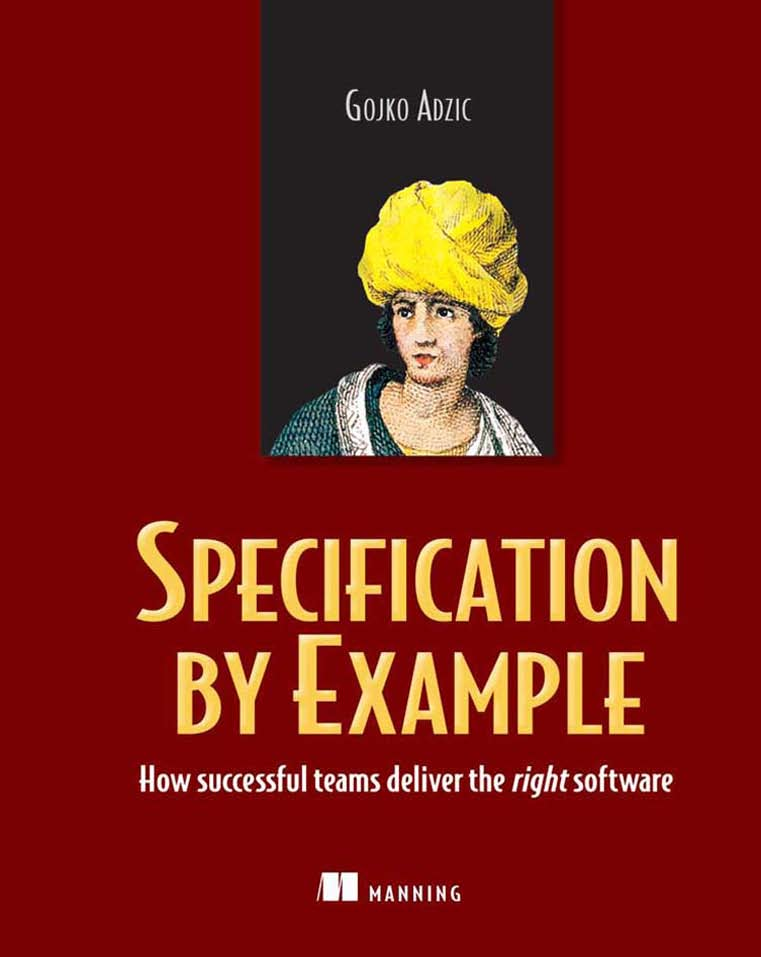
目录 v
前言 xiii
致谢 xxii
关于作者 xxiii
关于封面插图 xxiv
第一部分 入门
1 关键优势 3
更高效地实施变更 6
更高的产品质量 8
更少的返工 12
更好的工作协调 14
记住 16
2 关键流程模式 17
从目标推导范围 19
协作式规约 19
使用示例进行说明 20
精炼规约 20
在不改变规约的情况下自动化验证 21
频繁验证 23
演进文档系统 24
一个实际示例 24
业务目标 24
一个好的业务目标示例 24
范围 25
基础忠诚度系统的用户故事 25
关键示例 25
关键示例：免费配送 26
带示例的规约 26
免费配送 26
示例 26
可执行规约 27
将实例化需求(Specification by Example)作为更广泛流程变革的一部分实施
时机：在全新项目中
专注于提高质量
从功能测试自动化开始
时机：应用到现有项目
引入可执行规格说明工具
时机：测试人员拥有测试自动化
使用测试驱动开发(TDD)作为跳板
时机：开发人员对TDD有良好理解
避免使用”敏捷”术语
时机：在抵制变革的环境中工作
确保获得管理层支持
将实例化需求作为更好的验收测试方式来推销
不要将测试自动化作为最终目标
不要专注于工具
在迁移期间保留一人负责遗留脚本
时机：向遗留系统引入功能自动化
跟踪谁在运行和未运行自动化检查
时机：开发人员不愿参与
将可执行规格说明保存在版本控制系统中
对导出的活文档进行签署
时机：逐个迭代签署
对范围而非规格说明进行签署
时机：签署较长的里程碑
对”精简的用例”进行签署
时机：监管签署需要细节
引入用例实现
时机：签署需要所有细节
理解”为什么”和”为谁”
理解价值来自何处
理解业务用户期望的输出
让开发人员提供用户故事的”我想要”部分
适用时机：业务用户信任开发团队
询问某事如何有用
询问替代解决方案
不要只关注最底层
确保团队交付完整功能
适用时机：大型多站点项目
尝试大型全团队工作坊(Workshop)
适用时机：开始使用实例化需求(Specification by Example)
尝试小型工作坊(Workshop)（“三人组”）
适用时机：领域需要频繁澄清
结对编写
适用时机：成熟产品
让开发人员在迭代(Iteration)前频繁审查测试
适用时机：分析师编写测试
尝试非正式对话
适用时机：业务利益相关者(Stakeholder)随时可用
举行介绍性会议
适用时机：项目有许多利益相关者(Stakeholder)
让利益相关者(Stakeholder)参与
预先进行详细准备和审查
适用时机：远程利益相关者(Stakeholder)
让团队成员尽早审查故事
适用时机：分析师/领域专家成为瓶颈
只准备初始示例
适用时机：利益相关者(Stakeholder)随时可用
不要因过度准备而阻碍讨论
不要在示例中使用是/否答案
适用时机：底层概念没有单独定义
避免使用抽象的等价类
适用时机：你可以指定具体示例
用数据进行实验
询问检查功能的替代方法
适用时机：复杂/遗留基础设施
避免编造自己的数据
直接从客户那里获取基本示例
避免探索每种组合可能性的诱惑
寻找隐含的概念
获取精确的性能需求
使用低保真原型设计UI
尝试QUPER模型
使用检查清单进行讨论
构建参考示例
不要创建类似流程的描述
避免编写与代码紧密耦合的规格说明
抵制在规格说明中绕过技术困难的诱惑
不要陷入用户界面细节
使用描述性标题并用简短段落解释目标
展示并保持安静
不要过度指定示例
从基本示例开始；然后通过探索扩展
在规格说明中使用”Given-When-Then”语言
不要在规格说明中显式设置所有依赖项
在自动化层应用默认值
不要总是依赖默认值
适用场景： 在遗留系统(legacy system)上工作
适用场景： 团队成员对可执行规范(executable specifications)持怀疑态度
适用场景： 复杂集成
适用场景： 检查会话和工作流约束
适用场景： 用户界面包含复杂逻辑
适用场景： 指定非数据驱动的逻辑
适用场景： 数据驱动系统
适用场景： 遗留数据驱动系统
适用场景： 在自动化测试支持不佳的系统上工作
适用场景： 将自动化测试改造到遗留系统中
适用场景： 使用外部参考数据源
适用场景： 外部系统参与工作
适用场景： 大型/多站点团队
适用场景： 可执行规范修改参考数据
适用场景： 数据驱动系统
适用场景： 绿地项目(greenfield projects)
适用场景： 棕地项目(brownfield projects)
将长测试包拆分为更小的模块
避免使用内存数据库进行测试
分离快速测试和慢速测试
保持夜间测试包稳定
创建当前迭代测试包
并行化测试运行
尝试禁用风险较低的测试
创建已知回归失败测试包
自动检查哪些测试被关闭
不要创建冗长的规格说明
不要使用许多小规格说明来描述单个功能
寻找更高层次的概念
避免在测试中使用技术自动化概念
演进一种语言
基于用户画像(personas)构建规格说明语言
协作定义语言
记录你的构建块
按故事组织当前工作
按功能区域重组故事
沿 UI 导航路径组织
沿业务流程组织
引用可执行规格说明时使用标签而不是 URL
关键经验
流程变革
流程优化
活文档作为竞争优势
流程变革
改进协作
成果
关键经验
流程变革
活文档
当前流程
关键经验
流程变革
当前流程
关键经验
需求协作在利益相关者和交付团队成员之间建立信任
协作需要准备
协作方式多种多样
将最终目标视为业务流程文档是一个有用的模型
长期价值来自活文档
附录A 资源
索引
你手中拿着的这本书，或者你在屏幕上看到的这本书，是一系列研究的成果。这些研究探讨了世界各地的团队如何在极短的周期内，准确地定义、开发和交付无缺陷的软件。本书汇集了约50个项目的集体智慧，涵盖从公共网站到内部后台系统的各类项目。这些项目涉及多样化的团队，从在同一办公室工作的小团队，到分布在不同大陆的团队，采用的流程包括极限编程(XP)、Scrum、看板(Kanban)及类似方法（通常统称为敏捷(agile)和精益(lean)）。它们有一个共同点——都正确掌握了规格说明和测试协作的实践方法，并从中获得了巨大收益。
不同团队对处理规格说明和测试的方式使用不同的名称，但它们都共享一套核心原则和理念，我认为本质上是相同的。团队使用的一些名称包括：
同样的实践方法有如此多的名称，反映了当前这一领域的巨大创新。这也反映了本书描述的实践方法影响着团队处理规格说明、开发和测试的方式。为了保持一致性，我必须选择一个名称。我选定了实例化需求(Specification by Example)，并将在本书其余部分使用这个名称。我在本引言后面的”关于术语的几点说明”部分详细解释了这一选择。
我通过案例研究和访谈来呈现这个主题。我选择这种方式是为了让你看到，现在确实有真实的团队在这样做，并获得了巨大收益。实例化需求并不是什么神秘的技艺，尽管一些流行媒体可能会让你这样认为。
本书中几乎所有内容都来自真实世界、真实团队和真实经验。少数实践作为建议提出，没有案例研究支持。这些是我认为对未来很重要的想法，它们被明确标注为此类内容。
我确信，我为本书进行的研究和得出的结论
会被那些怀疑论者以”不是严肃的科学研究”为由而否定，他们声称敏捷开发(agile development)行不通，行业应该回归”真正的软件工程”。这没关系。与严肃科学研究所需的资源相比，我为这本书项目所能获得的资源微乎其微。即便有这些资源，我也不是科学家，也无意以科学家自居。我是一名实践者(practitioner)。
如果你和我一样是实践者，靠开发软件或帮助软件上线谋生，这本书能提供很多价值。我写这本书主要是为那些尝试实施敏捷流程却遇到问题的团队——这些问题表现为质量低下、返工和未能满足客户期望。（是的，这些都是问题，单纯的迭代只是权宜之计而非解决方案。）实例化需求(Specification by Example)、敏捷验收测试(agile acceptance testing)、行为驱动开发(Behavior-Driven Development)，以及所有这些同一事物的不同名称，都能解决这些问题。这本书将帮助你开始这些实践，并学会如何更好地为团队做贡献，无论你是测试人员、开发人员、分析师还是产品负责人。
几年前，我在会议上遇到的大多数人都没听说过这些理念。现在我遇到的大多数人对这些实践有所了解，但很多人未能正确实施。关于团队在实施敏捷开发过程中遇到的问题，相关文献非常少，所以每个受挫的团队都认为自己是独特的，认为这些理念在他们的”现实世界”中行不通。当我只听了五分钟就能猜出他们三四个最大的问题时，他们显得很惊讶。当得知许多其他团队也有同样的问题时，他们往往完全震惊。
如果你在这样的团队工作，这本书首先会让你知道你并不孤单。我为这本书采访的团队并不完美——他们也有大量问题。在碰壁之后，他们没有放弃，而是选择绕过或推倒它。了解这一点往往足以鼓励人们以不同的眼光看待自己的问题。我希望读完这本书后你也会有同样的感受。
如果你正在实施实例化需求，这本书将提供有用的建议，帮助你克服当前的问题，并了解未来可能遇到的情况。我希望你能从他人的错误中学习，完全避免某些问题。
这本书也是为有经验的实践者写的，即那些在流程中相对成功地实施了实例化需求的人。我开始进行采访时，以为自己已经了解大部分内容，只是在寻求外部确认。结束时我惊讶地发现，人们在各自的环境中实施了多少不同的想法，这些是我从未想过的。我从这些例子中学到了很多，希望你也能如此。这里描述的实践和理念应该能激励你尝试解决问题的替代方案，或者在阅读类似故事后意识到如何改进团队的流程。
在第一部分，我介绍实例化需求。我不是说服你为什么应该遵循书中概述的原则，而是以真正的实例化需求风格向你展示团队从这个流程中获得的好处实例。如果你正在考虑购买这本书，请浏览第一章，看看其中呈现的好处是否适用于你的项目。在第二章，我介绍实例化需求的关键流程模式和关键工件(artifacts)。在第三章，我更详细地解释活文档(living documentation)的概念。在第四章，我介绍启动流程和团队文化变革的最常见起点，并建议在开始实施流程时需要注意什么。
我写这本书的目标之一是为团队用于实施实例化需求的模式、理念和工件创建一套一致的语言。社区对这个实践整体有十几个名称，对其各种元素的名称更是多达两倍。不同的人把同一事物称为特性文件(feature files)、故事测试(story tests)、BDD文件、验收测试(acceptance tests)等等。因此，我在第二章也介绍了我认为非常好的所有关键元素名称。即使你是有经验的实践者，我也建议你阅读这一章，以确保我们对本书中的关键名称、短语和模式有相同的理解。
在第二部分，我介绍案例研究中的团队用于实施实例化需求原则的关键实践。不同环境中的团队做着非常不同的事情，有时甚至是相反或冲突的，却达到相同的效果。除了实践之外，我还记录了团队使用这些实践来实施底层原则的环境。第二部分的七章大致按流程领域划分。
软件中没有最佳实践(best practices)，但确实有好的想法，我们
可以尝试在不同场景中应用。你会在第二部分的各节旁边看到点赞和点踩图标，表示调查中多个团队认为有用的实践或他们常遇到的问题。把这些当作可以尝试或避免的建议，而不是必须遵循的规定。箭头图标指向每个实践中特别重要的想法。
软件开发不是静态的——团队和环境会变化，流程也必须跟着变化。我在第三部分展示了几个精选团队的案例研究。我描述了他们的流程、约束和背景，分析了流程如何演变。这些故事将帮助你开始自己的旅程或迈出下一步，找到灵感，发现新的做事方式。
在本书的最后一章，我总结了从案例研究中学到的关键内容。
在传统的守破离（Shu-ha-ri）学习模型中，本书处于”破”（Ha）的层次。“破”是关于打破旧规则，展示存在多种成功模式。在我的书《跨越沟通鸿沟》（Bridging the Communication Gap）中，我展示了我的模型和经验。在本书中，我努力不受自己背景的影响。我只在有重要观点要阐述，且书中介绍的团队没有类似情况时，才会提及我参与过的项目。从这个意义上说，《实例化需求》（Specification by Example）是《跨越沟通鸿沟》的延续。
我在第二章简要介绍了基本原则。即使你以前从未听说过这些想法，这也应该能让你有足够的信息来理解本书的其余部分，但我不会过多深入基础知识。我在《跨越沟通鸿沟》中详细介绍了实例化需求的基础知识，不想重复自己。
如果你想更详细地了解基础知识，请访问 http://specificationbyexample.com，注册本书副本，你将免费获得《跨越沟通鸿沟》的PDF版本。
我不认为我会在”离”（Ri）层次上写这个主题的后续——因为那个层次超越了书本。另一方面，我相信本书会帮助你达到那个层次。一旦你开始认为选择特定工具无关紧要，你就到达了那个境界。
守破离是与合气道相关的学习模型。它大致翻译为”遵守-脱离-离开”。在第一层（守-“遵守”），学生通过紧密遵循一个模型来学习。在第二层（破-“脱离”），学生了解到存在多种模型和解决方案。在第三层（离-“离开”），学生超越了遵循模型的阶段。
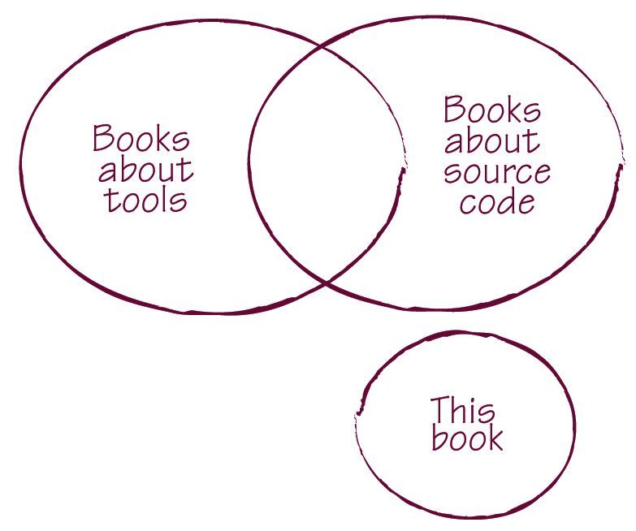
本书没有源代码或如何使用特定工具的说明。我觉得有必要预先说明这一点，因为在出版过程中我已经解释过好几次了（通常是回答这样的问题：“你什么意思？一本软件开发书没有源代码？这怎么可能？”）。
实例化需求的原则和实践主要影响软件交付团队中人们的沟通方式，以及他们如何与业务用户和利益相关者协作。我相信许多工具供应商会试图向你推销技术解决方案。也有许多经理愿意付费让问题立即消失。不幸的是，这主要是人的问题，而不是技术问题。
比尔·盖茨说过：“在商业中使用任何技术的第一条规则是，将自动化应用于高效运营会放大效率。第二条是，将自动化应用于低效运营会放大低效。”许多在实例化需求上失败的团队通过自动化放大了他们的流程低效。我不想专注于特定工具，而是想解决团队难以实施这些想法的真正原因。一旦你把沟通和协作做好了，你就能选择合适的工具来配合。如果你想在阅读本书后了解更多支持实例化需求的工具，请访问 http://specificationbyexample.com 查看资源部分。
如果这是你第一次接触实例化需求、验收测试驱动开发（Acceptance Test-Driven Development）、敏捷验收测试（agile acceptance testing）、行为驱动开发（Behavior-Driven Development）或人们用于这套实践的其他名称，你已经避免了多年来由误导性名称造成的困惑。你应该为此感到高兴，可以跳过引言的这部分。如果你已经接触过这些想法中的任何一个，我在本书中使用的名称可能会让你惊讶。继续阅读以了解我为什么使用这些名称，以及为什么你也应该开始使用它们。
在写这本书时，我遇到了从业者在编写自动化规格说明时经常遇到的同样问题。术语必须一致才有意义，但我们不一定在写下来之前就能看到这一点。因为这本书是一系列访谈的结果，我交谈过的许多人对同一事物使用不同的名称，要让故事与所有不同的名称保持一致相当困难。
我意识到实例化需求的从业者，包括我自己，
传统上，我们一直习惯于使用技术术语来迷惑自己和其他试图实施这些实践的人。后来我决定，这本书的目标之一是改变社区中的术语。如果我们想让业务用户更多地参与进来——这是这些实践的关键目标之一——我们就必须为正确的事物使用正确的名称，停止让人们感到困惑。
当我们编写规格说明时，这个教训是显而易见的，我们知道需要保持命名一致并避免误导性术语。但当我们谈论流程时却没有这样做。例如，当我们在实例化需求（Specification by Example）的语境中说持续集成（continuous integration）时，我们实际上并不是指运行集成测试。那为什么要使用这个术语，然后还要解释验收测试与集成测试有何不同呢？在我开始使用规格说明工作坊（specification workshop）作为关于验收测试的协作会议名称之前，很难说服业务用户参与。但简单的命名改变就解决了这个问题。通过使用更好的名称，我们可以避免许多完全无意义的讨论，让人们直接走上正确的道路。
我首先想解释为什么我选择”实例化需求”（Specification by Example）作为整套实践的总称，而不是敏捷验收测试、行为驱动开发（Behavior-Driven Development）或验收测试驱动开发（Acceptance Test-Driven Development）。
在2010年伦敦的领域驱动设计交流大会上，Eric Evans认为敏捷（agile）作为一个术语已经失去了所有意义，因为现在任何东西都可以被称为敏捷。不幸的是，他是对的。我见过太多团队试图实施一个明显有问题的流程，却给它贴上敏捷的标签，仿佛这样就能神奇地让它变得更好。尽管有大量关于如何正确实施XP、Scrum和其他不太流行的敏捷流程的文献。
为了绕过这种毫无意义的模糊性以及关于敏捷是否有效（以及它是什么）的争论，我在本书中尽可能避免使用敏捷这个术语。我只在提到那些开始实施基于敏捷宣言原则的明确定义流程的团队时才使用它。因此，如果不能在每隔一句话中提到敏捷，那么敏捷验收测试作为名称就不在考虑范围内了。
这里描述的实践并不构成一个完整的软件开发方法论。它们补充其他方法论——无论是基于迭代还是基于流程的——以在规格说明和测试中提供严谨性，增强各利益相关者和软件开发团队成员之间的沟通，减少不必要的返工，并促进变更。所以我不想使用任何”驱动开发”的名称。尤其不想用行为驱动开发（BDD）。不要把这当作我对BDD有任何意见的信号。恰恰相反，我喜欢BDD，并认为本书的大部分内容实际上是BDD的核心部分。但BDD也存在命名问题。
BDD的实际含义一直在变化。Dan North是BDD是什么和不是什么的核心权威，他在2009年的敏捷规格说明、BDD和测试交流大会上说BDD是一种方法论。（实际上他称之为”第二代、由外而内、拉动式、多利益相关者、多尺度、高度自动化的敏捷方法论”。）为了避免North所说的BDD与我所认为的BDD之间的任何混淆和歧义，我不想使用那个名称。这本书是关于一套精确的实践，你可以在一系列方法论中使用它们，包括BDD（如果你接受BDD是一种方法论的话）。
我还想尽量避免使用测试这个词。不幸的是，许多管理者和业务用户认为测试是一项技术性的辅助活动，不是他们想要参与的事情。毕竟，他们有专门的测试人员来处理这些。实例化需求要求利益相关者和交付团队成员的积极参与，包括开发人员、测试人员和分析师。如果不在标题中放入测试，故事测试、敏捷验收测试和类似的名称就都不合适了。
这使得”实例化需求”成为最有意义且负面包袱最少的名称。
实例化需求由几个流程模式（process patterns）组成，它们是更广泛的软件开发生命周期的元素。我在本书中使用的流程模式名称是英国敏捷测试用户组会议、敏捷联盟功能测试工具邮件列表和研讨会上多次讨论的结果。其中一些已经使用了一段时间；一些对大多数读者来说是新的。
社区中一种流行的方法是使用实践或工具的名称来描述流程的一部分。特性注入（Feature Injection）就是一个很好的例子——它是从业务目标中提取项目范围的流行名称。但特性注入只是实现这一目标的一种技术，还有其他方法可以达到同样的目标。为了讨论不同团队在不同情境下做什么，我们需要一个包含所有这些实践的更高层次的概念。一个好的名称描述预期结果，并清楚地指出这套实践的关键区分要素。
在特性注入和类似实践的情况下，结果是项目或里程碑的范围。与其他定义范围的方式的关键区别在于我们关注业务目标。所以我建议我们谈论从目标推导范围（deriving scope from goals）。
团队在实例化需求方面面临的最大问题之一是谁应该
写什么以及何时写。因此我们需要一个好名字，清楚地表明每个人都应该参与（而且这需要在团队开始编程或测试之前发生），因为我们想把验收测试作为开发的目标。测试先行（Test first）是一个很好的技术名称，但业务用户不理解它，而且它没有暗示协作。我建议我们用协作式规格说明（specifying collaboratively）来代替测试先行或编写验收测试。
把每一个数字可能性都放入自动化功能测试中听起来很正常。既然是自动化的，为什么不这样做呢？但这种复杂的测试无法作为沟通工具使用，而在实例化需求（Specification by Example）中，我们需要用测试来沟通。因此，与其说编写功能测试，不如说用示例来说明（illustrating using examples），并期望其输出是关键示例（key examples），以表明我们只需要足够的内容来正确解释上下文。
关键示例是原始材料，但如果我们只谈论验收测试，那为什么不直接把复杂的50列、100行的示例表格扔进验收测试而不加任何解释呢？反正是由机器来测试的。在实例化需求中，测试既是给人看的，也是给机器看的。我们需要明确，在用示例说明之后还有一个步骤，在这个步骤中我们提取最小的属性和示例集来规定业务规则，添加标题和描述等等。我建议把这个步骤称为精炼规格说明（refining the specification）。
这种精炼的结果同时是一份规格说明、一个开发目标、一种客观的验收检查方式，以及后续的功能回归测试。我不想把它称为验收测试，因为这样很难解释为什么这份文档需要保持领域语言、保持可读性和易于访问。我建议把精炼的结果称为带示例的规格说明（specification with examples），这立即表明它需要基于示例，但也要包含不仅仅是原始数据的内容。把这个产物称为规格说明，可以明显地表明每个人都应该关心它，而且它需要易于理解。除此之外，还有一个完全不同的争论：这些检查是用来自动接受软件，还是用来自动拒绝不满足我们需求的代码。
我只是不想再花时间和那些已经购买了QTP许可证的人争论它完全不适合做验收测试。只要我们谈论测试自动化，就总会有人推动使用测试人员已经用于自动化的任何糟糕工具，因为对管理者来说，团队使用单一的测试自动化工具是合乎逻辑的。敏捷验收测试和BDD工具不与QTP或类似工具竞争；它们解决的是完全不同的问题。
规格说明不应该仅仅为了自动化而被翻译成技术性的东西。与其谈论测试自动化，不如把不扭曲任何信息地自动化检查称为不改变规格说明的自动化验证（automating validation without changing specifications）。我们需要在不改变原始规格说明的情况下自动化验证，这一事实应该帮助我们避免在测试规格说明中直接使用脚本和技术库的恐怖做法。可执行规格说明应该与它在白板上的样子保持不变；它不应该被翻译成Selenium命令。
在规格说明的验证被自动化之后，我们可以用它来验证系统。实际上，我们得到了可执行规格说明（executable specifications）。
我们希望频繁检查所有规格说明，以确保系统仍然按照预期工作，同样重要的是，检查规格说明是否仍然描述了系统的功能。如果我们把这称为回归测试，就很难向测试人员解释为什么他们不应该在之前简洁、聚焦的规格说明中添加五百万个其他测试用例。如果我们谈论持续集成（continuous integration），那么我们就会陷入解释为什么这些测试不应该总是端到端运行并检查整个系统的麻烦。对于一些遗留系统，我们需要在实时部署的环境中运行验收测试。技术集成测试在部署之前运行。所以我们不要谈论回归测试或持续集成；让我们谈论频繁验证（validating frequently）。
实例化需求的长期回报来自于拥有一份关于系统功能的参考文档，它与代码本身一样相关，但更容易阅读。这使得长期开发更加高效，促进与业务用户的协作，使软件设计与业务模型保持一致，并使每个人的工作都更加轻松。但要做到这一点，参考文档必须真正相关，必须得到维护，并且必须在内部和与代码保持一致。我们不应该有使用三年前术语的测试孤岛，以及使用一年前术语的测试孤岛，等等。让忙碌的团队回去更新测试很难推销，但在重大变更后回去更新文档是预期之中的。所以我们不要谈论装满数百个测试的文件夹，让我们谈论演进活文档系统（evolving a living documentation system）。这使得解释为什么事情应该是不言自明的、为什么业务用户也需要访问它、以及为什么它必须组织良好以便于查找变得更加容易。
就是这样：我选择这些名称不是因为它们之前的流行程度，而是因为它们
这些过程模式的命名应该创建一个真正指出重要事项并减少混淆的心智模型。我希望你能看到这一点，并采用这种新术语。
如果没有许多人的支持和贡献，这本书就不会存在。首先，我要感谢所有让我汲取智慧并分享经验的人：Adam Knight、André Brissette、Andrew Jackman、Aslak Hellesøy、Børge Lotre、Channing Walton、Christian Hassa、Cindy Bartz、Clare McLennan、Damon Morgan、Francesco Rizzi、Gaspar Nagy、Geoff Bache、Hemal Kuntawala、Ian Cooper、Ismo Aro、Jodie Parker、Johannes Link、Jon Neale、Jonas Bandi、Justin Davis、Kumaran Sivapathasuntharam、Lance Walton、Lisa Crispin、Marco Milone、Marta Gonzalez Ferrero、Martin Jackson、Matthew Steer、Mikael Vik、Mike Vogel、Maykel Suarez、Pascal Mestdach、Peter Janssens、Phil Cowans、Pierre Veragen、Rakesh Patel、Rob Park、Scott Berger、Stuart Ervine、Stuart Taylor、Stephen Lloyd、Suzanne Kidwell、Tim Andersen、Tony To、Wes Williams 和 Xu Yi。是你们写了这本书，我只是把它记录下来。
Elisabeth Hendrickson、David Evans、Matt Wynne、Pekka Klärck 和 Ran Nyman 慷慨地帮助我联系他们的同事、客户和合作伙伴进行这项研究。Adam Geras、Joseph Wilk、Markus Gärtner、Mike Stockdale、Rick Mugridge、Robert Martin、Dan North、Tom Vercauteren 和 Tom Roden 帮助我完善了所有想法并更好地解释它们。以下人员在开发过程中审阅了手稿，我感谢他们的反馈：Bas Vodde、Craig Smith、Alex Bepple、John Stevenson、Joseph Wilk、Michele Mauro、Oleksandr Alesinskyy、Robert Martin、Robert Wenner 和 Saicharan Manga。特别感谢 Rick Mugridge 在出版过程中对手稿进行的最终校对。
Manning 出版社的 Jeff Bleiel、June Eding、Linda Recktenwald、Barbara Mirecki、Leslie Haimes、Martin Murtonen 和 Mary Piergies 在将这些故事转化为一本真正的书籍方面发挥了重要作用。
同时感谢 Craig Larman、Jim Shore 和 Harvey Wheaton 抽出时间回复我的邮件。
Gojko Adzic 五年前被实例化需求（Specification by Example）所吸引。从那时起，他帮助众多团队实施这些实践，撰写了两本关于该主题的书籍，并为多个开源项目做出了贡献。Gojko 是领先的软件开发和测试会议的常客演讲者，并运营着英国敏捷测试用户组。
在过去的 12 年里，他曾担任开发人员、架构师、技术总监和顾问，参与了股票和能源交易、移动定位、电子商务、在线游戏和复杂配置管理等项目。
Gojko 经营着 Neuri 有限公司，这是一家总部位于英国的咨询公司，帮助有抱负的团队（从网络初创公司到大型金融机构）实施实例化需求和敏捷测试实践。
如需联系，请发送邮件至 gojko@neuri.com 或访问 http://gojko.net。
您也可以通过 Manning 出版社运营的作者在线论坛联系作者，网址为 www.manning.com/SpecificationbyExample。Manning 对读者的承诺是提供一个场所，让读者之间以及读者与作者之间能够进行有意义的对话。这并不意味着作者会有特定数量的参与，作者对书籍论坛的贡献仍然是自愿的（且无偿的）。只要本书仍在印刷中，作者在线论坛和之前讨论的存档将一直可以从出版商的网站访问。
《实例化需求》封面上的人物标注为”旅行者”，取自 19 世纪版本的 Sylvain Maréchal 四卷本地区服饰习俗汇编，该书在法国出版。每幅插图都是精心绘制并手工上色的。Maréchal 收藏的丰富多样性生动地提醒我们，仅仅 200 年前，世界各地的城镇和国家在文化上是多么不同。即使只相隔几英里，人们也说着不同的方言和语言。在街道上或乡村里，仅凭穿着就很容易辨认出他们住在哪里，以及他们的职业或社会地位。
从那时起，着装规范已经改变，当时如此丰富的地区多样性已经消退。现在很难区分不同大陆的居民，更不用说不同城镇或地区的居民了。也许我们用文化多样性换取了更加多样化的个人生活——当然也换取了更加多样化和快节奏的技术生活。
在很难区分一本计算机书籍与另一本的时代，Manning 以基于两个世纪前丰富的地区生活多样性的书籍封面来庆祝计算机行业的创造力和主动性，这些多样性通过 Maréchal 的图片重新焕发生机。
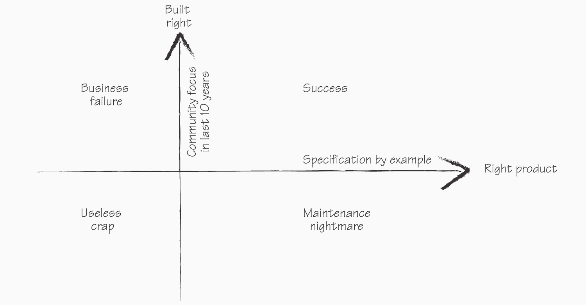
在互联网时代，交付速度是软件开发的主题。十年前，项目持续数年，项目阶段以月为单位衡量。如今，大多数团队的项目以月为单位衡量，项目阶段缩短到几周甚至几天。任何需要长期规划的事情都被放弃了，包括大规模的前期软件设计和详细的需求分析。需要比平均项目阶段更长时间的任务不再可行。告别代码冻结和数周的手动回归测试！
随着如此高频率的变化，文档很快就会过时。
详细的规格说明和测试计划需要投入大量精力来保持更新，因此被认为是浪费。那些日常工作依赖这些文档的人，如业务分析师或测试人员，在这个每周迭代的新世界中常常感到困惑，不知道该做什么。那些认为自己不受纸质文档缺失影响的软件开发人员，却在返工和维护不需要的功能上浪费了时间。他们没有花时间制定宏大的计划，而是浪费了数周时间打磨错误的产品。
在过去十年中，软件开发社区一直努力以”正确”的方式构建软件，专注于技术实践和理念以确保高质量的结果。但正确地构建产品和构建正确的产品是两回事。我们需要同时做到这两点才能成功。
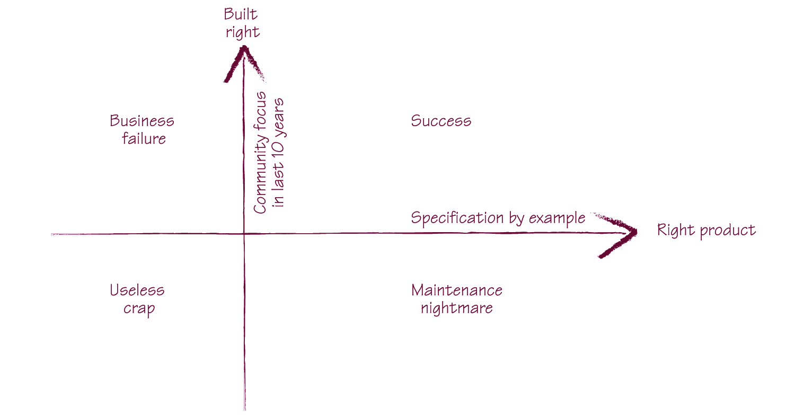
图1.1 实例化需求帮助团队构建正确的软件产品，与确保产品正确构建的技术实践相辅相成。
为了有效地构建正确的产品，软件开发实践必须提供以下保障：
传统上，构建正确的产品需要大量的功能规格说明、文档和漫长的测试阶段。如今，在每周交付软件的世界里，这种方式行不通了。我们需要一种解决方案，能够让我们：
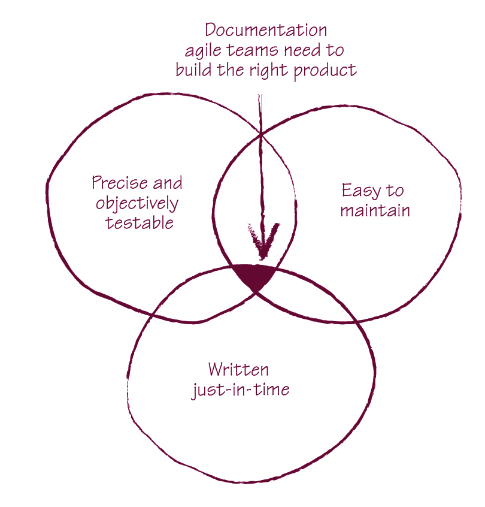
图1.2 敏捷项目正确文档类型的关键因素
虽然这些目标乍看起来相互冲突，但许多团队已经成功地实现了所有目标。在研究本书的过程中，我采访了30个团队，他们实施了大约50个项目。我寻找模式和共同实践，并识别出这些实践背后的基本原则。这些项目的共同理念定义了构建正确软件的好方法：实例化需求（Specification by Example）。
实例化需求是一组过程模式，帮助团队构建正确的软件产品。通过实例化需求，团队只编写足够的文档，以便在短迭代或基于流程的开发中有效地促进变更。
实例化需求的关键过程模式将在下一章介绍。在本章中，我将解释实例化需求的好处。我将使用实例化需求的风格来做这件事；我不会在理论性的引言中为本书构建论据，而是展示18个从实例化需求中获得巨大收益的真实团队案例。
在开始之前，让我强调一点：很难孤立地评估任何单一理念对项目的影响或效果。本书描述的实践与其他更成熟的敏捷软件开发实践（如测试驱动开发[TDD]、持续集成和用户故事规划）协同工作，并增强其有效性。当考察不同背景下的一系列项目时，模式就会浮现。我采访的一些团队在实施实例化需求之前就已经使用敏捷流程，而另一些团队则是在向敏捷流程过渡的同时实施实例化需求。大多数团队使用基于迭代的流程，如Scrum和极限编程（XP），或基于流程的方法，如看板（Kanban）——但有些团队甚至在按任何标准都不能被视为敏捷的环境中使用这些实践。然而，大多数团队报告了类似的收益：
在接下来的四个部分中，我们将通过真实案例更详细地了解这些收益。
在研究本书的过程中，我学到的最重要的一课是关于活文档（living documentation）的长期收益——事实上，我认为这是本书最重要的信息之一，我对此进行了广泛的讨论。活文档是一种关于系统功能的信息来源，它与编程语言代码一样可靠，但更容易访问和理解。活文档使团队能够协作分析拟议变更的影响并讨论潜在的解决方案。它还允许团队通过扩展现有文档来满足新需求。这使得随着时间的推移，规范和实施变更变得更加高效。最成功的团队是在实施实例化需求（Specification by Example）的过程中发现了活文档的长期收益。
位于爱荷华州西得梅因的爱荷华学生贷款流动性公司在2009年经历了相当重大的商业模式变革。前一年金融市场的动荡使得贷款机构几乎不可能为私人学生贷款找到资金来源。因此，许多贷款机构被迫退出私人学生贷款市场或改变其商业模式。爱荷华学生贷款公司成功地进行了调整。他们不再使用债券收益来资助私人学生贷款，而是汇集来自银行和其他金融机构的资金。
据软件分析师和开发人员Tim Andersen所说，为了有效地适应变化，他们必须对”系统的核心部分进行重大改造”。团队在开发软件时使用活文档作为记录业务需求的主要机制。活文档系统使他们能够确定新需求的影响，指定所需的变更，并确保系统的其余部分像以前一样工作。他们能够
在仅仅一个月内实施系统的根本性变更并将其发布到生产环境。活文档系统对于这一变革至关重要。Andersen说：
任何没有这些测试[活文档]的系统都会使开发停滞，那将不得不重写。
位于魁北克蒙特利尔的Pyxis Technologies公司的Talia项目团队有着类似的经历。Talia是一个企业系统的虚拟助手，是一个具有复杂规则的聊天机器人，与员工进行沟通。从开发的第一天起，Talia团队就使用实例化需求来构建活文档系统。一年后，他们不得不从头重写虚拟代理引擎的核心——这时对活文档的投资得到了回报。Talia产品总监André Brissette评论道：
没有它，任何重大重构都将是自杀行为。

他们的活文档系统使团队确信，当变更完成时，新系统将与旧系统一样工作。它还使Brissette能够管理和跟踪项目进度。

位于伦敦的现场音乐消费网站Songkick的团队在重新开发其网站上的活动信息流时，使用活文档系统来促进变更。他们意识到信息流的实现方式无法扩展到所需的容量；活文档在他们重建信息流时为他们提供了支持。Songkick的首席技术官Phil Cowans估计，由于拥有活文档系统，团队节省了至少50%的实施变更所需时间。据Cowans说：


因为我们有如此好的覆盖率，而且我们真的信任[活文档系统中的]测试，所以我们非常有信心快速对基础设施进行重大更改。我们知道功能不会改变，或者如果确实改变了，测试会捕捉到。

位于科罗拉多州丹佛市的养老金服务提供商ePlan Services的开发团队自2003年以来一直使用实例化需求。他们构建和维护一个具有众多利益相关者、复杂业务规则和复杂合规要求的金融服务应用程序。项目开始三年后，一位对系统遗留部分有独特了解的经理搬到了印度。据ePlan Services的测试人员、《敏捷测试：测试人员和团队实用指南》一书的作者Lisa Crispin所说，团队努力学习这位经理所知道的内容，并将其构建到活文档中。活文档系统使他们能够捕获专家关于业务流程的知识，并使所有团队成员能够即时获取。他们消除了知识转移的瓶颈，从而能够高效地支持和扩展应用程序。
位于比利时奥斯特坎普的IHC集团的中央患者管理项目团队实施了活文档系统，取得了类似的成果。这个始于2000年的持续项目最初是对遗留大型机系统的重写。项目解决方案架构师Pascal Mestdach说，团队受益匪浅：

只有少数人知道遗留系统上的某些功能是做什么的——现在这变得更加清晰了，因为团队针对该功能有一套不断增长的测试[活文档]，它描述了功能的作用。而且当专家休假时，问题也能得到解答。对于其他开发人员来说，一段软件在做什么变得更加清晰。而且它是经过测试的。

这些例子说明了活文档系统如何帮助交付团队分享知识并应对人员变动。它还能让企业更高效地应对市场变化。我将在第3章详细解释这一点。
实例化需求（Specification by Example）改善了交付团队成员之间的协作，促进了与业务用户的更好互动，并为交付提供了清晰的客观目标——从而大幅提升产品质量。
有两个案例研究尤为突出。Sabre Holdings的敏捷教练Wes Williams，以及曾在BNP Paribas项目工作的顾问开发者Andrew Jackman，描述了之前多次失败的项目如何通过实例化需求获得成功。本书描述的方法帮助他们的团队征服了以前难以管理的业务领域复杂性，并确保了高质量的交付。
在Sabre Holdings，Wes Williams参与了一个为期两年的航空机票预订项目，该项目因全球分销和数据驱动流程而变得复杂。项目涉及30名开发人员，分布在两个大洲的三个团队中工作。据Williams说，前两次构建系统的尝试都失败了，但第三次——使用了实例化需求——成功了。Williams这样说：

我们与一个大客户（一家大型航空公司）成功上线，问题很少，在业务验收测试期间只有一个严重级别1的问题，

与故障转移相关。
Williams估计实例化需求是成功的关键之一。除了确保更高的质量外，实例化需求还促进了开发人员和测试人员之间的信任。
在BNP Paribas，Sierra项目是实例化需求如何带来高质量产品的另一个很好的例子。Sierra是一个债券数据仓库，整合了来自多个内部系统、评级机构和其他外部来源的信息，并将其分发到银行内部的各个系统。不同的系统和组织使用相同的术语却有不同的含义，这造成了很多误解。据帮助第三次尝试成功的团队开发人员Channing Walton说，前两次实施系统的尝试都失败了。第三次努力之所以成功，部分原因是实例化需求使团队能够应对复杂性并确保共同理解。最终结果的产品质量令人印象深刻。据Sierra项目的顾问开发者Andrew Jackman说，该项目自2005年上线以来”在生产环境中没有发生重大事故”。目前在Sierra项目工作的大多数人在项目开始时并不在场，但质量水平仍然很高。
Bekk Consulting为一家大型法国银行的分支机构开发汽车租赁系统时也取得了类似的结果。据原始团队成员、支持实例化需求的流行自动化工具Cucumber的作者Aslak Hellesøy说，系统上线两年来只报告了五个bug，尽管软件现在由一个全新的团队维护。
Lance Walton在伦敦一家大型瑞士银行的分支机构担任流程顾问，参与开发一个之前多次启动失败的订单管理系统。Walton表示，该项目是在一个假设系统需要至少与开发团队一样大的支持团队的环境中实施的。他的团队使用了实例化需求，在项目启动九个月后将系统交付生产，一天内通过了业务验收测试，之后六个月没有报告任何bug。据Walton说，新系统不需要额外的支持人员，成本低于预期，并使团队能够更早交付成品。相比之下，他们旁边的团队支持人员是开发人员的十倍。据Walton说，

目前团队仍在每周发布，用户总是对此感到满意。从质量角度来看，它是极好的。

实例化需求的技术既适用于棕地项目（Brownfield）也适用于绿地项目（Greenfield）。建立可信的文档和清理遗留系统需要时间，但团队很快就能看到许多好处，包括对新交付物的信心。
一个很好的例子是JP Morgan Chase伦敦的外汇现金管理系统。项目的测试自动化顾问Martin Jackson说，业务分析师预计项目会延期——结果却提前两周交付。高产品质量使他们能够在一周内成功完成业务验收测试阶段，而不是原计划的四周。Jackson说，

我们部署了它，它运行正常。业务部门向董事会报告这是他们经历过的最好的UAT体验。

实例化需求还使Jackson的团队能够在项目开发后期快速实施”相当重大的技术变更”，提高了计算精度。Jackson报告说：

FitNesse套件（活文档）覆盖的所有功能经历了整个系统测试、整个UAT，并上线生产，没有一个缺陷。在系统测试期间，核心计算组件之外捕获了几个错误。让业务部门的UAT体验如此好的原因是，当计算错误出现时，我们都相当确定根本
由于问题根源在计算代码的上游，FitNesse测试套件使得诊断缺陷来源变得更加容易，从而实现了更清晰、更快速的生产交付。

位于科罗拉多州丹佛市的惠好公司软件开发团队负责编写和维护多个工程应用程序以及一个木框架计算引擎。在应用实例化需求(Specification by Example)之前，建筑工程师通常不参与软件开发，尽管团队需要处理复杂的科学计算公式和规则。这导致了大量质量问题和延误，而且由于该引擎被多个应用程序使用，流程变得更加复杂。据项目软件质量保证负责人Pierre Veragen介绍，发布前的稳定阶段会拖延很长时间，几乎每次发布都会出现问题。
实施实例化需求后，团队现在与结构工程师协作制定规格说明，并将验证过程自动化。当变更请求到来时，测试人员与结构工程师合作，在开发开始前捕获预期的计算结果，并将其记录为带有示例的规格说明。批准变更的工程师随后编写规格说明和测试。
Veragen表示，新方法的主要优势是他们可以充满信心地进行变更。到2010年初，他们的活文档系统中有超过30,000个检查项，多年来没有发现重大缺陷，现在已经停止跟踪缺陷。据Veragen说：

我们不需要缺陷计数指标，因为我们知道问题不会再出现……工程师们喜欢测试先行的方法，也喜欢他们可以直接访问自动化测试。
Lance Walton曾在伦敦一家大型法国银行的分支机构从事信用风险管理应用程序的开发。项目开始时，外部顾问帮助团队采用极限编程(XP)实践，但他们没有采用任何实例化需求的理念（尽管XP包含客户测试，这与可执行规格说明密切相关）。六个月后，Walton加入项目，发现代码质量很低。虽然团队每两周交付一次，但代码的编写方式使验证变得复杂。开发人员只测试最近实现的功能；随着系统的增长，这种方法变得不够用了。“每次发布时，大家都会紧张地坐在那里，确保一切仍在运行，我们预计几小时内会出现一些问题，”Walton说。在他们实施实例化需求后，产品的质量和信心显著提高。他补充道：

我们非常有信心可以毫无问题地发布。
我们达到了这样一个程度：我们可以很放心地部署然后出去吃午饭，

而不用留下来看看是否一切正常。
相比之下，英国Trader Media集团的一个网站重写项目在团队停止使用实例化需求后遭遇了质量问题。最初，团队协作制定规格说明并自动化验证。在管理层要求更早更快交付更多功能的压力下，他们停止了这种做法。“我们注意到质量急剧下降，”测试团队负责人Stuart Taylor说。“以前我们（测试人员）很难发现缺陷，后来我们发现一个用户故事可能产生四五个缺陷。”
协作制定规格说明并非只有敏捷团队才能受益。在《弥合沟通鸿沟》一书中，我建议可以将类似的实践应用于更传统的结构化流程。该书出版后，我在研究本书时发现了一个这样做的公司案例。
英国Sopra集团的高级测试顾问Matthew Steer帮助一家大型电信公司及其第三方离岸软件交付合作伙伴实施了这些实践。变革的主要原因是认识到项目正在遭受需求定义不清的困扰。Steer将实施这些理念那一年的交付情况与前一年的软件交付成本进行了比较。毫不意外，采用瀑布方法的这些项目没有达到零缺陷水平，但这些变化”增加了上游缺陷检测，减少了下游返工和成本。“据Steer说：
我们能够证明这种方法的有效性，通过在生命周期早期捕获更多传统上在后期阶段才发现的缺陷。生命周期末期的缺陷数量显著减少，而早期阶段的缺陷数量增加了。

最终结果是仅2007年就节省了超过170万英镑的交付成本。
通常，频繁发布能促进快速反馈，使开发团队更早发现错误并修复。但快速迭代并不能防止错误发生。团队经常需要三四次尝试才能实现一个功能；开发人员声称这是因为客户在拿到可以试用的东西之前不知道自己想要什么。我不同意这种说法。使用实例化需求(Specification by Example)，团队通常第一次尝试就能命中目标。这节省了大量时间，使交付过程更可预测、更可靠。
英国天空广播公司伦敦分部的天空网络服务(SNS)团队负责宽带和电话配置软件，具有高度的业务工作流和集成复杂性。该团队由六个小组组成。他们使用实例化需求已有数年。据该团队高级敏捷Java开发人员Rakesh Patel介绍，“我们确实能按承诺的时间交付”，
该团队在Sky内部享有很高的声誉。Patel曾短暂在另一个组织工作过；他对两个团队进行了如下比较：

每次他们（另一个组织的开发人员）在冲刺(Sprint)结束时将软件交给测试人员，测试人员总会发现问题，然后软件总是被退回给开发人员。但在这里（Sky），我们没有那么多反复。如果我们有问题，我们在开发过程中就有问题需要让测试通过——要么通过，要么不通过。我们可以当场提出问题。

其他几个团队也注意到返工显著减少，包括LeanDog——一个为美国大型保险提供商开发聚合应用的团队。他们的应用在大量大型机和基于Web的服务之上呈现统一的用户界面，而来自全国各地的大量利益相关者使情况更加复杂。据帮助团队转型的LeanDog敏捷教练Rob Park介绍，该项目最初在需求方面存在许多功能缺口。他说：

当我们开始弄清楚事情时，我们需要澄清，然后我们发现实际上必须做其他事情。

团队实施了实例化需求，这带来了更好的规格说明并减少了返工。虽然开发人员在开始处理故事卡(Story Card)时仍会向业务分析师提问，“但问题已大大减少，来回沟通也减少了，而且问题的性质也大不相同了，”Park说。对他来说，实例化需求最有价值的方面是”在开始构建时就能理解故事的含义并了解故事的范围。”
许多团队还发现，在开发周期开始时使用实例化需求使需求更精确，可以更容易地管理产品待办列表(Product Backlog)。例如，能够及早发现过于模糊或功能需求存在太多缺口的故事，可以防止后续问题。如果没有实例化需求，团队经常在迭代中期发现问题，这会打断工作流程并需要耗时的重新协商——在大公司中，决定范围的利益相关者通常不容易找到。
实例化需求帮助团队建立协作式规格说明流程，减少迭代中期的问题。此外，实例化需求适合短迭代，不需要花几个月时间编写冗长的文档。
减少返工是佛罗里达州韦斯顿Ultimate Software公司全球人才管理团队的主要优势。协作制定规格说明对聚焦开发工作产生了重大影响。据高级开发人员Scott Berger介绍：

在团队接受故事之前与产品负责人(Product Owner)会面审查我们的测试场景，使工作小组（产品负责人、开发人员、测试人员）能够澄清模糊或缺失的需求。有时，会议的结果甚至导致故事被取消，例如，当测试场景揭示了隐藏的复杂性或系统内相互冲突的需求时。在一次这样的讨论之后，决定几乎重新设计整个功能！产品负责人有机会重写和重新切分规格说明，而不是让开发工作开始后中途停止或取消故事。通过举行这些会议，我们发现自己变得更有生产力和效率，因为浪费减少了，模糊和缺失的规格说明也减少了。这也使团队对预期达成共识。

大多数团队显著减少或完全消除了因误解需求或忽视客户期望而导致的返工。本书描述的实践使团队能够更好地与业务用户互动，确保对结果有共同的理解。
实例化需求(Specification by Example)的另一个重要好处是能够将不同的软件开发活动整合到短迭代周期中。根据我的经验以及本书中的案例研究，团队转向Scrum时最常见的障碍之一是无法在一个迭代内完全完成任务。许多团队仍然坚持”旧世界”的概念：先完成开发，再完成测试，最后打磨产品使其可部署。这造成了一种错觉，认为开发是分阶段完成的，而实际上需要后续的测试和修复才能真正完成。Scrum看板上的一个”完成”列意味着开发人员认为某事已完成，“完成-完成”列意味着测试人员同意，以此类推（甚至有”完成-完成-完成”列的报告）。工作经常陷入这种模式，测试结果会影响下一个周期，导致很大的变动性，使交付过程变得不可预测。
实例化需求解决了这个问题。本书描述的实践使团队能够清晰定义一个被普遍理解且可客观衡量的目标。因此，许多团队发现他们的分析、开发和测试活动变得更加协调一致。
uSwitch是英国最繁忙的网站之一，他们在改善协调方面提供了一个很好的例子。uSwitch在2008年实施了实例化需求，因为他们很难知道一个功能何时完成。“我们完成某件事，交给QA部门，他们会立即告诉我们忘记在某个场景下测试了。这给我们带来了很多问题，”在该网站工作的开发人员Stephen Lloyd说。通过实施实例化需求，他们克服了这个问题。Lloyd说他们现在作为一个团队整合得更好，对业务需求有了更好的理解。流程变更也带来了软件质量的提升。另一位在该网站工作的开发人员Hemal Kuntawala评论道：

我们整个网站的错误率显著下降。修复问题的周转时间比以前快得多。如果线上网站出现问题，我们通常可以在几小时内发布修复，而以前需要几天或几周才能修复。

Beazley是一家专业保险公司，他们的团队也体验到了改善的协调性。他们的业务分析师在美国工作，开发人员和测试人员在英国。他们实施实例化需求主要是为了确保软件在迭代结束时完成。Beazley的开发团队负责人Ian Cooper说：

我们一直在做单元测试，但问题是这些测试只能告诉我们软件是否工作，而不能告诉我们它是否做了客户想要的事情。我们以前甚至没有让测试人员在同一周期内测试。他们把上一个迭代的信息反馈到当前迭代。现在这种情况没有了。我们对验收有了更清晰的认识。

在新西兰为AdScale.de（一个在线广告市场）工作的团队也有类似的经历。项目启动两年后，用户界面和系统集成的复杂性增加，使得代码库太大，仅靠单元测试无法有效管理。开发人员会认为某事已完成，继续前进，然后在测试人员审查后不得不重做工作。由于测试人员和开发人员之间的脱节，发现问题需要很长时间。之前迭代的问题会影响未来的迭代，扰乱开发流程。实施实例化需求后，开发和测试更加紧密地协调。在该项目工作的开发人员/测试人员Clare McLennan表示：

这大大减轻了发布流程的压力——因为反馈是即时的。以前，开发人员会因为他们的功能没有发布而对我们感到沮丧。同时我们也对他们感到沮丧，因为他们没有修复问题，所以我们无法测试他们的功能。我们在等他们，他们在等我们。现在这种情况没有了，因为完成所有测试只需要一个小时。功能不会再回到下一个迭代中。

实例化需求允许团队以清晰、客观和可衡量的方式定义预期功能。它还加快了反馈速度，改善了开发流程，防止了对计划工作的干扰。
要点
（Scrum、极限编程[XP]）或基于流程的（看板）开发方法。一些理念也适用于结构化开发（统一软件开发过程、瀑布模型）流程，已有公司因此节省了数百万美元的案例。
实例化需求（Specification by Example）是一组流程模式，用于促进软件产品的变更，确保有效交付正确的产品。我在研究本书时采访的最成功团队所共同采用的关键模式及其关系如图2.1所示。大多数团队在寻找更高效构建和维护软件的方法时，通过反复试验来实施新的流程理念。通过揭示他们流程中的模式，我希望帮助其他人有意识地实施这些理念。
为什么是模式？
本书中介绍的流程理念构成了模式，因为它们是不同团队使用的重复出现的元素；我并非指克里斯托弗·亚历山大的模式定义。我引用的流程理念出现在多个不同的上下文中，并产生类似的结果。我没有记录更传统模式书籍中预期的力量和变化。部分由于本书中的案例研究，敏捷联盟功能测试工具小组组织了几次模式编写研讨会，以更传统的方式记录和构建模式目录，但这项工作需要一些时间才能完成。我决定将模式扩展为更传统的格式留给本书的未来版本。
在《弥合沟通鸿沟》一书中，我主要关注实例化需求的有形输出，如规格说明和验收测试。我忽略了不同上下文中的团队可能需要截然不同的方法来产生相同的工件。在本书中，我关注流程模式、工件如何创建，以及它们如何在流程中为后续工件做出贡献。
即时性
成功的团队不会一次性实施整个序列，也不会对所有规格说明都这样做，如图2.1所示——尤其不会在开发开始之前。相反，团队在准备好承担更多工作时从目标中推导范围，例如在项目阶段或里程碑开始时。只有当团队准备好开始实施某个条目时，例如在相关迭代开始时，才会继续进行规格说明。不要将图2.1中的序列误认为是大型瀑布式规格说明。
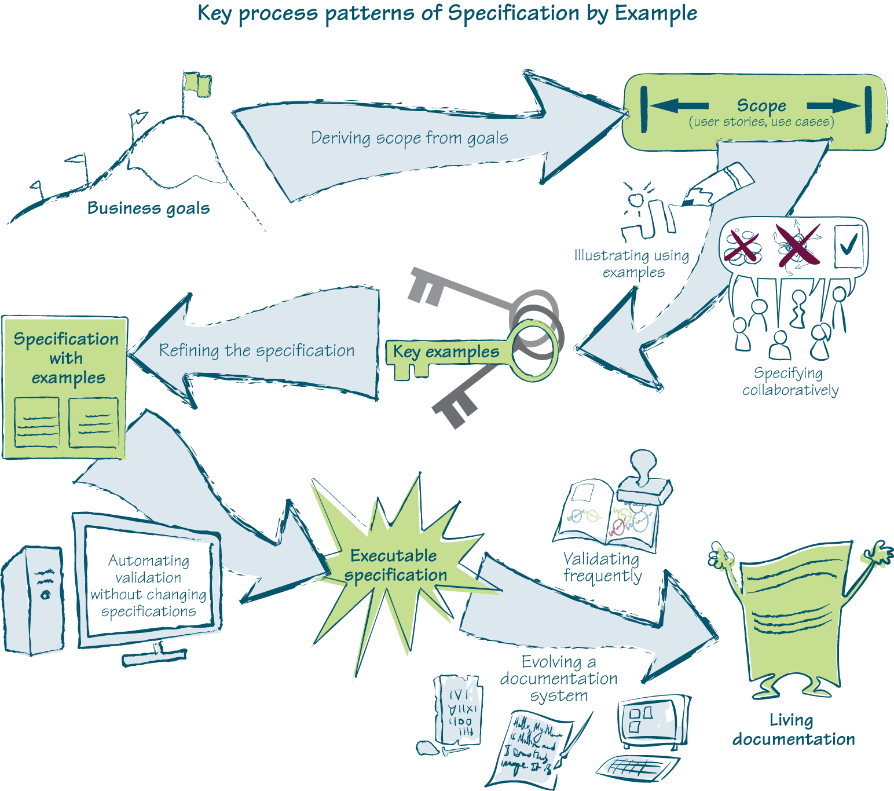
图2.1 实例化需求的关键流程模式
在本章中，我将简要概述关键流程模式。然后我们将在第2部分讨论在不同上下文中实施这些模式的关键挑战和理念。
实施范围为业务问题提供解决方案，或提供达成业务目标的手段。许多团队期望客户、产品负责人或业务用户在实施开始前确定工作范围（实施之前发生的一切通常被软件开发团队忽略）。在业务用户明确指定他们想要什么之后，软件交付团队就去实施。这应该会让客户满意。事实上，这正是构建正确产品的问题开始的时候。
通过依赖客户给他们一份用户故事、用例或其他相关信息的列表，软件交付团队实际上是在要求客户设计解决方案。但业务用户不是软件设计师。如果客户定义范围，项目就无法从交付团队成员的知识中受益。这导致软件做了客户要求的事情，但不是他们真正想要的。
成功的团队不是盲目接受软件需求作为未知问题的解决方案，而是从目标推导范围。他们从客户的业务目标开始，然后协作定义将实现该目标的范围。团队与业务用户一起确定解决方案。业务用户专注于传达所需功能的意图以及他们期望从中获得的价值。这有助于每个人理解需要什么。然后团队可以建议一个比业务用户自己想出的更便宜、更快、更容易交付或维护的解决方案。
如果开发人员和测试人员没有参与设计规格说明，这些规格说明就必须单独传达给团队。在实践中，这留下了许多误解的机会；细节可能在传递中丢失。因此，业务用户必须在交付后验证软件，如果验证失败，团队必须返回进行修改。这都是不必要的返工。
成功的交付团队不是依赖单个人在孤立环境中正确编写规格说明，而是与业务用户协作来指定解决方案。来自不同背景的人有不同的想法，并使用他们自己基于经验的技术来解决问题。技术专家知道如何更好地利用底层基础设施，或如何应用新兴技术。测试人员知道在哪里寻找潜在问题，团队应该努力预防这些问题。所有这些信息都需要在设计规格说明时捕获。
协作式规格说明使我们能够利用团队的知识和经验。
整个团队。这也创造了对规格说明的集体所有权，使每个人都更积极地参与交付过程。
自然语言是模糊的且依赖上下文。仅用这种语言编写的需求无法为开发或测试提供完整且明确的上下文。开发人员和测试人员必须解释需求来生产软件和测试脚本，而不同的人可能会对棘手的概念有不同的理解。
当某些看似显而易见的事情实际上需要领域专业知识或行话知识才能完全理解时，这个问题尤为突出。理解上的微小差异会产生累积效应，往往导致交付后需要返工的问题。这会造成不必要的延误。
成功的团队不是等到实现阶段才首次用编程语言精确表达规格说明，而是使用示例来说明规格说明。团队与业务用户合作，识别描述预期功能的关键示例。在此过程中，开发人员和测试人员经常建议额外的示例来说明边界情况或解决系统中特别容易出问题的区域。这会暴露功能缺口和不一致之处，确保所有参与者对需要交付的内容有共同理解，避免因误解和翻译错误导致的返工。
如果系统对所有关键示例都能正确工作，那么它就满足了大家商定的规格说明。关键示例有效地定义了软件需要做什么。它们既是开发的目标，也是检查开发是否完成的客观评估标准。
如果关键示例易于理解和沟通，它们就可以有效地用作明确且详细的需求。
协作过程中的开放讨论建立了对领域的共同理解，但产生的示例往往包含比必要更多的细节。例如，业务用户从用户界面角度思考，所以他们提供的示例是关于点击链接和填写字段时某些功能应该如何工作。这种冗长的描述会约束系统；详细说明某事应该如何完成而不是需要什么是一种浪费。多余的细节使示例更难沟通，
关键示例必须简洁才能有用。通过精炼规格说明，成功的团队会移除无关信息，为开发和测试创建具体且精确的上下文。他们用恰当的细节量定义目标，以便实现和验证。他们识别软件应该做什么，而不是如何做。
精炼后的示例可以用作交付的验收标准；在系统对所有示例都能正确工作之前，开发就没有完成。在提供额外信息使关键示例更易理解之后，团队创建带有示例的规格说明，它既是工作规格说明、验收测试，也是未来的功能回归测试。
一旦团队就带有示例的规格说明达成一致并进行精炼，团队就可以将它们用作实现的目标和验证产品的手段。在开发过程中，系统将使用这些测试进行多次验证，以确保它达到目标。手动运行这些检查会引入不必要的延误，反馈也会很慢。
快速反馈是在短迭代或流模式下开发软件的重要组成部分，所以我们需要使验证系统的过程廉价且高效。一个显而易见的解决方案是自动化。但这种自动化在概念上与通常的开发人员或测试人员自动化不同。
如果我们使用传统的编程（单元）自动化工具或传统的功能测试自动化工具来自动化关键示例的验证，我们就有可能在业务规格说明和技术自动化之间丢失细节而引入问题。技术自动化的规格说明将变得对业务用户不可访问。当需求变化时（这是何时的问题，而不是是否的问题）或者当开发人员或测试人员需要进一步澄清时，我们将无法使用之前自动化的规格说明。我们可以将关键示例既作为测试又以更可读的形式保存，如Word文档或网页，但一旦有多个版本的真相，我们就会有同步问题。这就是为什么纸质文档永远不是理想的。
为了从关键示例中获得最大价值，成功的团队在不改变信息的情况下自动化验证。他们在自动化过程中保持规格说明中的所有内容完全相同——没有误译的风险。当他们在不改变规格说明的情况下自动化验证时，关键示例看起来几乎与白板上的一样：对所有团队成员都是可理解和可访问的。
一个对所有团队成员都可理解和可访问的自动化示例规格说明成为可执行规格说明。我们可以将它用作开发目标，轻松检查系统是否按照商定的方式工作，我们还可以使用同一文档从业务用户那里获得澄清。如果我们需要更改规格说明，我们只需要在一个地方进行更改。
如果你从未见过自动化可执行规格说明的工具，这可能看起来难以置信，但请看图2.2和图2.3。它们展示了使用两个流行工具Concordion和FitNesse完全自动化的可执行规格说明。
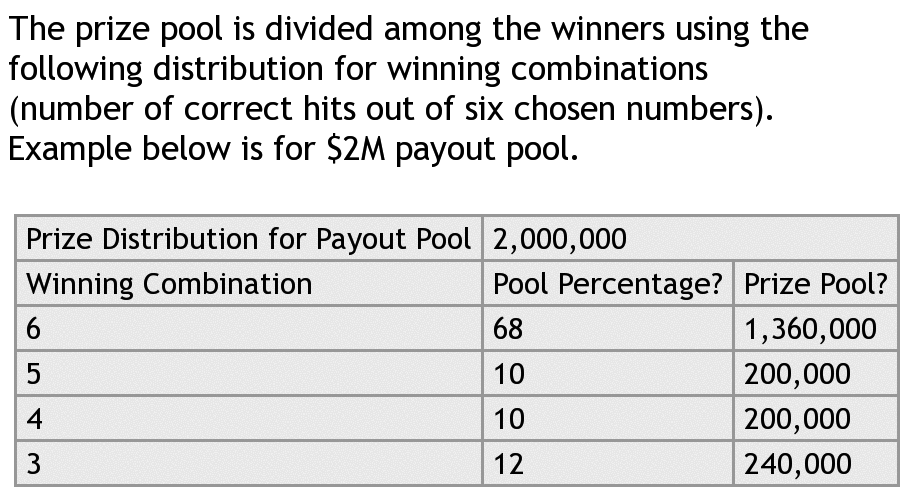

许多其他自动化框架不需要对关键示例进行任何转换。本书重点介绍成功团队用于实施实例化需求(Specification by Example)的实践方法，而非工具本身。要了解更多关于工具的信息，请访问 http://specificationbyexample.com，您可以在那里下载解释最流行工具的文章。
测试即规格说明；规格说明即测试
当规格说明用非常具体的示例来描述时，它可以用来测试系统。当这样的规格说明被自动化后，它就变成了可执行的验收测试。因为本书只讨论这类规格说明和测试，所以我会交替使用规格说明和测试这两个词；就本书而言，它们之间没有区别。
这并不意味着没有其他类型的测试——例如，探索性测试或可用性测试就不是规格说明。上下文驱动测试(context-driven testing)社区试图通过使用”检查(checks)“来指代可以自动化的确定性验证，用”测试(tests)“来指代需要人类意见和专家洞察的非确定性验证，以此区分这些测试类别。用上下文驱动的语言来说，本书只讨论设计和自动化检查。通过实例化需求，测试人员运用专家意见和洞察力，与团队其他成员协作设计良好的检查。测试人员不需要手动执行这些检查，这意味着他们有更多时间进行其他类型的测试。
参见 www.developsense.com/blog/2009/08/testing-vs-checking
为了有效地支持软件系统，我们必须知道它做什么以及为什么这样做。在许多情况下，唯一的方法是深入研究编程代码或找到能够为我们做这件事的人。代码通常是我们唯一可以真正信任的东西；大多数书面文档在项目交付之前就已经过时了。程序员是知识的神谕，也是信息的瓶颈。
可执行规格说明可以很容易地针对系统进行验证。如果这种验证是频繁的，那么我们对可执行规格说明的信心就可以与对代码的信心一样高。
通过频繁检查所有可执行规格说明，我与之交谈的团队能够快速发现系统与规格说明之间的任何差异。因为可执行规格说明易于理解，团队可以与业务用户讨论这些变化并决定如何解决问题。他们不断地同步系统和可执行规格说明。
最成功的团队不满足于一组频繁验证的可执行规格说明。他们确保规格说明组织良好、易于查找和访问，并且保持一致。随着项目的演进，团队对领域的理解也在变化。市场机会也会导致业务领域模型的变化。从实例化需求中获益最多的团队会更新他们的规格说明以反映这些变化，从而演进出一个活文档(living documentation)系统。
活文档是关于系统功能的可靠且权威的信息来源，任何人都可以访问。它与代码一样可靠，但更容易阅读和理解。支持人员可以用它来了解系统做什么以及为什么。开发人员可以将其作为开发目标。测试人员可以用它进行测试。业务分析师可以将其作为分析功能变更请求影响的起点。它还提供免费的回归测试。
在本书的其余部分，我将重点关注流程模式而非流程产物。为了让事情有个整体视角并确保您理解这些术语，我提供了一个在整个流程中产生的产物示例，从业务目标到活文档系统。示例的讨论指出了我将在哪些章节讨论流程的各个部分。
业务目标是项目或项目里程碑的根本原因。它是引导业务利益相关者（无论是内部还是外部）决定投资软件开发的指导愿景。商业组织应该能够清楚地看到这些目标如何能够赚钱、省钱或保护资金。业务目标的一个好的起点可以是”增加对现有客户的重复销售”。理想情况下，目标应该是可衡量的，这样它才能指导实施。“在未来12个月内将对现有客户的重复销售增加10%”和”在未来3个月内将对现有客户的重复销售增加500%“的正确软件范围很可能非常不同。可衡量的目标使得确定项目是否成功、跟踪进度和更好地确定优先级成为可能。
一个好的业务目标示例
在未来12个月内将对现有客户的重复销售增加50%。
通过应用我将在第5章描述的实践，我们从业务目标推导出实施范围。实施团队和业务发起人提出可以分解为可交付软件块的想法。
假设我们确定了一个客户忠诚度计划的主题，可以进行分解
将基础忠诚度系统功能和更高级的奖励方案分开。我们决定先专注于构建基础忠诚度系统：客户将注册VIP计划，VIP客户将有资格在某些商品上享受免费配送。我们将高级奖励方案的讨论推迟到以后。以下是本示例的范围：
基础忠诚度系统的用户故事
为了能够向现有客户进行产品直接营销，作为营销经理，我希望客户通过加入VIP计划来注册个人信息。
为了吸引现有客户注册VIP计划，作为营销经理，我希望系统向VIP客户提供某些商品的免费配送。
为了省钱，作为现有客户，我希望收到可用特惠信息。
关键示例
通过应用第6章和第7章描述的实践，一旦我们的团队开始实现特定功能，我们就会为适当的范围生成详细规格说明。例如，当我们开始处理范围中的第二项——免费配送时，必须定义免费配送。在协作过程中，我们决定系统仅对图书提供免费配送，以避免与运输电子产品和大件物品相关的物流问题。因为业务目标是促进重复销售，我们试图让客户购买多件商品；“免费配送”变成了”购买五本或更多图书免费配送”。我们确定了关键示例，如VIP客户购买五本书、VIP客户购买少于五本书，或非VIP客户购买图书。
这引发了关于如何处理同时购买图书和电子产品的客户的讨论。一些建议涉及扩大范围：例如，将订单拆分为两个，仅对图书部分提供免费配送。我们决定推迟这个选项，先实现最简单的方案。如果订单中有图书以外的任何东西，我们将不提供免费配送。我们在当前集合中添加另一个关键示例，以便稍后重新审视：
关键示例：免费配送
带示例的规格说明
通过应用第8章的实践，我们从关键示例中细化规格说明，创建一个不言自明的文档，其格式便于后续自动化验证（如下所示）：
免费配送
一旦VIP客户购买一定数量的图书，即可享受免费配送。普通客户或购买图书以外任何商品的VIP客户不享受免费配送。
假设获得免费配送的最低图书数量为五本，则我们期望以下结果：
示例
| 客户类型 | 购物车内容 | 配送方式 |
|---|---|---|
| VIP | 5本书 | 免费、标准 |
| VIP | 4本书 | 标准 |
| 普通 | 10本书 | 标准 |
| VIP | 5台洗衣机 | 标准 |
| VIP | 5本书、1台洗衣机 | 标准 |
这份规格说明——一个不言自明的文档——可以用作实现目标和自动化测试的驱动，以便我们客观地衡量实现何时完成。它存储在规格说明库中，成为活文档的一部分。例如FitNesse wiki系统或Cucumber特性文件的目录结构。
可执行规格说明
当我们的开发人员开始处理规格说明中描述的功能时，基于此规格说明的测试最初会失败，因为它尚未自动化且功能尚未实现。
开发人员将实现相关功能并将其连接到自动化框架。他们将使用一个自动化框架，该框架从规格说明中提取输入并验证预期输出，而无需他们实际更改规格说明文档。第9章中的想法和实践将帮助高效地自动化规格说明。一旦验证被自动化，规格说明就变成可执行的。
活文档
所有已实现功能的所有规格说明将被频繁验证，很可能通过自动化构建过程。这有助于防止功能回归问题，同时确保规格说明保持最新。团队将使用第10章的实践，使频繁验证顺利进行。
当整个用户故事实现后，有人会首先验证它已完成，然后重构规格说明，使其与已实现功能的规格说明相匹配。他们将使用第11章的实践，从规格说明中逐步演进文档系统。例如，他们可能将免费配送的规格说明移入与配送相关的功能层次结构中，可能将它们与由不同因素触发的其他免费配送示例合并。为了使文档更易于访问，他们可能在免费配送规格说明和其他配送类型规格说明之间建立链接。
然后循环重新开始。一旦我们需要重新审视免费配送规则——
现在我们已经快速概览了关键流程模式，接下来将在第3章深入探讨活文档。第4章将介绍如何开始采用实例化需求(Specification by Example)，随后在第二部分讨论各个流程模式的实现方法。
目前有两种流行的模型来看待实例化需求的流程和产出物：以验收测试为中心的模型和以系统行为规格为中心的模型。
以验收测试为中心的模型（通常称为验收测试驱动开发，ATDD或A-TDD）关注的是实例化需求流程中的自动化测试。在这个模型中，主要收益是更清晰的开发目标和防止功能回归。
以系统行为规格为中心的模型（通常称为行为驱动开发或BDD）关注的是指定系统行为场景的过程。它以通过协作和澄清需求来建立利益相关者与交付团队之间的共识为核心。通过测试自动化防止功能回归也被认为很重要。
我不认为这两种模型孰优孰劣；不同的模型适用于不同的目的。如果团队存在很多功能质量问题，以验收测试为中心的模型更适合初期采用。当一切运行顺畅时，以行为规格为中心的模型更适合解释短期和中期软件交付的活动。
在这两种模型中，通过测试自动化防止功能回归都是实例化需求的关键长期收益。虽然回归测试确实很重要，但我认为长期收益并非来源于此。首先，实例化需求并不是防止功能回归的唯一方法。例如，uSwitch团队在首次实现相关功能后会禁用许多测试（详见第12章）；他们仍然保持着高质量水平。其次，Capers Jones在《软件成本估算》中指出，回归测试的平均缺陷移除效率仅为23%。这无法证明成功团队为实施实例化需求所做的长期投资是合理的。
在研究本书的过程中，我有幸采访了使用实例化需求五年或更长时间的团队。他们的经验，尤其是近年来的经验，帮助我从不同的角度看问题——一个以文档为中心的角度。我采访的许多团队意识到，实例化需求的产出物作为文档具有长期价值。大多数团队是在多年尝试定义需求和测试的方法后才发现这一点的。作为本书作者，我的主要目标之一是将活文档作为实例化需求的一等产出物来呈现。这应该能帮助读者快速、有目的地实现活文档系统，而无需经历多年的试错。
在本章中，我将介绍文档模型及其收益。该模型关注业务流程文档，确保业务流程的有效长期维护和支持。这个模型对于确保实例化需求的长期收益特别有用。它还能防止许多常见的测试维护实现问题（本章后面会详细介绍）。
我已经记不清有多少次有人给我一本关于某个系统的厚书，同时警告说它”不完全正确”。就像廉价葡萄酒一样，冗长的纸质文档老化得很快，如果你在创建一年后尝试使用它，会让你头疼不已。另一方面，在没有任何文档的情况下维护系统同样令人头疼。
我们需要知道系统做什么，才能分析建议变更的影响。
从代码中挖掘功能的过程，他称之为”系统考古学”。他描述了一个大多数读者都会感到熟悉的情况：

我们有一个项目需要替换遗留系统。没有任何利益相关者知道某些计算/报告是如何生成的。用户只是使用结果，盲目信任旧系统。从旧应用程序中逆向工程需求是一件可怕的事情，当然最后发现旧系统做的一些事情是错误的。

即使未记录的代码是正确的，对于业务用户、测试人员、支持工程师，以及大多数项目中的普通开发人员来说，逆向工程也是一项不可能完成的任务。显然这种方法行不通。我们需要更好的方案。
好的文档不仅对软件开发有用。许多公司可以从良好的业务流程文档中获益匪浅，尤其是随着越来越多的企业变得技术驱动。业务流程文档与任何类型的系统文档一样难以编写，维护成本也同样高昂。
理想的解决方案是一个易于维护且成本低廉的文档系统，这样即使底层编程语言代码频繁更改，它也能与系统功能保持一致。任何类型的综合文档的问题实际上都是维护成本高昂。根据我的经验，更改过时的部分对成本的贡献并不大。通常，成本来自于寻找需要更改内容所花费的时间。
自动化测试存在相反的问题。找到所有需要更新的地方很容易；自动化测试可以频繁执行，任何失败的测试显然不再与底层代码同步。但除非测试被设计成易于修改，否则在系统更改后更新它们可能需要大量时间。以验收测试为中心的方法的一个陷阱是忽视了这种影响。
专注于测试的团队往往忽视编写易于维护的测试。随着时间推移，问题促使这些团队寻找方法来指定和自动化测试，使其更易于更新。一旦测试变得易于维护，团队就开始看到实例化需求(Specification by Example)的许多其他长期好处。RainStor（一家英国在线数据保留解决方案提供商）的Adam Knight团队意识到，如果测试能揭示底层目的，它们就可以很容易地维护。他说：

当你开发一套自动化测试时，如果你正确设置它们以揭示背后的目的，这些测试可以成为你的文档。我们生成了HTML报告，列出了运行的测试及其目的。调查任何回归失败变得更加容易。你可以更容易地解决冲突，因为你可以理解目的而无需回到其他文档。
对我来说，最重要的一点在最后一句话：一旦测试清晰，他们就不必使用任何其他类型的文档。
ePlan Services的Lisa Crispin说，她最大的顿悟时刻之一是当她理解测试作为文档的价值时：

我们收到这笔贷款付款，我们应用的利息金额不正确。我们认为有一个bug。我可以查看FitNesse测试并输入值。也许需求是错误的，但这就是代码正在做的事情。这节省了很多时间。

Andrew Jackman说Sierra团队使用测试结果作为支持的知识库：

业务分析师一直看到这样做的好处。当有人问Sierra中的某些数据来自哪里时，他们通常只是发送测试结果的链接——这是合理的文档。我们没有Word文档中的规格说明。

我提到爱荷华州学生贷款流动性公司的团队使用他们的测试来估计业务模型变更的影响并指导实施。SongKick的团队使用他们的测试来指导系统变更的实施，结果节省了估计50%的时间。我从许多其他团队那里听到了类似的故事。
当团队使用一条信息来指导开发、支持系统或估计业务变更的影响时，将该信息称为”测试”是有误导性的。测试不是用来支持和演进我们系统的；文档才是。
当软件系统持续针对一组可执行规格说明进行验证时，团队可以确信系统会按照规格说明所说的去做——或者换句话说，规格说明将继续描述系统所做的事情。这些规格说明与系统共存，它们始终保持一致。因为我们会立即发现规格说明与底层系统功能之间的任何差异，所以它们可以以低成本保持一致。爱荷华州学生贷款的Tim Andersen说他只信任这种文档：

如果我不能以自动化方式获得文档，我就不

可以信任它。它没有经过验证。
可执行规格说明创建了一套文档体系，作为系统功能的权威信息来源，既不会出现”不完全正确”的问题，维护成本也相对较低。如果带有示例的规格说明是单独的页面，那么活文档系统就是整本书。
活文档取代了团队交付正确产品所需的所有工件；它甚至可以支持外部用户手册的生成（尽管可能无法完全替代）。它以一种非常适合短迭代或流程化开发的方式实现这一点。因为我们可以在开发底层软件系统的同时定义规格说明，所以生成的文档将是增量式的，编写成本也很低。我们可以在构建支撑系统的同时构建业务流程文档，并使用该文档来演进软件和帮助运营业务。世界不必在某人编写500页材料时停滞六个月。来自Pyxis的André Brissette说这是敏捷开发中最不被理解的部分之一：

初学者认为敏捷中没有文档，这是不对的。关键在于选择有用的文档类型。对于担心没有文档的人来说，这种测试是一个让他们安心的好机会，可以看到敏捷过程中仍然有文档，而且不是两英尺高的纸堆。这是更轻量级的东西，但与真实代码绑定。当你问”你的系统有这个功能吗？“时，你不是有一个Word文档声称某事已完成；你有可执行的东西证明系统确实做了你想要的。这才是真正的文档。

大多数用于实例化需求（Specification by Example）的自动化工具已经支持通过网站管理规格说明或将测试结果导出为HTML或PDF格式，这是创建文档系统的良好开端。我预计未来几年工具方面会有很多创新，以帮助从带有示例的规格说明构建文档。一个有趣的项目是Relish，它从多个自动化工具导入带有示例的规格说明，并将其格式化以创建易于使用的文档系统。见图3.1。
实例化需求
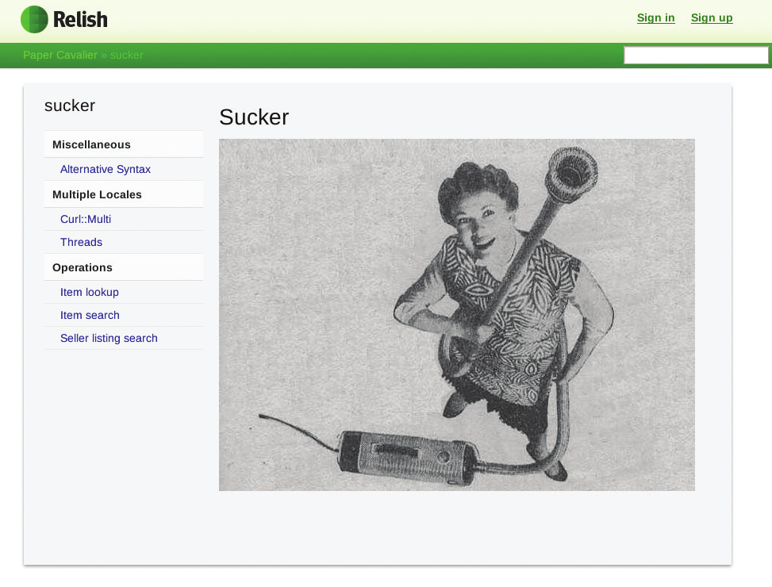
图3.1 Relish从可执行规格说明构建文档网站。
以文档为中心模型的优势
实例化需求的以文档为中心模型应该能帮助团队避免可执行规格说明长期维护中最常见的问题。它还应该帮助团队创建有用的文档，促进软件随时间演进，并帮助避免因缺乏共享知识而导致的维护问题。
我采访的许多团队在保留带有示例的规格说明的同时替换了系统的核心或重写了大部分内容，并使用这些规格说明来指导整个工作。这就是活文档投资真正获得回报的地方。活文档系统已经为技术更新和变更提供了需求，而不是花费数月时间进行系统考古和验证。
我认为团队应该将活文档视为与他们交付的系统同等重要的独立工件。文档是关键交付物这一理念是以文档为中心模型的核心。我预计这个模型能解决大多数随时间推移导致团队在实例化需求上失败的常见问题。
认为这个前提对未来很重要。我希望本书的读者能够因为从这个不同的视角看待流程而更容易、更快地获得出色的结果。
例如，理解活文档是一个重要的工件，立即决定了是否将验收测试放入版本控制系统。专注于业务流程文档可以避免过于技术化的规格说明，并使规格说明专注于系统从业务角度应该做什么，而不是测试脚本。清理测试代码不再需要单独的解释。增强测试的结构或清晰度不再是放在技术债务清单上的事情：它是交付标准任务列表的一部分。将验收测试工作委托给初级开发人员和测试人员的缺陷突然变得明显。有用的文档必须组织良好这一事实应该能防止团队在单个目录中堆积数千个难以理解的测试。
通过将活文档视为交付过程的独立工件，团队还可以避免过度投资。他们可以预先讨论想要花多少时间构建活文档系统，避免陷入以牺牲主要产品为代价过度完善测试的陷阱。
我怀疑保持规格说明过于抽象可能是文档模型的一个潜在陷阱。我预计这个模型对于为自动化复杂业务流程而构建的软件系统效果更好。以用户界面为中心、复杂性不在底层流程中的项目可能受益较少。
要点
看待实例化需求有几种不同的模型。不同的模型适用于不同的目的。
实例化需求允许你增量式地构建良好的文档系统。
活文档是交付过程中的重要产物，与代码同等重要。
专注于创建业务流程文档系统，有助于避免规格说明和测试中最常见的长期维护问题。
实例化需求(Specification by Example)的许多核心理念已经存在了几十年。80年代末，Gerald Weinberg和Donald Gause在《探索需求：设计之前的质量》一书中讨论了软件需求的沟通问题。作者建议，检验需求完整性和一致性的最佳方法是针对需求设计黑盒测试——这实际上暗示了实例化需求中规格说明与测试的二元性。1986年，德国军方使用了后来成为V模型的方法，描述了在实现之前构建验收测试以进行验证的方式。今天，我们使用相同的方法，但将验收测试称为带有示例的规格说明。Ward Cunningham在1989年的WyCASH+项目中应用了使用示例进行说明和自动化验证而不改变规格说明的实践。
遗憾的是，这些理念当时并未流行起来。漫长的开发周期使它们难以执行。人们花费数月时间为持续数年的项目编写抽象需求。用示例详细说明所有内容会使这一过程更加漫长。
敏捷开发改变了行业对软件交付阶段的思考方式——并显著缩短了这些阶段。这使得实例化需求变得可行。迭代和基于流程的项目可以从实例化需求中获益良多。由于完成交付阶段的时间如此有限，我们需要尽可能消除不必要的工作。需要解决的常见问题包括：返工、因沟通不畅导致的重复任务、为理解系统而从代码反向推导所浪费的时间，以及反复手动执行相同测试所花费的时间。
在短迭代或持续流程中进行有效交付，需要尽可能消除预期的障碍，以便能够处理意外问题。Adam Geras更精辟地表达了这一点：“质量就是为常规情况做好准备，这样你才有时间应对非常规情况。”活文档让常见问题迎刃而解。
实例化需求就是解决方案：一种处理常规情况的方法，使我们在软件交付周期的几天或几周内有更多时间处理非常规情况。活文档现在是成功的必要条件。
在本章中，我们将探讨如何开始改变流程和团队文化，以便实施实例化需求。我们将回顾三个团队案例研究，它们代表了将规格说明协作整合到迭代和流程开发中的不同方式。最后，我将介绍一些有用的想法，帮助将此流程融入需要需求签核和可追溯性的开发环境。
启动流程变革从来都不容易，尤其是当你试图从根本上改变团队成员的协作方式时。为了克服最初的阻力并为进一步变革建立依据，大多数团队从实施一项能在短期内提高产品质量或节省时间的实践开始。最常见的起点包括：
所有这些起点都将在短期内产生效益，并带来进一步的改进。
适用场景：全新项目
我采访的四个团队在转向敏捷软件开发流程时实施了实例化需求的核心理念。无需对抗流程变革的阻力或获得管理层支持。

实施Scrum、XP或任何其他敏捷流程本身就是一种休克疗法，所以如果可以的话，不妨同时尝试实施实例化需求。
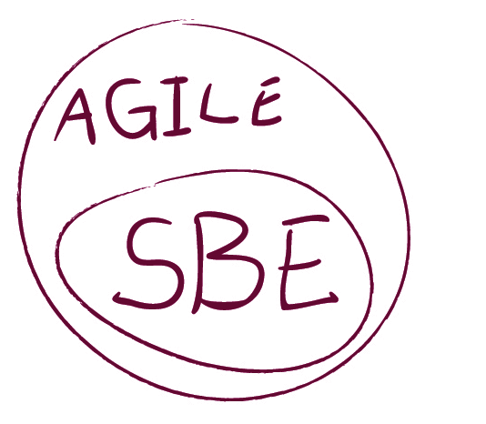
能够做到这一点的团队报告的问题更少，实施流程的速度也比从功能失调的Scrum环境起步的团队更快。这很可能是因为这四个团队在敏捷迁移过程中都获得了重要支持（三个团队有现场顾问，第四个团队有一名成员之前接触过实例化需求）。

uSwitch团队（见第12章）没有专注于特定的目标流程，而是决定专注于提高产品质量。他们要求所有成员提出改进建议，并以此作为灵感来源。他们最终在几乎没有阻力的情况下实施了实例化需求的大部分流程模式。
从管理角度来看，如果个人
团队成员可能会抵制流程变更。人们可能会抱怨Scrum、敏捷、实例化需求(Specification by Example)、看板(Kanban)或任何与流程相关的东西。而一个公开的质量改进计划则不太可能引起抱怨。David Anderson在看板方法中倡导将质量作为成功秘诀的第一步。

首先找出交付高质量软件的最大障碍，然后解决它。
如果开发人员和测试人员没有紧密合作，对某些东西是否达到可接受的质量存在分歧，那么将与发布产品相关的活动可视化可能会有所帮助。
在电子交易平台LMAX，Jodie Parker通过创建发布候选看板，使所有发布活动可见，展示了三个团队进度的高层视图。它展示了所有计划交付物的状态、发布的主要焦点、发布前必须完成的一系列任务，以及发布前必须解决的关键问题。所有团队都能看到这些信息，然后提出改进交付流程的建议。

适用场景：应用于现有项目
我采访的大多数团队都是从功能测试自动化开始采用实例化需求的，然后逐渐从开发后测试转向使用可执行规格说明来指导开发。对于已经有大量代码且需要测试人员手动执行验证的项目来说，这似乎是阻力最小的路径。
一些团队试图解决测试阶段的瓶颈问题，这是测试人员不得不持续追赶开发进度的结果。在短交付周期（几周甚至几天）内，大规模手动测试是不可能的。测试工作会在一个迭代结束时堆积起来，并溢出到下一个迭代，打乱流程。功能测试自动化消除了瓶颈，让测试人员与开发人员协作，激励他们参与流程变革。Markus Gärtner说：

对于一个来自”测试是瓶颈”并且持续与开发变更作斗争的测试人员来说，能够在bug修复之前就通过自动化测试提供有价值的反馈，这是非常非常非常有吸引力的。这是一个值得努力的激励愿景。


如果你还没有功能测试自动化，要知道这是一个唾手可得的成果——一种开始实例化需求之旅的简单方式，能够带来即时收益。
将功能测试自动化作为采用实例化需求的第一阶段效果很好，原因如下：
对于通过让程序员协作进行测试自动化来解放测试人员，一个常见的反对意见是程序员会有更多工作，这会减慢功能交付速度。事实上，行业的普遍趋势是团队中程序员比测试人员多，所以将工作从测试人员转移到开发人员不一定是坏事——它可能会消除你流程中的瓶颈。
实施功能测试自动化将使团队更紧密地合作，并为以后使用可执行规格说明准备好系统。为了从这种方法中获得最大收益，使用可执行规格说明工具自动化功能测试，并使用第9章和第11章的思想进行良好设计。使用传统的测试人员录制回放工具自动化测试不会给你带来所需的收益。
试图用自动化测试覆盖整个遗留系统是徒劳的。
如果你将功能测试自动化作为实例化需求(Specification by Example)的一个步骤，先开发足够的测试来展示测试自动化的价值并熟悉工具。之后，随着变更的到来，开始为这些变更实现可执行规格说明，逐步建立测试覆盖率。
为了从初始功能测试自动化中获得最大收益，重点自动化系统中有风险的部分——这些是问题可能造成巨大损失的领域。预防这些问题将立即展现价值。良好的功能测试覆盖率会让团队更有信心。自动化风险较低部分的收益可能不那么显著。
参见 http://gojko.net/2011/02/08/test-automation-strategy-for-legacy-systems

适用场景：测试人员负责测试自动化
在功能测试自动化完全由测试人员负责的项目中，关键挑战是打破测试人员和开发人员之间的无形壁垒。无需证明测试自动化的价值或解决测试环境相关问题，但团队的心态需要变得更加协作。
这个问题主要是文化层面的（稍后详述），但有时也涉及财务因素。使用昂贵的测试自动化框架（如按席位授权的QTP），开发人员和业务分析师被有意隔离在测试之外。一旦协作态度发生改变，团队就可以共同制定规格说明并自动化验证，而无需改变它们。
一些团队在遇到现有自动化工具无法适当测试的问题时，被推向了这个方向。他们利用这种情况作为开始使用可执行规格说明自动化工具的好借口。（参见附录中的”工具”部分，或访问 http://specificationbyexample.com 获取更多工具相关文章）

团队发现，使用可执行规格说明的自动化工具让开发人员更多地参与测试自动化，也让业务用户更好地理解测试。
开发人员随后更多地参与测试自动化，开始在自己的机器上运行测试；他们能够看到功能测试快速反馈的价值。业务用户可以通过可执行规格说明工具理解自动化测试，并参与制定相关的验收标准。之后，将流程改为预先设计可执行规格说明和测试就相对简单了。
在与一家大型保险公司合作时，Rob Park的团队以保险证明PDF为契机，引入了可执行规格说明自动化工具，并将功能测试提前到开发周期的早期阶段。Park说：

QTP无法测试它——它只能验证窗口弹出时没有错误消息，仅此而已。我希望开发人员首先能在自己的机器上运行测试，这是QTP的限制之一（由于按席位收费）。我选择了JBehave。我们一下子全部投入使用，一周内就真正起飞了。现在我们可以让这些验收测试本身来驱动底层控制器的设计。

在Weyerhaeuser，Pierre Veragen和团队使用一个通过用户界面录制测试的自定义测试自动化工具。维护成本很高。在一次导致许多测试失败的变更后，他估算在新工具中重写现有测试比重新录制所有失败的测试花费更少时间，从而证明了迁移到FitNesse的合理性。迁移到FitNesse使团队能够与工程师更紧密地合作制定可执行规格说明，并推动了向实例化需求的转变。

适用场景：开发人员对TDD有良好理解

采用实例化需求的另一个常见策略是从（单元）测试驱动开发(TDD)发展而来，特别是在绑定项目(greenfield project)上工作时。
测试驱动开发实践在社区中的文档和理解程度远高于实例化需求。如果团队已经有良好的TDD实践，可能无需证明自动化测试的价值或改变设计以使软件更易测试。可执行规格说明可以被视为测试驱动开发在业务规则上的扩展。（验收测试驱动开发(acceptance-test-driven development)是实例化需求的一个流行同义词。）
在ePlan Services，Lisa Crispin在首次实施时使用了这种方法：

我无法让人们对验收测试产生兴趣。根据Mike Cohn的建议，我只是选了一个故事，找到正在处理这个故事的开发人员，问道：“我们能一起为这个故事编写测试吗？”开发人员会看到这有多简单。在下一个迭代中，我选择了不同的故事和不同的人。我们立即发现了一个bug，他其实没有真正理解需求。所以开发人员立即看到了价值。

当团队对TDD有良好理解时，为可执行规格说明做论证很容易：将它们解释为业务功能的测试。
在大多数情况下，实施实例化需求（Specification by Example）涉及文化变革——让人们开始思考如何在需求上进行协作，并改变业务人员、开发人员和测试人员对规格说明的贡献方式。以下是一些有助于改变团队文化的想法。

适用场景：在抵制变革的环境中工作时
敏捷软件开发方法充斥着各种术语和流行词。Scrum、站会、用户故事、待办列表、Scrum Master、结对编程等术语很容易被误解并造成困惑。对某些人来说，这些术语甚至可能令人不知所措和恐惧。术语引起的焦虑是人们抵制流程变革或消极等待其失败的最大原因之一。根据我的经验，许多业务用户很难理解开发团队使用的技术术语，这使他们难以理解与流程改进相关的想法，也难以与团队互动。

完全可以在不使用技术术语的情况下实施实例化需求。如果你在一个抵制变革的环境中工作，在开始时避免使用术语。
不要提及用户故事、验收测试或可执行规格说明——在不提供定义的情况下实施实例化需求。这将减少反对者的弹药。将实例化需求解释为收集示例以澄清需求、推导测试并将其自动化的过程。其他一切都留待发现。
Adam Knight 在 RainStor 实施了实例化需求的大部分关键要素，而没有大张旗鼓。这个流程在没有前期规划的情况下逐渐成长，Knight 说公司里没有其他人知道实例化需求。“人们并没有真正意识到任何具体的东西，”他说。对他的团队来说，这只是他们自己创建的一个流程。
Pierre Veragen 使用类似的方法改进了 Weyerhaeuser 一个团队的软件流程。该团队维护着一个超过一百万行代码的遗留应用程序。他们抵制实施任何带有敏捷名称的东西。Veragen 没有使用任何大词，而是建议在用户界面下自动化测试以提高测试效率。当团队理解了这一点后，他又建议开发人员开始在自己的机器上运行测试，以获得更快的反馈并使测试和开发保持一致。通过一些指导和监督，Veragen 最终让团队成员不再把测试看作是开发之后的事情。这大约花了六个月时间，主要是因为自动化测试套件必须足够大，开发人员才能在引入问题时开始看到测试失败。Veragen 评论道：

从事工程工作的人意识到，他们机器上失败的测试实际上指向了他们代码中的问题。当这种情况发生在开发人员身上时，他就明白了，不再质疑为什么要运行测试。

要在不使用技术术语的情况下实施流程变革，需要让问题可见，并温和地引导人们朝正确的方向解决问题。当团队想出问题的解决方案时，即使有一些帮助，他们也会有主人翁意识，并承诺贯彻流程变革。

大多数团队在实施实例化需求时显著改变了他们的工作方式。对许多人来说，这意味着改变他们处理规格说明、开发和测试的方式——并学习如何在团队内部以及与外部利益相关者更好地协作。
当角色开始变化时，许多人感到困惑。测试人员必须更多地参与分析。开发人员必须更多地参与测试。分析师必须改变收集和沟通需求的方式。业务用户必须在准备规格说明方面发挥更积极的作用。如此大的变革需要管理层的支持；否则，注定会失败。Clare McLennan 这样说：

你需要获得项目的管理层支持，特别是如果你已经有一个现有系统，因为要达到真正拥有一个良好、稳定的测试系统需要相当长的时间。你必须经历所有的迭代，看看哪里不稳定或哪里给出奇怪的答案，修复它，然后再重复。如果你花一年左右的时间，你会得到一个无价的系统。如果你不这样做，或者如果你认为通过点击、点击、点击来获得 UI 测试是一个快速修复，那么你会得到一个难以维护且价值很小的东西。

在开始时，可执行规格说明的自动化对许多团队来说是一个挑战，因为它在概念上与测试人员和开发人员在自动化测试时习惯的方式不同（更多内容见第9章）。团队必须学习如何使用新工具，找到设计可执行规格说明的好方法，并构建他们的活文档（Living Documentation）。在最初几个月，开发团队的生产力会先下降然后才会提高。这也需要管理层的理解、批准和支持。

没有管理层的认可和支持，流程变革成功的机会很小。
如果管理层的反应是施压而非支持，人们就会退回到旧的工作方式，开始保护自己的地位而非协作。分享第一章中概述的成功案例和收益应该有助于获得支持，但如果这行不通，最好考虑用不那么激进的方式来改进流程，或者采取更小的步骤。

将实例化需求作为更好的验收测试方式来推销
包括在严格监管环境中工作的团队在内，有几个团队已经达到了不再需要将用户验收测试作为软件交付阶段的程度。（有些公司将这个阶段称为客户验收测试或业务验收测试。）这并不意味着他们没有进行用户验收测试。指定和检查验收标准与作为软件交付阶段的用户验收测试是不同的。这件事太重要了，不应该留到最后。可执行规格说明和频繁验证使开发团队能够持续检查用户验收情况。除非所有验收测试都通过，否则产品不会交付给用户。
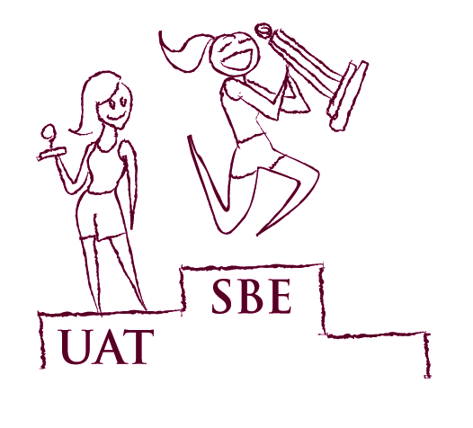
一旦可执行规格说明足够全面并经过频繁验证，开发团队与客户之间的信任就会提升到一个水平，使得交付后手动验证软件变得不再必要。（这并不意味着测试人员不应该在交付前进行探索性测试。）

我预计大多数团队能够基于避免后期验收测试来证明实施实例化需求的成本是合理的。改变流程使团队能够更快达到目标应该有可衡量的财务收益，这可以证明对流程变革的投资是合理的。
短迭代或基于流程的开发显著增加了潜在发布的频率。假设你想在未来12个月内进行12次发布（我采访的大多数团队会做到两倍），而用户验收测试平均需要3天。这意味着在接下来的一年里，你将花费36天进行用户验收测试，这还是假设最好的情况：你从未发现任何问题，软件总是被接受（既然如此，为什么要测试3天？）。更现实地说，最后阶段的验收测试、返工和重新测试在12个月内至少需要2个月。
如果你从协作指定验收标准并自动化验证开始，就不必浪费时间在手动测试和返工上。自动化是有成本的，但实例化需求可以显著缩短上市时间。
实例化需求还有许多其他好处，但这是最容易向业务利益相关者展示的，也是最容易量化的。如果你需要向业务利益相关者推销这个流程变革，试着将其作为每年提前两个月进入市场的方式来推销。
不要把测试自动化作为最终目标

我采访的团队最常见的早期错误之一是将功能测试自动化设定为流程变革的最终目标。业务用户通常认为功能测试自动化与测试有关，因此是他们不需要参与的事情。除非开发人员理解自动化测试需要人类可读以改善沟通，否则他们会以最小化开发工作量的方式来自动化测试。
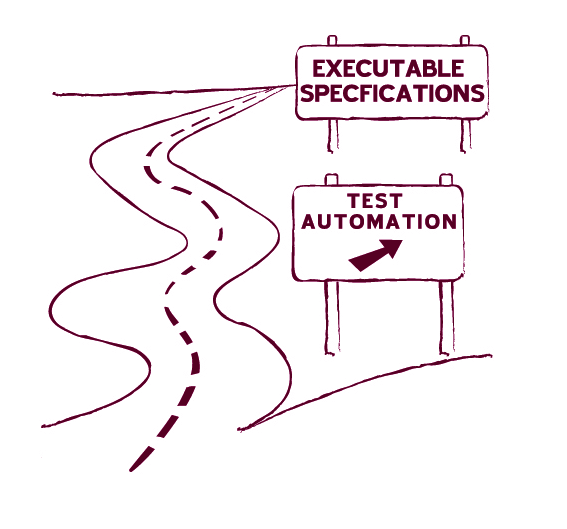

当团队只关注测试自动化时，他们并没有获得更好的协作。
这种方法通常导致测试过于技术化，成为脚本而非规格说明，这是一种常见的失败模式（参见第8章”脚本不是规格说明”）。从长远来看，以这种方式自动化的测试成为变革的障碍，而非促进者。
如果你将功能测试自动化作为迈向实例化需求的一步，请确保团队中的每个人都了解最终目标。当功能测试自动化站稳脚跟后，就该继续前进了。
不要专注于工具

我采访的三个人是从选择他们想使用的工具开始的。开发人员听说过FitNesse或Cucumber，决定在他们的项目上试用。我自己也犯过这个错误；这种方法成功的机会很小。

实例化需求不是以程序员为中心的，程序员孤立地使用工具不会走得太远。
这种方法通常以程序员使用非技术工具（本意用于可执行规格说明）来管理技术性的、面向开发人员的测试而告终。这是浪费时间。
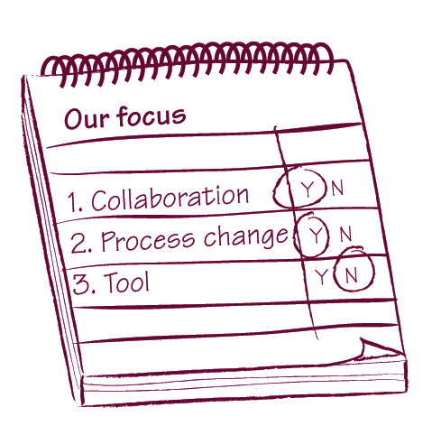
在开发人员专注于使用特定工具的三个案例中，只有Ian Cooper在Beazley的团队成功创建了一个好的流程。他们努力让测试人员和业务分析师参与进来，然后调整了编写和组织测试的方式来支持这一点。他们还对从工具中获得的好处持批判态度，并寻找更简单的方法来获得这些好处。
在另外两个案例中，团队专注于工具，而不是高层次的协作和流程变革。他们最终浪费了大量时间和精力构建了一套业务用户和测试人员无法使用的技术测试。他们在测试维护上付出了巨大的努力和时间代价，却没有获得实例化需求的任何好处。

适用场景：将功能自动化引入遗留系统时
使用新工具重写功能测试并实现自动化需要时间。在新的验证系统成熟之前，现有测试可能需要持续维护和更新。解决这个问题的好方法是将这项工作委派给一个人，并在规划近期工作时将这个人的时间计入成本。
James Shore 和 Shane Warden 在《敏捷开发的艺术》一书中描述了一种针对遗留项目的流程变更模式，称为”蝙蝠侠”(the Batman)。蝙蝠侠是一个专门负责处理紧急问题和解决重要缺陷的人，而团队其他成员继续开发新功能。Markus Gärtner 使用这种方法逐步将一组测试迁移到可执行规格说明的自动化工具。他详细描述了自己的经验：

当我们将测试从基于 shell 的脚本迁移到基于 FitNesse 的测试时，最初由两名成员负责新系统，而三名团队成员维护旧的遗留测试脚本。随着时间推移，越来越多的测试人员参与到新方法中。先是三个人，然后又加入一个，最终我们能够完全抛弃旧脚本。
其核心思想就是蝙蝠侠，他会介入解决问题。我记得有些同事甚至买了一辆 Hot Wheels 的玩具车——蝙蝠车——送给当时的蝙蝠侠。
最初我想轮换蝙蝠侠角色，但从未实施，因为当时我的同事们都是知识孤岛(knowledge silos)。我们通过新方法改变了这一点，现在我会轮换蝙蝠侠角色，让每个人在过渡期间都能接触旧系统和新系统。

获得每个人的认同至关重要。

通过将更新遗留项目所需的工作委派给一个人，团队能够更快地向迁移到新流程的目标前进。
这个想法类似于 Alistair Cockburn 的”牺牲一人”(Sacrifice One Person)策略，即指派一个人处理干扰性任务，让团队其他成员全速前进。

适用场景：开发人员不愿参与时
在开发人员来自更结构化流程背景的情况下——程序员写代码、测试人员做测试——团队在让程序员参与流程方面会遇到问题。要让实例化需求(Specification by Example)发挥作用，这种情况必须改变。
Pierre Veragen 有一个独特的解决方案来让程序员参与进来。他创建了一个简单的集中式报告系统，告诉他可执行规格说明何时何地被检查：

在夹具代码(fixture code)中，我放了一个小东西，告诉我人们何时在他们的机器上运行测试。那个团队相当害羞。我用这个来发现谁没有运行测试，然后去和他们交谈，看看出了什么问题，是否遇到了困难。这个想法是为了获得比”是的，运行正常”更客观的反馈。

通过跟踪谁在提交前没有运行测试，他能够将精力集中在有问题或需要帮助的团队成员身上。Veragen 说所有程序员从一开始就知道这个流程，所以他只跟踪是否有人执行了测试，而不是监控实际的测试结果。
监控测试何时被运行，这样程序员就会运行自动化检查。
这是一种适用于大型团队的有趣方法，因为教练无法一直与所有成员一起工作。我预计效果类似于在高速公路上公布测速摄像头的位置——程序员会知道有人在关注，他们会更加注意运行检查。
理解如何将协作融入交付周期是团队开始实施实例化需求时面临的最大挑战之一。
我在会议上遇到的许多人误解了，认为逐步构建文档系统意味着回到瀑布式的大规模前期分析思想。Dan North 在2009年11月的演讲”如何向业务方推销 BDD”中说，BDD 实际上是压缩到两周内的 V 模型(V-Model)。这不是完全准确的描述，但是一个好的开始。
瀑布式分析方法与实例化需求试图实现的目标之间有几个关键区别。理解这些基本原则很重要，因为这将帮助你将实践融入你的流程，无论它是什么。以下是实例化需求与更传统分析方法的关键区别因素：
没有一种通用的流程变更方案，每个团队都需要决定如何最好地扩展他们的软件交付方式。以下是一些很好的代表性案例，可以帮助你入门。我选择了三个优秀的案例研究，分别对应三种流行的流程。全球人才管理团队采用基于流程的看板(Kanban)框架工作。Sierra团队使用基于迭代的极限编程(Extreme Programming)流程交付软件。Sky网络服务团队则基于Scrum运行迭代。
Ultimate Software的全球人才管理团队是该公司人力资源管理系统16个团队之一。团队由一名产品负责人、一名用户体验专家、四名测试人员和十名开发人员组成。当我采访Scott Berger和Maykel Suarez时，他们的项目已经进行了八个月。团队使用看板流程。
由于产品分析师（分析师和产品负责人的结合体）很忙，团队在协作制定规格说明时会尽量高效利用他的时间。产品分析师用”故事点”在高层次上解释一个故事（在他们的案例中，故事点不是复杂度估算，而是解释故事的要点列表）。在编写故事点时，他们尽可能避免使用技术特定的语言。然后将故事作为待办事项添加到看板上。
在每日会议中（限时30分钟），主管工程师与产品分析师以及团队中对待办事项感兴趣的任何人会面。他们快速浏览待办事项中的故事，检查每个故事是否正确拆分、是否合理、是否能在四天或更短时间内实现——作为团队，他们为每个故事设定了这个截止期限。在会议期间，他们还会澄清任何未解决的问题并查看故事之间的依赖关系。
然后故事进入编写带示例的规格说明的队列，这些示例用作验收测试。将要实现故事的团队成员与专注于测试的人员配对，共同编写这些规格说明的大纲。（团队中没有正式的测试人员或开发人员角色，但为了更清晰，我在本节中使用这些角色来指代这对人员。）Berger解释道：

通过利用这种配对，我们能够减少这个故事所需的必要测试，因为开发人员对代码有更深入的了解。这已被证明相当成功，因为这些配对通常能找出在初始故事审查中未被发现的任何不一致和设计缺陷。

在他们定义大纲后，测试人员通常以Given-When-Then格式完成场景。配对人员和产品分析师在深入的故事知识和信息传递（SKIT）会议中会面并审查场景。这解决了程序员和测试人员在没有分析师的情况下可能无法提出好的规格说明的风险。当产品分析师批准场景后，团队将其视为需求。除了小的文本修改外，在故事交付之前不允许对这些需求进行进一步更改。
然后开发人员将自动化这些场景，通常在实现生产代码之前。这使测试人员能够花更多时间进行探索性测试。测试人员也可能参与自动化工作，但这不再是他的重点。Berger说这种协作使他们能够高效工作：

深入了解代码的开发人员在自动化方面要快得多，实际上编写的代码允许他们查询对象（而不是通过用户界面自动化），并且在开发过程中获得更大的收益，因为更多的错误条件和组合被明确描述。由于我们现在在GUI下进行测试，我们的测试执行更快、更稳定。测试人员可以自由地花更多时间执行代码并提供反馈。
所有可执行规格说明必须通过才能完成开发阶段。所有测试在运行测试阶段再次执行，这次与其他团队的工作集成。在等待批准阶段，团队为产品分析师做一个快速的产品演示并获得签字确认。
据Berger说，这个流程产生了极高质量的结果：


通过与我们的产品分析师密切合作，并使用我们的测试作为需求的基础，我们能够达到极高的质量水平。业务部门收集了指标，我认为有一个指标特别能够充分展示我们在质量承诺方面的努力，那就是缺陷检测效率（DDE）。经过对全球人才管理团队的测量，确定我们的DDE为99%（2010年第一至第三季度）！

法国巴黎银行的Sierra团队构建后台参考数据管理和分发系统。团队由八名开发人员、两名业务分析师和一名项目经理组成。由于没有专职测试人员，团队中的每个人都负责测试。他们的利益相关者是异地的业务用户。变更请求通常需要大量的分析和与利益相关者的沟通。
该项目已经进行了大约五年，因此相当成熟。
和业务分析师有许多现有的可执行规格说明可作为示例参考。Andrew Jackman 在我采访他时是这个团队的成员，他说这是金融服务行业中少数几乎完全按照极限编程(Extreme Programming)规范实践的案例之一。
他们的开发流程从项目经理开始，项目经理会提前为迭代选择用户故事。业务分析师与远程利益相关者合作，在迭代开始前详细准备验收标准。他们使用现有规格说明的示例来驱动新规格说明的结构。如果新规格说明与任何现有规格说明有显著差异，一对开发人员会审查测试以提供早期反馈，并确保测试可以自动化。
他们的迭代每隔一周的周三开始。迭代开始时，整个团队会聚在一起召开计划会议，按优先级顺序审查即将进行的用户故事。目标是确保所有开发人员理解故事的内容、估算故事工作量，并检查技术依赖关系以确定是否需要调整交付顺序。他们还会将故事分解为开发任务。当故事在计划会议上被审查时，该故事的验收标准通常已经详细规定好了。
团队偶尔会发现某个故事没有被充分理解。当他们运行为期一周的迭代时，这类故事可能会打乱流程，但两周的迭代让他们能够处理这种情况而不会对整体流程造成太大干扰。
然后由成对的开发人员实现这些故事。在一对开发人员实现故事并且所有相关测试通过后，业务分析师会花一些时间进行探索性测试。如果分析师发现意外行为，或意识到团队没有理解故事对现有系统的所有影响，他会用相关示例扩展规格说明，并将故事发回给开发人员。
英国天空广播公司的 Sky Network Services（SNS）团队维护着一个宽带配置系统。该团队由六个小组组成，每个小组有五到六名开发人员和一到两名测试人员。整个团队共享六名业务分析师。由于各小组维护的功能组件在成熟度方面各不相同，每个小组的流程也略有不同。
整个团队运行基于 Scrum 的流程，采用两周的冲刺周期。在冲刺正式开始前一周，他们会组织一次预规划协调会议，每个小组派两到三人参加。会议的目标是确定故事的优先级。在会议召开时，业务分析师已经为每个故事收集并规定了一些高层次的验收标准。会议结束后，测试人员会开始编写带有示例的规格说明，通常与业务分析师协作。在冲刺正式开始前，每个小组至少会有一到两个故事的详细规格说明和示例准备好进行自动化。
迭代每隔一周的周三开始，首先召开跨团队计划会议，让每个人了解整体进度和即将到来的迭代的业务目标。然后各小组进入各自的计划会议。有些小组花15分钟简要过一遍故事；其他小组则花几个小时详细讨论。在该项目工作的开发人员 Rakesh Patel 说，这主要取决于底层组件的成熟度：

目前我们正在处理一个已经存在很长时间的组件，并向其添加更多消息。整个团队其实不太需要知道这涉及什么；我们可以等到拿起故事卡时再了解。其他一些小组正在构建新的 GUI，全新的功能，那时整个团队坐下来深入讨论、弄清楚需要做什么可能更合适。那时我们可能还会讨论非功能性需求、架构等。

计划会议结束后，开发人员开始处理已有规格说明和示例的故事。业务分析师和测试人员则为迭代中计划的所有故事完成验收标准。一旦他们完成某个故事的规格说明，就会与被指定为”故事负责人”（见侧边栏）的开发人员会面，一起过一遍测试。如果每个人都认为有足够的信息来完成故事，故事卡就会贴上蓝色贴纸，表示已准备好进行开发。
开发完成后，业务分析师会再次审查规格说明并在卡片上贴红色贴纸。然后测试人员会对故事运行额外的测试，测试通过后贴上绿色贴纸。有些故事会涉及他们的支持团队、数据库管理员或系统管理员，他们会在测试人员之后审查故事。数据库管理员在故事卡上贴金星，系统管理员审查结果后贴银星。贴纸确保每个需要参与故事的人都知道这件事。
SNS 的团队没有召开大型规格说明会议，而是组织了一个流程化的过程。
他们仍然采用两阶段规格说明流程，业务分析师和测试人员预先准备好所有示例，然后与开发人员一起审查。这让开发人员有更多时间专注于开发工作。故事负责人(story champion)在与其他开发人员结对编程时，有效地承担了信息传递的职责，而不是让所有开发人员都参与审查来确保他们理解需求。
前面三个例子展示了团队如何在短迭代甚至基于流程的过程中融入协作，说明不存在通用且普遍适用的流程组织方法。所有团队都成功地将协作整合到短发布周期中，但根据团队结构、业务用户的可用性以及进入交付管道的变更复杂度，采用了不同的方法。关于设计适合团队流程的好想法，请参阅第6章”选择协作模型”。更多示例请参阅第3部分的案例研究。
故事负责人
SNS团队使用故事负责人来确保在开发人员结对切换时高效传递知识。项目业务分析师Kumaran Sivapathasuntharam解释了这个概念：

故事被分配给特定的开发人员，该开发人员会一直跟进直到完成。这确保了每个故事都有一个联系人——如果你对某个故事有问题，可以找故事负责人。一个人可以从头到尾跟进故事，这样整个结对组就不会被卡住，他们可以不断更换结对组合，同时保持连续性。

Ultimate Software的全球人才管理团队有一个类似的角色，叫做故事发起人(story sponsor)。据Maykel Suarez介绍，发起人负责与其他团队沟通、在看板上跟踪进度、在站会上检查状态以及消除障碍。
处理签收和可追溯性
对于一些团队来说，敏捷项目中文档很少或没有文档的一个大问题是缺乏需求文档。这使得需求或交付物的签收变得困难。总体而言，软件开发行业对签收的关注程度比10年前低得多。在某些情况下，由于监管约束或商业安排，签收仍然是必需的。
实例化需求(Specification by Example)围绕需求提供了工件——活文档(living documentation)——可用于可追溯性。这使得敏捷流程能够应用于受监管的行业。Bas Vodde和Craig Larman在《精益和敏捷开发大型应用实践》中描述了美国核工业的第一个敏捷开发项目。该项目团队使用可执行规格说明来确保需求的完全可追溯性，这在核能和其他安全关键领域至关重要。另一方面，由于构建这些工件采用高度动态、迭代和协作的方法，预先签收实际上是不可能的。以下是一些处理签收和可追溯性约束的想法。

将可执行规格说明保存在版本控制系统中

我采访的几位人士表示，将可执行规格说明与产品源代码保存在同一个版本控制系统中，是成功实施流程的最重要实践之一。
许多自动化工具使用纯文本文件处理可执行规格说明，因此与版本控制系统配合良好。这使你可以轻松地将规格说明与源代码一起打标签和创建分支。它为你提供了当前正确版本的测试，可用于验证产品的任何版本。
版本控制系统非常适合可追溯性，因为它们可以让你即时找到谁更改了任何文件、何时更改以及为什么更改。如果你将可执行规格说明存储在版本控制系统中，就可以免费获得需求和规格说明的可追溯性。通过实例化需求，可执行规格说明将直接链接到编程语言代码（通过自动化层），这意味着证明代码可追溯性也相对简单。
存储在版本控制系统中的可执行规格说明也比存储在单独的需求或测试工具中的规格说明更不容易丢失。

对导出的活文档进行签收
适用场景：逐迭代签收
实例化需求应该有助于在项目发起人和交付团队之间建立信任，消除签收的需要。如果你确实需要出于商业或政治原因对需求进行签收，可以使用活文档系统来实现。

如果你需要在开始实现功能之前对规格说明进行签收，并且可以按迭代组织这一流程，那么你可以从计划用于下一迭代的可执行规格说明创建Word或PDF文档，并对其进行签收。
一些自动化工具（如Cucumber）支持直接导出为PDF，这可能有助于你的流程。

适用场景：签核较长的里程碑

如果你需要对超出单次迭代交付能力的大批量软件进行签核，尽量获取范围签核而非详细规格说明的签核。例如，获取用户故事或用例的签核。
Rob Park 在与一家大型美国保险公司合作时采用了这种方法。他的团队保留了瀑布式审批流程用于签核，但大幅削减了需要签核的材料。Park 解释道：

在我们控制范围之外存在一个更大的流程。业务分析师使用 Word 文档模板工作，但他们把模板从八页精简到两页。有一个故事卡审批流程，项目出资方在除业务分析师之外的任何人看到这些故事卡之前就进行签核。所以公司在高层面上有这个瀑布流程，但一旦进入团队就变得不同了。

在这个案例中使用 Word 文档纯粹是因为合同义务规定在故事进入开发之前必须有书面文件。团队在范围获批后使用可执行规格说明作为唯一的需求来源。

适用场景：监管签核需要详细信息
在高度监管的环境中，获取范围签核可能行不通。Knowledgent Group 的 Mike Vogel 在一个制药行业项目中工作，使用基于 Scrum 和 XP 的流程并扩展以满足监管要求。他的团队使用用例，因为仅靠用户故事无法满足受监管系统的标准。
团队使用精简用例（他们称之为”结构化故事”），这样初始捕获和持续演进就不是大问题。这些用例会避免大多数关于数据和决策的细节（这些被提取到单独的数据部分）。Vogel 解释了这种方法：

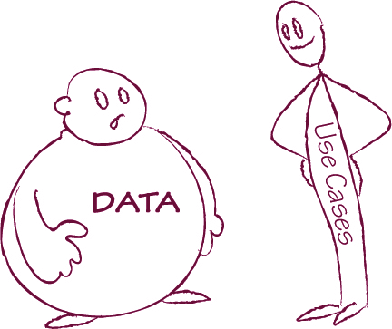
在用例中，你会为一段数据起一个昵称，这是客户作为领域语言一部分能理解的东西。描述该数据的数据部分给出了结构和描述数据的规则——而不是示例。示例在验收测试/示例需求中，我们在那里遍历用例，构建覆盖并展示所有命名数据块变体的示例。你变化的是他们分解出来的数据块示例。


获取”更轻量”用例的签核——不包含示例。
Vogel 的团队构建了一份包含这些轻量级用例但不包含任何示例的需求文档。据 Vogel 说，结果是一份不到 100 页的文档，用于一个大型项目，“包含所有监管要求的样板内容”。在整个项目过程中，他们与客户协作来指定用例和示例：

我们与客户坐在团队房间里，尝试一次处理一个用例及其示例。讨论围绕详细示例展开。之后我们会补充一些细节，客户进行审查。

这种方法允许团队获得与传统规格说明非常相似的签核，同时不会过度规定它们。细节来自迭代和协作的过程；客户使用的待办事项列表基于高层用例，细节稍后补充。

适用场景：签核需要所有细节
Matthew Steer 在几个基于结构化流程（Rational Unified Process，统一过程）的项目中工作。该流程要求对所有细节进行完整签核，规格说明以用例形式捕获。除了用例之外，Steer 和他的团队引入了用例实现（Use Case Realizations），有效地用示例说明用例。这使他们能够在结构化流程中使用实例化需求（Specification by Example）。Steer 说：

需求以用例和非功能需求的补充规格说明形式捕获——相当传统的、按规范的捕获方式。对于用例，我们生成用例实现、用例将要满足的示例和场景。我们创建包含大量参数的表格，从中关联数据，然后用流程展示用例将如何实现。用例实现是使用真实场景对业务意义的工作版本。


添加用例实现等细节是将实例化需求引入正式流程的好方法——可以在方法论监管者的雷达之下进行。当商业合同要求对需求进行签核但仍允许后续细节变化时，这也有助于实施实例化需求的理念。
Steer 的团队以及前面提到的其他团队使用示例——即使伪装成用例实现——而不是仅使用用例或针对更通用需求编写的测试。这使他们的交付流程更加有效。
从技术上讲，活文档系统可以即时提供可追溯性。
需求变更，因为团队使用版本控制系统来存储可执行规格说明。迭代开发通常与前期签批相矛盾，但你可以使用本节的技巧来处理这个问题，同时推动流程变革，让交付团队获得业务用户的信任。活文档系统提供的可见性，加上规格说明的协作，应该有助于消除签批的需要。
你可以跟踪进度来检查是否正确实施了实例化需求(Specification by Example)。与任何度量指标一样，确保指标本身不要成为目标；否则，你会为了让数字好看而局部优化流程，但损害整体效果。
在 XPDay 2009 上，Mark Striebeck 谈到了 Google 在推进测试实践方面的做法。给我印象深刻的一个想法是他们如何衡量一个（单元）测试是否良好。当测试失败时，他们跟踪源代码的变更，直到测试再次通过。如果底层代码被修改了，他们认为这是一个好测试。如果测试被修改而代码没有变化，他们认为这是一个坏测试。通过收集这些统计数据，他们希望分析单元测试模式并识别什么使测试变好或变坏。
我相信同样的标准可以应用于可执行规格说明。如果验证失败而你修改了代码，这意味着你发现并修复了一个问题。如果验证失败而你不得不修改规格说明，这意味着它没有被正确编写。
业务规则应该比实现它们的技术稳定得多。警惕频繁变更的可执行规格说明。寻找更好的编写方式。
你还可以衡量团队在重构规格说明和相关自动化代码上花费的时间，以便将其控制在合理范围内。如果你在迭代中花费大量时间做这件事，寻找更好的测试自动化方法（参见第9章获取一些好的技巧）。
另一个检查你是否做错了什么的好指标是检查回旋镖(boomerang)的存在。回旋镖是指在发布后不到一个月就返回流程的故事或产品待办项。团队认为它已完成，但它需要返工。但是，当业务后来随着产品演进而扩展现有需求以纳入创新时，这不算回旋镖。
一旦你实施了实例化需求，回旋镖的数量应该显著减少，直到它们变得罕见。规格说明的协作以及测试和开发的更好对齐应该消除由误解造成的浪费性返工。回顾几个月内的回旋镖趋势将显示你改进了多少。如果比率没有下降，这意味着你实施流程的方式有问题。
跟踪回旋镖不需要很多时间，通常每个迭代几分钟，但当需要质疑或证明实例化需求正在发挥作用时，它可以提供很大帮助。在大型公司中，它还可以提供令人信服的证据，证明值得在其他团队中推广。对于更复杂的统计，你还可以跟踪在回旋镖上花费的时间，因为这个数字直接转化为浪费的开发/测试时间和金钱。如果人们抱怨自动化可执行规格说明花费的时间是不必要的开销，将其与几个月前他们在回旋镖上花费的时间进行比较。这应该足以为实例化需求建立商业案例。
一旦回旋镖的数量下降并且它们相对罕见地发生，你可以停止跟踪它们。如果发生回旋镖，尝试理解它来自哪里。我的一个客户有很多回旋镖来自他们的财务部门。这指向了与公司那个特定部门的沟通问题；因此，他们寻找更好的方式来让该部门参与进来。
跟踪回旋镖也是为引入实例化需求建立商业案例的好方法。它可以帮助团队精确定位由模糊需求和规格说明中的功能缺口造成的浪费。
许多团队开始实施实例化需求是为了更好地将他们的活动与迭代对齐。在你熟悉可执行规格说明并且自动化代码变得稳定之后，你应该能够在同一个迭代内实现一个故事并完全完成测试（包括手动探索性测试）。如果你的测试人员落后于开发，你做错了什么。类似的警示信号是分析不对齐。一些团队在相关迭代之前开始分析，但他们仍然有规律的间隔和流程。过多的前期分析、分析不会立即实施的事情、或者在需要细节时分析迟到都是流程有问题的信号。
在《精益软件开发》(Lean Software Development)中，Mary 和 Tom Poppendieck 写道，软件开发中最大的浪费来源是以防万一的代码——没有被需要就编写的软件。我不确定它是否是最大的浪费来源，但我确实看到很多金钱、时间和精力浪费在没有人需要或要求的事情上。实例化需求显著减少了这个问题，因为它帮助我们建立对需要交付什么的共同理解。Jodie Parker 说，规格说明的对话和协作帮助她的团队实现了这一点：
Mary Poppendieck 和 Tom Poppendieck，《精益软件开发：敏捷工具包》(Lean Software Development: An Agile Toolkit)

当开发人员拿到一张故事卡时，他们非常想要交付其中的所有内容，使其在技术上尽可能完美，尽管指导原则是”做最少的事情来获得给定的价值”。它必须高效，但我们总是可以稍后引入故事来完善它。这通过对话和持续验证我们是否能够绘制出我们试图实现的业务模型来解决。通过领域建模，你可以很容易地将其分解为任务。这些任务就是你唯一能做的事情。因为任务很小，你可能会在其中一个上偏离方向，但如果这样做，团队其他成员很容易发现，团队会提出来。当某人在一个任务上花了好几天时，我们会在站会上进行讨论。

要注意那些实现超出约定和用例子指定范围的人。避免”以防万一”代码的另一个好方法是不仅讨论你想要交付什么，还要讨论什么不在范围内。
散弹式修改(Shotgun surgery)是一种经典的编程反模式(antipattern)（也称为代码异味(code smell)），当对一个类的小改动需要在几个相关类中进行级联修改时就会发生。这个明显的迹象可以应用于活文档；如果生产代码中的单个更改需要你更改许多可执行规格说明，那你就做错了。组织你的活文档，使代码中的一个小改动只导致测试中的一个小改动（参见第11章”倾听你的活文档”获取一些好的建议）。这是长期降低自动化维护成本的关键步骤之一。
F-16战隼战斗机可以说是有史以来最成功的喷气式战斗机。这更加引人注目，因为它是在逆境中取得成功的。在70年代F-16设计时，喷气式战斗机必须追求速度；航程、武器装备和机动性对于获得生产合同来说并不重要。然而，正是F-16的航程和机动性使其成为战斗角色的理想选择，并确保了它的成功。
在《软件架构师应该知道的97件事》(97 Things Every Architect Should Know)中，Einar Landre引用了F-16首席设计师Harry Hillaker的话，说该飞机的原始要求是达到2-2.5马赫的速度。当Hillaker问美国空军为什么这很重要时，他们回答说喷气机必须”能够从战斗中逃脱”。虽然Hillaker的设计从未超过2马赫，但它允许飞行员以卓越的敏捷性从战斗中逃脱。它具有许多创新，包括无框气泡座舱盖以获得更好的视野、倾斜座椅以减少重力对飞行员的影响、在飞行员面前投射战斗信息而不阻挡视线的显示器，以及侧置控制杆以提高高速时的机动性。凭借这些特性，F-16优于其他设计方案——而且生产成本更低。它赢得了设计竞赛。30多年后，它仍在生产中。
该型号已向25个国家销售超过4,400架飞机，是一个巨大的商业成功。它也是最受欢迎的战斗机之一，经常出现在动作电影中，如《X战警2》(X2)和《变形金刚2：卷土重来》(Transformers: Revenge of the Fallen)。
F-16之所以成功，是因为其设计提供了比客户要求更好、更便宜的解决方案。原始需求，包括对2.5马赫速度的要求，形成了问题的一个可能解决方案——但这个问题没有被有效传达。设计师们没有实现需求，而是寻求对问题的更深入理解。一旦他们理解了，就能够确定真正的目标，并从这些目标而不是从建议的解决方案或对功能的任意期望中推导出他们的设计。这就是成功产品设计的本质，在软件设计中与在飞机开发中同样重要。
我合作过的大多数业务用户和客户倾向于将需求作为解决方案来呈现；他们很少讨论想要实现的目标或需要解决的问题的具体性质。我见过太多团队遭受这种危险误解的困扰：客户总是对的，他们要求的东西是不可改变的；这导致团队盲目接受建议的解决方案，然后努力实现它们。成功的团队不会这样做。
像F-16的设计师一样，成功的团队会推动获取更多关于
真正的问题，然后协作设计解决方案。即使对于范围(scope)也是如此。范围意味着一个解决方案。成功的团队不会把定义范围的责任推给别人，而是主动与业务用户协作确定合适的范围，以实现他们的目标。这就是从目标推导范围的本质。
协作从目标推导范围无疑是本书中最具争议的话题。在过去五年中，价值链(value chains)在软件开发中的流行提高了人们对协作确定范围并从业务目标推导范围这一理念的认识。另一方面，我合作过的大多数团队仍然认为项目范围不在他们的控制之下，期望客户或业务用户来完全定义它。在为本书进行研究的过程中，我发现了团队协作从目标推导项目范围的模式——但这种做法远不如其他关键模式常见。
我最初考虑过不写这一章。我决定把它包含进来有三个原因：
在接下来的两节中，我将介绍影响范围的技术，分别针对直接控制范围的团队和没有直接控制权的团队。对项目范围有高层控制权的团队可以主动出击，立即开始构建正确的范围。不幸的是，我合作过的几个大型组织中的许多团队没有这种控制权——但这并不意味着他们不能影响范围。
用例(use cases)、用户故事(user stories)或待办事项(backlog items)提供了项目范围的宽泛定义。许多团队认为这些工件是业务用户、产品负责人或客户的责任。要求业务用户提供范围，实际上是依赖没有软件设计经验的人给我们一个高层解决方案。设计解决方案是最具挑战性和最关键的步骤之一。现在是引用Fred Brooks名言的时候了：在《人月神话》(The Mythical Man-Month)中他写道：“构建软件系统最困难的部分是准确决定要构建什么。”爱因斯坦本人也说过：“问题的表述往往比解决方案更重要。”
目前，用户故事是定义敏捷和精益项目范围最流行的方式。用户故事在提高软件项目中业务价值意识方面做得非常出色。用户故事让我们不再要求业务用户在开发集成平台和构建事务CRUD（创建、更新、删除）界面之间做选择，而是终于可以开始与他们讨论他们能理解并合理排序优先级的事情。重要的是要注意，每个故事都应该有一个明确关联的业务价值。业务用户通常随意选择那个价值陈述（而且通常只是冰山一角）。但当我们知道一个故事应该交付什么时，我们可以进一步调查并建议替代方案。TechTalk的Christian Hassa解释道：

人们告诉你他们认为自己需要什么，通过问他们”为什么”，你可以识别出他们拥有的新的隐含目标。许多组织无法明确说明他们的业务目标。然而，一旦你推导出了目标，你应该再次反向推导，从识别出的目标推导范围，可能会放弃最初假设的范围。

这就是我在《弥合沟通鸿沟》(Bridging the Communication Gap)中称为”挑战需求”(challenging requirements)的实践的本质。我仍然认为挑战需求是一个重要的实践，但这样做是被动的。虽然这肯定比被动要好——被动最能描述我见过的大多数团队处理范围的方式——但有一些新兴的技术和实践可以让团队在实现业务目标方面更加主动。我们可以与业务用户一起从一开始就提出正确的故事，而不是对错误的故事做出反应。关键思想是不要从用户故事开始，而是从业务目标开始，然后协作地从那里推导范围。

用户故事通常有三个部分：“作为一个__，我想要__，以便__。”存在其他格式，但都有这三个组成部分。

理解为什么需要某样东西以及谁需要它，对于评估建议的解决方案至关重要。
同样的问题可以在更高层次上应用于项目范围。事实上，在更高层次上回答这些问题可以将项目推向完全不同的方向。
比利时iLean的Peter Janssens参与了一个项目，在那个项目中他处于另一端——他是以解决方案形式提出需求的人。他负责一个存储本地交通标志信息的应用程序。它最初是比利时的一个简单Access数据库，但很快发展到覆盖世界上大多数国家。公司在每个国家都有一个数据收集员，他们都使用本地Access数据库，这些数据库偶尔会合并。
为了提高工作效率并防止合并问题，他们决定
数据库上线并开发一个网页应用来维护它。他们花了四个月时间联系供应商、比较报价，最终选定了一个方案。这个应用的预估成本是10万欧元。但当他们开始思考谁需要使用这个应用以及为什么需要时，项目走向了完全不同的方向。Janssens说：

在最终决定的前一天，一位工程部门的同事再次询问这个问题，想更好地理解它。我说：“我们需要一个中央数据库的网页解决方案。”他说：“不不，我们不要急于下结论。请不要马上说你想要什么解决方案，先向我解释一下。”我又解释了一遍。然后他说：“所以，你的问题实际上是需要一个单一数据源来工作，因为你们在合并数据上浪费了时间。”“是的，”我说，“没错。”
他又问了第二个问题：“谁在使用它？”我说：“目前我们有10个国家组，所以是10个人。”我们查看了数据库，发现这类交通信息变化并不频繁，每个国家可能一年只更新一两次。他说：“Peter，你的问题明天就能解决。”第二天他就把数据库添加到了他们的Citrix（远程桌面）服务器上。

这个应用总共只需要支持十个用户，而且他们只是用来更新交通标志信息，这些信息变化并不频繁。Access应用可以处理这个数据量；他们唯一真正的问题是数据合并。一旦技术工程师理解了根本问题，他就能提供比最初建议便宜得多的解决方案。Janssens解释道：

我学到的是，这是一个真正的对质情境——理解导致需求的核心问题总是很重要的。所以理解”为什么”很重要。最终，当我们讨论”谁”这个问题时，他想到了Citrix解决方案。平均每个月只有一个用户在使用它。

即使在范围层面，解决方案已经被暗示了。不需要深入讨论可能的用户故事或用例以及任务规格，仅仅是有人建议做一个网页应用就已经暗示了一个解决方案。他们没有花五个月选择供应商、更长时间交付项目，而是用一个零成本的快速修复解决了问题。这是一个极端案例，但它说明了理解为什么有人需要特定应用以及他们将如何使用它，往往能带来更好的解决方案。

除了帮助我们设计更好的解决方案，理解价值从何而来在优先级排序方面也非常有帮助。美国一家大型保险公司的Rob Park团队只在较高的功能层面考虑优先级，这使他们不必在较低的故事层面重复同样的过程，节省了大量时间。Park说：

我们保持在高层面，描述业务价值和功能的真正核心。我们把功能分解成故事，尽量使其尽可能小。一个功能的例子是：为14个州提供PDF格式的保险证明。我一直在推动的重点，特别是从业务方面，是”这值多少钱，给它标上美元价值。“在那个特定案例中，我们让一位高级人员说：”50%的电话是为了这个，其中50%是为了保险证明卡，所以25%的电话是在处理这个。“他们知道有多少电话，以及通过生成这个PDF而不是像以前那样复制粘贴能节省多少钱，所以他们实际上能够给出一些数字，这真的很棒。

将讨论提升到目标层面，使团队能够比仅在故事层面更有效地处理范围和优先级。

一个很好的例子是工作量估算。Rob Park的团队发现，讨论目标使他们能够停止在估算单个故事的工作量上浪费时间：

我们真的不想费心估算故事。如果你开始用斐波那契数列估算故事，你很快就会发现任何8或更高的都太大了，无法在一个迭代中完成，所以我们就用1、2、3和5。然后你进入下一个层级，发现5真的很大。现在所有的都是1、2和3了，它们实际上是一样的。我们可以把它分解成那个大小的故事，忘掉估算那部分，然后只测量到实际交付的周期时间。

在《Software by Numbers》中，Mark Denne和Jane Cleland-Huang描述了一种由业务价值驱动的正式优先级排序方法，通过将范围划分为最小可市场化功能（Minimum Marketable Features）。根据我的经验，预测某个东西能赚多少钱和预测实现该功能需要多长时间一样困难且容易出错。但如果你的领域允许你给功能标上数字，这将有助于让业务用户参与进来。让他们对功能甚至业务目标进行优先级排序，比让他们对低层级的故事或任务进行优先级排序效果更好。

当目标难以确定时，一个有用的起点是系统的预期输出：调查为什么需要这些输出，以及软件如何提供它们。一旦确定了预期输出，你就可以专注于满足相关需求。分析为什么需要这些输出，有助于制定项目目标。

与其试图与业务用户协作来确定如何将数据输入系统，不如从输出示例开始。这有助于让业务用户参与讨论，并让他们清楚地了解系统能为他们提供什么。
Wes Williams 在 Sabre 的一个项目中工作时，用户界面的延迟导致了大量返工：

验收测试是针对领域层（应用层）编写的，当时客户还看不到图形界面。界面延迟了大约四个月。当客户看到界面时，他们对应用程序的想法完全不同。当我们开始为界面编写测试时，测试内容比为领域层编写的要多得多。所以领域代码必须修改，但客户以为那部分已经完成了。他们有测试，运行后通过了，就以为完成了。

系统的预期输出帮助我们发现目标，并确定需要构建什么来支持它们。Adam Geras 甚至在敏捷项目之前就使用这个想法来专注于构建正确的东西：

我们在很多项目中使用了一种叫做”报告优先”的方法，但这是在史诗故事层面，我们的经验主要在 ERP 实施领域。不是敏捷项目。这种方法非常有效，因为找到报告中缺失的一个数据元素所需的返工可能非常大。通过首先考虑输出，我们避免了这种返工。

从系统输出开始推导范围是 BDD（行为驱动开发）社区的一个想法。这个想法最近受到很多关注，因为它消除了一个常见问题。在我早期的许多项目中，我们最初专注于流程和将数据输入系统，把流程的最终结果（如报告）留到后面。这种方法的问题是，业务用户只有在可见输出阶段看到结果时才能参与进来，这往往导致返工。从输出开始工作确保业务用户始终能够提供反馈。

适用场景：业务用户信任开发团队
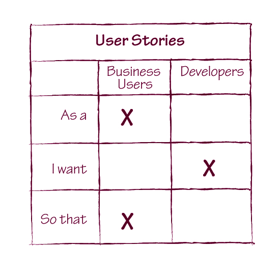
uSwitch 的团队与业务用户协作定义用户故事。业务用户指定故事中涉及利益相关者和预期收益的部分，开发团队指定暗示解决方案的部分。在标准用户故事格式中，这意味着业务用户为”作为一个__“和”为了“语句提供方向，而开发团队提供”我想要”部分。

获得目标正确范围的一个好方法是将解决方案的责任明确交给开发团队。
如果你有幸能够高层次地控制项目范围，请确保让开发人员和测试人员参与讨论，并将建议的解决方案集中在实现明确定义的业务目标上。这消除了后期大量不必要的工作，并为更好地协作制定规格说明奠定了基础。
用户故事（User Story）描述用户如何从系统中获得特定价值。团队通常使用用户故事来计划和优先排序短期工作范围。它们通常由三部分定义：
例如，“作为营销经理，为了能够直接向客户营销产品，我希望系统在客户注册会员计划时请求并记录个人信息。”
不同作者建议这三部分的不同顺序和措辞，但都同意需要捕获这三个部分。对于本书而言，用户故事各部分的顺序或命名变化无关紧要。
对于我合作的大多数团队，特别是大公司的团队，范围是从更高层传递给他们的。许多团队认为，当他们只维护大型系统的一部分时，不可能讨论业务目标。即使在这些情况下，了解业务用户试图实现什么也可以帮助你将项目集中在真正重要的事情上。
以下是在没有项目高层控制权时有效协作确定项目范围的一些技巧。

Stuart Ervine 在一家大型银行的后台应用程序上工作，该应用程序允许业务用户以树状层次结构管理他们的交易对手关系——这是大型系统中一小部分的完美例子。即便如此，他们仍然能够对任务提出质疑并获得真正的需求。
Ervine 的团队被要求改进层次结构的性能，
听起来像是一个有明确收益的真实业务需求。但团队无法在他们那边复现任何性能问题，因此任何重大改进都需要基础设施层面的变更。
他们请用户说明改进性能会有什么用处。结果发现，业务用户一直在手动执行一项复杂的计算，需要遍历层级结构并汇总账户余额。他们必须在用户界面中为大量交易对手打开和关闭树形分支，然后汇总账户余额——这是一个缓慢且容易出错的计算过程。
团队没有去改进层级结构的性能，而是为业务用户自动化了这项计算。这使得计算几乎瞬间完成，并显著降低了出错的可能性。这个解决方案比最初请求的方案效果更好，成本也更低。

与其要求技术功能规格说明，我们应该请求一个高层次的示例，说明某个功能会如何有用。这将引导我们找到真正的问题。
在《弥合沟通鸿沟》一书中，我建议不断追问”为什么”，直到答案开始涉及金钱。我现在认为，询问某个功能会如何有用是达到同样结果的更好方式。询问为什么需要某样东西可能听起来像是质疑，可能会让对方处于防御状态，尤其是在大型组织中。询问某样东西会如何有用则能在不挑战任何人权威的情况下开启讨论。

除了询问某样东西会如何有用之外，Christian Hassa 建议讨论替代方案以找到真正的业务目标。Hassa 解释道：

有时候人们仍然难以解释某个功能的价值（即使你请他们举例说明）。作为进一步的步骤，我会请他们举个例子，说明如果系统不提供这个功能，他们需要如何变通处理。

这通常能帮助他们表达出某个功能的价值。

从业务角度发现更多选项的好策略是请求替代方案。
请求替代方案可以让提出功能需求的人重新考虑所提议的方案是否是最佳选择。这也应该能启动与交付团队关于替代方案的讨论。

许多团队受到精简交付项以适应迭代周期的需求影响，现在将待办事项分解到很低的层级。虽然这有助于简化流程，但可能导致团队失去对全局的把握。

作为一个流程，实例化需求（Specification by Example）既适用于高层级故事，也适用于低层级故事。一旦我们有了某样东西会如何有用的高层级示例，我们就可以将其记录为高层级规格说明。这样的高层级示例让我们能够客观地衡量是否已经交付了某个功能。
Ismo Aro 在诺基亚西门子网络的一个项目中工作，他的团队因为没有高层级规格说明而遭遇了挫折。他说：

用户故事必须适合放入冲刺（Sprint）中。当一批故事完成后，它们是被孤立测试的。更大的用户故事实际上并没有被测试。当用户故事粒度很细时，你无法真正从待办列表中判断事情是否真的完成了。

将较大的用户故事拆分成可以单独交付的较小故事是好的实践。但仍然需要关注高层级故事，以便知道我们何时真正完成。我们需要的不是扁平的线性待办列表，而是层级化的待办列表，以便同时关注两个层级。
低层级的规格说明和测试会告诉我们各部分的逻辑是否正确交付；高层级的验收测试会告诉我们所有这些部分是否能协同工作。
适用场景：大型多地点项目
Wes Williams 将”理解业务用户期望什么输出”一节中描述的问题归咎于工作划分方式。团队交付的是系统的组件（在这个案例中是领域层和用户界面），这使得很难划分工作，以便他们能与客户讨论每个团队的预期输出。因此他们将工作重组为能够交付完整功能的团队。Williams 评论道：

我们花了大约六个月时间转变为功能团队（Feature Team）。这产生了很大的影响，特别是消除了一些重复工作、大量的反复沟通和大量的返工。幸运的是，我们已经有很多测试帮助我们完成这个转变。我们确实需要回去添加功能，但主要是添加——而不是修改。


当团队端到端地交付功能时，他们可以更深入地与业务用户一起设计范围并确定需要构建什么，原因很简单——他们可以与用户讨论完整的功能。更多关于功能团队的信息，请参阅《功能团队入门》。
即使没有对项目范围的高层级控制，团队仍然可以通过以下方式影响构建什么：
即使从一开始就从业务目标推导出正确的范围，效果也不会那么好。但这种方法可以避免后续流程中不必要的返工，并确保业务用户获得他们所需要的东西。
目前这个领域有很多创新。忠于本书的特性，我只写了我采访过的团队所使用的技术。
新兴技术值得被记录，但那是另一本书的内容了。要了解更多关于从目标推导范围并映射它们之间关系的前沿技术，可以查找以下主题的资源：
遗憾的是，关于这些新兴实践的出版材料很少。据我所知，关于特性注入唯一出版的作品是一本漫画，其次是Chris Matts在Picasa上的笔记扫描件。关于效果映射唯一出版的材料是一本瑞典语书籍，有一个质量较差的英文翻译版本叫《Effect Managing IT》，以及我在网上发布的一份白皮书。Jeff Patton在他的博客上发布了很多关于被动和反应式范围界定问题的优秀材料，他一直在写一本关于敏捷产品设计的书，我希望这本书能更多地涵盖这个领域。
实例化需求（Specification by Example）在概念上与传统的规格说明或测试流程不同，特别是在它依赖协作的方式上。如果我们孤立地编写文档，即使实施了本书中描述的所有其他模式，实例化需求也不会起作用。
在《Bridging the Communication Gap》一书中，我将大型全团队规格说明工作坊作为协作规格说明的主要工具。在撰写本书的过程中，我学到的最大教训可能是情况要复杂得多。不同环境中的不同团队有各自协作规格说明的方式，甚至同一组织中的团队在协作方式上也各不相同。
在本章中，我将介绍最常见的规格说明协作模式，包括大型工作坊、小型工作坊以及工作坊的最流行替代方案。这将帮助你理解各种协作式规格说明方法的优缺点。我还将介绍准备协作的良好实践，以及帮助你为团队选择正确协作模式的想法。但首先让我们处理一个问题：协作是否真的必要。
为了正确展示规格说明协作的示例，我们还需要回顾一个相关实践：使用示例进行说明。你将在第7章”使用示例进行说明：一个示例”部分阅读到规格说明工作坊如何进行的示例。
协作式规格说明是建立对需要完成工作的共同理解的好方法，并确保系统的不同方面都被规格说明所覆盖。协作还帮助团队产出易于理解的规格说明和易于维护的测试。
据Jodie Parker说，当他们在LMAX开始实施实例化需求时，未能协作制定规格说明是最大的问题之一。她说：

人们只是没有意识到一次对话可能有多么有价值。开发人员最初认为测试人员对对话不感兴趣，因为它们是技术性的，但测试人员可以学习如何查询代码库，或者他们可以就对其他测试的潜在影响或语言变更提供建议。测试人员也认为他们太忙了。只有通过实践，你才能看到这（协作制定规格说明）有多么有价值。

即使对软件系统所涉及的业务领域有完美的理解（我从未见过哪个团队能做到这一点），协作制定规格说明仍然是值得的。分析师和测试人员可能知道他们想要指定和测试什么，但不一定知道如何组织这些信息以便于自动化和驱动开发——而程序员知道。Marta Gonzalez Ferrero 曾参与一个项目，测试人员最初自己编写所有验收测试，而没有将它们视为规格说明。她说，开发人员经常无法使用这些测试：

一开始，测试人员在 FitNesse 表格上工作，然后将它们交给开发人员。这导致了问题，因为开发人员反馈说这些页面不容易理解，也不容易自动化。之后，他们开始一起工作。

不协作定义规格说明和编写验收测试，必然会导致测试维护成本高昂。这是 Lisa Crispin 关于测试设计最重要的教训之一。她解释道：

每当我们需要做出改变时，我们有太多的测试（可执行规格说明）需要修改。当你有很多测试时，重构是很困难的。我应该与开发人员结对来帮助我设计测试。我可以很容易地提出问题；我能看到问题所在。测试人员知道”不要重复自己”（Don’t Repeat Yourself）等基本概念，但对工具没有很好的理解。

因为 Crispin 没有与开发人员协作编写和自动化可执行规格说明，她编写了太多的规格说明，而且它们的自动化方式不利于长期维护。
我采访的许多团队在早期都犯过类似的错误。当开发人员独自编写规格说明时，这些文档最终与软件设计联系过于紧密，难以理解。如果测试人员独自编写，文档的组织方式则难以维护。相比之下，成功的团队很快就转向了更具协作性的工作模式。
虽然我采访的所有团队都在规格说明上进行协作，但他们的协作方式差异很大，从大型全员研讨会到小型研讨会，甚至到非正式对话。以下是一些最常见的协作模式以及团队从中获得的好处。

适用时机：开始实施实例化需求（Specification by Example）
规格说明研讨会是密集的、实践性的领域和范围探索练习，确保实施团队、业务利益相关者和领域专家对系统应该做什么建立一致的、共享的理解。我在《弥合沟通鸿沟》（Bridging the Communication Gap）中详细解释了这些研讨会。研讨会确保开发人员和测试人员有足够的信息来完成当前迭代的工作。

涉及整个团队的大型规格说明研讨会是建立共享理解和产生一组说明功能的示例的最有效方式之一。
在这些研讨会期间，程序员和测试人员可以了解业务领域。业务用户将开始理解系统的技术约束。因为整个团队都参与其中，研讨会有效地利用了业务利益相关者的时间，并消除了后续知识转移的需要。
最初，uSwitch 团队使用规格说明研讨会来促进实例化需求的采用。Jon Neale 描述了效果：

它特别帮助业务人员思考一些用户可能采取的更隐蔽的路径。例如，如果有人试图申请低于某个金额的贷款，那是一个完全不同的场景（与一般申请贷款不同）。有一整套其他的业务规则，他们直到最后一刻才会提到。
规格说明研讨会帮助他们提前思考这些场景，帮助我们更快地前进。它还帮助开发团队与其他人互动。进行这种前期讨论有助于推动整个过程——立即就有了更多的沟通。

产品待办列表梳理（Product Backlog Refinement，PBR）研讨会是实施良好的 Scrum 流程的关键要素之一。同时，我发现大多数声称运行 Scrum 的团队实际上并没有 PBR 研讨会。PBR 研讨会通常涉及整个团队，包括拆分待办列表顶部的大型条目、详细分析待办列表条目和重新估算。在《精益和敏捷规模化实践》（Practices for Scaling Lean and Agile）中，Bas Vodde 和 Craig Larman 建议 PBR 研讨会应占每次迭代的 5% 到 10%。
在产品待办列表梳理研讨会期间使用示例来说明需求，是在成熟的 Scrum 团队中开始实施实例化需求的简单方法。这不需要额外的会议，也不需要特殊的安排。只需要以不同的方式处理 PBR 研讨会的中间部分。
Pyxis Technologies 的 Talia 团队就是这样运行他们的研讨会的。André Brissette 解释了这个过程：
这通常发生在产品负责人和 Scrum
当主管发现待办列表顶部的故事不够详细时，例如某个故事被估算为20个故事点，他们会在冲刺期间安排一次维护研讨会。我们认为每周或每两周举行这样的会议是个好习惯，以确保待办列表顶部的内容易于处理。我们审视故事，产品负责人和开发人员就其可行性进行交流。我们在白板上画一些示例，识别技术风险和可用性风险，开发人员需要对范围进行评估。此时我们进行计划扑克(Planning Poker)。如果每个人都同意功能的范围和所需的工作量，那就完成了。如果我们发现很难达成共识，就尝试拆分故事，直到我们有了相当清晰且工作量已评估并达成一致的条目。
大型研讨会可能是后勤噩梦。如果你不提前在日历上设定日期，人们可能会安排其他会议或无法随时参与讨论。定期安排的会议可以解决这个问题。这种做法对于想要参与但经常很忙的高级利益相关者特别有帮助。（提示：打电话给他们的秘书来安排研讨会。）
如果你很难从业务用户或利益相关者那里获得足够的时间，试着配合他们的日程安排，或者在产品演示时他们在场的情况下处理需求说明。如果业务用户和交付团队不在同一地点工作，这种方法也很有效。
大型研讨会是传递知识和让整个团队建立对需求共同理解的有效方式，因此我强烈推荐刚开始使用实例化需求(Specification by Example)的团队采用。另一方面，它们在人员时间方面成本很高。一旦流程成熟，团队积累了领域知识，你可以转向更简单的替代方案。

适用场景：领域需要频繁澄清
如果领域复杂，测试人员和程序员经常需要澄清，那么让单个人负责编写测试（即使有审查）并不是一个好方法。

举行包含一名开发人员、一名测试人员和一名业务分析师的小型研讨会。

这种会议的流行名称是三剑客(Three Amigos)。Janet Gregory和Lisa Crispin在《敏捷测试》中建议了类似的协作模式，称为”三人力量”。（我曾经把这种研讨会称为”验收测试三人组”，直到人们开始抱怨这个名称有歧义。）
三剑客会议通常足以从不同角度获得良好的反馈。与大型需求说明研讨会相比，它不能确保整个团队的共同理解，但比大型会议更容易组织，不需要提前安排。小型会议也给参与者更多的工作灵活性。围绕一个小显示器组织大型研讨会毫无意义，但三个人可以舒适地坐着，轻松查看大屏幕。

要高效地进行三剑客会议，三位参与者必须对领域有相似的理解。如果没有，考虑让人们为会议做准备，而不是临时召开。Ian Cooper解释道：
只组织三方会议的问题在于，如果团队中领域知识不平衡，对话将由领域专业知识更丰富的人主导。这类似于结对编程(Pair Programming)时遇到的问题。了解领域的人往往会主导对话。领域专业知识较少的人有时会提出一些可能有很多有趣见解的问题。事先给他们准备的选项可以让他们做到这一点。

避免丢失研讨会信息的一个常见技巧是产出一些与最终需求说明格式接近的东西。对于像三剑客这样的小组，你可以使用显示器和键盘来生成文件。Rob Park曾在一家美国大型保险公司的团队中使用三剑客进行协作。Park说：

三剑客会议的输出是实际的功能文件——Given-When-Then格式。我们不担心固定装置(Fixtures)或其下的任何其他层，但验收标准是输出。有时它不够精确——例如，我们知道我们想要一个真实的保单号，所以我们会放入一个注释或占位符，这样我们知道之后会有一点清理工作。但主要要求是，在我们开始编写功能代码之前，我们将拥有所有这些测试，并且我们都同意它是完整的，至少在内容方面是如此。

Stuart Taylor在TraderMedia的团队对每个故事进行非正式对话，并从中产出测试。一名开发人员和一名测试人员一起完成这项工作。Taylor解释了这个过程：

当一个故事即将开始时，开发人员会叫一个QA说：“我即将开始这个故事”，然后他们会进行对话。
开发人员会讨论如何进行测试。开发人员会谈论他将如何使用测试驱动开发（TDD）来开发。例如，“对于电话字段，我会使用整数。”QA会立即说，“那如果我输入++、括号或前导零呢？”
QA会根据业务验收标准开始编写验收测试，并运用测试思维来考虑边界情况。这些测试会被BA和开发人员看到。在演示时我们会看到它们被执行。

协作产出半正式的测试可以确保信息在后续自动化过程中不会失真。这也有助于分享如何编写好的实例化规格说明的知识；只有当整个团队能够围坐在一台显示器和键盘前时，这才是可行的。不要试图在全员研讨会上起草半正式文档，因为这不会鼓励每个人都参与进来。

在成熟产品上工作且已经对目标领域有良好了解的团队，不一定需要召开会议或进行单独的对话来讨论故事的验收标准。开发人员和测试人员不一定需要在规格说明的前期提供那么多输入，他们可以在实现过程中解决小的功能缺口。这样的团队可以通过非正式对话或评审来协作。

适用场景：成熟产品
即使在开发人员有足够知识可以不需要大型研讨会的情况下，团队发现协作编写实例化规格说明仍然很有用。

分析师可以提供正确的行为，但开发人员知道编写测试的最佳方式，使其易于后续自动化并融入现有的活文档系统。
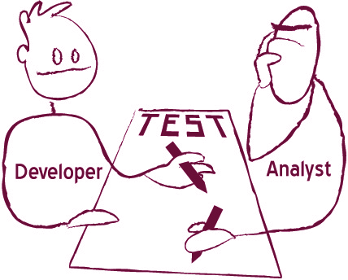
Andrew Jackman在法国巴黎银行的团队从事一个相对成熟的产品。他们尝试了不同的测试编写模式，并得出结论：需要让业务分析师和开发人员都参与编写测试。他说：

当开发人员编写测试时，很容易误解故事的内容。如果你没有与业务分析师互动，那只是开发人员对事物的看法。我们转向由BA编写测试，这产生了很大的不同。挑战在于当他们编写一个故事时，该故事可能会影响许多现有测试，但他们无法预见到这一点。BA喜欢编写展示单个故事工作流程的测试。这通常会导致大量重复，因为很多工作流程是相同的。所以我们把工作流程的部分移到它们自己的测试中。

一些团队——特别是那些业务分析师成为瓶颈或根本不存在的团队——让测试人员与程序员结对编写测试。这让测试人员对可执行规格说明将覆盖什么有一个很好的概览，并帮助他们理解需要单独检查什么。Songkick的团队就是一个很好的例子。Phil Cowans解释了他们的流程：

QA不是为开发人员编写验收测试；他们一起工作。QA人员拥有规格说明，通过测试计划来表达，并继续拥有它直到我们发布该功能。开发人员在QA的参与下编写功能文件（规格说明），以建议应该覆盖什么。QA发现功能文件中的漏洞，指出未覆盖的内容，并为手动测试编写测试脚本。

结对编写规格说明是一种低成本且高效的方式，可以从多个不同角度审视测试并避免隧道视野（tunnel vision）。它还使测试人员能够学习编写易于自动化的规格说明的最佳方式，并让开发人员了解需要特别关注的高风险功能区域。

适用场景：分析师编写测试

让高级开发人员评审规格说明。
与Bekk咨询公司合作开发挪威奶牛群记录系统的业务用户在编写验收测试时不与开发人员一起工作，但他们经常让开发人员参与评审测试。据Bekk咨询公司的高级开发人员Mikael Vik说，这种方法给他们带来了类似的结果：

我们总是与他们（业务用户）紧密合作来定义Cucumber测试。当他们拿着用户故事开始编写Cucumber测试时，他们总是来问我们看起来是否OK。我们给他们提示如何编写步骤，也提出建议，说明如何扩展我们的Cucumber领域语言以有效表达测试的意图。

如果开发人员不参与编写规格说明，他们可以花更多时间实现功能。请注意，这会增加规格说明不包含实现所需全部信息或可能更难自动化的风险。

适用场景：业务利益相关者随时可用
与业务用户和利益相关者坐得很近（随时可以回答问题）的团队，通过非正式的临时对话取得了很好的效果。任何与某个故事有利害关系的人，都会在开始实现之前简短地碰面，而不是举行大型的预定研讨会。

非正式对话只需要涉及将要处理任务的人员，就足以明确需要完成的工作定义。
“任何有利害关系的人”包括以下几类：
这种非正式对话的目标是确保所有参与者对故事的内容有相同的理解。在LMAX，这种对话发生在冲刺(Sprint)的最初几天。Jodie Parker解释道：

对话是按需进行的。你有了想法和草图，并且真正理解了它将如何实现。如果你还没有写下验收测试，开发人员和测试人员可以结对完成这项工作。如果没有进行这些对话，东西最终会被构建出来，但不会被正确地构建。

有些团队，比如uSwitch.com的团队，不会在这个阶段试图找出所有的验收标准。他们建立一个共同的基线，给测试人员和开发人员足够的信息来开始工作。因为他们坐得离业务用户很近，
有些团队根据故事引入的变更类型来决定是进行非正式讨论还是更大规模的规格说明研讨会。诺基亚西门子网络的Ismo Aro采用了这种方法：

我们有一个约定，要有ATDD测试用例（规格说明），但不一定要开会。如果团队觉得这是自然而然的事情，那么不开会也可以。如果看起来比较困难，需要其他利益相关者的输入，那么他们就组织一次ATDD会议（规格说明研讨会）。这可能是因为团队对领域非常了解。当你在旧功能上添加一个小的增量时，更容易找出测试用例。

在规格说明上进行协作是确保共同理解并找出复杂细节的好方法，这些细节是人们在孤立思考时永远不会想到的。如果讨论的主题需要大量的前期分析，或者团队成员的知识水平不同，从头开始讨论可能会效率低下且令人沮丧。为了解决这个问题，许多团队引入了一个准备阶段（如图6.1所示），以确保功能描述得足够详细，从而促进富有成效的讨论。
图6.1 团队通常根据开始处理示例的时间分为四组。那些需要更多时间进行分析和追踪未解决问题的团队会更早开始。
这种准备工作涉及与上游利益相关者合作，准备一些初始示例和初步分析。根据团队成员的可用性，可以由一个人（通常是分析师角色）或一小群资深人员来完成。

适用场景：项目有多个利益相关者
对于有多个利益相关者的团队（例如，当软件被公司内部多个部门使用，或有多个外部客户驱动需求时），通常应该在迭代(Iteration)开始前几天举行一次介绍性会议。有些团队称这次会议为预规划。

介绍性会议的目的是收集关于即将到来的故事的一些初步反馈，并过滤掉那些太模糊而无法被接受进入规划的故事。
介绍性会议不是要交付完美精炼的规格说明，而是给团队足够的时间来收集关于可以快速识别的关键问题的外部反馈。这不是迭代规划或Scrum规划会议。在冲刺开始前几天举行介绍性会议，让团队有机会在真正的规格说明细化或规划会议之前与远程利益相关者讨论未解决的问题。
许多团队在这次介绍性会议中定义高层次的验收标准，使用要点而不是详细的示例。这有助于通过指定他们将测试的基本情况来聚焦后续工作。
对于较小的团队，如ePlan Services的团队，开发人员、利益相关者、项目经理和产品负责人都参加这次介绍性会议。对于较大的团队或团队组，只有少数人参加。在拥有六个团队的Sky Network Services，每个团队派两到三人参加这次会议。

协作式规格说明流程之所以有效，是因为它利用了业务用户和开发团队成员的集体智慧，并确保他们都以相同的方式理解规格说明。
许多团队让他们的业务分析师或产品负责人参与讨论，但没有让客户利益相关者参与。在这些情况下，团队始终交付了符合业务分析师或产品负责人期望的产品。但这些期望往往不是最终用户想要的。在我看来，业务分析师是交付团队的一部分，而不是客户代表。
要获得最佳结果，实际的利益相关者必须参与规格说明的协作。他们才是真正能做出决策的人。
当项目有多个利益相关方时，所有需求通常会汇集到一个人那里，这个人通常被称为产品负责人。这种方式对于范围界定和优先级排序很有效，但对于规格说明则不然。Lisa Crispin 在 ePlan Services 的团队就遇到了这个问题。她说：
产品负责人想要掌控一切，但同时他又无法把所有事情都做对。他一个人在做三四个人的工作。没有人有足够的精力去做所有事情。有时候我们需要一个答案来完成一个用户故事，但他无法提供那个答案。比如，他不了解会计方面的需求。我们仍然需要直接去和利益相关者交谈才能理解这些。
他觉得我们在绕过他，所以我们必须找到一个平衡点，既要让产品负责人了解情况，又要从那些将要使用该功能的人那里获取信息。如果存在分歧，我们就必须让他们坐在一起讨论。
一个人不可能对所有事情都了如指掌。有一个决策者来确定优先级是必须的，但一旦选定了最高优先级的用户故事，团队就必须尝试与相关利益相关者协作制定特定故事的规格说明。在《精益和敏捷规模化实践》中，Larman 和 Vodde 区分了澄清和优先级排序。他们认为优先级排序必须由一个人来完成，但澄清可以由团队自己来做。
即使团队认为他们对领域足够了解，能够自己制定出好的规格说明，让最终利益相关者参与进来也很重要。Mike Vogel 曾参与一个技术数据管理项目，在那个项目中，开发人员比最终用户更了解部分领域及其技术约束。为了赶上项目进度，他们经常被迫限制或排除利益相关者参与规格说明的协作——Vogel 认为这是他们最大的错误之一。他说：
我们开始自己做太多的测试创建和验收标准定义工作。所以我们能比他们更快地设置驱动系统的元编程，而且我们承受着很大的进度压力。但会有一些微妙之处是我们和客户都没有理解的，而他们无法从测试中发现这些问题。
如果可能的话，让实际的利益相关者参与规格说明的协作。这将确保你从权威或可靠的来源获得正确的信息，并减少前期分析的需要。
在大型组织中，这可能需要一些说服和政治手腕，但这是值得的。如果你的团队有产品负责人，与他合作找到一种方式直接联系利益相关者，同时不干扰产品负责人的利益相关者管理职责。
适用场景：远程利益相关者
对于有远程利益相关者的团队，应该至少有一个人提前为团队准备详细的示例。
在我采访的团队中，提前工作的人通常是业务分析师或测试人员。他们与利益相关者一起分析需求，就示例的结构达成一致，并记录最重要案例的值。那些需要大量分析和澄清的模糊需求的团队也有一个人提前工作。
在大多数团队中，开发人员也会尽早审查初始示例以提供技术反馈。这保证了团队能够尽早发现大多数功能缺口和问题。利益相关者可以提前回答这些问题，这样团队在协作审查用户故事时就不会卡住。
许多团队在刚开始时未能实施这一步骤，特别是如果他们的流程基于固定时间的迭代。把与特定用户故事相关的所有事情都放在一个冲刺或一个迭代中完成，这看起来很合理。但如果领域很复杂，把规格说明和开发工作都限制在一个迭代中可能会导致开发人员频繁卡住。
法国巴黎银行的 Sierra 团队曾尝试把所有事情都限制在同一个迭代中，但他们发现这种方法无法让他们高效工作。相反，他们的业务分析师开始比团队其他成员提前一步工作。Andrew Jackman 说：
我们的项目经理实际上就是产品负责人，他会提前准备好他希望我们处理的用户故事。他和业务分析师已经把下一个迭代的故事放在看板上了，业务分析师会去准备验收测试。我们以前不这样做，但当开发人员试图编写验收测试时，我们突然会提出问题，然后发现我们缺少分析。
在迭代之前整理好初始示例也使团队成员能够为协作讨论做更好的准备。Ian Cooper 在 Beazley 的团队使用这种方法。他们的业务分析师和利益相关者在美国，但开发团队在英国。他说：
由于产品性质以及我们服务美国客户的事实，时区成为一个问题，无法真正便捷地接触客户。业务分析师作为代理人，经常需要把问题带回去稍后回答。开发人员对业务领域了解很多，所以分析师和开发人员主导着工作。测试人员实际上并没有参与。
我们发现让分析师先对需求做初步梳理，然后再来开会更容易。测试人员通常会遍历所有可能的场景并询问边界情况。测试人员有更多时间阅读和理解材料，思考可能存在的问题。

这使他们能够更好地参与。
如果利益相关者无法参与规格说明的协作，那么交付团队误解其目标的风险会大大增加。为了降低风险，与远程用户合作的团队比能直接接触业务用户的团队进行了更多的前期分析。这样做需要分析师在上游与业务用户和利益相关者合作，因此其他团队成员可能需要接手分析师的一些下游任务。
如果你决定在迭代之前开始分析，请确保将这项职责分配给专门的团队成员，以避免将整个团队拖入其中；这会违背迭代范围的初衷。

适用场景：分析师/领域专家成为瓶颈时
如果分析师或主题专家在流程中造成瓶颈，他们将无法在相关迭代之前进行太多分析。如果利益相关者随时可以回答问题，或者产品已经成熟，这可能不是问题；功能缺口不会在开发后期出现。
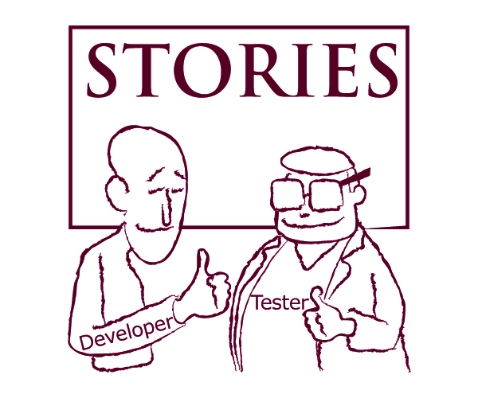
另一方面，如果团队发现他们没有足够的信息来编写可执行规格说明，就需要有人更早地提供分析。这个人不一定非得是业务分析师或主题专家，也可以是测试人员或开发人员。

开发人员和测试人员可以帮助减轻领域专家的负担（当他们成为瓶颈时），并进行初步审查以发现常见问题。这提高了团队的整体吞吐量，也有助于建立跨职能团队。
Clare McLennan 曾参与一个网络广告项目，利益相关者在德国，团队在新西兰——相差近12小时。测试人员扮演了本地分析师的角色。他们无法为客户做决定，所以他们提前工作。McLennan 说：

为了避免时区问题，我们必须确保对故事有把握。如果测试人员阅读后觉得有意义，他们会打断程序员，确保对他们来说也有意义。

对于 Ultimate Software 的全球人才管理团队，产品负责人很忙，所以团队其他成员帮助进行分析工作。由两名开发人员和一名测试人员组成的”单元”会提前审查每个故事，为与产品负责人的会议做准备，识别任何未解决的问题。Maykel Suarez 说这种方法帮助他们更有效地利用每个人的时间：

较大的团队（约17人）给决策带来了很大压力。解决方案是创建单元。现在一个单元（一名测试人员、两名开发人员）能够更快地做出决策。流程允许以小于两周迭代的块来进行这些准备会议，通常只有两三个故事。所以，每3-5天让三个人开15-30分钟的会议，看起来并不是浪费时间或资源。


适用场景：利益相关者随时可用时
利益相关者随时可以回答问题的团队不会花太多时间提前准备详细的示例。他们仍然发现识别一些初始示例是有用的，可以在讨论之前建立基本结构。

识别初始示例可以建立基本结构，帮助讨论更高效地进行。
André Brissette 经常使用外部客户提供的示例来开始 Pyxis Technologies 的 Talia 项目的规格说明工作。他是开发团队的业务利益相关者，也与外部客户合作。当客户提出新功能时，他们会发送系统如何工作的示例；这些示例成为未来规格说明的一部分。
uSwitch 的团队与利益相关者在同一地点工作，所以他们不需要太多前期准备。团队中的任何人都可以在站会期间提出新故事；提出建议的人通常会事先准备基本示例。
从一开始就准备好初始示例有助于更高效地进行讨论，因为团队不必尝试寻找最佳的示例结构来说明需求或识别关键属性。他们可以专注于理解初始示例并扩展它们。

准备阶段不应取代协作，而应使协作更加有效。有些团队在前期准备了过多信息，因为测试人员从组合功能回归检查的角度来处理可执行规格说明。他们在测试中指定了输入参数的每一种可能组合。

复杂的规格说明难以理解，因此大多数人无法识别出其中的功能缺口和不一致之处。
对于复杂的规格说明，前期分析的效果与传统需求从分析师传递给开发人员时的情况类似。开发人员不是通过协作来建立共同理解，而是直接接受需求，这会导致误解，并增加功能缺口直到流程后期才被发现的可能性。
LMAX的Jodie Parker团队在准备工作上做得过头了，最终得到了看似完整的示例。这导致他们跳过了讨论——结果在规格说明中留下了功能缺口。Parker建议在前期只准备”刚刚好”的示例：

因为我们对这个流程都很陌生，起初开发人员说信息不够，无法开展工作。然后业务分析师把所有事情都规定得非常详细，我们的手脚都被束缚住了。当真正开始开发卡片上的功能时，没有任何创造空间，也无法采用更简单的解决方案，因为规定得太死了。
如果你读完一张卡片后说”好的，我完全理解了”，然后就去干活，你可能已经做了无数假设。如果你读完一张卡片后有一些”我不太确定”的地方，这会促使你在迭代开始时进行对话，讨论不同的实现方式及其影响。测试人员会考虑这对测试有什么影响。业务分析师可以思考即将到来的其他需求，看看如何配合。“刚刚好”意味着你的开发人员、业务分析师和质量保证人员站在白板前，真正讨论这个功能应该如何运作。

无论你决定让某人提前一周准备初始示例，还是召开介绍会议来识别待解决的问题，请记住目标是为后续讨论做准备，而不是取代讨论。
我认为没有一种放之四海而皆准的启发式方法(heuristic)能帮助你为团队选择最佳模式，包括个人前期工作与更多实际协作之间的平衡。在比较了采用类似流程的团队后，我建议根据以下标准做出决定：
不成熟的产品需要大型研讨会和大量前期分析。对于不成熟的产品，让测试人员和开发人员更积极地参与规格说明非常重要，因为底层系统变化频繁，他们拥有业务用户所没有的洞察。
成熟的产品可能允许减少前期分析，并采用其他协作模式。成熟的产品可能意味着很少有意外情况。业务分析师和产品负责人很可能清楚技术能提供什么，他们可以很好地提前准备示例。
如果团队相对较新，或者测试人员和开发人员对业务领域没有扎实的理解，值得举办大型研讨会。全员参与的研讨会是将业务领域知识高效传递给整个团队的好方法。一旦团队更好地理解了业务领域，就可以采用更小规模、更有针对性的协作方式。
如果典型的变更需要大量分析，那么担任分析师角色的人应该提前与利益相关者一起准备详细的示例。否则，研讨会上的任何讨论都会很快结束，留下太多待解决的问题。如果通常进入开发的是相对较小且易于理解的功能，提前准备一些基本示例以使讨论更顺畅可能就足够了。
拥有远程业务用户的团队通常需要比那些业务用户随时可以回答问题的团队做更多前期工作。如果业务用户根本无法参加规格说明研讨会，大多数问题和功能缺口必须在前期识别和解决。
最后，没有必要让已经是流程瓶颈的团队成员超负荷工作。测试是瓶颈的团队应该让开发人员和业务分析师更多地参与前期工作。同样，业务分析师或主题专家是瓶颈的团队应该让测试人员帮助进行前期分析。
准备工作和协作期间工作量之间的平衡取决于多个因素：产品成熟度、交付团队的领域知识水平、典型变更请求的复杂性、流程瓶颈以及业务用户的可用性。
示例是避免歧义和精确沟通的好方法。我们在日常对话和写作中不假思索地使用示例——当我在网上搜索”例如”这个短语时，Google返回了超过2.1亿个使用该术语的页面。
在传统规格说明中，示例在软件开发过程中多次出现和消失。业务分析师经常从业务用户那里获取现有订单、发票和报告的示例，然后将其转化为抽象需求。开发人员发明示例来解释边界情况，并与业务用户或分析师澄清，然后将这些情况转化为代码，却不记录这些示例。测试人员设计测试用例作为系统预期工作方式的示例；他们将这些示例留给自己，不与程序员或分析师沟通。
每个人都发明自己的示例，但没有任何机制确保这些示例是一致的，更不用说完整了。在软件开发中，这就是为什么最终结果往往与最初预期不同。为了避免这种情况，我们必须防止不同角色之间的误解，并维护单一的事实来源。
示例是避免沟通问题的好工具。我们可以通过确保从头到尾捕获所有示例，并在分析、开发和测试中一致使用它们，来避免传话游戏。
Marta Gonzalez Ferrero在Beazley担任测试负责人时，他们引入了实例化需求(Specification by Example)。据她说，开发团队承诺的工作量超出了他们的产出能力，而且他们经常发现在实施开始时获得的信息远远不够。情况因他们运行六周迭代周期以及开发团队和业务分析师分处不同大陆而更加复杂。程序员从业务分析师那里收到的验收标准相对抽象（例如，“确保为这个业务单元显示所有正确的产品”）。在迭代中途发现缺少重要内容会严重扰乱产出。有一次迭代结束时，客户说团队交付的东西与预期完全不同。每次迭代的最后一周被保留用于模型办公室：实际上就是迭代演示。Ferrero前往美国参加一次模型办公室会议，并与业务分析师一起用两天时间用示例说明需求。结果，团队在下一次迭代中承诺减少了20%的工作量，并交付了他们承诺的内容。
“团队的感觉也好多了，”Ferrero说。“在那之前，开发人员工作时感觉像是边做边编，必须等待业务分析师的反馈。”据Ferrero说，在他们开始使用示例说明需求后，返工量显著下降。
Ferrero的团队并不是唯一经历这种结果的团队。本书中介绍的几乎所有团队都确认，使用示例说明需求比使用抽象陈述进行规格说明更有效。因为示例是具体且明确的，它们是使需求精确化的理想工具——这就是为什么我们在日常沟通中使用它们来澄清含义。
在《探索需求》一书中，Gerald Weinberg和Donald Gause写道，检查需求是否完整的最佳方法之一是尝试针对需求设计黑盒测试用例。如果我们没有足够的信息来设计好的测试用例，我们肯定没有足够的信息来构建系统。使用示例说明需求是一种指定我们期望系统如何工作的方式，具有足够的细节让我们可以验证该断言。用于说明需求的示例是很好的黑盒测试。
根据我的经验，用示例说明需求所需的时间远少于实现它们的时间。得出我们没有足够信息用示例说明某事的结论，所需时间远少于在尝试实现软件后得出相同结论的时间。我们可以在规格说明协作期间发现这些问题，而不是开始开发一个不完整的故事，然后看着它在迭代中途崩溃——此时我们仍然可以解决这些问题，而且业务用户仍然可用。
2009年5月，我在Progressive .NET教程期间举办了一个关于实例化需求的三小时研讨会。大约50人参加了这个研讨会，主要是软件开发人员和测试人员。我们模拟了一个常见情况：客户将团队引导到竞争对手的网站，要求他们复制某些功能。
我从一个流行网站复制了二十一点游戏的规则，并要求参与者使用示例说明这些规则。虽然需求来自真实网站且只占一页纸，但它们是模糊的、冗余的和不完整的。根据我的经验，当需求以Word文档形式捕获时，情况往往如此。
参与者被分成七个团队，每个团队只有一个人了解二十一点游戏。研讨会结束后，所有参与者都认同，讨论真实案例有助于发现不一致之处和功能缺口。通过进行反馈练习（见边栏），我测量了共识程度。七个团队中有六个对困难的边界情况给出了相同的答案，尽管团队中大多数人之前从未接触过目标领域。用示例说明需求是传达领域知识和确保共识的非常有效的方式。我在实际软件项目中见证过这种效果，我为本书采访的许多团队也有同样的经历。
反馈练习
反馈练习是检验一群人是否对规格说明有共识的好方法。当有人在讨论完一个故事后提出特殊情况时，研讨会主持人应该让参与者写下他们认为系统应该如何工作。然后整个小组比较答案。如果答案都一致，说明每个人对规格说明的理解是相同的。如果答案不一致，那么将结果按类别分组，让每个类别中的一个人解释他们的答案会很有帮助。讨论将揭示误解的根源。
用示例说明需求是一个简单的想法，但实施起来远非易事。找到合适的示例集来说明需求是一个相当大的挑战。
在本章中，我首先通过一个流程示例来阐明背景。然后，我介绍一些好的方法来识别合适的示例集以说明业务功能。最后，我讨论如何说明横切功能和不容易用精确值捕获的概念。
用示例说明：一个例子
为了阐明如何用示例说明需求，让我们看一个涉及虚构公司ACME在线商店的例子。这是本书中唯一的虚构公司，但我必须创造一个来保持示例简单。Acme是一家小型网店，其开发团队开始了规格说明研讨会。Barbara是一位业务分析师，她在前一周花了一些时间与公司老板Owen一起获取一些初始示例。她主持研讨会并介绍第一个故事：
Barbara： 清单上的下一项是免费配送。我们与Manning达成了协议，为他们的书籍提供免费配送。基本示例是这样的：如果用户购买一本Manning的书，比如《实例化需求》，购物车将提供免费配送。有问题吗？
开发人员David发现了一个潜在的功能缺口。他问：这是免费配送到任何地方吗？如果客户住在南美洲附近的一个岛上怎么办？那个免费配送的成本将远超我们从书籍中赚取的利润。
Barbara： 不，这不是全球范围的，只是国内。
测试人员Tessa要求再举一个例子。她说：当这个功能来测试时，我首先要检查的是我们不会为所有书籍提供免费配送。我们能再加一个案例来说明免费配送只针对Manning的书籍吗？
Barbara： 当然可以。例如，《敏捷测试》是Addison-Wesley出版的。如果用户购买那本书，购物车就不会提供免费配送。我认为这相对简单；没有太多其他内容了。有人能想到其他例子吗？我们能用数据来使其无效吗？
David： 没有数值边界条件，但我们可以用购物车中的列表来尝试。例如，如果我同时购买《敏捷测试》和《实例化需求》会怎样？
Barbara： 你两本书都能享受免费配送。只要购物车中有Manning的书，你就能享受免费配送。
David： 我明白了。但如果我购买《实例化需求》和一台冰箱呢？那个配送费用会比我们从书中赚取的利润高得多。
Barbara： 那可能是个问题。我没有和Owen讨论过这个。我得回头再告诉你。还有其他问题吗？
David： 除了那个没有了。
Barbara： 好的。除了冰箱问题，我们有足够的信息开始工作吗？
David和Tessa： 是的。
Barbara： 很好。我下周初会就冰箱问题给你们答复。
示例应该精确
好的示例帮助我们避免歧义。为了做到这一点，必须没有误解的空间。每个示例都应该清楚地定义上下文以及系统在给定情况下应该如何工作，理想情况下，描述一些我们可以轻松检查的内容。
示例中不要有是/否答案

何时：底层概念没有单独定义
在描述流程时，我采访的许多团队通过使用是/否答案过度简化了示例。这可能会产生误导，让人们产生他们有共识的错觉，而实际上并没有。
例如，TechTalk在说明基于网络的退款系统的电子邮件提醒需求时就遇到了这个问题。他们有关于何时发送电子邮件的条件示例，但他们没有讨论电子邮件内容。“客户期望我们包含失败案例和解决方案，而我们没有捕获到这一点，”在这个系统上工作的开发人员Gaspar Nagy说。
我为一家大型投资银行举办了一次规格说明研讨会。团队正在讨论
注意那些只有是/否答案的示例，尝试将它们改写得更精确。
只要底层概念已单独说明，你仍然可以在示例中保留是/否。例如，一组示例可以告诉你是否发送了电子邮件，而另一组示例则说明电子邮件的内容。

适用场景：当你可以指定一个具体示例时
等价类（如”小于10”）或变量可能会造成共识的假象。如果不选择一个具体示例，不同的人可能会不清楚负值是包含在内还是被排除在外。
当等价类被用作输入参数时，预期输出必须指定为包含代表输入值的变量的公式。这实际上复制了功能描述，并没有提供一个具体示例来验证它；使用示例进行说明的价值就丧失了。
值的类别必须转换为具体的内容才能实现自动化，这意味着负责自动化验证的人必须将规格说明转换为自动化代码。这意味着更多误解和误读的机会。
根据我的经验，需求中看似显而易见的事情最容易欺骗我们。令人困惑的概念会被讨论和探索。但那些看似清晰的概念——不同的人对它们有不同的理解——将不会被发现并导致问题。

不要使用等价类，而是始终使用一个有代表性的具体示例。具体示例允许我们在不更改规格说明的情况下自动化验证，并确保所有团队成员有共同的理解。
你可以安全地将等价类用作预期输出，特别是当你试图描述的过程不是确定性的时候。例如，声明一个操作的结果应该在0.1到0.2之间，仍然使规格说明可测试。如果过程是确定性的，具体值会使其更精确；即使对于输出，也尽量使用具体值。
我们应该有足够的示例来描述一个功能的整个范围。主要业务场景中的预期行为和简单示例是一个好的开始，但它们很少是需要实现的全部内容。以下是一些关于如何扩展初始示例集以提供功能完整图景的想法。


一旦你有了一组你认为完整的示例，查看示例的结构，尝试想出可能违反规则的有效输入组合。这有助于揭示你可能遗漏的内容，使规格说明更完整、更强大。
如果示例包含数值，尝试在不同边界条件附近使用大数和小数。尝试使用零或负数。如果示例包含实体，考虑是否可以使用多个对象，没有该实体的示例是否仍然有效，以及如果同一实体被指定两次会发生什么。
在协作制定规格说明时，我特别期望测试人员帮助找到这样的示例。他们应该有技术和进一步的启发式方法(heuristics)来识别潜在的问题案例。
你识别出的许多技术边缘案例不会代表有效的示例；这没关系。除非你在演示无效参数的错误消息（在这种情况下，这些是该业务功能的有效示例），否则不要详细覆盖它们。思考这些不同的案例可能会暴露出你之前可能没有想到的不一致性和边缘案例。
数据实验的一个风险是输出会有太多差异不大的示例。这就是为什么下一步——精炼规格说明（在下一章描述）——很重要。
适用场景：复杂/遗留基础设施
在复杂的IT系统中，很容易忘记所有应该发送信息的地方。


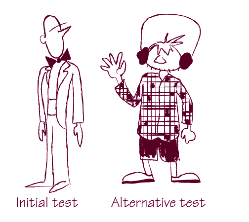
要测试你是否有一组好的示例来规定一个故事，请让业务用户想一种替代方法来验证实现。
“你还能用什么其他方式来测试这个？”是启动该讨论的好问题。Bas Vodde还建议问：“还有其他事情会发生吗？”当我在”不要在示例中使用是/否答案”中讨论的同一规格说明研讨会上问这个问题时，我们发现了一个遗留数据仓库，有些人认为应该接收交易，而其他人认为应该忽略。这一发现促使我们进一步讨论。
Pascal Mestdach在中央患者管理系统项目中也有类似的经历。
在IHC的项目中，他们经常遇到问题：客户假设存储在新应用程序中的数据在迁移期间也会发送到遗留应用程序，但团队并不理解这些需求。询问客户验证功能的替代方法，本可以揭示他们期望在遗留系统中也能看到这些信息。
询问检查功能的替代方法，也是帮助团队讨论自动化验证最佳位置的有效方式。
示例应该真实
当我们用示例来说明功能时，歧义和不一致之处就会暴露出来，因为示例将讨论聚焦在真实案例而非抽象规则上。为了达到这个效果，示例必须是真实的。虚构的、简化的或抽象的示例不会有足够的细节或展现足够的变化。注意避免使用抽象实体，比如”客户A”。找一个具有你想说明的特征的真实客户，或者更好的做法是，聚焦于特征本身而非客户。
避免自己编造数据

适用场景：数据驱动的项目

在数据驱动的项目中，使用真实数据非常重要，因为细微的变化和不一致可能会产生很大影响。
来自Knowledgent Group的Mike Vogel参与了一个全新项目，使用元数据驱动的ETL来填充制药研究的数据仓库。他们使用了实例化需求(Specification by Example)，但团队和客户都是自己编造示例来说明功能，而不是查看真实的数据样本。他说这种方法并没有帮助他们避免不一致：

他们（客户代表）在编造示例；他们没有处理真实的变化情况。他们假设可以做某些事情，然后在示例中省略了这些。当真实系统的数据进来时，总是有太多意外。

对于涉及遗留系统的项目，这个问题更加严重，因为遗留数据往往违背预期的一致性规则（以及一般的逻辑规则）。
Jonas Bandi在TechTalk工作，负责重写一个学校数据管理的遗留应用程序，其中很大的复杂性来自于理解现有的遗留数据结构和关系。他们期望实例化需求能保护他们免受回旋镖问题（参见第4章”注意回旋镖问题”）和bug的困扰，但这并没有发生。他们是根据自己对领域的理解来编造示例的。真实的遗留数据经常有让他们意外的例外情况。Bandi说：

即使场景（测试结果）是绿色的，一切看起来都很好，我们仍然有很多bug，因为遗留应用程序的数据问题。

为了降低遗留数据在迭代后期给团队带来意外的风险，尝试在示例中使用来自现有遗留系统的真实数据，而不是指定全新的案例。
使用现有数据可能需要对敏感信息进行一些自动化脱敏处理，这也会影响自动化的数据管理策略。关于这个问题的一些好的解决方案，请参见第9章”测试数据管理”。

直接从客户那里获取基本示例
适用场景：与企业客户合作
向多个客户销售企业软件的团队很少有机会让客户代表参与协作式需求研讨会。产品经理从不同客户那里收集需求并决定发布计划。这就引入了歧义和误解的可能性。我们可能有完全精确和清晰的示例，但却没有捕捉到客户真正想要的东西。
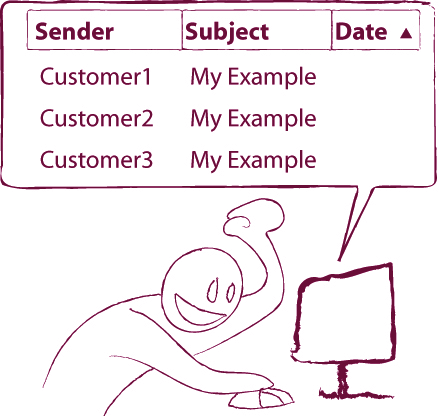
确保用于说明需求的示例是真实的。

真实的示例包含来自客户的数据。
当我们与外部利益相关者合作时，可以应用与确保团队内部共同理解相同的技巧。André Brissette使用客户邮件作为讨论Talia系统自动对话的起点：

他们会写一封邮件，比如”如果我能问Talia这个问题，她会告诉我这个，然后我就能做那个，那就更方便了。“在这种情况下，用户提供了对话的初稿。

Brissette记录这样的邮件，并将它们作为说明所需功能的初始示例。这确保了外部利益相关者的请求得到满足。参见图7.1中的结果规格说明示例。请注意，这个示例理想情况下应该在后续进一步细化。参见第8章”脚本不是规格说明”部分。

图7.1 用作Talia系统规格说明的客户对话示例
Adam Knight在RainStor的团队使用这种方法来开发结构化数据的归档系统。他们与客户合作获取真实的数据集和代表性查询的预期目标。当客户无法给出具体用例时，他们会反推并要求提供示例，有时会与客户组织研讨会。客户无法给出具体用例的一个常见例子是，当一个还没有买家的经销商希望系统支持某些功能，因为他们怀疑这会使销售更容易。一个例子是要求镜像邮件归档系统中可用的功能。Knight说：

他们看了一个邮件归档系统，说我们需要能够以同样的方式工作。邮件归档系统可能有数千封邮件，但在我们的系统中可能有数十亿条记录。你想要同样的粒度级别吗？日志记录呢？这是最困难的需求类型。通常我们会尝试反驳并获取示例。我们安排演示来原型化功能并进行

演示。
为了避免产品经理认为客户需要什么与他们实际要求之间的歧义和误解，在与客户沟通时要坚持要求提供示例。这些示例可以用来启动规格说明研讨会的讨论。它们应该包含在最终的可执行规格说明中，以确保满足客户的期望。
示例应该易于理解
团队在开始使用实例化需求（Specification by Example）时常犯的一个错误是使用复杂和令人困惑的示例来说明需求。他们专注于精确详细地捕获真实示例，创建了包含数十列和数十行的庞大、令人困惑的表格。这样的示例使得评估规格说明的一致性和完整性变得困难。
我更喜欢用示例而不是抽象陈述作为需求的主要原因之一是，它们允许我思考功能差距和不一致性。使事情精确化更容易发现遗漏的情况。这需要理解特定功能的整套示例。如果示例不易理解，我们将无法评估其完整性和一致性。以下是一些关于如何避免这个问题同时保持示例精确和真实的想法。

避免探索每种组合可能性的诱惑
当团队开始使用示例来说明需求时，测试人员经常误解这个过程的目的，坚持要覆盖每种可能的参数组合。遍历说明现有情况的示例没有太大意义；这并不能提高理解。

在使用示例进行说明时，寻找能够推动讨论并提高理解的示例。
我强烈建议不要丢弃任何作为边缘情况提出的示例而不进行讨论。如果有人提出一个看起来已经被覆盖的示例，可能有两个原因：要么提出建议的人不理解现有示例，要么他们确实发现了一些打破现有描述而其他人没有看到的东西。在这两种情况下，都值得讨论这个示例，以确保房间里的每个人都有相同的理解水平。

寻找隐含的概念
当你使用太多示例来说明单个功能或示例很复杂时，这通常意味着示例应该在更高的抽象层次上描述。

查看示例并尝试识别隐藏和隐含的概念。使这些概念明确并单独定义它们。像这样重构示例将使规格说明更容易理解，并将导致更好的软件设计。
寻找缺失和隐含的概念并在系统设计中使其明确是领域驱动设计（Domain-Driven Design）的核心思想之一。
我为一个团队主持了一个研讨会，该团队正在重写一个会计子系统，并逐步将交易从遗留系统迁移到新产品。研讨会专注于将荷兰交易迁移到新系统的需求。我们开始在白板上写示例，很快就填满了所有可用空间。查看这些示例，我们发现我们在解释三件事：如何决定哪些交易是荷兰的，如何决定哪些交易被迁移，以及交易迁移后会发生什么。
因为我们同时说明所有这些事情，我们面临着需要处理的相关情况的组合爆炸。在尝试总结示例时，我们识别出两个隐含的概念：交易位置和迁移状态。然后我们将这个需求分成三部分，并使用单独的、专注的示例集来说明每个部分。我们有一个关于如何决定交易是否是荷兰的规格说明（如何计算交易的位置）。另一组专注的示例说明了交易位置如何影响其迁移状态。在那组中，我们只使用了一次荷兰，而不必遍历构成荷兰交易的所有情况。第三组示例说明了已迁移和未迁移交易在处理上的差异。
以这种方式拆分规格说明使团队能够显著改进系统设计——因为三组不同的示例清楚地指向模块化概念。下次他们有迁移一组交易的需求时，他们可以只专注于更改已迁移交易的定义。交易迁移后发生的事情保持不变。同样，确定交易位置的方式也不会改变。
分离概念也促进了关于交易位置的更有意义的讨论，因为我们处理的是一组小而专注的示例。我们发现有些人认为被交易股票的公司的注册位置决定了位置，而其他人认为只有公司上市的证券交易所才是相关的。
寻找缺失的概念并提升抽象层次，与日常交流中发生的情况并无不同。试着给出一个简单的指令，比如”如果你开车来，请提前预订停车位”，但不使用”汽车”这个词；而是关注它的属性。描述汽车的一种方式是：一种有四个轮子、四个门、四个座位和柴油发动机的交通工具。但我们也有两门车、其他类型的发动机、不同数量的座位等等。列出所有这些例子会使指令变得荒谬地复杂；相反，我们创建一个更高层次的概念来改善沟通。汽车如何制造与停车指令无关；重要的是这个人是否会开车来。
每当你在规格说明中看到太多例子或复杂的例子时，试着提升这些描述的抽象层次，然后单独说明底层概念。
通过使用精确的现实例子来说明需求，并将它们结构化以便于理解，我们可以捕捉所需功能的本质。我们还确保已经足够详细地探索了需求，使开发人员和测试人员有足够的信息开始工作。这些例子可以在交付过程中替代抽象需求，作为规格说明、开发目标和验收测试的验证。
用例子说明孤立的功能性需求相对直观，但许多团队在处理跨领域功能或难以用离散答案描述的功能时会遇到困难。在我关于实例化需求（Specification by Example）的大多数研讨会上，通常至少有一个人声称这对”功能性”需求是可行的，但对”非功能性”需求绝对行不通，因为它们不够精确。
性能、可用性或响应时间等特性通常被称为非功能性需求，因为它们与孤立的功能无关。我通常不同意将需求分类为功能性或非功能性的做法，但这可能是另一本书的话题。许多通常被称为非功能性的特性实际上暗示着功能。例如，性能需求可能暗示缓存功能、持久化约束等。根据我的经验，大多数人说”非功能性”时想到的是跨领域的功能性需求（例如安全性）或不是离散的但可以在滑动尺度上测量的需求（例如性能）。Dan North指出，被列为非功能性的需求通常暗示着团队尚未明确识别的利益相关者。
到目前为止，我还没有见过一个不能用例子说明的非功能性需求。即使是可用性——也许是软件开发中最模糊和最主观的概念——也可以用例子说明。让你的可用性专家给你展示一个她喜欢的网站；这就是一个好的、现实的例子。这类例子的验证可能无法自动化，但这个例子足够现实和精确，可以引发良好的讨论。以下是一些帮助你用例子捕捉非功能性需求的想法。
适用场景：性能是关键特性
因为性能测试通常需要单独的环境和与生产环境类似的硬件，许多性能关键系统的开发人员无法在他们的硬件上运行任何相关测试。这并不意味着团队应该跳过关于性能需求的讨论。

将性能标准清晰地说明并用例子加以阐释，将有助于建立共同理解，并为开发团队提供明确的实现目标。

在RainStor，性能对他们的数据归档工具至关重要，因此他们确保详细表达性能需求。性能需求以”系统必须在Z个CPU上在Y分钟内导入X条记录”的形式收集。然后开发人员要么获得专用测试硬件的访问权限，要么让测试人员为他们运行测试并提供反馈。

记住，“比当前系统更快”不是一个好的性能需求。要告诉人们确切地快多少以及在哪些方面更快。

用户界面布局和可用性不能轻易地用适合真值表或自动化测试的例子来说明。这并不意味着我们不能讨论例子。
我经常创建纸质原型（Paper Prototype），这些原型是由用户界面元素的剪贴和网站打印件粘贴在一起的。通过一两个例子可以很好地确保我们在屏幕上拥有客户需要的所有信息。
业务用户通常发现很难超越用户界面进行思考，因为那是他们工作的对象。这就是为什么当客户在屏幕上看到软件时，回旋镖效应（Boomerang）经常发生。

与其讨论后端处理，我们有时可以通过处理用户界面示例来预先获得更具体的信息。
我采访的几个团队使用Balsamiq Mockups，这是一个用于低保真用户界面原型设计的网络/桌面应用程序。我发现纸质原型更容易使用，因为我们可以使用剪贴并写笔记，但当我们想要分享工作时，软件系统效果更好。
在RainStor公司，Adam Knight将这种方法发挥得更加深入，他创建了一个交互式原型来与客户一起探索模糊的需求。他说：

我们没有使用纸质原型，而是用shell脚本组合了一些命令行原型界面示例，然后与客户一起逐步演示，请他们详细说明如何在我们的系统中使用新功能。

这个交互式工作坊提供了功能示例，开发团队后来用这些示例来说明需求。团队也可以使用这种方法来确定范围。（参见第5章”不要只关注最底层”。）

适用场景：滑动标尺型需求
当需求无法产生离散、精确的结果时，就很难进行讨论。你上一次就”为什么网页应该在两秒内加载，而不是三秒或一秒”进行有意义的讨论是什么时候？大多数情况下，这类需求在没有讨论或理解的情况下就被接受了。
在2009年的Oresund开发者大会上，Björn Regnell展示了QUPER，这是一个有趣的模型，用于说明那些不是离散的、而是在滑动标尺上工作的需求（例如启动时间或响应时间）。我还没有在项目中尝试过这个模型，但因为它提供了一些有趣的思考素材，我决定将它收录在本书中。
QUPER沿着成本、价值和质量三个轴来可视化滑动标尺型需求。该模型的思想是估算滑动标尺上的成本效益断点(breakpoints)和障碍点(barriers)，并将它们展示出来供讨论。
QUPER模型假设这类需求在S曲线上产生效益，曲线上有三个重要的点（称为断点）。效用点(Utility)是产品从不可用变为可用的点。例如，手机启动时间的效用点是一分钟。差异化点(Differentiation)描述的是功能开始形成竞争优势并影响市场营销的时刻。例如，手机启动的差异化点是五秒。饱和点(Saturation)是质量提升变得过度的地方。对用户来说，手机启动需要半秒还是一秒没有区别，因此一秒可能是手机启动的饱和点。Regnell认为，超越饱和点意味着我们在错误的领域投入资源。
该模型的另一个假设是，质量的提升不会导致成本的线性增加。在某个点上，成本会急剧上升。产品可能需要使用不同的技术重写，或者会对架构产生重大影响。这些点在模型中被称为成本障碍点。

为滑动标尺型需求定义障碍点和断点，使我们能够更有意义地讨论产品在市场中的定位以及我们希望它达到的位置。
我们可以使用断点和障碍点来为项目的不同阶段定义相关目标，并使滑动标尺型需求可衡量。Regnell建议将这些设置为区间而不是离散点，因为这更适合质量需求的连续性特征。例如，一个只需要与竞争软件一样好用的功能，其目标应该接近效用点，绝对不要超过差异化点。产品独特卖点的目标应该在差异化点和饱和点之间。在同一曲线上可视化成本障碍点将帮助利益相关者理解，在不需要投入比预期多得多的资源的情况下，他们可以将目标推进到什么程度。
适用场景：横切关注点
通常，客户在施加全局通用需求时会感到更安全。我参与过许多项目，其中性能需求是全局定义的；例如，“所有网页将在一秒内加载。”在大多数情况下，实现该需求（以及其他类似的全局需求）是浪费金钱。通常，只有首页和一些关键功能需要在一秒内加载；许多其他页面可以加载得更慢。用QUPER模型的语言来说，只有少数关键页面的加载时间需要接近差异化点。其他页面的加载时间可能更接近效用点。
问题在于，这些需求是在项目开始时定义的，那时我们还不知道产品会是什么样子。
Christian Hassa建议不要照单全收这些需求，而是将这些横切需求作为讨论的检查清单。Hassa说：
为整个系统全局指定”系统应在10毫秒内响应”很容易，但你不一定需要每个功能都达到这个响应时间级别。系统究竟需要在10毫秒内做什么？它需要发送电子邮件、记录操作还是回复？我们在创建每个功能的验收标准时会考虑这些非功能性标准。


讨论清单将确保你在审查故事时开始考虑所有重要问题。你可以用它来决定哪些横切关注点适用于特定故事，然后专注于说明这些方面。

适用场景：需求无法量化时
由于可用性是主观的且取决于许多因素，因此很难量化。但这并不意味着它不能通过示例来规范。事实上，它只能通过这种方式来规范。
可用性和类似的不可量化特性，如可玩性(playability)和趣味性，是视频游戏的关键。这些品质无法通过详细说明传统需求的文档轻松规范。Supermassive Games是一家位于英国的视频游戏工作室，将敏捷流程应用于游戏开发。Supermassive的团队使用清单来确保详细涵盖质量的不同方面，但这不足以应对这些特性的不确定性和主观性。
Supermassive的工作室总监Harvey Wheaton在SPA2010会议的演讲中表示，这些特性具有”难以捉摸的品质”。据Wheaton说，他们通常专注于尽早将一个功能完成到最终质量水平；然后，团队可以将其作为”完成”含义的示例：

我们在流程中尽早构建所谓的”垂直切片”(vertical slice)，通常在预生产阶段结束时。这个垂直切片是游戏的一小部分（例如，一个关卡、关卡的一部分、游戏介绍），并且达到最终（可发布）质量。这通常辅以”水平切片”(horizontal slice)，即整个游戏的广泛切片，但以低保真度勾勒出来，以展示游戏的规模和广度。
你可以充分利用参考或概念艺术来说明最终产品的视觉外观和保真度，并专门雇用人员来制作高质量的艺术作品，展示游戏的外观。

Supermassive Games不是试图量化具有难以捉摸品质的特性，而是构建一个参考示例，团队成员可以将其工作与之进行比较。

构建参考示例是使用示例说明不可量化特性的有效方法。
总之，团队不应使用”非功能性需求”这一分类来回避困难的对话，而应确保他们对业务用户对系统的期望有共同理解，包括横切关注点。即使最终的示例以后不容易自动化，进行前期讨论并使用示例使期望明确和精确，也将确保交付团队专注于构建正确的产品。
钻石在原始形态下是一种无光泽、半透明的晶体，看起来像一块碎玻璃。要将其转变为珠宝，必须将其切割成特定的宝石形状，然后逐面抛光。
——Edward Jay Epstein，《钻石的发明》
协作讨论是建立共同理解的好方法，但这不足以推动除最简单项目之外的任何项目。除非团队非常小且项目非常短，否则我们需要以不依赖人们短期记忆的方式记录这些知识。
在讨论关键示例后拍摄白板照片是捕获这些知识的简单方法，但示例只是原材料。原始示例就像未切割的钻石——非常有价值，但远不如加工后的形式。将真正的钻石从岩石中分离出来、抛光并将其分解成易于销售的尺寸会显著增加价值。我们用来说明需求的关键示例也是如此。它们是很好的起点，但为了从中获得最大价值，我们必须精炼它们，抛光它们以清晰地展示关键点，并创建团队现在和将来都可以使用的规范。
实例化需求(Specification by Example)失败的最常见原因之一是没有花时间处理这些原始示例。关于规范的讨论通常会导致实验。我们发现新的见解并重构示例，从更高的抽象层次来看待它们。这会产生一些很好的示例，但也会有很多死胡同和被拒绝的想法。我们不一定需要捕获所有这些中间示例或记录我们如何得到结果。
另一方面，仅仅记录我们想要保留的关键示例而没有任何
解释无法让未参与讨论的人有效理解规格说明。
成功的团队不会使用原始示例；他们会从中提炼规格说明。
他们从关键示例中提取本质，将其转化为清晰明确的定义，说明什么使实现完整，不包含任何无关细节。然后记录并描述这个验收标准，以便任何人都能随时拿起最终的规格说明并理解它。这种带有示例的规格说明捕获了满足条件、功能的预期输出及其验收测试。
带有示例的规格说明就是验收测试
一个好的带有示例的规格说明，实际上就是所描述功能的验收测试。
理想情况下，带有示例的规格说明应该从业务角度明确定义所需功能，但不涉及系统应该如何实现它。这给了开发团队自由，让他们找到满足需求的最佳解决方案。为了有效实现这些目标，规格说明应该：
一旦功能实现，描述它的规格说明将服务于不同的目的。它将记录系统做什么，并在功能回归时提醒我们。为了作为长期功能文档有用，规格说明必须这样编写：其他人在创建数月甚至数年后拿起它，也能轻松理解它做什么、为什么存在以及描述什么。为了有效实现这些目标，规格说明应该：
本章重点介绍如何提炼规格说明以实现所有这些目标。但首先，为了更具体地说明问题，我展示好的和坏的规格说明示例。在本章末尾，我们将通过应用本章给出的建议来提炼坏的规格说明。
这里展示了一个非常好的带有示例的规格说明。
免费配送
一旦VIP客户购买一定数量的书籍，就会向他们提供免费配送。不向普通客户或购买书籍以外商品的VIP客户提供免费配送。
假设获得免费配送的最低书籍数量是五本，那么我们期望以下结果：
示例
| 客户类型 | 购物车内容 | 配送 |
|---|---|---|
| VIP | 5本书 | 免费、标准 |
| VIP | 4本书 | 标准 |
| 普通 | 10本书 | 标准 |
| VIP | 5台洗衣机 | 标准 |
| VIP | 5本书，1台洗衣机 | 标准 |
这个规格说明是自解释的。我经常在会议和研讨会上向人们展示这个例子，从来不需要说一个字来解释它。标题和介绍段落解释了示例的结构，这样读者不需要从数据反推来理解指定的规则。现实的示例也在那里，使规格说明可测试并解释边缘情况下的行为，例如，当有人正好购买10本书时会发生什么。
这是一个规格说明，而不是某人如何测试示例的脚本。它没有说任何关于应用程序工作流或会话约束的内容。它没有解释书籍是如何购买的，只说明可用的配送机制是什么。它没有试图谈论任何实现细节。这些都留给开发人员以最佳方式解决。
这个规格说明聚焦于免费配送的特定规则。它只包含与该规则相关的属性。
将前面的规格说明与图8.1中显示的示例进行比较。这是一个非常糟糕的规格说明的绝佳例子。
工资单的简单验收测试
首先我们添加几个员工
员工
| id | name | address | salary |
|---|---|---|---|
| 1 | Jeff Languid | 10 Adamant St; Laurel MD 20707 | 1005.00 |
| 2 | Kelp Holland | 128 Baker St; Cottonmouth, IL 60066 | 2000.00 |
接下来我们支付他们。
发薪日
| pay day | check number |
|---|---|
| 1/31/2001 | 1000 |
我们确保他们的工资支票是正确的。空白单元格将由Paycheckinspector fixture填充。已有数据的单元格将被检查。
工资支票检查器
| id | amount | number | name | date |
|---|---|---|---|---|
| 1 | 1005 | |||
| 2 | 2000 |
最后我们确保输出包含两张且仅两张工资支票，并且它们有正确的支票号码。
工资支票检查器
| number |
|---|
| 1000 |
| 1001 |
图8.1 一个令人困惑的规格说明
虽然它有标题和表格周围的一些文字，看似在解释发生了什么，但效果微乎其微。为什么这个文档被称为”简单”？它显然与工资单相关，但它到底在指定什么？
这个文档在指定什么并不真正清楚。我们需要从测试数据反推来理解规则。它似乎在验证支票以唯一编号打印，从作为参数给出的编号开始。它似乎也在验证每张支票上打印的数据。它还用文字解释每个员工打印一张支票。
这份文档包含大量看似偶然的复杂性——姓名和地址在文档中除了设置部分外几乎没有被使用。数据库标识符出现在表格中，但它们与业务规则无关。本例中使用数据库标识符来将员工与薪资检查器匹配，将技术软件概念引入了规范说明。
薪资检查器显然是专门为测试而发明的。当我第一次读到这个时，我想象彼得·塞勒斯穿着克鲁索式的服装检查支票的场景。我确信这不是一个业务概念。
另一个有趣的问题是这份规范说明断言部分的空白单元格，而且两个薪资检查器表格似乎毫无关联。这个例子来自FitNesse，该工具中的空白单元格会打印测试结果用于故障排除，但不检查任何内容。这实际上使得这份规范说明变成了一个需要人工审查的自动化测试——几乎完全违背了自动化的目的。FitNesse中的空白单元格通常是测试不稳定的标志，它们表明缺少了某些东西。要么自动化测试在错误的位置接入系统，要么隐藏了一个隐式规则，使测试结果不可重复且不可靠。
规范说明中使用的语言不一致，这使得很难在输入和输出之间建立联系。底部表格中的1001值是什么？列标题告诉我们它是一个数字，这在技术上是正确的，但完全没有用处。第二个框有一个支票号码，但那是什么类型的号码？这两者之间有什么关系？
假设地址存在是因为支票作为带有地址的对账单的一部分打印，用于自动信封包装，那么基于这份规范说明的测试至少未能验证一件非常重要的事情：正确的人是否收到了正确的金额。如果第一个人收到了两张支票，这个测试会愉快地通过。如果他们两人收到了彼此的工资，这个测试也会通过。如果支票上打印了一个遥远未来的日期，我们的员工可能无法兑现它们，但测试仍然会通过。
现在我们来看空白单元格的真正原因。支票的顺序没有被指定。这是一个功能缺口，使得系统难以以可重复的方式进行测试。这个FitNesse页面的作者决定在规范说明中而不是在自动化层中解决这个技术难题，创建了一个会产生假阳性的测试。
没有更多的上下文信息，很难判断这个测试是否只验证一件事。如果支票打印系统还用于其他用途，我更倾向于将支票号码唯一且从配置值开始这一事实单独放在一个页面中。如果我们只打印工资支票，它可能是工资支票打印的一部分。
我们将在本章后面改进这份糟糕的文档。但首先，让我们先了解什么是好的规范说明。
在本章的引言中，我列出了好的规范说明的一些目标。以下是一些实现这些目标的好方法。
规范说明需要是成功的客观衡量标准，能够明确告诉我们开发何时完成。它必须包含可验证的信息——参数组合和可以与系统进行核对的预期输出。
为了满足这些标准，规范说明必须基于精确的现实示例。请参阅第7章中的”示例应该精确”部分，了解一些确保示例精确的好技巧。
业务用户通常会考虑通过用户界面或多个步骤执行操作，解释他们如何使用系统来实现某些目标，而不是系统应该做什么。这样的示例是脚本，不是规范说明。
脚本解释如何测试某些东西。它通过与系统的低级交互来描述业务功能。脚本要求读者从操作中反向理解什么是真正重要的，以及究竟在说明什么。脚本还将测试绑定到工作流和会话约束中，即使底层业务规则不变，这些约束在未来也可能改变。
规范说明解释系统做什么。它以最直接的方式关注业务功能。规范说明更短，因为它们直接描述业务概念。这使得它们比脚本更容易阅读和理解。规范说明也比脚本稳定得多，因为它们不会受到工作流和会话约束变化的影响。
以下是一个脚本示例：
这个脚本告诉我们如何完成某事，但没有直接解释我们在指定什么。拿一张纸，在继续阅读下一段之前，试着写下这个示例究竟在指定什么。你能写下任何东西吗？如果能，你认为这是这个示例可能描述的唯一内容吗？
这个示例可能描述的内容有很多可能性。一种选择是
可以将多个商品添加到购物车。另一种同样可能的情况是用户登录后购物车为空。第三种情况是将”实例化需求”(Specification by Example)的第一个搜索结果和”Beautiful Testing”的第二个搜索结果添加到购物车。
这是一个非常精确且可测试的例子；我们可以执行它并确认系统是否给出了预期结果。这个脚本的问题在于它不包含任何关于实际代表什么功能的信息。编写它的人在第一次实现功能时可能确切知道它应该做什么。但六个月后，这就不再明显了。
这个脚本不是一个好的沟通工具。我们无法真正判断这是关于什么的，也不知道系统的哪个部分出了问题。如果基于这个脚本的测试突然开始失败，有人将不得不花费大量时间分析许多不同的代码区域。
Tom在开始时登录的步骤很可能是由于网站的工作流程约束所必需的。除非这个例子说明的是与这个特定用户相关的业务规则，否则Tom是登录者这一事实是无关紧要的。如果他的用户账户因任何原因被禁用，这个测试将开始失败，但系统可能并没有问题。有人将不得不浪费大量时间才能发现这一点。
用脚本而不是规格说明来捕获验收标准从长远来看会花费大量时间，如果我们提前花几分钟重构这些例子，就可以节省这些时间。关于如何将此类脚本精炼为更有用的规格说明的示例，请参阅本章末尾的”实践中的精炼”部分。Rick Mugridge和Ward Cunningham在《Fit for Developing Software》(Prentice Hall, 2005)中有很多关于重构脚本以获得更好规格说明的建议。
注意流程描述（先做这个，然后做那个……）。除非是在指定真正的流程，否则这通常是业务规则用脚本来说明的信号。这样的脚本会导致大量的长期维护问题。

注意关于系统应该如何工作的描述。思考系统应该做什么。

Ian Cooper在Beazley的团队在开始实施实例化需求大约六个月后意识到了这一点。在一次团队回顾中，他们开始争论他们的验收测试维护成本太高。为了寻找降低成本的方法，他们将脚本重构为规格说明。Cooper说：

我们做测试的模型与手动测试相同，被翻译成脚本。我们早期的测试遵循脚本方法；测试是一系列操作，最后有一些检查。一旦我们转变为”它应该做什么”，事情就变得容易多了。

将验收测试描述为脚本而不是规格说明是团队早期最常犯的错误之一。脚本作为短迭代的开发目标效果相对较好，因为人们在第一次实现时仍然记得脚本描述的内容。但它们后来难以维护和理解。这个问题可能需要几个月才会显现，但一旦出现，就会造成严重影响。
理想情况下，规格说明不应该暗示软件设计。它应该解释业务功能，而不规定如何在软件中实现。这有两个目的：
专注于业务功能而不描述实现的规格说明，使实现更容易改变。不涉及软件设计的规格说明在设计改进时不需要改变。这样的规格说明通过充当不变量来促进未来的变更。我们可以在改进软件设计后，基于这些规格说明运行未修改的测试，以确保所有先前的功能仍然存在。

与代码紧密耦合并密切反映软件实现的规格说明会导致脆弱的测试。

软件设计的变更会破坏这样的测试，即使测试描述的业务功能没有改变。产生脆弱测试的带有示例的规格说明会引入额外的维护成本，而不是促进变更。Aslak Hellesøy指出这是他关于实例化需求学到的关键教训之一：

我们写了太多验收测试，有时它们与我们的代码耦合太紧密。虽然不像单元测试那样耦合，但仍然是耦合的。在最坏的情况下，大规模重构后更新测试脚本需要长达八个小时。所以我们学到了很多关于在测试数量和编写方式之间取得良好平衡的知识。


注意规格说明中来自软件实现且在业务领域中不存在的名称和概念。例如数据库标识符、技术服务名称，或者不是一阶领域概念的对象类名，以及纯粹为自动化目的而发明的概念。
将规范结构化以避免这些概念，这样它们会更容易理解和长期维护。
技术测试很重要，我并不反对进行与软件设计紧密耦合的测试。但这类测试不应与可执行规范混在一起。刚开始实践实例化需求(Specification by Example)的团队常犯的一个错误是：放弃所有技术测试（如单元测试或集成测试），期望可执行规范能覆盖系统的所有方面。可执行规范指导我们交付正确的业务功能，技术测试确保我们关注系统的底层技术质量。两者都需要，但不应混为一谈。技术测试自动化工具比我们用于自动化可执行规范的工具更适合技术测试，它们能让团队更轻松地维护这类测试。
适用场景：处理遗留系统时
遗留系统通常有很多技术怪癖，难以修改。用户不得不绕过这些技术困难，导致很难区分真正的业务流程和变通方案。
一些团队陷入了将这些流程变通方案包含在规范中的陷阱。这不仅将规范绑定到实现上，还绑定到那些技术问题上。这样的规范作为遗留系统变更的促进者是无效的，很快就会变得维护成本高昂。代码中的一个小改动可能需要花费数小时来更新可执行规范。
Johannes Link曾参与一个项目，需要构建大约200个不同的对象才能运行基本测试场景。这些依赖关系被写在可执行规范中，而不是推到自动化层。一年后，测试维护成本变得如此之高，以至于团队开始抵制变更。Link说：

修改一个功能会破坏很多测试。他们无法承担实现某些新需求的代价，因为这在测试方面成本太高，而且他们知道需要这些测试来保持低缺陷率。

大多数可执行规范的自动化工具将规范与自动化过程分离（更多内容见第9章开头的”这是如何工作的？“提示）。规范以人类可读的形式呈现，自动化过程通过单独的编程语言代码自动化层来捕获。

在自动化层解决技术困难，不要试图在测试规范中解决它们。
这将使你更容易修改和改进系统。在自动化层解决技术困难，可以让你在描述和维护技术验证过程时受益于编程语言的特性和工具。程序员可以应用技术和工具来减少重复、创建可维护的代码并轻松修改它。如果技术变通方案包含在自动化层中，当你改进技术设计且不再需要这些变通方案时，规范将不受影响。
将技术工作流推到自动化层还能使规范更短、更易理解。生成的规范将在更高的抽象层次上解释业务概念，聚焦于对特定示例集重要的方面（更多内容见本章后面的”规范应该聚焦”部分）。

适用场景：Web项目

刚开始实践实例化需求时，许多团队浪费了大量时间描述次要用户界面细节的无关示例。他们为了流程而遵循实例化需求的流程，而不是为了扩展对规范的理解。

用户界面是可视化的，所以很容易想到。我见过一些项目，团队和客户花费数小时描述导航菜单链接。但用户界面的那部分几乎没有风险，那些时间本可以用来讨论更重要的功能。
Phil Cowans在Songkick开始实施实例化需求时有过类似经历，他认为这是早期的关键错误之一。
早期我们花了太长时间测试琐碎的用户界面部分，因为那很容易做到。我们没有花足够的时间深入研究边缘情况和应用程序的替代路径。测试你能看到的东西很容易，但最终你需要深入理解软件做什么，而不是用户界面看起来像什么。从用户故事和应用程序路径的角度思考真的很有帮助。

与其纠结于用户界面细节，不如思考用户在网站上的旅程。在协作规范时，根据规范各部分对业务的重要性来分配投入时间。重要且有风险的项目应该详细探讨，不那么重要的项目可能不需要如此精确地规范。
当可执行规格说明测试因功能回归而失败时，需要有人查看它，理解问题所在，并找出修复方法。这可能发生在规格说明最初编写数年之后，当时编写它的人可能已经不在同一个项目中工作了。这就是为什么规格说明必须具有自解释性。
当然，确保规格说明具有自解释性也有助于在我们首次开发指定功能时避免任何误解。

使用描述性标题并用简短段落解释目标

在规格说明开头加上几个词就能产生很大的不同，并在以后节省大量时间。
如果规格说明只包含输入和预期输出，任何阅读该文档的人都必须从示例中重建业务规则。
为规格说明选择一个描述性标题至关重要。标题应该总结意图。想想如果规格说明在网上某处，你会在Google搜索框中输入什么来查找它，然后用那个作为标题。这将使读者在搜索某个功能的解释时容易发现相应的规格说明。
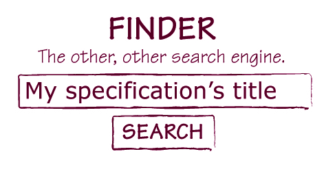
读者还需要理解规格说明的结构及其上下文。用几个词解释规格说明的目标和示例的结构——不超过一小段——并将其放在标题中。编写描述的一个好技巧是先只写示例，然后尝试向其他人解释它们。记录下你在解释示例时所说的话，并将其放在规格说明的标题中。

展示并保持沉默
当： 有人独自处理规格说明时
为了： 检查规格说明是否具有自解释性

要检查规格说明是否具有自解释性，让其他人查看文档并尝试理解它，而你不说一个字。
为确保规格说明真正具有自解释性，请对方解释他们理解了什么，看看是否与你的意图相符。
如果我向某人展示规格说明时发现自己不得不解释它，我会写下解释并将其放在标题中。解释示例通常会促使我使用更有意义的名称或插入注释，使示例更容易理解。
不要过度指定示例

许多团队在建立基本自动化基础设施后，犯了将规格说明扩展到包含所有可能的输入参数组合的错误。对此的常见解释是测试人员试图通过重用自动化框架来验证额外的示例。
这种方法的问题是原始的关键示例淹没在其他值的海洋中。规格说明变得难以理解，这意味着它们不再具有自解释性。
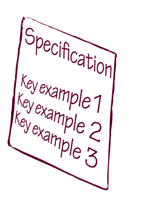
一个正确定义三个关键示例的规格说明比一个糟糕地指定一百个示例的规格说明有用得多。

这种方法的另一个问题是，执行更多示例来验证相同的情况需要更多时间，因此会减慢测试执行速度，给交付团队提供更慢的反馈。
Lisa Crispin的团队在进行自动化合规测试时遇到了这个问题，这些规则由监管机构规定，不一定遵循任何逻辑。Crispin与她的产品负责人合作，指定处理许多排列组合的算法，因此他们在开发前几个迭代就编写了大量复杂的可执行规格说明。开发人员在开始查看这些规格说明时感到不知所措。Crispin详细说明：

他们（开发人员）看着测试（可执行规格说明）感到困惑；他们只见树木不见森林。他们无法使用这些测试，因为他们不知道该编写什么代码。所以我们发现测试应该给我们提供全局视图，但不一定要立即提供所有细节。

规格说明应该只列出关键的代表性示例。这将有助于保持规格说明简短且易于理解。关键示例通常包括以下内容：
说明业务功能每个重要方面的代表性示例。业务用户、分析师或客户通常会定义这些。
说明每个重要技术边界情况的示例，如技术边界条件。开发人员通常会在担心功能缺口或不一致时建议此类示例。业务用户、分析师或客户将定义正确的预期行为。
说明预期实现中每个特别棘手区域的示例，如过去导致错误的情况和可能未被先前示例明确说明的边界条件。测试人员通常会建议这些，业务用户、分析师或客户将定义正确的行为。
当然，重用为关键示例建立的自动化结构来支持想要进行更多测试的测试人员是有好处的。有时，探索系统在不同边界值下行为的最简单方法是在现有规格说明上添加更多示例。这可能会使规格说明变得更长、更不聚焦、更难理解。
与其使主规格说明复杂化，不如创建一个单独的自动化测试，并从主规格说明中指向它。如果你使用基于Web的活文档系统，可以使用网页链接连接两个页面。对于基于文件的系统，可以在规格说明的描述中使用文件路径或快捷方式。
新测试可以使用与原始规格说明相同的结构，并列出许多额外的示例。功能的主规格说明仍然可以作为沟通工具并提供快速反馈。额外的测试可以探索所有不同的组合，以进行广泛测试。主规格说明可以在每次更改时进行验证以提供快速反馈。补充测试可以在夜间运行或按需运行，让团队对所有额外情况充满信心。
过度指定示例的一个常见原因是分析师或客户担心他们会因为任何缺失的功能而受到指责。通过协作式规格说明流程，正确编写规格说明的责任是共同承担的，因此没有理由这样做。Pyxis公司Talia产品总监André Brissette指出这是学到的关键经验之一：

根据故事的成功条件来决定覆盖什么和不覆盖什么。如果你认为通过这些测试确实可以覆盖成功条件，那就没问题。如果不是这样，你就有问题了。如果在冲刺结束时或将来发现遗漏了什么，有一点是明确的：你所做的是成功条件，基本上是所有人之间的契约。在那个时候，它（额外的功能）是不需要的。作为分析师，你不必承担责任。

适用场景：描述具有多种参数组合的规则
为了解决上一节描述的问题，Crispin的团队决定在开始处理故事之前只编写高层规格说明，将详细测试留到后面。
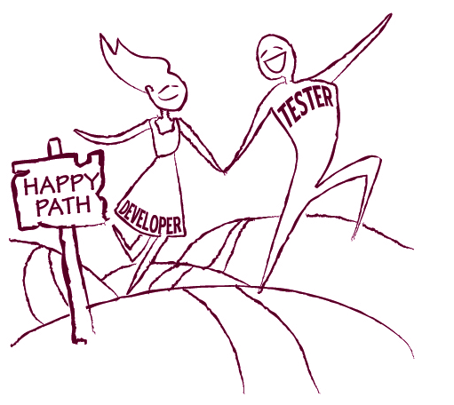
当开始处理一个故事时，测试人员和开发人员一起指定一个快乐路径(happy path)。然后开发人员自动化规格说明并编写代码，允许测试人员重用自动化框架并添加测试用例。测试人员随后探索系统并尝试不同的示例。如果他们发现一个失败的测试用例，他们会回到程序员那里扩展规格说明并修复问题。

与其使规格说明过于复杂，基本示例有助于驱动快乐路径并建立自动化结构。
然后可以根据风险尝试额外的示例，规格说明可以逐步扩展。这是处理等价类(classes of equivalence)一开始不容易确定且实现驱动边缘情况的有趣解决方案。
规格说明应该描述单一事物——一个业务规则、一个功能或一个流程步骤。这种聚焦的规格说明比指定多个相关规则的规格说明更容易理解。规格说明还应该只关注对其试图演示的项目重要的示例关键属性。
聚焦为规格说明带来两个重要好处：聚焦的规格说明很短，因此比更长、更不聚焦的规格说明更容易理解。它们也更容易维护。覆盖多个规则的规格说明会受到系统所有相关领域变化的影响。这将导致基于规格说明的自动化测试更频繁地失败。更糟糕的是，当这样的测试失败时，很难定位问题。

目的：使测试更容易理解

作为经验法则，规格说明应该声明上下文，指定单一操作，然后定义预期的后置条件。
记住这一点的好方法是 Given-When-Then（给定-当-然后）或 Arrange-Act-Assert（准备-执行-断言）。Given-When-Then是指定系统行为的常见格式，由早期的行为驱动开发(behavior-driven-development)文章推广。它要求我们将系统行为场景分三部分编写：
一些自动化工具，如Cucumber和SpecFlow，正是使用这种语言来编写可执行规格说明。参见图8.1的示例。即使使用可能采用表格、基于关键字或自由格式文本系统的不同工具，按照Given-When-Then流程构建规格说明也是一个很好的想法。
触发单一操作至关重要。这确保规格说明只聚焦于该操作。如果规格说明列出多个操作，读者将不得不分析和理解这些操作如何协作产生最终效果，才能理解结果。
如果一组操作从业务流程角度来看很重要，它可能是
足够重要的内容应该被命名并作为更高层次的概念使用，因此应该在领域代码中的高层方法中捕获。然后可以在规格说明中列出这个高层方法。
规格说明仍然可以定义多个前置条件和后置条件（Given和Then部分中的多个项目），只要它们都与测试指定的功能直接相关。以下是一个包含两个前置条件和两个后置条件的Cucumber测试示例：
场景：新用户，可疑交易
Given 一个没有历史交易记录的用户，
And 用户的账户注册国家是英国，
When 用户下单并选择美国作为配送国家，
Then 交易被标记为可疑，
But 用户看到的订单状态是”待处理”。
Given-When-Then语言的一个潜在陷阱是它像散文一样，这往往会鼓励人们思考交互流程，而不是直接表达业务功能。使用本章前面”脚本不是规格说明”部分的建议来避免此类问题。

不要在规格说明中显式设置所有依赖项
适用场景：处理复杂依赖/引用完整性时
在需要复杂配置的数据驱动项目中，对象很少能够独立创建。例如，支付方式的领域验证规则可能要求它属于某个客户，客户必须有一个有效账户，等等。

许多团队犯了一个错误，将所有先决条件的配置和设置都放入规格说明中。虽然这从概念角度使规格说明显式且完整，但也可能使其难以阅读和理解。
此外，配置中任何对象或属性的任何更改都会破坏基于此规格说明的测试，即使它与指定的规则没有直接关系。
显式描述所有依赖项还可能隐藏数据相关问题，因此这在数据驱动项目中尤其危险。
Jonas Bandi参与了一个重写学校遗留数据管理系统的项目，其中最大的问题之一是理解现有数据。团队编写的规格说明动态设置了整个上下文。规格说明中的上下文基于团队的理解，而不是基于真实的数据变化。团队只有在迭代中期将代码连接到来自遗留系统的数据时，才发现了需求中的许多差距和不一致（参见第7章”示例应该是真实的”部分）。
在挪威奶牛群记录系统工作的Bekk Consulting团队也遇到了类似问题，但角度不同。他们的项目也是数据驱动的，许多对象需要复杂的设置。起初，他们在每个可执行规格说明中定义整个上下文。这要求人们完美地猜测所有依赖项。如果缺少某些数据，基于规格说明的测试会因为数据完整性约束而失败，即使代码已正确实现。
这些问题最好在自动化层解决，而不是在规格说明中。将与规格说明目标无关的所有依赖项移到自动化层，并使规格说明只关注重要的属性和对象。另请参阅第9章”测试数据管理”部分，了解一些技术数据管理问题的良好解决方案。

在自动化层应用默认值

将创建有效对象的责任推给自动化层。
自动化层可以用合理的默认值预填充对象并设置依赖项，这样我们就不必显式指定它们。这使我们在编写规格说明时只需关注重要属性，使其更易于理解和维护。
例如，不需要所有地址详情来设置客户，也不需要所有信用卡属性来注册有效信用卡，我们只需指定用户在付款前卡上有100美元可用。其他一切都可以由自动化层动态构建。
这些默认值可以在自动化层中设置，也可以在全局配置文件中提供，具体取决于业务用户是否应该能够更改它们。
不要总是依赖默认值

适用场景：处理具有多个属性的对象时
虽然依赖合理的默认值使规格说明更易于编写和理解，但有些团队将这种方法用得过头了。消除重复通常是编程语言代码中的良好实践，但在规格说明中并非总是如此。

如果示例的关键属性与自动化层提供的默认值匹配，虽然可以省略，但仍然明智地显式指定它。
这确保规格说明为读者提供完整的上下文，也允许我们在自动化层中更改默认值。Ian Cooper警告说：

即使它[示例的属性]实际上与默认值相同，也不要依赖它。显式定义它。这允许我们以后更改默认值。它还使重要的内容显而易见。当你阅读规格说明时，你可以看到示例在产品上指定了这些值，你可以问：“为什么这很重要？”

功能规格说明对用户、业务分析师、测试人员、开发人员以及任何试图理解系统的人都很重要。为了让规格说明对所有这些群体都易于访问和阅读，它必须用每个人都能理解的语言编写。文档中使用的语言也必须保持一致。这将最大限度地减少翻译的需要和误解的可能性。
通用语言(Ubiquitous Language)（见侧边栏）非常好地满足了这两个要求。确保在规格说明中使用通用语言，并注意那些似乎是为测试目的而发明的、听起来像软件实现概念的类名或概念。
软件交付团队通常会根据技术实现概念为项目开发自己的术语。这种术语与业务用户的术语不同，导致两个群体沟通时需要不断翻译。业务分析师充当翻译者，成为信息传递的瓶颈。两种术语之间的翻译往往导致信息丢失并造成误解。
Eric Evans 在《领域驱动设计》(Domain Driven Design)中建议开发一种通用语言作为共享领域理解的基础，而不是让不同的术语自然产生。他将这种语言称为通用语言(Ubiquitous Language)。
通过确保规格说明满足本节中列出的目标，我们获得了良好的开发目标，也获得了具有长期价值的沟通工具文档。它们将支持我们演进系统并逐步构建活文档。
现在让我们清理本章前面看到的那个糟糕的规格说明并加以改进。首先，我们应该给它一个描述性的标题，如”工资支票打印”，以确保我们以后能轻松找到它。我们还应该添加一段解释此规格说明目标的文字。我们确定了以下规则：
支票有收款人姓名、金额和付款日期。它没有姓名或工资；那些是员工的属性。如果我们将支票作为自动发送信件的一部分打印，我们可以说支票还有一个用于自动信封包装的地址。让我们执行通用语言并一致地使用这些名称。
姓名和地址的组合应该足以让我们将员工与其支票匹配——我们不需要数据库标识符。
我们可以通过商定排序规则来使系统更具可测试性，无论规则是什么。例如，我们可以商定按员工姓名的字母顺序打印支票。我们可以向客户建议这种方式来使规格说明更强健。
为了使规格说明不言自明，让我们提取上下文并将其放在标题中。工资日期和下一个可用支票号码是上下文的一部分，还有员工工资数据。我们还应该明确说明这个号码的用途，这样将来阅读此规格说明的人就不必自己去弄清楚。让我们称之为”下一个可用支票号码”。我们还可以通过使上下文在视觉上突出来使规格说明更容易理解，以表明它是准备数据而不是验证数据。
被触发的操作不一定需要在规格说明中列出。工资运行可以由检查工资结果的表格隐式执行。这是一个关注测试什么而不是如何检查的例子。不需要有一个单独的步骤说”接下来，我们支付他们”。
工资检查器是一个发明的概念，它违反了通用语言规则。这不是业务领域中的特殊概念，所以让我们用有意义的方式解释它的作用。因为我们想确保自动化验证的人检查所有打印的支票，让我们使用”所有打印的支票”。否则，有人可能使用子集匹配，系统可能会将每张支票打印两次而我们不会注意到。
清理后的版本如图8.2所示。
系统将自动打印工资支票：
工资上下文
系统中的员工
| 姓名 | 地址 | 工资 |
|---|---|---|
| Jeff Languid | 10 Adamant St; Laurel MD 20707 | 1005.00 |
| Kelp Holland | 128 Baker St; Cottonmouth, IL 60066 | 2000.00 |
工资运行中打印的所有支票
| 支票号码 | 支票日期 | 收款人 | 地址 | 金额 |
|---|---|---|---|---|
| 1000 | 10/10/2010 | Jeff Languid | 10 Adamant St; Laurel MD 20707 | 1005.00 |
| 1001 | 10/10/2010 | Kelp Holland | 128 Baker St; Cottonmouth, IL 60066 | 2000.00 |
图8.2 图8.1中糟糕规格说明的改进版本。注意它更简短、不言自明，并且有清晰的标题。
这个版本更简短，与原版相比没有无关的杂乱内容，更容易理解。在改进规格说明后，我们可以尝试回答”我们是否遗漏了什么？“这个问题。我们可以通过试验输入参数并尝试思考可能代表有效输入但违反规则的边界情况来检验规格说明是否完整。（无需考虑无效的员工数据，因为那应该在系统的其他部分进行检查。）
试验数据的启发式方法之一是使用数值边界条件。例如，如果员工的工资为0会发生什么？这是一个有效的情况；员工可能处于无薪休假、停职或已不再为我们工作的状态。我们还要打印支票吗？如果我们保持”每个员工一张支票”的规则，那些多年前被解雇且不再领取工资的员工仍然会收到打印的支票，上面是零。然后我们可以与业务部门讨论如何加强这条规则，确保不需要发出的支票不会被发出。
根据工资发放是否是支票打印的唯一用例，我们可能需要进一步改进并将其拆分为几个规格说明。一个描述通用的支票打印功能，如唯一的连续支票号码。另一个描述工资发放特定的功能，如打印的支票数量、相关性等。
重点不在工具
许多人抱怨FitNesse，因为它会产生图8.1所示的那种有问题的可执行规格说明。像Concordion这样的工具是专门为防止这类问题而构建的。其他工具如Cucumber推广文本形式的Given-When-Then结构，以避免陷入难以理解的表格陷阱。
在急于得出某个工具是解决方案的结论之前，你应该知道我见过几乎所有主要工具都写出过类似糟糕的规格说明。问题不在工具；同样，解决方案也不在工具。问题主要在于团队没有付出努力使规格说明易于理解。改进规格说明不需要太多额外的努力，但结果会带来更多价值。
改进的好处有时不会立即显现，因为协作帮助我们建立对预期功能的共同理解。这就是为什么许多团队不认为改进很重要，最终得到了大量难以理解的文档。从关键示例进行改进是一个关键步骤，它确保我们的规格说明作为沟通工具具有长期价值，并为活文档(Living Documentation)系统创建良好的基础。
要点
在我们改进功能的规格说明后，它成为实现的明确目标和衡量完成时间的精确方式。改进后的规格说明还允许我们在未来每次更改系统时检查系统是否仍具有所需的功能。由于我们通过示例说明规格说明所获得的详细程度，即使对于中型项目，在短迭代内手动运行所有检查也变得不可能。解决方案是显而易见的：我们必须尽可能多地自动化这些检查。
验证带有示例的规格说明的正确自动化与软件项目中的传统测试自动化有很大不同。如果我们在自动化时必须显著更改规格说明，传话游戏就会重新开始，改进规格说明的价值就会丧失。理想情况下，我们应该在不扭曲任何信息的情况下自动化规格说明的验证过程。这在通常的测试自动化问题之上引入了额外的挑战。
在本章中，我将介绍如何开始自动化验证规格说明而不改变它们，以及如何控制自动化的长期维护成本。然后我将涵盖给我采访的团队造成最多问题的两个领域：自动化用户界面和管理自动化测试运行的数据。我在这里介绍的实践适用于任何工具。我不会讨论单个工具，但如果你有兴趣研究更多关于该主题的内容，请访问 http://specificationbyexample.com 并下载其他文章。在开始之前，我将回答一个经常在邮件列表和在线论坛中提出的问题——我们真的需要这种新型自动化吗？
因为自动化是一个高度技术性的问题，本章将会更加技术化。
所有最流行的可执行规格说明自动化工具都使用两类工件：人类可读形式的规格说明和编程语言编写的自动化代码。根据工具的不同，规格说明可能是纯文本、HTML或其他人类可读格式。这些工具知道如何从规格说明中提取输入和预期输出，以便将其传递给自动化代码并评估预期是否与结果匹配。自动化代码（在某些工具中称为fixtures或step definitions（步骤定义））调用应用程序API、与数据库交互或通过应用程序用户界面执行操作。
自动化代码依赖于规格说明，但反过来则不然。这就是这些工具允许我们在不修改规格说明的情况下实现验证自动化的方式。
有些工具要求团队将示例存储在编程语言代码中，然后从中生成人类可读的规格说明。从技术上讲，它们实现了相同的效果，但这类工具实际上阻止了任何不精通编程语言代码的人编写或更新规格说明。
可执行规格说明的长期维护成本是当今团队在实施实例化需求（Specification by Example）时面临的最大问题之一。可执行规格说明的自动化工具正在快速改进，但在维护便利性和开发工具集成方面，它们仍远不如更成熟的单元测试工具。自动化还为团队带来了额外的工作量。这经常引发关于自动化是否真的必要、是否得不偿失的讨论。
反对自动化的观点认为，它增加了开发和维护软件的工作量，团队可以通过使用示例进行说明来获得对需要完成工作的共同理解，而完全不需要自动化。Phil Cowans说，这种观点忽视了实例化需求的长期收益：

感觉上你好像在写两倍的代码来构建相同的功能。但代码行数可能不是开发过程中的限制因素，所以这种想法相当天真。你没有考虑到你花在维护已构建内容或处理测试与开发之间沟通不畅上的时间会减少。

自动化对于大型团队通常很重要，因为它确保我们有一个公正、客观的衡量标准来判断何时完成。Ian Cooper对此有一个很好的类比：

当我累了的时候洗碗，我不想擦干碗碟。我已经洗完了所有东西，几乎完成了。但我太太看到后不认为我完成了。对她来说，“完成”是指碗碟已经擦干并放好，水槽也清洁干净。自动化迫使开发人员诚实。他们不能只做自己感兴趣的部分。
自动化从长远来看也非常重要，因为它使我们能够更频繁地检查更多案例。Pierre Veragen说，他公司的管理层很快就理解了这个价值：

突然间，管理层意识到，与其在测试期间只检查两三个数字，现在我们有了可以检查二三十个数字的东西，我们可以更容易地定位问题。
一些团队通过转向技术工具来降低自动化成本。在为本书准备采访时，我非常惊讶地发现Jim Shore——敏捷社区的思想领袖之一和实例化需求的早期采用者——实际上因为成本问题放弃了可执行规格说明的自动化。Shore写道，根据他的经验，使用示例进行说明比在不修改规格说明的情况下自动化验证带来更多价值：


我使用FIT和其他敏捷验收测试工具的经验是，它们的成本超过了它们的价值。从真正的客户和业务专家那里获取具体示例有很大价值，但使用像FIT这样的”自然语言”工具价值不大。
根据我的经验，这种对可执行规格说明自动化的抵制可以在短期内节省时间，但会阻止团队获得实例化需求最重要的一些长期收益。
http://gojko.net/2010/03/01/are-tools-necessary-for-acceptance-testing-or-are-they-just-evil/
你也可以在这些文章中找到其他社区成员对此话题的看法链接。我强烈建议阅读这些文章，特别是
在决定是使用技术工具还是可执行规格说明工具来自动化验证规格说明时，要考虑你想从中获得哪些好处。如果我们使用技术工具自动化示例，我们可以获得更容易的自动化和更低的维护成本，但会失去后续与业务用户沟通的能力。我们可以获得非常好的回归测试，但规格说明只有开发人员才能访问。根据你的具体情况，这可能是可以接受的，也可能不行。
在不修改规格说明的情况下自动化验证是实现活文档(Living Documentation)的关键部分。没有它，我们无法保证人类可读规格说明的正确性。对于许多团队来说，实例化需求(Specification by Example)的长期收益来自活文档。与其放弃保留原始规格说明的自动化，我们可以努力控制维护成本。你可以在本章后面的”管理自动化层”部分以及第10章中找到许多团队用来降低长期维护成本的好技术。
可执行规格说明的自动化验证与单元测试、开发人员和测试人员常用的录制和脚本化功能自动化有很大不同。在保持人类可读性的同时实现自动化，需要团队学习如何使用新工具，并发现将自动化挂接到系统中的最佳方式。以下是一些关于如何开始实施自动化过程的好想法，以及我采访的团队在此过程中常犯的一些错误。

适用场景：在遗留系统上工作
几个团队使用简单项目或探针(Spike)来学习如何使用新的自动化工具。如果你的工作流程中有一小块相对独立的工作，这可能是一个好策略。

一个小项目可以最小化风险，帮助你专注于学习如何使用工具，而不是处理复杂的集成和业务规则。
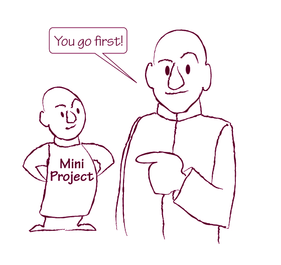
如果你想在转向敏捷开发流程的同时实施实例化需求，这种方法特别有效。
在uSwitch，他们在引入Cucumber（另一个流行的可执行规格说明自动化工具）时采用了这种方法，将现有测试迁移到新工具。这让团队中的每个人都快速获得了使用新工具的经验。Stephen Lloyd说这也向他们展示了可执行规格说明的力量：

我们意识到还有一整层额外的测试需要完成，而在周期末尾进行测试是没有意义的。

一个迷你项目让你有机会在不对正在进行的开发造成太大风险的情况下学习和练习新技能，因此获得批准可能比尝试风险更大的事情要容易得多。
让外部顾问审查结果可能是个好主意。一旦你完成了可以审查的内容，外部顾问将能够提供更有意义的反馈并讨论更好的解决方案。届时，你的团队也已经有机会使用该工具并了解一些基础知识，因此他们将能够理解更高级的技术并从顾问的时间中获得更多价值。

在未预先为自动化测试设计的系统上工作的团队，在开始自动化可执行规格说明时，应该预期生产力实际上会先下降。
即使不学习如何使用新工具，自动化验证最初也会给项目增加显著的开销。自动化是前置负载的——当你开始自动化时，需要完成不成比例的大量工作。这包括创建基本的自动化组件、决定可执行规格说明的最佳格式和与系统集成的最佳方式、解决测试稳定性和专用环境的问题等等。我们在本章和第10章中处理了大部分这些问题，但现在重要的是要理解，当你开始自动化时，生产力会下降。
一旦这些问题得到解决，可执行规格说明的结构稳定下来，我们就可以在处理新规格说明时重用基本的自动化组件。随着项目的成熟，自动化工作量显著下降，生产力大幅提升。
在几个项目中，开发人员在估算实现一个故事所需的工作量时没有考虑到这一点。但当自动化刚刚开始时，自动化一个可执行规格说明可能比在生产代码中实现所需的更改需要更多的工作量。
确保提前规划生产力下降。团队应该少承诺范围，以便在一个迭代内完成自动化。
除非做好这个规划，否则自动化将会延续到下一个迭代并打断工作流程。这是Pyxis Technologies的Talia产品总监André Brissette学到的关键教训之一：

如果让我重新来过，从一开始我会更明确地要求编写测试（可执行规格说明）。我知道让团队编写这类测试是一个挑战，所以我很有耐心。另外，我本可以在冲刺（迭代）中留出更多时间来编写测试。我们开始工作后，我会谈到可执行规格说明，团队就会说：“我们真的没有时间来学习这些，因为这个冲刺的任务已经很满了。”事实上，他们任务满的原因之一是我在冲刺中安排了太多功能。因此，进展缓慢，经过很多次迭代才有了一套像样的规格说明。
也许在一开始就打破这堵墙、决定少做一些功能会更有回报。这是我下次会做的选择。当你把这种实践的整合分散到很长时间里，你承担了成本却没有获得收益。最终会变得更加昂贵。

确保初始自动化工作得到规划的一个想法是：将自动化工具包视为一个独立的产品，有自己的待办事项列表，然后将团队一定比例的时间投入到该产品上。需要说明的是，主产品和自动化框架仍应由同一个团队开发和交付，以确保团队后续熟悉自动化工作。我建议将其视为独立产品，纯粹是为了限制对主要工作交付的影响。

由于自动化的开销，一些团队推迟了它。他们用示例描述规格说明，然后编写代码，把自动化留到以后。这似乎与开发团队和测试自动化团队分离的项目有关，或者与外部顾问负责自动化测试的情况有关。这导致了大量的返工和混乱。
开发人员在没有客观的自动化标准的情况下就将用户故事标记为完成。当验收测试最终实现自动化时，问题往往会暴露出来，故事不得不被退回修复。
当自动化与实现同步进行时，开发人员必须设计系统使其可测试。当自动化被委派给测试人员或顾问时，开发人员不会注意以易于验证的方式实现系统。这导致自动化成本更高、难度更大。它还会导致测试滑入下一个迭代，当问题返回时会打断工作流程。

与其因为开销而推迟可执行规格说明的自动化，不如解决自动化问题，使这项任务以后更容易完成。
推迟自动化只是局部优化。从最初的开发角度来看，你可能会更快地完成故事，但它们以后会回来需要修复。David Evans 经常用城市公交车的类比来说明这一点：如果公交车不用停下来接乘客，它可以开得更快，但那样它就没有真正履行职责。

在起步阶段，从现有的手动测试脚本创建可执行规格说明似乎是合乎逻辑的做法。这些脚本已经描述了系统的功能，测试人员无论如何都在运行它们，所以自动化肯定会有帮助，对吧？并非如此——事实上，这是最常见的失败模式之一。
手动检查和自动化检查受到完全不同的约束影响。准备上下文所花费的时间通常是手动测试的关键瓶颈。而在自动化测试中，人们花费最多时间的是在测试失败时试图理解哪里出了问题。
例如，为了准备一个检查用户账户管理规则的测试脚本，测试人员可能需要登录管理应用程序、创建用户、以新用户身份登录客户端应用程序，并在首次使用后更改密码。为了避免在测试期间多次执行此操作，测试人员会为多个手动脚本重用上下文。因此，她会创建一次用户，锁定该账户并验证用户无法登录，重置密码以验证账户已重新启用，然后设置一些用户偏好并验证它们是否正确更改了主页。这种方法帮助测试人员更快地完成脚本。
在自动化测试中，设置用户所花费的时间不再是问题。自动化测试通常比手动测试覆盖更多的用例。当它们正确运行时，没有人真正在看它们。一旦自动化测试失败，就需要有人去弄清楚出了什么问题。如果测试被描述为一系列相互依赖的步骤，就很难理解究竟是什么导致了问题，因为上下文在整个脚本中不断变化。
一个检查10个不同事项的单一脚本比一个更小更
更聚焦的测试，因为它会受到许多不同代码区域的影响。在之前用户账户管理的例子中，如果密码重置功能停止工作，我们将无法正确设置用户偏好。结果是主页变更的检查也会失败。如果我们有10个不同的、更小的、聚焦的、独立的测试，而不是一个大脚本，密码重置功能中的bug就不会影响用户偏好的测试结果。这使测试对变更更具弹性，并降低维护成本。它还帮助我们更快地定位问题。

不要简单地自动化手动测试脚本，而是思考脚本正在测试什么，并用一组独立的、聚焦的测试来描述它。这将显著减少自动化开销和维护成本。

适用场景：团队成员对可执行规格说明持怀疑态度
许多用于自动化可执行规格说明的工具允许我们在用户界面之下与软件集成。这降低了维护成本，使自动化更容易实现，并提供更快的反馈（参见本章后面的”在应用程序表层之下自动化”部分）。
但业务用户和测试人员最初可能不信任这种自动化。如果不能亲眼看到屏幕在移动，他们就不相信正确的代码实际上正在被执行。

当你开始使用实例化需求(Specification by Example)时，如果你的团队成员对自动化有疑虑，可以尝试通过用户界面执行规格说明。注意，你不应该改变规格说明来描述用户界面交互，但你可以在自动化层中隐藏这些活动。
让业务用户信任可执行规格说明是挪威奶牛群记录系统项目的关键挑战之一。Bekk Consulting的经理Børge Lotre参与了该项目，他说他们随着可执行规格说明中检查数量的增加逐渐建立了信任：

他们（业务用户）过去坚持在Cucumber之外进行手动测试。我认为他们正在看到Cucumber测试的价值，因为每次我们添加新功能时，他们无法手动测试旧需求。

可执行规格说明通常只应作为最后手段通过用户界面自动化，因为用户界面自动化会减慢反馈速度，并显著增加自动化层的复杂性。另一方面，通过用户界面执行自动化规格说明可能是最初从非技术用户那里获得信任的好方案。使自动化层保持灵活，以便你以后可以切换到在应用程序表层之下集成。
当处理没有干净集成API的遗留系统时，通过用户界面运行可执行规格说明也是一个好选择（在这种情况下，自动化测试的唯一方法是端到端，从前端用户界面开始，并在数据库中或再次使用用户界面验证结果）。在这种情况下，使自动化层保持灵活也是个好主意，因为一旦架构变得更可测试，你可能会想把它移到用户界面之下。
除了获得信任之外，允许人们在自动化测试期间看到应用程序屏幕有时可以帮助他们想到额外的示例。
根据我的经验以及本书的许多案例研究，通过用户界面执行测试的扩展性不好。一旦获得利益相关者的信任，你可能会想减少通过UI执行的测试数量。
如果你决定通过用户界面自动化规格说明，请应用本章后面”自动化用户界面”部分描述的想法，以充分利用它，并确保在需要时能够将自动化移到用户界面之下。
控制活文档系统的维护成本是我采访的团队长期面临的最大挑战之一。其中一个重要因素是有效管理自动化。
在本节中，我介绍了团队用来降低自动化层长期维护成本的一些好想法。本节的建议适用于你选择的任何自动化工具。

团队犯的最常见错误之一是把规格说明或相关自动化代码视为不如生产代码重要。例如，把自动化任务交给能力较弱的开发人员和测试人员，以及不像维护生产代码那样努力维护自动化层。
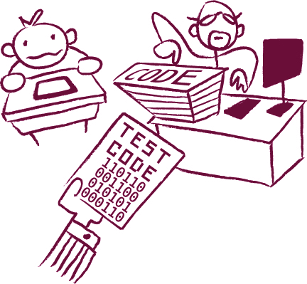
在许多情况下，这源于一种误解，认为实例化需求(Specification by Example)只是关于功能测试自动化（因此有敏捷验收测试(agile acceptance testing)和验收测试驱动开发(Acceptance Test-Driven Development)这些别名），开发人员认为测试代码没那么重要。
Wes Williams说这让他想起了他早期使用单元测试工具的经历：

我想这和编写JUnit的学习曲线类似。我们开始用JUnit测试做同样的事情，然后每个人都开始说，“嘿伙计们，JUnit是代码；它应该是干净的。”你遇到了可维护性问题
如果不这样做就会出问题。我们学到的下一件事是测试

页面（可执行规格说明）本身就是”代码”。
Phil Cowans 将此列为他的团队在 Songkick 实施实例化需求（Specification by Example）早期犯下的最大错误之一。他补充道：

你的测试套件是代码的一等公民，需要像应用程序的常规代码一样进行维护。我现在认为验收测试是一等公民，而生产代码本身反而不是一等公民。测试是对应用程序功能的规范描述。最终，成功更多在于构建正确的东西，而不是构建得好。如果测试是你对代码功能的描述，它们不仅是开发过程中非常重要的部分，也是构建产品、理解你所构建的内容以及控制复杂性的非常重要的部分。我们大概花了一年时间才意识到这一点。

Clare McLennan 说，让最有能力的人来设计和构建自动化层至关重要：

前几天我回去时，另一位开发人员说，测试集成框架的设计几乎比实际产品的设计更重要。换句话说，测试框架需要有和实际产品一样好的设计，因为它需要可维护。测试系统成功的部分原因是我了解其结构并且能读懂代码。
项目中通常发生的情况是，他们让初级程序员来编写测试和测试系统。然而，自动化测试系统很难做好。初级程序员往往会选择错误的近似方案，构建出不太可靠的东西。让你最好的架构师来做这件事。他们有权说：如果我们在设计中改变这一点，测试会变得更好、更容易。

我不会说自动化代码比生产代码更重要。归根结底，软件的构建是因为生产代码将帮助实现某些业务目标。世界上最好的自动化框架也无法在没有良好生产代码的情况下使项目成功。

带有示例的规格说明——那些最终进入活文档的——比生产代码存活得更久。当完全用更好的技术重写生产代码时，一个好的活文档系统至关重要。它将比任何代码都长寿。

大多数用于自动化可执行规格说明的工具使用纯文本或 HTML 格式的规格说明。这允许我们在不重新编译或重新部署任何编程语言代码的情况下更改规格说明。另一方面，自动化层是编程语言代码，如果我们更改它，需要重新编译和重新部署。
许多团队试图使自动化层通用化，以避免频繁更改。他们只在自动化层中创建低级可重用组件，如 UI 自动化命令，然后用这些命令编写验证过程脚本，如网站工作流。这个问题的一个明显迹象是规格说明中包含用户界面概念（如点击链接或打开窗口），或者更糟糕的是，包含低级自动化命令如 Selenium 操作。
例如，Ultimate Software 的全球人才管理团队在某个时候决定将所有工作流从自动化层推到测试规格说明中。他们使用了一个名为 SWAT 的定制开源 UI 自动化工具，因此他们直接将 SWAT 命令作为夹具（fixture）暴露出来。他们将 SWAT 命令组合成有意义的领域工作流用于规格说明。根据 Scott Berger 和 Maykel Suarez 的说法，这种方法起初使编写规格说明更容易，但后来导致了许多维护问题：

有一个中央团队维护 SWAT 并编写宏。在某个时候，维护变得不可能了。我们使用基于宏的宏。这使得重构测试变得困难，简直是噩梦。一个给定的测试上下文会是一个可折叠区域，但如果你展开它，它会非常庞大。我们转向在夹具中实现工作流。对于每个页面规格说明，我们背后都有一个夹具。


与其在规格说明中描述验证过程，我们应该在自动化层中捕获它们。由此产生的规格说明将更加聚焦且更易于理解。
在自动化层中描述验证过程（我们如何测试某些东西，而不是测试什么）使该层更复杂、更难维护，但 IDE 等编程工具使这项任务更容易。当 Berger 的团队将工作流描述为纯文本规格说明中的可重用组件时，他们实际上是在没有任何开发工具支持的情况下用纯文本编程。
我们可以使用编程工具比纯文本描述更高效地维护验证过程的实现。我们还可以更容易地为其他相关规格说明重用自动化验证过程。有关此主题的更多信息，请参阅本章后面的侧边栏”用户界面自动化的三个层次”。

在自动化层中模拟应用程序业务流程或逻辑的部分内容

可以使测试更容易自动化，但会使自动化层更加复杂且难以维护。更糟糕的是，这会使测试结果变得不可靠。
真正的生产流程可能存在自动化层中未能复现的问题。依赖该流程的示例在真实系统上执行时会失败，但自动化测试却会通过，给团队带来一切正常的虚假保证。
这是 Iowa Student Loan 的 Tim Andersen 最重要的早期经验之一：

我们没有通过测试辅助代码创建虚假贷款，而是修改了测试代码，利用我们的应用程序将贷款设置为有效状态。一旦我们的测试抽象层使用角色来调用应用程序，我们就能够删除近三分之一的测试代码（自动化层）。这里的教训是不要伪造状态；虚构状态容易产生缺陷且维护成本更高。使用真实系统来创建状态。我们有一批测试失败了。我们检查后发现，使用这种新方法，现有测试暴露了缺陷。

在遗留系统中，在自动化中使用生产代码有时会导致非常糟糕的变通方案。例如，我的一个客户扩展了一个将业务逻辑与用户界面代码混合在一起的第三方产品，但我们对此无能为力。我的客户对第三方组件的源代码只有只读访问权限。最初有人将第三方功能的部分代码复制粘贴到测试夹具（test fixtures）中，移除了所有用户界面绑定。当第三方供应商更新他们的类时，这导致了问题。
我重写了这些夹具，初始化第三方窗口类，并使用反射（reflection）访问私有变量来运行真实的业务工作流。我在开发生产代码时绝不会这样做，但这是两害相权取其轻。我们删除了90%的夹具代码，偶尔需要在第三方提供商更改私有变量使用方式时修复自动化，但这比一直复制和修改大量代码要省事得多。这也使测试变得可靠。

沿系统边界自动化
适用场景：复杂集成

如果你在一个复杂的异构系统上工作，了解你的职责边界在哪里很重要。沿着这些边界指定和自动化测试。

对于复杂的异构系统，在自动化测试中包含整个端到端流程可能很困难甚至不可能。当我采访 Rob Park 时，他的团队正在进行与一个将语音转换为数据的外部系统的集成。为每个自动化用例走完整个流程是不切实际的，如果不是不可能的话。但他们并不是在开发语音识别，只是在与这样一个系统集成。
他们的职责在于语音消息转换为数据后会发生什么。Park 说他们决定隔离系统并提供一个替代输入路径，使自动化更容易：

现在我们正在为交互式语音应答（IVR）编写一个功能。保单号和身份信息会自动从 IVR 系统传输到应用程序，因此屏幕会预先填充好。在第一次三方会议（Three Amigos）对话后，显然需要有一个测试页面来准备 IVR 发送的数据。

Park 的团队没有端到端地自动化这些示例（包括外部系统），而是将外部输入与他们的系统解耦，并为他们负责的系统部分自动化验证。这使他们能够使用可执行规格说明验证所有重要的业务规则。
业务用户自然会端到端地思考验收。不包含外部系统的自动化测试不会给他们功能完全正常工作的信心。这应该由单独的技术集成测试来处理。在这种情况下，播放一个简单的预录消息并检查它是否完全通过就可以了。该测试将验证所有组件是否正确地相互通信。因为所有业务规则都是单独指定和测试的，我们不需要为所有重要用例运行高级集成测试。
有关如何处理大型复杂基础设施的更多技巧，请参阅下一章。

不要通过用户界面检查业务逻辑
传统的测试自动化工具主要通过操作用户界面对象来工作。大多数可执行规格说明的自动化工具可以绑过用户界面，直接与应用程序编程接口通信。

除非通过用户界面端到端运行自动化规格说明是获得功能信心的唯一方式，否则不要这样做。
用户界面自动化通常要慢得多，维护成本也高得多。虽然有时需要可见的用户界面自动化来获得信任（如本章前面所述），但只要可能，绑过用户界面通常是验证业务逻辑的更好解决方案。

在应用程序表层之下自动化
适用场景：检查会话和工作流约束
工作流和会话规则通常只能针对用户界面层进行检查。但这并不意味着自动化这些检查的唯一选择是启动浏览器。许多开发Web应用的团队没有通过浏览器自动化规格说明，而是直接深入到应用的表层之下——HTTP层，从而节省了大量时间和精力。Tim Andersen解释了这种方法：
我们会发送一个看起来很像HTTP请求的哈希映射(hash-map)。我们有默认值，这些值会被测试中重要的内容覆盖，我们基本上是在HTTP请求到达的地方进行测试。这就是我们的角色[测试夹具(fixtures)]的工作方式，通过对象发出HTTP请求。这就是它们使用真实状态和真实对象的方式。


不运行浏览器可以让自动化检查并行执行，运行速度更快。Christian Hassa使用了类似的方法，但更深入了一层，直接到应用内部的Web控制器。这避免了HTTP调用，使反馈更加快速。他解释了这种方法：

我们将[规格说明的]部分直接绑定到使用Selenium的UI，但其他部分直接绑定到MVC控制器。直接绑定到UI的开销很大，我认为这不是这项技术的主要价值。如果让我选择将所有规格说明绑定到控制器，还是将有限的规格说明绑定到UI，我总是会选择将所有规格说明执行到控制器。对我来说，绑定到UI是可选的；不绑定所有与系统相关的规格说明则不是一个选项。而且绑定到UI的成本要高得多。

在应用表层之下进行自动化是重用真实业务流程并避免自动化层重复的好方法。直接使用HTTP调用执行检查——而不是通过浏览器——可以显著加快验证速度，并使并行运行检查成为可能。

浏览器自动化库通常很慢且会锁定用户配置文件，因此在单台机器上任何时候只能运行一个这样的检查。有许多用于
直接HTTP自动化的工具和库，如WebRat、Twill和Selenium 2.0 HtmlUnit驱动程序。许多现代MVC框架允许在HTTP层之下进行自动化，使这类检查更加高效。这些工具允许我们并行、更快、更可靠地执行测试，因为它们比浏览器自动化的活动部件更少。
在《弥合沟通鸿沟》(Bridging the Communication Gap)一书中，我建议自动化所有规格说明。在为本书准备期间与许多不同团队交流后，我现在知道有些情况下自动化不会带来回报。Gaspar Nagy给了我两个很好的例子：
如果自动化成本相对于该验收标准的收益过高——例如，在可排序网格中显示。用户界面控件[小部件(widget)]将开箱即用地支持排序。要检查数据是否真的排序，你需要大量测试数据边界情况。这最好留给快速的手动检查。
我们的应用还需要离线功能。非常特殊的离线边界情况可能很难自动化，手动测试可能就足够了。
在这两种情况下，快速的手动检查可以给团队一个客户可接受的系统信心水平。自动化的成本将远超其长期节省的时间。
检查布局示例在大多数情况下是自动化的糟糕选择。技术上可以自动化它们，但对许多团队来说，收益不足以证明成本的合理性。自动化参考可用性示例（如第7章”构建参考示例”部分建议的那些）实际上是不可能的。可用性和趣味性需要人眼和主观测量。其他可能不值得自动化的检查的好例子包括直观性，或断言某物看起来有多好或使用起来有多容易。这并不意味着这些示例不值得讨论、用示例说明或存储在规格说明系统中；恰恰相反。讨论示例将确保每个人都有相同的理解，但我们可以更有效地手动检查结果。
尽可能多地自动化这些功能周围的内容，可以帮助我们将手动检查集中在初始自动化或长期维护成本高昂的极少数方面。
虽然在讨论用户界面时我主要以Web应用为例，但同样的建议也适用于其他类型的用户界面。在应用表层之下进行自动化允许我们验证工作流和会话约束，但与通过用户界面运行测试相比仍能缩短反馈时间。在了解了一般自动化管理之后，是时候讨论两个给许多团队带来自动化问题的特定领域：用户界面和数据管理。
在自动化方面，处理用户界面是本研究中团队在实例化需求(Specification by Example)实践中遇到的最具挑战性的问题。几乎所有我采访过的团队在早期都犯了同样的错误。他们将需要通过用户界面自动化的测试规范编写成一系列技术步骤，通常直接在规范中编写用户界面自动化命令。
用户界面自动化库使用的是屏幕对象的语言，本质上是软件设计语言。直接用这种语言描述规范与精炼规范的核心理念相矛盾（参见第8章”脚本不是规范”和”规范应该关注业务功能，而非软件设计”部分）。除了使规范难以理解之外，这还使得自动化测试在长期维护中变得极其困难。Pierre Veragen所在的团队在用户界面发生小改动后不得不丢弃所有测试：

用户界面测试是面向任务的（点击、指向），因此与GUI实现紧密耦合，而不是面向活动的。测试中存在大量重复。FitNesse测试是按照UI的设置方式组织的。当UI更新时，所有这些测试都必须更新。从概念到技术的转换发生了变化。GUI的一个小改动——添加一个功能区控件——就破坏了一切。我们根本无法更新这些测试。

他们之前在测试上的投入都白费了，因为丢弃所有测试比更新它们更容易。团队决定投入精力重构应用程序架构，以便更容易进行测试。
如果你决定通过用户界面自动化验证某些规范，那么高效管理自动化层可能会成为团队的关键活动之一。以下是一些关于如何通过用户界面自动化测试同时保持易于维护的好建议。
在更高的抽象层次上指定用户界面功能
将业务语言到用户界面对象语言的转换推入自动化层，有助于避免长期维护问题。这本质上意味着在更高的抽象层次上指定用户界面测试。Aslak Hellesøy说这是他早期学到的关键经验之一：
我们意识到，如果能在更高层次上编写测试，就能获得很多好处。这使我们能够在不修改大量功能脚本的情况下更改实现。测试更容易阅读，因为它们更短。我们有数百个这样的测试，只需浏览一下就能更容易地看到各个部分在哪里。它们对变化的适应性更强。
Lance Walton有类似的经历，这促使他在集成层创建了代表用户界面屏幕操作的类，然后将抽象层次提升到工作流，最终提升到更高层次的活动。他解释道：


我们经历了可预见的过程：以”输入这个，点击这个按钮”的风格编写测试，测试之间有大量重复。我们有重构的本能，意识到需要一个屏幕的表示。我非常认同早期XP规则：如果你有一个有意义的小表达式，就把它重构成一个方法并给它命名。可以预见的是，每个测试都需要登录，这应该是可复用的。我不太清楚该怎么做，但我知道这会发生。所以我们想出了屏幕类。
接下来要意识到的是，我们不断经历相同的页面序列——这是一个工作流。下一阶段是理解工作流仍然与我们设计的解决方案有关，所以实际上让我们忘掉工作流，专注于用户试图实现的目标。所以我们有了包含细节的页面，然后在其上有任务层，再上面有整个工作流，最后有用户试图实现的目标。当我们达到那个层次时，测试可以非常快速地组合，而且它们对变化具有健壮性。

重组自动化层来处理活动——并将测试聚焦于规范而非脚本——显著降低了自动化测试的维护成本。

早期你必须登录才能看到任何内容。后来有一个想法是，你可以在登录前看到很多内容，只有当你点击链接时才会被要求登录。如果你有很多在开始时登录的测试，第一个问题是，在你移除登录步骤之前，所有测试都会失败。但你必须在点击链接后登录，所以很多测试会因此失败。如果你已经将其抽象出来，你的测试以特定人员身份登录这一事实并不意味着它立即执行——你只是存储该信息并在被要求登录时使用它。
测试可以顺畅地进行。当然，你需要额外的测试来检查何时需要登录，但这是另一个关注点。所有关于测试用户是否能实现其目标的测试
即使有这样相当大的变化，测试仍然是健壮的。令我惊讶和印象深刻的是，我们能够如此轻松地进行这种更改。我真正开始看到我们控制这些东西的能力。

用户必须登录才能执行特定操作这一事实，与填写登录表单、提交表单和登录的实际活动是分离的。自动化层决定何时在工作流中执行该操作（以及是否需要执行）。这使得基于规格说明的测试对变化更具弹性。它还提高了用户界面操作的抽象级别，使读者更容易理解整个规格说明。

从更高的抽象级别指定用户界面功能，可以让团队避免业务概念和用户界面概念之间的转换。这也使验收测试更容易理解，对变化更具弹性，从而降低长期维护成本。
有关如何组织UI测试自动化以保留细化规格说明的所有好处并降低长期维护成本的想法，请参阅本章后面的”用户界面自动化的三个层次”侧边栏。

适用场景：用户界面包含复杂逻辑

如果你的可执行规格说明被描述为与用户界面元素的交互，那么只指定用户界面功能。

我看到的唯一一个在较低技术层面描述的测试后来没有造成巨大维护问题的例子，来自伦敦巴黎银行的Sierra团队。他们有一套被描述为与用户界面元素交互的可执行规格说明。这个案例与所有其他导致头痛的故事之间的区别在于，Sierra团队只指定用户界面功能，而不是底层的领域业务逻辑。例如，他们的测试检查必填表单字段和用JavaScript实现的功能。他们所有的业务逻辑规格说明都在用户界面之下自动化。
提高抽象级别肯定会使这些测试更容易阅读和维护。另一方面，这会使自动化层变得相当复杂。因为他们的这类测试相对较少，创建和维护一个智能自动化层可能比在用户界面更改时直接修改脚本花费更多时间。同样重要的是要理解，他们维护的是后台用户界面，其布局不像面向公众的网站那样频繁变化，在那里用户界面是一个展示窗口。
许多传统的测试自动化工具提供录制-回放用户界面自动化。虽然这对于初始自动化听起来很有吸引力，但录制-回放对于实例化规格说明(Specification by Example)来说是一个糟糕的选择。这是可执行规格说明的自动化与传统自动化回归测试有很大不同的领域之一。

如果可以的话，避免录制用户界面自动化。除了几乎不可能理解之外，录制的脚本难以维护。它们降低了创建脚本的成本，但显著增加了维护成本。
Pierre Veragen的团队有70,000行录制的用户界面回归测试脚本。为了跟上重大的用户界面变化，几个人花了六个月时间重新录制它们。如此缓慢的反馈将完全抵消可执行规格说明的任何好处。此外，录制-回放自动化需要用户界面已经存在，但实例化规格说明在我们开发软件之前就开始了。
一些团队起初不理解传统回归测试和实例化规格说明之间的这种差异，并尝试使用录制-回放工具。Christian Hassa的故事是一个典型的例子：

测试仍然太脆弱，维护它们有很大的开销。Selenium测试是录制的，所以它们来得也太晚了。我们试图抽象录制以使其更可重用、更不脆弱。

最终，仍然是测试人员必须自己想出如何测试的方法。我们很晚才发现测试人员是如何解释用户期望的。其次，我们准备测试的时间仍然太晚。实际上这让事情变得更糟，因为我们必须维护所有这些。六个月后，我们使用的脚本不再可维护。
我们使用这种方法几个月，并试图改进实践，但它确实不起作用，所以我们在项目结束时放弃了它。我们编写的测试不是按照我们现在的方式构建的，而是按照传统测试人员构建测试的方式——大量的前置条件，然后是一些断言，要做的事情是下一个测试的前置条件。
要编写通过用户界面自动化的可执行规格说明，考虑在以下三个层次描述规格说明和自动化：
在更高的活动层级上？例如：将两本书放入购物车，输入地址详情，验证配送选项包含免费配送。
规格说明应该在业务规则层级描述。自动化层应该通过组合在技术活动层级构建的模块来处理工作流层级。这样的测试将易于理解、编写高效，且维护成本相对较低。
关于UI测试三个层级的更多信息，请参阅我的文章”如何实现UI测试而不搬起石头砸自己的脚”。
http://gojko.net/2010/04/13/how-to-implement-ui-testing-without-shooting-yourself-in-the-foot-2


即使自动化可执行规格说明的唯一方式是通过用户界面，许多团队发现他们可以通过直接在数据库中准备上下文来显著加快测试执行速度。
例如，当自动化描述编辑如何审批文章的规格说明时，我们可以使用数据库调用预先创建文章。如果你使用三层架构（如前面边栏所述），工作流层的某些部分可以通过用户界面实现，某些部分可以优化为使用领域API或数据库调用。Ultimate Software的全球人才管理团队使用这种方法，但分工方式使测试人员仍能高效参与。Scott Berger解释道：

理想情况下，开发人员会编写并自动化快乐路径（Happy Path），使用这层数据库自动化来设置数据。然后测试人员会接手并扩展更多用例。

通过尽早自动化整个路径，开发人员利用他们关于如何优化测试的知识。一旦第一个示例被自动化，测试人员和分析师就可以通过在业务规则层级添加更多示例来轻松扩展规格说明。
在数据库中设置上下文引出了我研究中团队在自动化可执行规格说明时面临的第二大挑战：数据管理。一些团队将数据库纳入持续验证流程，以获得对系统更多的信心，或者因为他们的领域是数据驱动的。这为自动化带来了一系列新挑战。
为了使可执行规格说明聚焦且不言自明，规格说明需要包含所有对用示例说明功能重要的数据，但省略任何额外信息。但要针对使用数据库的系统完全自动化这些示例，我们通常需要额外数据，因为存在引用完整性检查。
依赖数据库中存储数据的自动化测试的另一个问题是，一个测试可能会更改另一个测试所需的数据，使测试结果不可靠。另一方面，为了获得快速反馈，我们不能为每个测试都删除并恢复整个数据库。
高效管理测试数据对于从数据驱动系统获得信心、使持续验证流程快速、可重复且可靠至关重要。在本节中，我将介绍我采访的团队用于管理可执行规格说明测试数据的一些良好实践。

适用场景：指定非数据驱动的逻辑

重用现有数据会使规格说明更难理解。
当可执行规格说明被自动化以使用数据库时，数据库中的数据成为自动化上下文的一部分。一些团队没有自动化如何在测试前将上下文信息放入数据库，而是重用了符合目的的现有数据。这使得自动化规格说明更容易，但使它们更难理解。任何阅读此类规格说明的人还必须理解数据库中的数据。Channing Walton建议不要这样做：

通过预填充标准基线数据集来设置数据库几乎总是会带来很多痛苦。数据是什么、为什么存在、用于什么目的都变得难以理解。当测试失败时，很难知道原因。由于数据是共享的，测试会相互影响。人们很快就会感到困惑。这是一种过早优化。编写测试时应该与数据无关。

如果系统设计为不需要大量引用数据设置，那么规格说明可以通过仅定义最小的上下文信息集来自动化。从另一个角度看，实例化需求（Specification by Example）指导团队设计具有低耦合的聚焦组件，这是最重要的面向对象设计原则之一。但对于遗留的数据驱动系统来说，这并不容易做到。

适用场景：数据驱动系统
为数据驱动系统定义完整上下文是困难且容易出错的。从编写聚焦规格说明的角度来看，这可能不是最佳做法。Gaspar Nagy的团队尝试过这样做，发现规格说明变得难以阅读和维护：

我们有一个验收测试，需要在数据库中设置一些数据来执行某个步骤。当我们编写这个设置描述时，它看起来就像一个数据库。虽然我们没有在文本中说”表”，但它们就是表。开发人员能够很好地理解，但你无法把这个展示给业务人员看。
例如，我们有一个国家表。我们不想在测试自动化中硬编码任何关于国家的逻辑，所以对于每个测试，我们都定义了与该测试相关的国家。这后来证明是完全愚蠢的，因为我们总是使用匈牙利和法国。我们本可以用一句”假设系统中有默认国家”就把世界上所有国家加载到数据库中。拥有一个默认数据集会很有帮助。

Marco Milone在新媒体行业的一个项目中遇到了类似的问题：

一开始，为了让测试能够运行，我们做得并不好。设置和清理都在测试中，它们非常混乱。我们开始集中管理数据库设置，并在此基础上强制执行变更控制。测试只做检查；我们不再费心在测试中输入数据。这使得测试更快，也更容易阅读和管理。

在数据驱动系统中，从头创建所有内容不是一个好主意。另一方面，隐藏信息也会导致大量问题。一个可能的解决方案是Iowa Student Loan团队实施的策略。他们只预填充不会改变的引用数据。Tim Andersen解释了这种方法：

我们在构建过程中”清空并重建”数据库。然后用配置和领域测试数据填充它。每个测试负责创建和清理事务数据。


使用预填充的引用数据是一个很好的策略，可以使测试规格说明更短、更容易理解，同时加快反馈速度并简化自动化层。
如果你决定使用预填充的引用数据，请参阅第10章中的”对引用数据运行快速检查”部分，了解如何使测试更可靠。

适用场景：遗留数据驱动系统
有些领域非常复杂，即使有预填充的引用数据，从头设置一个新对象也是一项复杂且容易出错的任务。如果你在一个全新项目中遇到这种情况，而领域模型在你的控制之下，这可能表明领域模型是错误的（参见第11章中的”倾听你的活文档”部分）。
在遗留数据驱动系统中，更改模型可能不是一个选项。在这种情况下，自动化层可以克隆一个现有对象并更改相关属性，而不是从头创建一个全新的对象。Børge Lotre和Mikael Vik在挪威乳牛群记录系统中使用了这种方法。他们说：

由于领域的复杂性，获取尽可能完整的测试背景是一个挑战。如果我们测试一头牛的行为，而忘记定义一个她有三头小牛的测试用例，我们就看不到代码失败，直到在真实数据上手动测试时才发现错误。所以我们创建了一个背景生成器，你可以识别一头真实的牛，它会从数据库中提取她的属性。然后这些属性被用作新Cucumber测试的基础。这不仅在我们想要重现错误时很有用，而且在我们开始处理新需求时也是真正的帮助。

当Bekk团队发现缺失的测试用例时，他们会在真实数据库中找到一个好的代表性示例，并使用”背景生成器”来设置一个使用其属性的自动化验收测试。这确保了复杂对象具有所有相关细节和对相关对象的引用，使验证检查更加相关。为了从可执行规格说明中获得更快的反馈，背景生成器会提取对象的完整上下文，这使得测试可以针对内存数据库运行。

在数据库中找到一个代表性示例，并使用这些属性来设置测试。
当这种方法用于动态创建对象而不是为测试创建上下文时（结合真实数据库），它还可以简化可执行规格说明中相关实体所需的设置。我们可以只指定那些对定位好原型重要的属性，而不是指定对象的所有属性。这使得规格说明更容易理解。
在不修改规格说明的情况下自动化验证，从概念上来说
这与传统的测试自动化不同，这也是为什么许多团队在开始实践实例化需求(Specification by Example)时会遇到困难。我们自动化规格说明是为了获得快速反馈，但我们的主要目标应该是创建易于访问且人类可读的可执行规格说明，而不仅仅是自动化验证过程。一旦我们的规格说明变得可执行，我们就可以频繁验证它们，从而构建一个活文档系统。我们将在接下来的两章中介绍这些概念。
要点回顾
偏离车道太远，你的注意力会立即被响亮的、震动的”咚咚咚”声所吸引。 —— David Haldane
20世纪50年代，加州交通部遇到了高速公路车道标线的问题。标线会磨损，每个季度都需要有人重新涂刷。这不仅成本高昂，还会造成交通中断，对负责这项工作的人员来说也很危险。
Elbert Dysart Botts博士致力于解决这个问题，他尝试了反光性更强的涂料，但这条路走不通。跳出固有思维后，他发明了凸起的车道标记，称为博茨点(Botts’ Dots)。博茨点无论白天黑夜、无论天气如何都清晰可见。它们不像涂刷的车道标线那样容易磨损。博茨点不仅依靠驾驶员的视觉，当驾驶员越过指定行驶车道时，还会产生触觉振动和可听见的隆隆声。这种反馈被证明是高速公路上最重要的安全特性之一，当注意力不集中的驾驶员偏离车道时，它会提醒他们注意潜在危险。
博茨点作为最初12个极限编程(Extreme Programming)实践之一被引入软件开发领域，称为持续集成(CI, Continuous Integration)。持续集成会在注意力不集中的软件团队开始偏离可构建和打包的产品时发出警报。专用的持续集成系统会频繁构建产品并运行测试，以确保系统不仅仅在开发人员的机器上能工作。通过快速标记潜在问题，这种实践使我们能够保持在车道中间，并在需要时采取小而廉价的纠正措施。持续集成确保一旦产品被正确构建，它就能保持正确。
同样的原则也适用于构建正确的产品。一旦正确的产品被构建出来，我们希望确保它保持正确。如果它偏离了指定方向，如果我们能快速知道问题并且不让问题累积，我们就能更容易、更廉价地解决问题。我们可以频繁验证可执行规格说明。持续构建服务器可以频繁检查所有规格说明，确保系统仍然满足它们。
持续集成是一个有充分文档记录的软件实践，许多其他作者已经很好地详细解释了它。我不想重复如何设置通用的持续构建和集成系统，但对于本书的主题来说，频繁验证可执行规格说明的一些特定挑战是很重要的。
许多使用实例化需求来扩展现有系统的团队发现，可执行规格说明必须针对具有真实数据的真实数据库、外部服务或完全部署的网站运行。功能验收测试检查跨多个组件的功能，如果系统在构建时没有考虑可测试性，这种检查通常需要整个系统被集成和部署。除了仅使用技术（单元）测试进行持续集成的常见问题外，这还会导致频繁验证的三类问题：
在本章中，我将解释研究中的团队如何处理这三个问题。
不可靠的验证过程会削弱团队对产品和实例化需求(Specification by Example)过程的信心。调查那些并非由真正问题引起的间歇性故障是巨大的时间浪费。如果这种情况经常发生，开发人员就会有借口完全不去关注验证问题。这将导致真正的问题被忽视，从而使持续验证失去意义。
遗留项目很少能轻松支持自动化功能测试，因此可执行规格说明可能需要通过不可靠的用户界面来自动化，或者受到异步进程引起的非确定性(nondeterminism)影响。当开发人员需要被说服参与这个过程，并且只将其视为功能测试的改进（换句话说，不是他们的问题）时，这个问题尤为突出。
Clare McLennan在她的团队中遇到了这个问题。“开发人员不关心测试，因为测试不稳定，但我们需要他们的知识来使测试稳定，”她说。这给她的团队带来了一个先有鸡还是先有蛋的问题。为了让开发人员参与，她必须向他们展示可执行规格说明的价值。但要做到这一点，可执行规格说明必须是可靠的，这需要开发人员改变系统设计，使其更容易接入自动化测试。
为了获得实例化需求的长期收益，许多团队不得不投入大量精力使其验证过程变得可靠。在本节中，我将介绍一些好的方法。

适用场景：在自动化测试支持较差的系统上工作
关于使系统在自动化测试方面更可靠，最重要的一点是这不会一夜之间发生。遗留系统不容易改变；否则，它们就不会是遗留系统了。当某个东西多年来在没有可测试设计的情况下构建时，它不会突然变得干净和可测试。
过快地引入太多重大变更会使系统不稳定，特别是在我们还没有良好的功能测试覆盖率的情况下。这也会严重中断开发流程。

与其试图一次性解决问题，更有用的策略是迭代地进行许多小的改变。

例如，McLennan的团队意识到缓慢的测试数据处理导致了测试问题，这使他们发现一些测试在更新的测试数据处理完成之前就开始了，所以系统提供的是旧数据。他们引入了消息机制来告知何时正在提供数据库中的最新数据，这样他们就可以在那之后可靠地启动测试，避免假阴性。当这个熵源被消除后，他们发现HTTP cookie过期也在造成问题。他们引入了业务时间的概念，这样他们就可以改变系统认为正在使用的时间。（参见本章后面的”引入业务时间”部分。）
作为在自动化测试下实现稳定性的策略，McLennan建议采用增量方法：

找到最烦人的问题并修复它，然后其他问题会冒出来，之后又会有其他问题冒出来。最终，如果你持续这样做，你将创建一个真正有用的稳定系统。

迭代地改进稳定性是在不过多中断交付流程的情况下建立可靠验证过程的好方法。这种方法还使我们能够在使系统更可测试的同时学习和适应。

适用场景：将自动化测试改造到遗留系统中
在不适合自动化测试的遗留系统上，通常很难决定从哪里开始迭代清理，因为不稳定的原因太多了。一个好的策略是查看测试执行历史。今天大多数持续构建系统都有一个跟踪一段时间内测试结果的功能。

一旦可执行规格说明接入持续构建系统，测试运行历史将使我们能够看到哪些测试或测试组最不稳定。
多年来我完全忽视了这个功能，因为我主要在从一开始就构建为可测试的绿地项目(greenfield projects)上工作，或者在相对较小的变更就能引入稳定性的系统上工作。在这样的项目中，跟踪测试执行历史是没用的：测试几乎总是通过，一旦失败就会立即修复。当我第一次尝试将自动化测试改造到一个偶尔会出现超时、网络问题、数据库问题和不一致处理的系统中时，查看测试历史帮助我集中精力提高稳定性。它向我展示了哪些测试组失败最频繁，这样我就可以首先修复它们。


如果你的应用程序需要部署和运行才能进行功能测试，实现可重复性的第一步是确保有一个专用的部署环境。
持续验证必须以可重复的方式工作才能可靠。在一些大型组织中，获取一套新机器比在公司食堂雇用一个已知的投毒者当厨师还难，但争取更好的设备是非常值得的。许多团队试图使用同一个环境来向业务用户演示功能、进行手动测试和持续验证。这经常导致数据一致性问题。
没有专用环境，很难知道测试失败是因为存在bug、是否有人更改了测试环境中的某些内容，还是系统本身不稳定。专用环境可以消除计划外的更改，并降低环境不稳定的风险。

一旦我们有了专用环境，就要确保软件以可重复的方式部署。不可靠的部署是测试结果不稳定的第二大常见原因。对于许多遗留系统，部署是一个通宵进行的过程，需要几个人、大量咖啡，最好还有一根魔杖。当我们每年只需部署一次时，这是可以接受的。当我们每两周就要部署一次时，这就成了一个大麻烦。对于持续验证，我们可能需要每天部署几次，而依赖魔法辅助的手动部署是完全不可接受的。
没有能够可靠升级系统的全自动化部署，我们会经常遇到许多测试突然开始失败的情况，然后有人不得不花几个小时排查问题找出罪魁祸首，结果只听到房间后面传来”但在我的机器上是正常的”这句话。

全自动化部署将确保有一个单一的标准升级流程。它还将确保所有开发人员拥有与测试环境相同的系统布局。
这消除了可执行规格说明对特定环境的依赖，使持续验证更加可靠。它还使问题更容易排查，因为开发人员可以使用任何环境来重现问题。
为了使其有效，必须实现全自动化。不应该需要——或允许——任何手动干预。（请注意，我说的是可以按需执行的全自动化部署，不一定是自动触发的。）需要你在管理控制台中操作的安装程序、半自动化的手动脚本等都不算全自动化。特别是，这包括自动化数据库部署。
我见过许多声称拥有自动化部署的团队，结果发现之后还需要有人手动运行数据库脚本。
全自动化部署还带来其他好处，比如能够更轻松地升级生产系统。从长远来看，这将为你节省大量时间。无论是否采用实例化需求（Specification by Example），频繁部署都是一个好的实践。

适用场景：使用外部参考数据源时
许多团队在外部参考数据源或参与其业务工作流的外部系统方面遇到了问题。（这里的”外部”是指团队范围之外，不一定属于不同的组织。）在具有复杂系统网络的大型企业中，一个团队可能只负责工作流的一部分，其测试系统将与其他团队的测试系统通信。问题是其他团队也要做自己的工作和测试，所以他们的测试服务器可能并不总是可用、可靠或正确的。

创建一个单独的假数据源来模拟与真实系统的交互。
Rob Park在一家美国大型保险公司的团队正在构建一个系统，该系统在外部汽车保单服务器上查找参考保单数据。如果汽车保单服务器宕机，他们所有的可执行规格说明都会开始失败。对于功能测试，他们使用了外部服务的替代版本。这个更简单的版本从本地磁盘上的文件读取数据。
这使Park的团队即使在汽车保单服务器离线时也能测试他们的系统。创建单独的参考数据源还让团队完全控制了参考数据。过期的保单不会被真实系统提供服务，所以依赖于已过期保单的测试会开始失败。
更简单版本的参考数据源从配置文件中提供所有内容，这避免了时间相关的问题。他们将数据保存在一个XML文件中，该文件被检入版本控制系统，这样他们可以轻松跟踪更改，并将正确版本的测试数据与正确版本的代码打包在一起。这对于外部系统是不可能的。从文件读取的本地服务也比外部系统更快，加速了整体反馈。
测试替身（test doubles）的一个风险是真实系统会随时间演进，而替身将不再反映真实的功能。为避免这种情况，请务必定期检查替身是否仍然执行原始系统应该执行的操作。当替身代表的是你无法控制的第三方系统时，这一点尤为重要。

适用场景：外部系统参与工作时
完全隔离系统并不总是好主意。当系统参与更大的工作流程，而外部系统提供的不仅仅是参考数据时，测试替身(test double)就必须开始实现外部系统的部分真实功能。这会带来显著的开发开销和更多的维护问题。
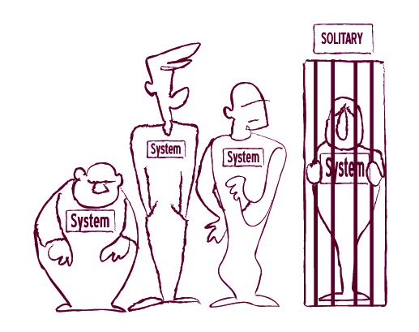
Ian Cooper 在 Beazley 的团队采用了一种有趣的务实方法来解决这个问题。他们根据每个可执行规格说明的目标，选择性地关闭对某些服务的访问。这使得他们的测试显著加快，同时每个测试仍然涉及最少的真实外部系统。这个解决方案并没有完全保护他们免受外部影响，但它使故障排查变得容易得多。如果测试失败，可以清楚地知道哪个外部依赖可能影响了它。

选择性隔离某些外部服务可以使测试更快，故障排查更容易。

适用场景：大型/多站点团队
对于遗留系统，运行所有可执行规格说明所需的时间通常比两次代码提交之间的平均间隔还要长。因此，可能很难将问题与导致它的特定变更关联起来。
对于较大的团队群体，特别是分布在多个站点的团队，这可能导致问题累积。如果一个团队破坏了数据库，其他团队在问题修复之前将无法验证他们的变更。可能需要几个小时才能发现问题、确定问题所在、修复它，然后重新运行测试以确认修复成功。构建失败总是会成为别人的问题，很快持续验证测试包就会一直处于失败状态。到那时，我们还不如直接停止运行测试。

采用多阶段验证。每个团队应该有一个隔离的持续验证环境；变更应该首先在那里测试。
首先将变更与同一团队的其他变更集成。如果测试通过，再将变更推送到中央持续验证环境，在那里与所有其他团队的变更集成。
这种方法在大多数情况下可以防止一个团队的问题影响其他团队。即使中央环境出现故障且有人正在修复，各个团队仍然可以使用自己的环境来验证变更。
根据所有可执行规格说明运行所需的时间，我们可以在两个环境中都执行完整的测试包，或者只在其中一个环境中运行具有代表性的测试子集以提供快速冒烟测试(smoke test)。例如，Ultimate Software 的全球人才管理团队大部分测试只在本地团队环境中运行。较慢的测试不在中央环境中运行，以便提供快速反馈。

适用场景：可执行规格说明修改参考数据时

数据库事务可以提供与外部影响的隔离。
事务可以防止我们的进程影响同时运行的其他进程，并使测试更具可重复性。
如果我们在测试中创建一个用户，下次运行测试时可能会因为数据库中用户名的唯一约束而失败。如果我们在事务中运行该测试并在测试结束时回滚，用户就不会被存储，因此两次测试执行将是独立的。
这在很多情况下是一个好的实践，但它可能不适用于某些事务上下文（例如，如果数据库约束检查被延迟到事务提交时，或者在嵌套自治事务的情况下）。这种高级事务场景需要特别注意。
无论如何，将事务控制保持在规格说明之外。数据库事务控制是一个横切关注点(crosscutting concern)，最好在自动化层实现，而不是在可执行规格说明的描述中。
适用场景：数据驱动系统
在数据驱动系统中，可执行规格说明广泛依赖于参考数据。对参考数据的更改（如工作流配置）可能会破坏测试，即使功能是正确的。这类问题很难排查。
设置一组完全独立的测试来验证参考数据是否仍然符合我们的预期。
这类测试可以在可执行规格说明之前快速运行。如果该测试包失败，就没有必要运行其他测试。这些测试还可以精确定位参考数据问题，使我们能够快速修复。
异步进程似乎是可执行规格说明最棘手的领域之一。即使进程的某些部分在后台执行、在不同的机器上运行或延迟数小时，业务用户仍然将整个进程视为单一的事件序列。在 Songkick，这是成功实施实例化需求(Specification by Example)需要克服的关键挑战之一。Phil Cowans 说：

异步处理对我们来说是一个真正的难题。出于性能原因，我们做了大量异步的后台处理，


我们遇到了很多问题，因为测试是即时执行的。

当测试进入下一步时，后台处理还没有完成。

可靠地验证异步流程需要在自动化层（通常也包括生产系统）中进行一些规划和精心设计。异步系统的一个常见错误是等待特定时间让某事发生。这种情况的典型症状是测试步骤中出现”等待10秒”这样的语句。这样做有几个问题。
即使功能正常工作，但持续验证环境负载较重时，这类测试也可能失败。在不同环境上运行这些测试可能需要更多时间，因此它们变得依赖于特定的环境。
开发人员的机器配置不同，开发人员将无法在自己的系统上使用相同的超时配置来验证更改。许多团队在测试中设置较高的超时时间，以使其对环境变化更具弹性。但这类测试会不必要地延迟反馈。
例如，如果一个测试无条件等待1分钟让进程结束，但实际上只需10秒就完成了，我们就不必要地延迟了50秒的反馈。对于单个测试来说，小的延迟可能不是问题，但在测试包中它们会累积。如果有20个这样的测试，整个测试包的反馈就会延迟超过15分钟，这会产生很大的影响。

等待事件发生，而不是等待固定的时间段。这将使测试更加可靠，并且不会延迟反馈超过必要的时间。
尽可能将此类测试实现为阻塞在消息队列上，或在后台频繁轮询数据库或服务，以检查进程是否已完成。

适用场景：绿地项目（Greenfield projects）
从头开始构建系统时，我们可以选择设计它以支持更容易的测试。根据配置，系统可以将消息排队以在后台处理事务，也可以直接执行。然后我们可以配置持续验证环境以同步运行所有进程。

处理测试稳定性的一个好方法是使异步处理可选。
这种方法使可执行规范运行得更加可靠和快速。但这意味着功能验收测试不会端到端地检查系统。如果你为功能测试关闭了异步处理，请记住编写额外的技术测试来验证异步处理是否正常工作。虽然这听起来像是双倍的工作量，但实际上并非如此。技术测试可以简短且只关注技术执行，而不验证业务功能（这将由功能测试单独检查）。
关于自动化验证异步流程的一些好的技术选项，请参阅《测试驱动的面向对象软件开发》。

适用场景：棕地项目（Brownfield projects）
许多团队，特别是那些使用现有遗留系统的团队，将可执行规范同时用作功能测试和端到端集成测试。这让他们对软件整体正常工作更有信心，但使反馈变得更慢，并显著增加了测试的维护成本。
这种方法的问题在于同时测试了太多东西。这种端到端测试检查流程的业务逻辑、与技术基础设施的集成，以及所有组件是否能相互通信。太多的活动部件意味着其中任何一个的变化都会破坏测试。这也意味着我们必须端到端地运行整个流程来验证每一个用例，即使我们可能只需要在流程的一部分中检查我们想要的内容。

不要用一个大的可执行规范同时测试太多东西。
大多数异步流程由几个步骤组成，每个步骤都有一些业务逻辑，需要使用可执行规范来定义。它们中的大多数还包括纯技术任务，例如分发到队列或保存到数据库。与其用一个执行时间很长的大规范来检查所有内容，不如在实现此类流程时考虑以下几点：
将业务逻辑与基础设施代码明确分离（例如，推送到队列、写入数据库）。
分别规范和测试每个步骤中的业务逻辑，可能隔离基础设施，如本章前面所述。这使得编写和执行测试变得更加容易。测试可以同步运行，不需要与真实的数据库或真实的队列通信。这些测试让你确信已经实现了正确的业务逻辑。
为基础设施代码、队列或仓储的数据库实现编写技术集成测试。这些测试可以相当简单，因为它们不必验证复杂的业务逻辑。它们让你确信正在正确使用基础设施。
编写一个端到端集成测试来验证所有组件是否正确地相互通信。这可以执行一个触及所有组件的简单业务场景，阻塞在队列上等待响应，或轮询数据库以检查结果。这让你确信配置是正常工作的。如果你使用高层次的示例，如第5章”不要只看最低层次”部分所建议的，它们是这种测试的好候选。
从业务逻辑到基础设施再到端到端测试，沿着这个列表往下走，我通常预期测试数量会减少，而单个测试的执行时间会显著增加。通过将复杂的业务逻辑测试与基础设施隔离，我们提高了可靠性。
大多数团队发现，在系统每次变更后运行所有可执行规格说明是不可行的。大量的检查（特别是当它们只能针对网站、数据库或外部服务执行时）使得完整测试运行的反馈变得太慢。为了有效支持开发并促进变更，大多数团队改变了他们的持续验证系统，分阶段提供反馈，以便快速获得最重要的信息。以下是我采访的团队用来缩短反馈循环的一些策略。

适用场景：处理时间约束
时间约束是自动化功能测试中反馈缓慢的常见原因。日终作业通常在午夜运行，任何依赖它们的测试都会产生缓慢的反馈，因为我们平均需要等待12小时才能看到结果。缓存头可能影响文档是否从后端系统检索，要正确测试此功能，我们可能需要等待几天才能得到结果。
解决这个问题的好方法是在系统中引入业务时间的概念，作为系统时钟的可配置替代品。

当系统想要获取当前时间或日期时，应该使用业务时钟。这使我们能够在测试期间轻松进行时间穿越。这会稍微增加系统的复杂性，但允许我们非常快速地测试它。
实现业务时间的一个快速简便方法是在测试环境上自动化时钟更改，这不需要任何设计更改。但要注意缓存时间的应用程序，因为它们可能需要在系统时钟更新后重新启动。如果该时间在其他地方使用（例如在测试执行报告中），更改系统时钟可能会使测试结果更加混乱。更全面的解决方案是将业务时间功能构建到生产软件中。
引入业务时间作为概念也解决了数据过期的问题。例如，使用过期合同的测试可能在六个月内运行良好，通过时间更改，我们可以确保这些合同永不过期，从而降低维护成本。
引入业务时间的潜在风险是与我们无法影响的外部系统产生同步问题。要解决这个问题，可以应用本章前面介绍的测试替身(test double)或隔离思想。

经过几个月或几年构建可执行规格说明后，许多团队最终得到了需要几个小时才能运行的测试包。因为执行了数百个测试，人们认为反馈缓慢是理所当然的。他们没有注意到某些东西开始比正常情况多花20分钟。这些问题很快累积，反馈变得更长。

与其使用一个需要六小时运行的大型可执行规格说明集，我宁愿有12个较小的集合，每个不超过30分钟。通常，我按功能区域将它们拆分开来。
例如，如果我想修复会计子系统中的问题，我可以快速重新运行会计测试来检查问题是否已解决。我不必等待六小时让所有其他测试完成。
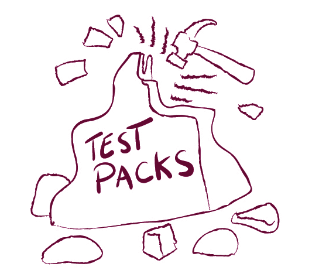
如果单个测试组突然开始多花10分钟，我可以通过查看特定测试组的测试历史轻松发现这一点。六小时内增加10分钟不如30分钟内增加10分钟那么明显。这使我能够控制反馈延迟，因为我会开始寻找优化该特定测试包的方法。通过将大测试包拆分为几个较小的包，我最近帮助一个客户意识到只有一个功能区域导致了很长的延迟，我们将其从近一小时缩短到仅九分钟。分而治之！

适用场景：数据驱动系统
一些拥有数据驱动系统的团队试图通过针对内存数据库而不是真实数据库运行持续验证测试来加速反馈。这允许系统仍然执行SQL代码，但使所有SQL调用运行得更快。它还使测试运行更好地隔离，因为每个测试可以使用自己的内存数据库运行。但在实践中，许多团队发现长期来看这样运行测试的成本超过了其价值。
包含数据库的可执行规格说明很可能同时是功能验收测试和端到端集成测试。编写它的人想要同时检查SQL代码执行。真实生产数据库类型和内存数据库实现之间的细微SQL方言差异可能使测试结果产生误导。这通常还需要维护两套SQL文件并在两个地方管理数据更改。

如果你使用内存数据库，端到端集成测试将验证系统可以针对内存数据库正确工作，而不是你将在生产中使用的真实数据库。
我之前已经提到了一些更好的解决方案。在事务中运行测试可以提供更好的隔离性。混合使用端到端集成测试和功能验收测试可能不是最佳选择（如本章前面所述），但如果你确实想这样做，那就使用真实数据库并寻找加速方法。
爱荷华学生贷款团队曾使用内存数据库进行测试，但后来放弃了。Tim Andersen 说：

我们使用 SQL Server 作为数据库，并用 Hypersonic 替换它以便在内存中运行。这在 45 分钟的构建中节省了 2 分钟。一旦我们给数据库添加了索引，SQL Server 实际上更快了。Hypersonic 需要更多维护，而且对构建时间的改善并不大。

如果测试在真实数据上运行缓慢，这可能意味着系统在生产环境中也会运行缓慢，所以改善数据库的测试性能实际上从整体来看是有意义的。请注意，这个建议的背景是数据驱动系统，其中经常需要执行特定的数据库代码。对于与数据库无关的检查，内存数据库可以是一个很好的加速解决方案。

适用场景：少数测试占用了大部分执行时间

如果一小部分测试占用了大部分运行时间，那么只频繁运行快速测试可能是个好主意。
许多团队根据执行速度将可执行规格说明组织成两到三组。例如，在 RainStor，他们必须用非常大的数据集运行一些测试来检查系统性能。他们有一个功能包，在每次构建后运行，耗时不到一小时。他们还在夜间运行客户场景，使用从客户那里获得的真实数据。他们每个周末运行长时间运行的套件。虽然这不能每次都提供完整验证，但它显著降低了变更引入问题的风险，同时仍然提供相对快速的反馈。
适用场景：慢速测试只在夜间运行
延迟执行慢速测试的一个大问题是，这些测试中的任何问题都不会被快速发现和修复。如果夜间测试包失败，我们在早上才会发现，尝试修复它，然后第二天早上才能得到结果。这种缓慢的反馈可能导致夜间构建频繁失败，这可能掩盖白天引入的其他问题。
只有当测试不太可能失败时，才将其纳入夜间运行的包中。
保持夜间包稳定的一个好方法是将任何失败的测试移到单独的测试包中（参见本章后面的”创建已知回归失败包”部分）。
另一个想法是只有当测试稳定通过一段时间后才将其添加到夜间包中。测试运行历史统计（本章前面讨论过）可以帮助我们决定测试何时足够好可以放入夜间包。
如果这些测试太慢而无法持续执行，一个可能的解决方案是按需定期执行它们，直到它们足够稳定可以延迟执行。RainStor 的 Adam Knight 使用这种策略：

测试先手动执行，直到被认为相当稳定，然后通过夜间测试包执行。测试的分离在很多方面使我们受益。如果测试失败，我们就修复它。重大失败成为我们的首要任务。


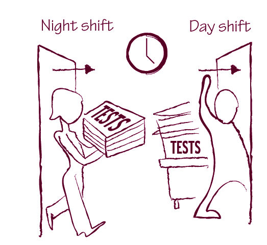

通过只在规格说明不太可能失败时才将其添加到夜间包中，RainStor 团队降低了反馈较慢的包因当前开发中的功能而失败的风险。这显著降低了夜间包的维护成本。它们仍然会捕获意外和不可预测的变更，这种情况很少出现。考虑到这一点，对于这类功能来说，较慢的反馈是降低维护成本的一个好的权衡。

将长测试分解为较小包的一个常见特例是创建当前迭代包。这个包包含受当前开发阶段影响的可执行规格说明。

拥有一个明确分离的当前迭代包，使我们能够对当前变更中最不稳定和最重要的系统区域获得非常快速的反馈。
当当前迭代包与其他测试分离时，我们可以安全地将计划但尚未实现的功能测试包含在内。运行当前迭代的所有测试将使我们更容易跟踪开发进度，并准确知道何时完成。当前迭代包可能大部分时间整体失败，但这不会影响主要的回归验证。
这种方法的一个变体是，如果我们需要更频繁地验证这些规格说明，可以为当前版本创建一个包。请注意，许多自动化工具允许我们创建并行层次结构，因此同一规格说明可以同时属于多个包。

适用场景：你可以获得多个测试环境

如果你有幸在一家设置额外测试环境不成问题的公司工作，一旦你将大测试包分成几个较小的包，就尝试并行运行它们。这将为你提供最快的反馈。
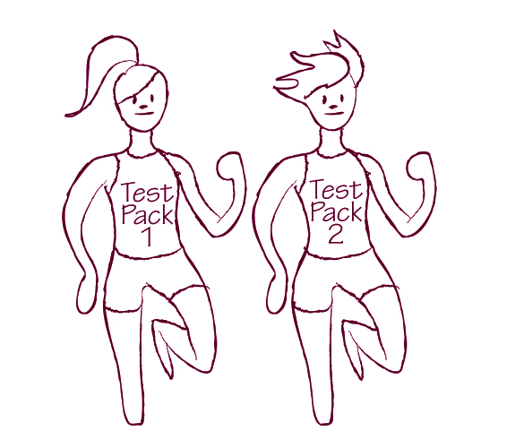
如果某些测试必须隔离运行且无法并行执行，最好将它们拆分到单独的测试包中。在LMAX，Jodie Parker这样组织持续集成和验证：

提交构建在3分钟内运行所有单元测试和统计分析。如果通过，顺序执行框会运行那些需要依次执行或不能并行的测试。然后23台虚拟机并行运行验收测试。之后启动性能测试。这些可执行规格说明通常运行8到20分钟。
最后，如果测试通过一定数量，QA实例就可以部署用于运行冒烟测试和探索性测试，并向开发团队提供反馈。如果提交构建失败，所有人必须停下来（完全禁止提交）并修复它。
如果你不太担心安全问题，或者没有监管约束阻止你将代码部署到组织外部，新兴的云计算服务可以帮助并行运行测试。远程部署代码需要一些时间，但这允许你同时在大量机器上运行测试。在Songkick，他们使用亚马逊的EC2云来运行验收测试。Phil Cowans说这帮助他们显著缩短了构建时间：


在单台机器上运行完整测试套件需要3小时，但我们进行了并行化。我们刚学会如何在EC2上做到这一点，将时间缩短到20分钟。
一些持续构建系统，如TeamCity，现在提供EC2上的测试执行作为标准功能。这使得使用计算云进行持续验证变得更加容易。还有一些新兴服务通过云服务提供自动化，如Sauce Labs，值得研究。

适用场景：测试反馈非常慢
uSwitch团队对长时间运行的测试包反馈慢的问题有一个独特的解决方案。他们在功能实现后禁用那些描述该功能的风险较低的测试。
Damon Morgan说：
有时你编写的验收测试（对驱动开发非常有用）在功能开发完成后并不那么重要需要保留。一些不直接产生收入的功能——例如发送延迟邮件——不是网站真正的核心部分，但为其增加了功能……这些可执行规格说明对帮助我们驱动开发非常有用，但之后，将它们作为回归测试包持续运行对我们来说用处不大。维护它们比丢弃它们更麻烦。我们确实在源代码控制中保留了这些测试；它们只是没有运行。如果我们需要扩展功能，仍然可以修改现有测试。
对我来说，这是一个相当有争议的想法。我认为如果一个测试值得运行，就值得一直运行。
uSwitch的大多数测试通过Web用户界面运行，所以它们耗时长且维护成本高，这推动他们朝这个方向发展。对于不需要一直端到端运行测试的系统，我更倾向于尝试以不同方式自动化测试，使其成本不那么高（参见第9章”在应用程序表层之下自动化”部分）。
uSwitch能够禁用测试的原因之一是他们有一个单独的系统来监控生产网站上的用户体验，当用户开始看到错误或某个特定功能的使用量突然下降时会通知他们。
在介绍了更快的反馈和更可靠的验证结果之后，是时候处理一些更有争议的内容了。随着活文档系统规模的增长，许多团队意识到他们有时需要容忍偶尔失败的测试。在下一节中，我将介绍一些处理无法立即修复的失败测试的好方法。
在《弥合沟通鸿沟》(Bridging the Communication Gap)一书中，我写道失败的测试永远不应该被禁用，而应该立即修复。为本书所做的研究稍微改变了我对这个问题的看法。一些团队在持续验证中有数百或数千个检查，验证多年来构建的功能。根据Pierre Veragen的说法，Weyerhaeuser的计算引擎系统（在第1章”更高的产品质量”部分提到）通过超过30,000个检查进行持续验证。
频繁验证如此多的规格说明会发现许多问题。另一方面，运行如此多的检查通常意味着反馈会很慢，所以问题不会被立即发现或解决。一些问题可能还需要业务用户的澄清，或者修复优先级低于当前迭代中应该上线的变更，所以我们不一定能在发现问题后立即修复所有问题。
这意味着持续验证包中的一些测试会失败并保持一段时间的损坏状态。当测试包损坏时，人们往往不会去寻找他们可能造成的其他问题，所以就这样放着这些测试不是个好主意。以下是管理系统中功能回归的一些技巧。

与为当前迭代创建单独的可执行规格说明包的想法类似，许多团队创建了一个专门的包来存放预期会失败的测试。

当你发现回归失败并决定不立即修复时，将该测试移到单独的包中可以让测试失败而不会破坏主验证集。
将失败的测试分组到单独的包中还允许我们跟踪此类问题的数量，并防止围绕临时失败放宽规则变成一张”免罪金牌”，导致问题堆积。
单独的包还允许我们定期运行所有失败的测试。即使测试失败，运行它来检查是否有任何额外的失败也是值得的。在RainStor，他们将此类测试标记为bug，但仍然执行它们以检查是否有进一步的功能回归。Adam Knight说：

某天你可能因为尾随零而导致测试失败。如果第二天该测试失败，你可能不想检查它，因为你知道测试会失败。但它可能返回了一个完全错误的数值结果。

回归失败包的一个潜在风险是，它可能成为在交付阶段后期发现的质量问题的”免罪金牌”。仅将已知失败包用作需要进一步澄清的问题的临时存放空间。后期发现问题是潜在流程问题的警告信号。避免陷入这个陷阱的一个好策略是限制可以移到已知回归包中的测试数量。一些工具，如Cucumber，甚至支持对此类限制进行自动检查。
创建一个收集所有失败测试的单独包从项目管理角度来看是好的，因为我们可以监控它，并在它开始增长过多时采取行动。一两个不太重要的问题可能不是停止发布到生产环境的理由，但如果包增长到几十个测试，就该停下来清理，以免事情失控。如果一个测试在已知回归包中停留很长时间，这可能是放弃相关功能的理由，因为没有人关心它。
适用场景：失败的测试被禁用，而不是移到单独的包中
一些团队不将失败的测试移到单独的包中，而是禁用它们，这样已知的失败测试就不会破坏整体验证。这种方法的问题是很容易忘记这些被禁用的测试。
单独的包允许我们监控问题，并确保它们最终得到修复，或者在问题得到修复之前我们不会浪费时间排查类似的问题。对于被禁用的测试，我们无法轻松做到这一点。另一个问题是，有人可能会禁用一个高优先级的失败，而没有意识到它实际上应该立即修复。
如果你有被禁用的测试，请自动监控它们。
Iowa Student Loan的团队有一个自动测试来检查哪些测试被禁用。Tim Andersen说：


人们关闭测试是因为我们需要一个决定，或者我们正在编写一个新测试，不确定这个旧测试如何适配。有些对话没有后续跟进，或者人们只是忘记重新打开测试。有时测试被关闭是因为人们正在处理它，而且背后还没有代码。
我们使用FitNesse来查找被关闭的测试，我们有一个页面检查所有这些测试名称。我们用它来列出被故意关闭的测试，并在每个测试旁边放一个JIRA（问题跟踪系统）工单。所以关闭列表充当另一个测试。它必须与你说你关闭的内容匹配。在迭代结束时，我们跟进那些被关闭的测试。我们可以说，“这不再适用，让我们删除这个测试”，或者”哦，有差异，我们没有真正收到业务方的回复”，在这些情况下我们必须修复测试。

如果你选择临时禁用损坏的测试而不是将它们移到单独的包中，请确保你可以轻松监控它们，并防止人们忘记被禁用的测试。否则，你构建的活文档系统将很快过时。禁用可执行规格说明是修复损坏测试的快速而粗糙的临时解决方案，但它违背了持续验证的整个目的。
一旦我们有了持续验证的规格说明，从功能角度断言系统做什么就变得容易了，至少对于被可执行规格说明覆盖的部分是这样。规格说明然后成为解释功能的活文档系统。在下一章中，我将介绍一些关于如何通过发展文档系统来充分利用你的可执行规格说明集的好想法。
不要只是禁用失败的测试——要么修复问题，要么将测试移到一个专门用于低优先级回归问题的包中，并密切监控。
在第3章中，我介绍了活文档(living documentation)的概念，并解释了它为什么重要，但没有讨论如何构建它。在本章中，我将介绍团队用于实现活文档系统的实践方法。活文档不仅仅是一个装满可执行规格说明文件的目录。要体验活文档的好处，我们必须组织规格说明使它们整体上有意义，并添加相关的上下文信息，以便我们理解各个部分。
理想情况下，活文档系统应该帮助我们理解系统做什么，这意味着信息必须：
在本章中，我将介绍我研究中的团队用于实现这三个目标的技术。
通过严格精炼规格说明（如第8章所述），我们创建的可执行规格说明是聚焦的、自解释的，并使用项目的领域语言(domain language)。随着活文档系统的增长，我们向规格说明中添加信息，并对它们进行合并或拆分。以下是一些有用的想法，可以在活文档增长时保持其易于理解。

随着你向底层系统添加功能，文档也会增长；你会创建新的规格说明并扩展现有的规格说明。要注意那些因此变得过长的规格说明。

过长的规格说明通常是某些问题的信号。
规格说明越长，就越难理解。
以下是规格说明过长时可能出现的一些问题示例：
问问自己：“我们这里遗漏了什么？”并尝试识别缺失的概念，这些概念可以让你拆分测试。识别缺失的概念可能会带来设计上的突破。更多内容请参见第7章的”寻找隐含概念”。
规格说明没有聚焦于单一功能，而是描述了几个类似的功能。将其拆分为单独的规格说明。更多详情请参见第8章的”规格说明应该聚焦”。
你在用脚本而不是规格说明来描述功能。重新组织信息，聚焦于系统应该做什么，而不是如何做。更多信息请参见第8章的”脚本不是规格说明”。
规格说明包含大量不必要的上下文信息。通过聚焦于说明这个特定测试目标的重要属性来清理它。

随着系统的演进，我们对领域的理解也会改变。最初看起来不同的概念可能开始变得相似——我们发现它们是同一枚硬币的两面。同样，我们可能会将复杂概念分解为更小的元素，这些元素突然开始看起来与现有概念相似。在这些情况下，活文档系统中描述同一功能的多个规格说明应该合并。
Sky Network Services的Rakesh Patel团队在某个时候过度拆分了规格说明。单个规格说明不再描述完整的功能。Patel说：

如果一个文件中有很多示例，这会使该文件变得更难处理，因为你会看到很多相似的代码，可能会处于错误的位置。我曾经更喜欢有很多不同的文件包含不同的示例，但这样你就有很多文件，所以也变得难以跟踪。


如果有人必须阅读10个不同的规格说明才能理解一个功能是如何工作的，那就是时候考虑重新组织文档了。

在向系统添加功能的过程中，我们有时会得到只有细微差异的相似规格说明。

退后一步，从更高的抽象层次看看你的规格说明描述了什么。
一旦我们识别出更高层次的概念，通常可以用一个只聚焦于不同属性的单一规格说明来替换一整套规格说明。这使得信息更容易理解、查找和访问。识别缺失的概念也可能带来系统设计上的突破，类似于第7章”寻找隐含概念”中描述的过程。

适用场景：利益相关者不是技术人员
一些团队没有创建沟通工具，而是用可执行规格说明聚焦于功能回归测试，编写了技术性的验收测试。这允许开发人员更快地编写测试，但也使测试更难阅读，对于非开发人员来说通常无法理解。Johannes Link在他第一个使用FIT的项目中就有这样的经历：

我们最终得到了大量有很多重复的测试。开发人员可以理解这些测试，但对于业务方的任何人来说它们都是晦涩难懂的。

186 用实例化需求说明
用技术语言描述的需求规格说明作为沟通工具是无效的。如果业务用户关心可执行规格说明，那么它应该用他们能理解的语言来描述。如果业务用户不关心某个规格说明，那就应该用技术测试工具来捕获它。
如果活文档系统包含技术自动化概念，比如等待某个进程在给定时间内完成的命令，这是一个信号，表明团队需要重新审视底层软件系统的设计。在活文档中使用技术概念通常指向系统设计问题，比如异步进程的可靠性（参见本章末尾的”倾听你的活文档”）。
只有当利益相关者本身也是技术人员，能够理解技术语言（如SQL查询、DOM标识符等）时，使用技术语言才是可接受的。请注意，即使利益相关者是技术人员，使用这种技术语言往往描述的是如何测试某个东西，而不是功能是什么。虽然这类测试最初可能写起来更快，但从长远来看可能会导致维护问题。更多信息请参见第8章的”脚本不是规格说明”。
Mike Vogel使用了DbFit（我编写的FitNesse数据库测试脚本扩展）来为一个拥有能够理解脚本的技术利益相关者的项目描述验收测试。回顾起来，他认为这是一个错误：


活文档可能是项目中存活时间最长的产物。技术会来来去去，代码会被其他代码替换，但活文档系统描述的是业务如何运作。我们会在几个月或几年内不断向其中添加内容，而且我们需要能够在以后理解它。对许多团队来说，最大的挑战之一是保持活文档的结构和语言一致。Stuart Taylor很好地解释了这一点：


一致的语言也使我们能够更高效地自动化可执行规格说明。对于Gaspar Nagy来说，这是开发的关键指导原则之一：


为了保持活文档的一致性，我们必须不断完善它，并使其与应用于软件系统的当前模型保持同步。随着软件中概念的演进，这也需要反映在活文档系统中。这种维护是有成本的，但没有它就没有活文档。

几乎所有团队最终都演进出了一种规格说明语言，一套可重用的规格说明模式。对于一些团队来说，这种语言是在几个月内演进出来的，通常是由维护问题引发的。
Andrew Jackman解释说，法国巴黎银行的Sierra团队在注意到他们的自动化层增长过多时开始演进一种语言：


一些团队很快就演进出了这种语言的基础。Rob Park在一家大型美国保险公司的团队就是一个很好的例子：

188 用实例化需求说明


由于重用现有短语来描述新规格说明能带来规格说明的一致性。
活文档系统是自动化的，并直接与软件连接，这确保了软件模型与业务模型保持一致。因此，为活文档系统演进一种语言是创建和维护通用语言（Ubiquitous Language）的绝佳方式（如第8章所述）。

基于角色画像构建规格说明语言
适用场景：Web项目
一些团队通过角色画像（Personas）来描述用户故事，尤其是在开发网站时。在这些情况下，规格说明语言可以来自不同角色画像能够执行的活动。

角色画像可以帮助简化可执行规格说明，并使其更易于维护。
Iowa Student Loan团队将规格说明中使用的语言与角色画像对齐。Tim Andersen说：

我们不再把用户当作一个模糊的整体，而是讨论不同的人以及他们使用系统的动机、使用方式和期望获得的结果。我们给不同的人起了名字。Boris是借款人，Carrie是共同签署人。
角色画像对我们很有帮助，因为它们让我们从用户的角度思考系统需要如何运行。使用角色画像带来了许多我们没有预料到的积极副作用——例如，角色画像成为了测试辅助工具（自动化组件），能够在更合适的入口点与我们的系统交互。


对于用户交互较少的项目，角色画像就不太适用了。基于在之前项目中使用角色画像的成功经验，Andersen尝试将同样的概念应用于一个技术数据处理系统。他最终放弃了，并将语言改为流程模型。
数据来自多个来源，被加载到电话系统中以便人们拨打电话。电话数据被更新后，我们将其发送回给发送数据的实体。这是一个批处理过程。实际上没有人使用它；它只是运行。角色画像不太适合。我们尝试用角色画像定义测试，结果业务人员一脸茫然。所以我删除了所有角色画像代码，改为使用Given-When-Then关键字的基于流程的方式。这样更清晰，对每个人来说也更有意义。

围绕用户角色画像的活动演进通用语言，使我们能够确保对各个角色画像需求的理解与他们使用系统的方式保持一致。这驱动了规格说明中使用的结构和语言，并帮助我们使文档系统保持一致。

协作定义语言
适用场景：选择不举办规格说明工作坊时

如果你决定不举办大型工作坊，而是使用其他替代方法，请确保协作定义语言。
Christian Hassa说，协作定义语言是他团队面临的最大挑战之一：

在没有指导的情况下，构建一种一致且绑定良好的领域语言是完全不可能的。测试人员写的东西开发人员不得不重新措辞。有时这是因为测试人员写下的方式不清晰或不容易绑定（自动化）。当测试人员已经写了很多东西时，我们不得不重新措辞很多内容。如果我们尝试立即绑定（自动化）第一个示例，我们会发现这并不容易做到。
这就像结对编程与事后代码审查的区别。如果你进行结对编程，搭档会立即告诉你他认为你做错了什么。如果你进行审查，你会说：是的，

Christian Hassa建议，与其事后发现一致性问题再回头修复，不如让开发人员和测试人员结对编写规格说明来预防此类问题。这类似于飞机上飞行员和副驾驶协同工作以预防问题的方式。由于另一个人在编写规格说明时进行验证并注意问题，编写糟糕规格说明的风险大大降低。
BNP Paribas的Sierra团队拥有相对稳定的语言，这种语言经过多年演进，他们的业务分析师使用这种语言自己编写新的规格说明。为了避免语言不一致或规格说明难以自动化，他们要求开发人员审查任何与现有规格说明结构显著不同的内容。在开发挪威奶牛群记录系统时，Bekk Consulting团队使用了类似的流程。他们的业务用户编写带有示例的规格说明，但开发人员会审查工作并建议如何使其与活文档系统的其余部分更加一致。

记录你的构建块

记录规格说明的构建块是一个好的实践；这有助于人们重用组件并保持语言一致。
一些团队为他们的构建块建立了单独的文档区域。在Iowa Student Loan，他们有一个包含所有角色画像的页面。它没有任何断言，而是展示哪些规格说明构建块已经可用。该页面由底层自动化代码构建，创建了活文档的活字典。
但还有一种更简单的方法来构建关于项目语言的良好文档。当被问及会给新团队成员什么关于编写良好规格说明的建议时，几乎所有研究参与者都建议查看现有规格说明的示例。记录规格说明构建块的一个好方法是从现有规格说明集中提取具有代表性的好示例。因为这些规格说明已经是可执行的，所以这种构建块文档保证是准确且一致的。
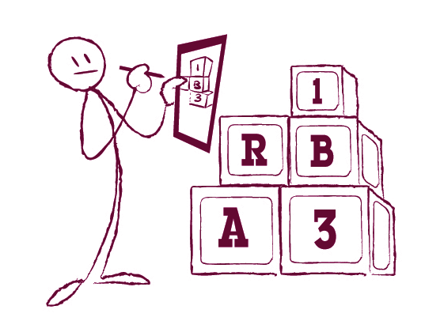
因为活文档(Living Documentation)在项目长期构建过程中支持团队，所以存在一个风险：部分内容可能会停留在不再使用的术语中。一部分可能使用团队三年前使用的语言；另一部分可能使用两年前的术语，依此类推，这取决于规格说明最初是何时编写的。这基本上违背了拥有文档系统的初衷，因为我们需要有人将旧语言翻译成新语言。
当语言演进时，保持整个文档一致并不需要太多努力，而一致的文档将在长期内为团队提供更多价值。
活文档系统增长很快。随着项目推进，实施团队会频繁地向其中添加新的规格说明；几个月后文档系统中有数百个规格说明并不罕见。我采访过几个团队，他们在几年时间里构建的活文档系统中有超过50,000个检查项。
为了使活文档有用，用户必须能够轻松找到所需功能的描述，这意味着整个文档集必须组织良好，并且各个规格说明必须易于访问。
Phil Cowans说，对他来说，关于活文档最大的教训之一是团队应该尽早考虑高层结构：

我们没有考虑测试的高层结构。我们只是在需要时添加新测试。结果是，很难找到哪些测试覆盖了哪些功能。获取网站功能集的描述，并按照这些功能线（而不仅仅是我们最后构建的东西）来组织测试套件会有所帮助。我认为这对于开发产品和维护一个相对容易理解的代码库是有用的。

如果我们每次想要理解某个东西如何工作时，都必须花费数小时试图从数百个看似不相关的文件中拼凑出全貌，我们还不如直接阅读编程语言代码。为了从活文档中获得最大价值，信息必须易于查找。以下是一些关于如何做到这一点的建议。

许多用于自动化可执行规格说明的工具允许我们将规格说明分组到层次结构中，可以是网站章节和子章节，也可以是文件目录和子目录。

如果你使用自动化可执行规格说明的工具，通常的好做法是将当前正在进行的工作的所有规格说明分组在一起。
将规格说明分组到层次结构中允许我们快速执行所有这些规格说明作为测试包，如第10章”创建当前迭代包”中所建议的。
一个用户故事(User Story)通常需要我们更改多个功能区域。例如，一个关于增强注册的故事可能会影响用户的后台报告以及系统如何进行年龄验证。它可能还需要我们实现与PayPal和Gmail的新集成。所有这些功能都应该由单独且聚焦的可执行规格说明来描述。我们还希望对每个故事何时完成有一个清晰的定义；与故事相关的所有内容都应该分组在一起，以便于执行所有这些测试。
参见图11.1中建议的组织方式：当前迭代分支。

用户故事作为规划工具非常出色，但它们不适合作为组织现有系统功能的方式。在PayPal集成实现六个月后，它最初作为故事#128进入系统这一事实基本上已经不相关了（除非你出于监管目的需要可追溯性）。如果有人想了解PayPal集成是如何工作的，他们需要记住确切的故事编号才能找到它。

大多数团队在实现后会按功能区域将可执行规格说明重新组织到层次结构中。这使得通过基于业务功能的层次结构导航来轻松找到功能的解释成为可能。
在图11.1中，这显示在功能集下的分支中。一旦故事#128实现后，我们应该将PayPal集成如何工作的规格说明移到支付中，将后台用户报告更改到用户管理中，依此类推。以这种方式组织活文档系统使我们能够在讨论该功能的变更请求时快速找到与MasterCard支付相关的所有现有示例。
如果你仍然想知道某些功能是如何成为特定故事的一部分的，有些工具允许你从不同的层次结构中交叉引用同一规格说明。
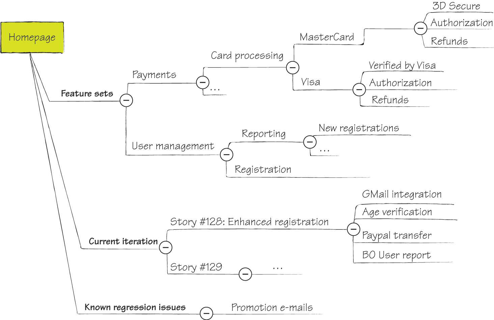
图11.1 按功能区域（如支付和用户管理）组织的活文档层级结构。当前迭代的规格说明按故事和功能组织。等待更多信息的已知问题也放在单独的暂存区。

适用场景：记录用户界面

在活文档系统中复制用户界面的导航结构。
Ian Cooper在Beazley的团队为他们的活文档系统实施了一种创新的组织方式。他们没有按功能区域划分，而是在活文档系统中复制了用户界面的导航结构。Cooper说：

FitNesse测试让我们能够选择一个故事并了解故事涉及的内容。但以那种形式导航非常困难。你怎么知道去哪里找代表软件某个部分的故事？我们重新组织了结构，让FitNesse页面看起来像帮助页面。我在这个页面上，有一个FitNesse测试告诉我在这个页面上能做的所有事情。如果我点击这个对话框旁边的链接，它会带我到另一个解释该对话框的页面。这让查找某个功能如何工作的信息变得容易多了。

这种方法对于具有明确定义导航路径的系统很直观，比如后台管理应用。但如果UI导航路径经常变化，可能会导致维护问题。

适用场景：需要端到端用例可追溯性

按业务流程线组织活文档系统，可以轻松追溯系统在端到端用例中提供的功能。
Mike Vogel参与了一个支持制药研究的软件系统，团队按业务流程线组织了他们的活文档系统。他解释了这种方法：

我们组织FitNesse测试以与用例对齐。我们的用例按层级组织，顶层用例命名系统目标。每个顶层用例也是该目标端到端业务流程的定义。一个用例引用更低层级的用例，这些是子流程。
我们需求文档的目录与测试的目录完全相同。这使得理解测试如何与业务流程对齐变得更容易。它还创建了从业务需求到测试的直接可追溯性，这对于满足我们领域的监管要求至关重要。

这些并不是组织活文档的唯一方式。另一个好方法是按帮助系统或用户指南的章节组织信息。将这些想法作为灵感，找到为你的团队设置层级结构的最佳方式。

适用场景：需要规格说明的可追溯性
许多活文档工具现在支持标签——我们可以分配给任何页面或文件的自由格式文本属性。像这样的元数据(Metadata)通常比按用户故事或用例在层级中保存规格说明更适合可追溯性。当领域模型变化时，活文档理想情况下应该跟随这些变化。规格说明经常会被移动、合并、拆分或更改。如果你依赖严格的静态层级结构进行可追溯性，这是不可能的，但如果将故事/用例编号作为标签分配给规格说明，就可以轻松完成。
如果你想从另一个工具引用活文档页面，标签也很有用，例如从问题跟踪系统工单或计划工具日程表。使用基于页面当前位置的URL会阻止我们以后移动它，因为链接会断开。

分配标签并链接到该标签的搜索结果，使系统对未来变化更具弹性。
即使你不使用基于Web的工具，而是将规格说明保存在项目目录中，你仍然可以借助简单脚本使用标签。这就是Bekk Consulting的挪威奶牛群记录系统团队所做的。Børge Lotre解释了这种方法：

为了与客户共享Cucumber测试，我们使用Confluence并将Cucumber测试直接从Subversion链接到Confluence。这阻止我们在不麻烦的情况下重组Cucumber测试的文件层级，但利用标签已被证明可以帮助我们克服这个缺点。现在我们使用标签来记录哪些需求被哪些Cucumber测试覆盖。

避免直接引用活文档系统中的特定规格说明，因为这会阻止你以后重组文档。元数据、标签或可以动态搜索的关键词对于外部链接要好得多。
活文档系统不仅仅是一堆可执行规格说明。深埋在无法管理的测试列表中的信息作为文档是无用的。要体验实例化需求(Specification by Example)的长期好处，我们必须确保文档的组织方式能让任何人快速找到特定功能的规格说明并进行测试。
我在这里介绍了最常见的规格说明组织方式，但你不必局限于此。找到适合你自己的文档结构方式，让业务用户、测试人员和开发人员都能直观地找到他们需要的内容。
起初，许多团队不理解活文档（Living Documentation）与其所描述系统的领域模型紧密相关。如果系统设计是由可执行规格说明驱动的，那么规格说明和软件中都会使用相同的通用语言（Ubiquitous Language）和领域模型。
在可执行规格说明中发现偶发复杂性（Incidental Complexity）是一个很好的指标，说明你可以简化系统，使其更易于使用和维护。Channing Walton 将这种方法称为”倾听你的测试”。他曾在瑞银集团的订单管理系统工作，那里的工作流验收标准非常复杂。他说：

如果测试太复杂，它在告诉你系统的一些问题。工作流测试非常痛苦。发生的事情太多，测试非常复杂。开发人员开始问为什么测试这么复杂。结果发现工作流过于复杂，因为每个部门并不真正了解其他部门在做什么。测试有帮助，因为它们把所有东西放在一起，所以人们可以看到另一个部门也在做验证和处理错误。

整个流程被简化成了更简单的东西。
自动化可执行规格说明迫使开发人员体验使用自己系统的感受，因为他们必须使用为客户端设计的接口。如果可执行规格说明难以自动化，这意味着客户端 API 不易使用，是时候开始简化 API 了。这是 Pascal Mestdach 学到的最大教训之一：

你编写测试的方式决定了你编写和设计代码的方式。如果你需要在测试的某个部分持久化患者数据，你需要创建一个数据集，用四个表填充数据集，调用一个大方法来持久化它，并为该类调用一些设置方法。这使得很难进入实际测试场景的部分。如果你的设置很难，测试就会很难。但是，在真实代码中持久化患者也会很难。

Markus Gärtner 指出，冗长的设置代码表明 API 设计不佳：

当你注意到设置很长时，想想你的 API 用户和你正在创建的东西。处理你复杂的 API 将成为某人的工作。你真的想这样做吗？

活文档的维护问题也可以提示系统架构不够优化。Ian Cooper 说，他们经常因为小的领域代码更改而破坏活文档系统中的许多测试，这是散弹式修改（Shotgun Surgery）的一个例子。这促使他研究如何改进系统设计：

这表明你的架构是错误的。起初你会与之抗争，然后你开始意识到问题不在于 FitNesse，而在于你如何让它与你的应用程序交互。

Cooper 建议将活文档视为系统的替代用户界面。如果这个界面难以编写和维护，真正的用户界面也会难以编写和维护。
如果一个概念在活文档中通过复杂的交互来定义，这可能意味着编程语言代码中也存在同样复杂的交互。如果两个概念在活文档中描述相似，这可能意味着领域模型也包含这种重复。与其忽略复杂的规格说明，我们可以将它们作为警告信号，表明领域模型应该改变或底层软件应该清理。
uSwitch.com 是英国最繁忙的网站之一。该网站比较各种公司和产品的价格和服务，包括能源供应商、信用卡和保险提供商。其软件系统的复杂性源于高可扩展性以及与大量外部合作伙伴的复杂集成。
uSwitch 是一个有趣的案例研究，因为它展示了一家在瀑布流程中工作、开发和测试团队分离、遗留环境存在问题的公司如何仍然能够过渡到更好的软件交付方式。uSwitch 在三年内彻底改革了他们的软件交付流程。
在 uSwitch，我采访了 Stephen Lloyd、Tony To、Damon Morgan、Jon Neale 和
Hemal Kuntawala。当我问他们关于软件流程时，他们的大致回答是：“早上有人提出一个想法，然后当天就实现并上线了。”在我职业生涯早期，我曾在一家公司工作，那里的软件流程也可以这样描述——而且生产系统几乎每天都会出问题。但在 uSwitch 的案例中，他们的产品质量和功能交付速度令人羡慕。
虽然 uSwitch 并没有刻意实施实例化需求（Specification by Example），但他们目前的流程包含了本书描述的最重要的模式，包括从目标推导范围、协作制定规格说明，以及自动化可执行规格说明。为了改进软件开发流程，他们专注于通过不断寻找和解决质量障碍来提高产品质量。
在寻找更好的方式来协调开发和测试时，他们以人类可读的形式自动化了测试。之后，他们发现测试可以变成规格说明。转向可执行规格说明使他们能够更好地协作。在改进流程的过程中，他们必须使持续验证更加可靠，这促使他们改进了规格说明的精炼方式。在寻找更好的方式来吸引业务用户参与时，他们开始从目标推导范围。
2007年，uSwitch 使用瀑布式开发流程，在长期项目中进行大规模的前期设计。2008年，一位新的 CTO 推动团队”走向敏捷”，他们引入了三周迭代的 Scrum。2008年10月，uSwitch 新功能的平均上市时间是六到九周。虽然这比瀑布式有了巨大改进，但每个冲刺中大约40%的工作是计划外的。Scrum 在跨职能团队中效果最好，但由于他们开发组织的方式，他们从未达到那个状态。
QA 团队与开发团队是分开的。因为测试人员使用 QTP——开发人员无法访问——开发人员开发，测试人员测试，彼此之间没有沟通；结果，开发人员很难知道他们什么时候完成了。因为发布的标准是 QTP 测试必须通过，测试经常成为流程中的瓶颈。
冲刺结束时的部署流程平均需要三天，主要是因为测试，而且他们仍然有很多质量问题。当团队转向短迭代时，QTP 测试开始需要大量维护。据 Hemal Kuntawala 说：“没人知道它们做了什么，完全是浪费时间。”
这导致了全公司范围内对质量的关注。每个人都被要求开始思考质量问题。他们认识到开发人员不加解释就把东西扔给测试人员的问题，并决定合并测试团队和开发团队。他们取消了不同的职位头衔；测试人员成为具有特定专长的”开发人员”。就像需要专业数据库知识的任务可以交给更有经验的数据库开发人员一样，测试人员承担需要专业测试知识的任务。但他们不再单独负责测试。程序员开始研究编写单元测试和功能测试的更好方法。团队决定使用 Selenium 代替 QTP，使测试更轻量级，让每个人都能访问。这使开发人员和测试人员能够更好地协作，但因为 Selenium 相当技术化，这个改变并没有给他们提供与业务用户沟通的更好方式。
因为 uSwitch 没有任何关于这个已经构建了10年的系统的可靠文档，遗留的业务规则经常在理解上造成问题。Kuntawala 说：

有一天，我们在 Energy（一个子系统）中有一个我不知道的遗留业务规则。这很令人沮丧。我想要一种方式让我们了解业务规则以及应用程序如何工作，而不需要深入代码和单元测试。反正也不是所有东西都有单元测试。通过搜索，我们发现 Cucumber 可以弥合测试和展示我们想要实现的目标——功能目标之间的差距。我们可以用简单的英语写出我们想要的东西，这与开发人员试图实现的由外而内的方法相契合。

为了让每个人熟悉新工具，他们开始将 Selenium 测试转换为 Cucumber。这仍然是测试自动化——事后检查问题——但它引发了向测试先行的可执行规格说明的转变。Jon Neale 解释道：

Cucumber 测试的 Given-When-Then 格式迫使我们重写用户故事，真正确定我们正在构建什么，向我们展示我们遗忘了一些东西。

团队开始带领业务利益相关者了解不同的 Cucumber 场景，不仅是为了验证边缘情况，还为了确定哪些场景是重要的，从而缩小范围，避免”以防万一”的代码。
当他们完成将 Selenium 测试转换为 Cucumber 并与业务用户审查后，他们意识到在迭代结束时进行测试没有意义。Neale 说：

我们意识到，通过坐下来进行规格说明研讨会，明确我们想要实现什么以及我们将如何实现它，可以获得很多收益。

团队随后引入了规格说明研讨会，作为与业务用户协作的方式，以确定未来需求的验收标准。这显著改善了团队内部的沟通。开发人员（此时测试人员也被称为开发人员）学习了业务领域知识。业务用户则了解了边界情况和更隐蔽的用户路径，因为开发人员会询问这些问题。
这一变化也影响了工作分工。以前，工作主要按技术任务组织。对于这种技术性的工作块，他们发现很难为每个任务制定具体的验收标准。团队将关注点从实现任务转移到功能应该交付的价值上。他们开始从用户角度描述故事，这使得讨论和指定工作块的验收标准变得更加容易。
这种新的组织方式也使他们能够更频繁地发布软件。由于技术任务相互依赖，开发人员不愿意在更大的工作块全部完成之前部署某个任务。通过关注用户故事，他们处理的是独立的、较小的工作块，可以更频繁地发布。
随着可执行规格说明数量的增长，团队注意到测试结果不可靠。环境问题经常导致测试失败，即使系统中的功能是正确的。他们没有稳定的环境来运行测试。他们有开发环境、测试环境和预发布环境，但这些都不适合频繁运行可执行规格说明。
由于开发人员使用开发环境来尝试各种东西，它经常处于损坏状态。测试环境用于手动测试，按需部署。两次部署之间可能发生任意数量的更改，因此当测试失败时，不清楚是什么导致了问题。业务用户也在这个环境上进行手动测试，这可能会影响自动化Cucumber测试结果。预发布环境是生产环境的镜像，用于最终部署测试。
uSwitch创建了另一个环境，专门用于持续验证。这是解决稳定性问题的方案：一个专用环境，可以用于测试而不中断其他工作。这个环境由他们的持续构建系统自动部署。有了这个环境，可执行规格说明的反馈能够快速获得，并且变得更加可靠。
一旦他们消除了环境问题作为不稳定性的来源，他们就能看到哪些测试或软件部分在设计上是不稳定的。因为所有测试都通过用户界面执行，可执行规格说明数量的增加导致了瓶颈。一些测试很慢，一些不可靠。他们开始移除不可靠的测试，并调查不稳定性的原因以改进它们。测试是在技术层面编写的，这导致了维护问题。
团队开始重写测试，将它们拆分，并提高抽象层次。Kuntawala说这对他们来说是相当大的一步：

当我们最初开始编写测试时，它们会依赖于浏览器特定的东西，例如页面上的DOM标识符，这些会发生变化。一旦我们习惯了Cucumber的语法和功能，我们开始用真正的业务语言编写测试。以前你会说类似”用户在框_id中输入100”这样的话。现在你会说”用户输入一个有效金额”。有效金额会在单独的测试中定义。一旦你写好了，就不必在每个其他测试中显式测试它。
有效金额的测试也会尝试负数、字母等，但它从每个其他测试中抽象出来了。

这是相当大的一步。
为了降低长期维护成本，uSwitch团队开始精炼规格说明，发展出一致的规格说明语言，并寻找缺失的概念以提高抽象层次。
有了相对良好的可执行规格说明功能覆盖和稳定的持续验证环境，uSwitch团队对他们的代码有了更多信心。但他们的测试套件运行缓慢，没有给他们预期的快速反馈。他们决定不是每个测试都值得为自动化回归检查而运行。一些测试适合驱动开发，但与增加利润的功能无关。
一个例子是发送延迟邮件。他们在实现功能时自动运行可执行规格说明，但一旦功能开发完成就禁用了它们。这种低风险测试不会作为持续验证过程的一部分运行。这给了他们更快的反馈并降低了测试维护成本。下次有人接手与系统该部分相关的开发任务时，他们会重新启用测试并在需要时清理它。
运行测试或验证系统是否准备好上线不再是
瓶颈；现在部署到生产环境成为流程中最慢的部分。开发人员与运维工程师配对合作，以了解是什么在拖慢他们。结果发现，部署前的测试执行导致了延迟。一些测试在预发布环境中超时，这要求运维工程师重新运行整个测试包。通过识别环境差异并重写测试使其更具弹性，开发人员将整个测试包的执行时间从两小时减少到约15分钟。
配对合作也有助于让运维工程师参与到流程中。以前，他们可以报告测试包失败，但报告缺乏细节。一旦他们理解了如何解读测试结果，如果出现问题，他们就能为开发人员提供更有意义的报告。
下一个变化是让业务用户更多地参与开发。虽然团队此时已经在使用用户故事进行规划，但他们是自己编写用户故事。业务用户开始与开发团队一起编写故事，对规格说明承担更多责任。他们通常会定义收益（“以便”），然后开发人员定义解决方案（“我想要”）。业务用户还负责主持规格说明研讨会。这改善了团队的沟通。Damon Morgan解释道：

他们以前与流程脱节。他们会问”我们能有这个吗？“然后我们用某种他们不一定理解的奇怪语言写下来。他们会看到它在看板上移动，但这对他们来说并没有真正的意义。一旦我们开始进行规格说明研讨会，并与他们更多地讨论实际应该交付什么，为这些故事制定可执行的标准，并与他们一起编写故事，他们就对整件事承担了更多责任。我们不会再收到业务方面”你们没做对”这样的故事反馈。而是更多地变成”作为一个团队，我们没有考虑到这个场景。”

随着业务用户更多的参与，uSwitch的团队建立了信任和信心。这意味着不再需要长期优先级排序和大块工作。这也意味着业务用户会更愿意接受开发团队的建议。
通过更紧密的协作和更多的信任，业务用户愿意以不同的方式处理开发范围。然后团队开始将所需功能分解为可发布且仍能为业务带来价值的最小功能。
一个例子是重写能源目录的过程，这是一个四级页面层次结构，包含能源供应商和计划的索引。他们不是一次性发布全部内容，而是一次重写一个页面，将该页面连接到其余服务，然后发布。虽然这种方法增加了集成成本——因为新页面必须与旧页面集成——但他们从更早发布中获得了很多价值。重写目录的原因之一是搜索引擎优化：一次发布一个页面意味着Google可以更快地索引某些页面。此外，团队发现较小的发布降低了出错风险。如果有问题，可以归因于特定的发布。通过较小的发布，更容易找出原因。
一旦团队开始比迭代本身更频繁地产出潜在可交付物，迭代结束时的签收就成了瓶颈。他们不再在结束时进行一次大型演示，而是在可发布的功能完成后立即向业务用户展示新功能并获得签收。
团队注意到不再需要正式的规格说明研讨会，它们被非正式的聊天会议所取代。处理较小的工作块并获得快速反馈，使团队能够在有足够信息开始工作时就继续推进，即使他们不一定有足够的信息来完成任务。据Damon Morgan说：
一开始，规格说明研讨会议时间更长、规模更大，我们试图规划更多内容。现在真的就是”我们现在要开始做这个功能了”，而且这是一个相对较小的功能，所以我们会与相关方交谈。整个团队会聚在一起做一个迷你规格说明研讨会——但它实际上只是一次对话；你甚至不需要进入房间来进行。然后你为此制定标准，开始构建它，并且更快地展示它。通常在两天内构建并交付，然后继续下一件事。我们在构建东西的方式上更加迭代。
因为这个流程让开发人员比以前更多地了解业务领域，他们不再有那么多因误解业务需求而导致的问题，并且可以用更少的前期信息完成正确的工作。Stephen Lloyd说：


作为一个团队，我们比以前更好地整合在一起，我们比以前更了解业务想要什么。所以准确规定他们需求的整个目的变得不那么重要了，因为我们现在比一年前更了解这个领域。
最终，uSwitch 团队开始按需部署，完全放弃了迭代模式。为了配合这一转变，他们开始定期监控生产系统，跟踪错误率和新功能的使用情况。这种额外的可见性为未被察觉的部署问题提供了安全网。
经过所有这些变革，开发流程变得更加简单。它是轻量级的，基于流程（flow）而非迭代。
新想法在每日站会上被提出时就会进入待办列表。任何人都可以提出新想法——包括业务用户或开发人员。新想法会在站会上简要讨论并确定优先级。提出想法的人可能会在会前画一些草图或准备商业案例，以便更好地解释这个想法。除此之外，除非需要与外部合作伙伴签订合同，否则不需要太多前期准备。
当故事成为最高优先级项目之一时，团队会思考完成它需要哪些步骤。所有对该故事感兴趣的人会开会简要讨论具体需求并写下验收标准。过去，团队曾尝试在这些会议中编写 Cucumber 测试，但他们发现 Cucumber 测试的语法会造成干扰：一个人需要打字，其他人只能旁观，这会打断讨论的流畅性。
开发团队与市场营销和邮件团队坐得很近，因此他们可以在没有太多前期细节的情况下开展工作。开发人员会开始处理故事，并经常与业务用户交流，询问更多信息或重新审视验收标准。
验收标准会在开发过程中转换为 Cucumber 测试并实现自动化。开发人员会使用探索性测试（exploratory testing）来更好地理解系统的现有部分，然后再进行修改。有时他们会使用客户会话日志来了解真实用户如何与网站的特定功能交互。基于此，他们开发 Cucumber 测试并捕获开发时需要考虑的用户旅程路径。他们通常使用浏览器自动化工具包通过用户界面自动化测试。不再有手动脚本测试，但他们会进行大量探索性测试，包括尝试系统中的不同路径并尝试破坏它。
一旦所有 Cucumber 场景通过，更改就会部署到发布环境，然后在当天某个时间点推送到生产环境。
总体而言，uSwitch 团队不跟踪太多技术项目指标。相反，他们只关注前置时间（lead time）和吞吐量（throughput）。他们更关注系统的业务表现和功能带来的价值。为此，他们监控用户体验指标，如生产网站上的转化率和功能使用率。
在我采访时，uSwitch 团队正在逐步放弃估算。当业务用户不信任开发团队或想要投资更大的工作时，估算是有用的；但现在这两种情况都不适用于 uSwitch。业务用户对开发有了更全面的了解，比以前更信任开发人员。他们通常也处理小增量的工作。估算一项工作需要多长时间已经没有必要了。
在 uSwitch，一个功能从被接受开发到上线的平均周转时间目前是四天。当我采访团队时，他们想不起过去六个月内有任何严重的生产问题。回旋镖（Boomerang，指返工）很少发生——几个月才有一次。在 2009 年 Hemal Kuntawala 于英国敏捷测试用户组的演讲中，uSwitch 的一位开发经理表示”质量大幅提升，转化率也有所增长。”
整个开发流程现在由功能的预期业务价值驱动。他们不再制定大计划和大版本发布，而是构建小增量，频繁发布，并监控增量是否为业务增加了价值。由于他们的商业模式依赖于即时的网络转化率，他们可以轻松实现这种评估。
你可以在 Mark Durrand 和 Damon Morgan 在 Spa2010 演讲的幻灯片中看到一些关于这个流程演变的有趣指标。
对我来说，这个故事最重要的方面之一是 uSwitch 决定专注于提高质量，而不是试图实施任何特定的流程（更多内容请参见第4章”专注于提高质量”）。他们没有采用大爆炸式的方法，而是不断寻找最需要改进的地方并从那里开始。当他们对变化感到满意时，会再次审视流程并继续处理下一个问题。
他们意识到测试是瓶颈，QTP 太昂贵且
对于开发人员来说过于笨重，这促使团队采用了通过功能测试自动化实现的实例化需求(Specification by Example)方法，这正是我在第4章”从功能测试自动化开始”中建议的方法。他们首先采用Cucumber作为自动化功能测试的工具，但随后意识到可以从中获得更多价值，因为它能够在保持人类可读形式的同时实现测试自动化。这彻底改变了需求规格说明的流程。
这个故事的另一个重要教训是，变革虽然最初由工具驱动，但本质上是文化层面的。uSwitch消除了测试人员和开发人员之间的界限，取消了测试人员角色，让所有团队成员都明白质量问题是每个人的责任。他们开始专注于交付业务价值而非实现技术任务，这使得业务用户能够在开发过程中更深入地参与。如果没有业务用户的密切参与，就不可能在如此短的周转时间内决定构建什么、达成共识、实现并验证。
业务用户更多的参与意味着他们开始更加理解和信任开发团队，而开发人员也更多地了解了业务领域。正式的需求规格说明研讨会是建立这种知识的重要步骤。一旦沟通得到改善，开发人员对领域有了更多了解，正式的研讨会就变得不再必要。这是一个团队知识积累后流程可以优化的例子。
在我看来，uSwitch采取的最具争议性的步骤是决定在功能实现后禁用不太重要的测试。我在其他团队中见过和听说过大多数其他想法，但他们是唯一一个不频繁运行活文档系统中所有测试的团队。对他们来说，可执行规格说明真正是可执行的——有执行的潜力但没有执行的义务。团队发现在开发功能时执行这些测试有很大价值，但由于测试套件不断增长导致的反馈变慢，从长远来看，其成本高于在低风险区域防止功能回归的收益。这可能是因为他们有其他手段来防止生产环境中的问题，特别是持续用户体验监控系统。
RainStor是一家英国公司，构建高容量数据归档和管理系统。RainStor是一个有趣的案例研究，因为他们处理的是技术领域，复杂性来自高数据量，结合先进的压缩和数据管理算法。
公司员工不到30人，其中约一半在研发部门工作，因此他们必须高效地构建和支持软件。所有开发人员和测试人员都作为同一个Scrum团队的成员工作，尽管他们现在正在考虑将其拆分为两个团队。
他们走向实例化需求的旅程几乎是自然发生的，没有任何宏大计划或流行术语，主要由测试人员推动。当我采访RainStor高级测试和支持团队负责人Adam Knight时，他说：“公司里没有其他人知道验收测试驱动开发(Acceptance Test-Driven Development)是什么意思。”尽管他们的流程几乎包含了实例化需求的所有关键要素，但他们只是把它当作自己开发软件的本土方式。他们使用示例来说明需求，将其自动化为可执行规格说明，并频繁验证以构建活文档系统。他们实施的变革使开发团队在三年内规模扩大了三倍，同时变得更加高效。
三年前，一位新CEO决定实施Scrum，并通过雇用两名测试人员和一名测试经理将四人开发团队扩展。尽管他们采用了迭代和每日站会，但据Knight说，这个流程实际上是一个小型瀑布模式。他解释道：

我们在冲刺开始时有一份大型需求文档。它应该既是需求文档又是技术规格说明。其中包含了太多技术细节。它在迭代开始时就被固定下来。开发工作按照该文档进行，测试也基于该文档的内容。该文档没有随着开发过程中做出的决策而更新，所以到最后我们的测试用例与实现不一致。

除了协调开发和测试的问题外，他们在测试执行方式上也存在问题。尽管他们有一些自动化测试，但测试人员主要是手动运行大部分验证。随着产品的增长，很明显手动测试无法扩展。即使他们增加更多人来运行手动检查，他们的软件处理的是非常大的数据量，手动检查返回数万条记录的查询是不可行的。
Knight于2007年底接任测试经理。他希望使测试更高效并支持开发，在产品开发过程中避免手动测试的需要。他们实现了一个简单的自动化测试框架，使他们能够将测试大大提前。他们可以在开发相关功能的同时定义测试。这帮助他们协调了开发和测试。
功能测试自动化给他们带来了即时价值，因为他们不再
测试任务往往堆积到迭代末期。这也让开发人员更快地获得反馈，了解某项工作是否完成，消除了因测试溢出到下一迭代而造成的流程中断。
团队将测试和开发对齐后，开始注意到范围蔓延(scope creep)和确定完成时间的问题。他们经常不得不在开发开始后重写需求。之前迭代的”回旋镖”以”完成……“为标题的故事形式返回。2008年夏天，Knight请来David Evans作为顾问，帮助他们了解如何改进。
因此，他们开始用用户故事来描述范围，而不是预先使用大型详细的技术需求。这使他们能够从业务角度思考验收标准并从中推导测试，而不是以要实现的功能形式接收需求。Knight说，这让他们能够更好地理解范围，并清楚地知道何时完成功能开发。
他们开始将故事分解成更小的可交付项，这让他们更清楚地看到在一个迭代中实际能交付什么。这帮助团队更好地管理业务用户的期望。
然后团队开始使用示例来说明满意条件，甚至包括性能等需求。Knight解释道：

我们使用定义明确的验收标准来进行性能测量。例如，系统必须在10分钟内在若干CPU上导入一定数量的记录。开发人员要么获得专用测试硬件的访问权限，要么由测试人员运行测试并提供反馈。

专注于用户故事使业务用户能够更好地参与定义即将开展工作的期望，而用示例说明这些期望则使团队能够客观地衡量是否达到了目标。
随着客户群开始增长，他们需要实现更多客户特定的场景。2008年底，团队决定联系客户作为最终利益相关者，让他们参与规格说明过程。Knight补充道：

通常客户会有一个想要实施的方案。他们会给我们需求，我们与他们合作获取真实的数据集和预期目标。我们将这些放入测试工具中，用它来驱动开发。

将带有样本数据的客户特定场景作为验收测试放入系统，确保团队达到目标。这也意味着团队不必浪费时间制定单独的验收标准，并防止了因潜在误解而造成的返工浪费。
当他们能够让有真实需求的实际客户参与时，这个过程效果最好。RainStor主要与转售合作伙伴合作，这些合作伙伴有时会在没有具体业务案例的情况下请求功能。“这是最难处理的需求类型，”Knight说。在这种情况下，他们会推回并要求提供示例，有时会与客户组织研讨会，在相对成熟的原型上讨论高层示例。他们使用这些高层示例来后续驱动范围。在纸质原型上工作也帮助他们首先查看系统输出，促进由外向内的设计。
目前，RainStor的研发团队以五周为一个迭代周期工作。冲刺(Sprint)从周二开始，通过冲刺启动会议简要回顾计划在该迭代中完成的故事。他们用当天剩余时间来详细阐述这些故事。开发人员、测试人员、技术文档编写人员和产品经理讨论每个故事。测试人员根据会议中的笔记写下验收标准，并发布给整个团队查看。
一旦故事的满意条件发布，开发和测试就并行开始。开发人员致力于让现有的带示例的规格说明通过，测试人员则致力于创建更详细的测试用例。对于某些故事，开始时可能没有任何自动化示例。在这种情况下，开发人员最初专注于交付基本功能，而测试人员自动化较简单的示例。然后测试人员继续开发更多测试，开发人员交付确保这些测试通过的功能。
随着功能的实现，测试人员进行探索性测试，并开始对新版本系统运行自动化测试。当故事的完整功能实现后，测试人员确保所有测试通过，然后将它们集成到持续验证系统中。
我请Adam Knight挑出他关于实例化需求(Specification by Example)学到的三个关键经验。以下是他的回答：
• 作为故事流程一部分创建的验收标准和带示例的规格说明成为了需求文档。你可以用一个轻量级的故事来开始。一旦有了测试，通过这些测试就说明需求已经满足。你不需要参考任何其他文档来查找需求。这让我们能够发现未来的需求是否存在冲突，以及变更会影响哪些部分。这让我们能够持续维护需求。我们始终能够了解产品与已实现需求的对应情况。如果某个测试开始失败，我们就知道哪个需求没有被满足。
• 测试和测试结果是产品的一部分。你需要将它们与产品一起存储在版本控制系统中。我们测试不同的分支和版本，需要执行与分支相对应的测试。
有些测试需要处理非常大的数据集或检查性能，因此他们将持续验证分为三个阶段：常规构建、夜间构建和周末构建。常规构建耗时不到一小时。较慢的检查在夜间运行。使用非常大数据集的检查（通常是客户场景）只在周末运行。由于反馈周期较长，他们只有在测试稳定后才会将其添加到夜间或周末测试包中。当开发人员发布部分功能时，如果可能的话，他们会在自己的机器上运行测试。测试人员运行需要专用硬件的测试，并向开发人员提供反馈。
在迭代的最后一周，他们会收尾所有未完成的问题。团队确保所有测试都在适当的自动化测试包中运行；他们跟进利益相关者关于未解决问题的进展并修复它们。在迭代的最后一个周一，他们运行最终的回归测试并举行回顾会议。
由于 RainStor 是一家相对较小的公司，他们的产品工程副总裁负责分析工作，同时还要处理许多其他事务。他并不总是能够参加规格说明研讨会，所以测试人员有时会介入帮忙，接手他的一些分析任务。测试人员负责收集问题清单，并在编写带示例的规格说明之前获得澄清。
尽管开发团队规模在过去三年中增长了三倍多，RainStor 仍然是一个相对较小的团队。同样的人员必须开发产品、支持现有客户并帮助扩大客户群。他们必须高效工作才能用这么少的人完成这些任务。以下是他们取得的成果及其方法：
• 实施可执行规格说明消除了维护两套文档的需要。这有助于协调测试和开发，消除了大量浪费性的返工。
• 切换到用户故事帮助他们更好地与业务用户互动。
• 通过高层级示例从业务目标推导范围，确保他们构建正确的产品，不浪费时间开发不必要的功能。
• 让客户参与规格说明的协作使流程更加有效，因为他们从一开始就获得验收标准，这确保了他们能够达成目标。
他们在三年的时间里逐步改进，没有任何宏大的计划或强制推行任何特定流程。与许多其他案例类似，他们总是寻找下一个需要改进的重要事项，在社区中寻找可能有帮助的想法，然后弄清楚如何在他们的特定环境中实施这些想法。这使他们实施了几个独特的实践，例如手动运行测试直到它们变得稳定，以及使用自定义工具从元数据创建活文档(Living Documentation)。
他们的特定环境使得他们不太可能使用任何更流行的工具来获得相同的效果，所以他们构建了一个帮助他们高效完成工作的工具。他们从流程开始，然后构建工具来支持它。
对我来说，这里的关键经验是在改进时专注于重要原则，将流行的社区实践仅作为灵感来源。
爱荷华学生贷款是一家金融服务公司，将实例化需求(Specification by Example)的理念发挥到了极致。他们是一个有趣的案例研究，因为他们的活文档系统为业务带来了竞争优势。这使他们能够高效应对重大的商业模式变革。
爱荷华学生贷款开发团队构建和维护一个复杂的系统，从接收贷款申请的公共网站，到用于核保和贷款发放的后台系统。除此之外，他们项目复杂性的主要驱动因素是领域的数据驱动特性。
我采访了 Tim Andersen、Suzanne Kidwell、Cindy Bartz 和 Justin Davis，他们在公司改进软件流程期间参与了几个不同的项目。追踪他们如何将实践从一个较小的项目推广到重写整个核保平台是很有趣的。
2004年，爱荷华学生贷款开发团队按照教科书实施了极限编程(Extreme Programming)以提高软件质量。当他们的下一个项目投入生产时，他们准备像过去那样处理缺陷。在接下来的12个月里，新系统只出现了六个缺陷。这向管理层证明了敏捷开发，特别是先写测试，是一个好主意，它显著提高了质量。
然而，这些测试非常技术化。团队使用了 HTTPUnit（一个单元测试
网站框架）。程序员将用例转换为 HTTPUnit 测试，但这些测试没人能看懂。系统上线后，他们发现缺少文档。于是聘请了顾问 J. B. Rainsberger 来帮助他们找出问题所在，并提供工具和实践方面的改进建议。他引入的工具之一就是 FitNesse。
团队在 2006 年 7-8 月完成了第一个使用 FitNesse 捕获规格说明的项目。这个项目让团队学会了如何使用该工具，也促使他们重新思考如何编写可执行规格说明。业务分析师具有技术背景，因此他们与开发人员一起编写的规格说明非常技术化。结果，业务用户无法理解这些内容。Justin Davis 解释了这个问题：

作为业务分析师，我可以阅读和理解这些测试，我们也在继续编写它们，但它们与团队中其他业务成员之间存在很大的脱节。
这只是一个更大计划的开始——重写整个承保平台，并将之前在纸上手工完成的大量工作自动化。下一个项目将持续三年，团队包括六名开发人员、两名测试人员、一名业务分析师和一名现场业务用户。他们请来一位顾问帮助他们更好地与业务用户沟通。Tim Andersen 说：

David Hussman 说我们应该更努力地开发有意义的测试，这样当业务人员阅读时，我们不需要向他们解释测试内容。这相当困难。它需要我们转变思维方式，我们必须更加了解业务。这需要更多地理解和讨论系统应该如何工作，而不仅仅是技术需求。


他们开始使用用户画像（persona）来描述系统，这使他们能够考虑不同用户群体如何与系统交互。
他们不再使用通用用户，而是开始更多地思考不同群体的人为什么使用系统、他们想从中获得什么以及他们如何使用它。这使业务利益相关者能够更好地参与并向团队提供更有意义的信息。你可以在 Tim Andersen 在 Code Freeze 2010 会议上的演讲中看到他们使用的一些很好的画像示例。
由于他们的可执行规格说明之前非常技术化，自动化层变得复杂且难以维护。测试将技术组件描述为更大流程的一部分，因此必须通过模拟部分用户工作流来实现自动化。Tim Andersen 说测试结果也不可靠：

我们能够展示测试通过，但却无法展示可工作的软件。我们的测试在说谎（假绿条）。例如，借款人如果未满 18 岁可以借钱。我们有一个测试，如果他们在那天未满 18 岁，它会说”没有共同签署人你不能借款。“如果你把出生日期改成超过 18 岁，它会说”好的，你可以在没有共同签署人的情况下借款。“我们的测试是绿色的，但当我们实际打开浏览器在开发环境中尝试时，它不工作。即使我们编写了验证规则，它也没有在正确的位置连接起来。我们的测试代码是在一个虚幻状态（fantasy state）中设置贷款。

业务用户不信任可执行规格说明的测试结果，所以他们不认为这些测试重要，这成为让他们更多参与流程的另一个障碍。Andersen 说：

双方都有很多挫败感。我们问：“他们为什么不审查测试；他们为什么不重视测试？”同时业务团队也很沮丧：“为什么开发人员的测试通过了但它不工作？”他们不相信那些测试。

团队重构了可执行规格说明的自动化层，使其通过生产流程，而不是试图模拟状态。新的自动化规格说明方式与他们使用画像描述系统的方式很好地契合。Andersen 说：
“虚幻状态”是我一直用来让其他开发人员知道我不信任没有使用正确入口点的测试的术语。虚幻状态的其他症状是”厚重的夹具（fixture）“；夹具不应该有太多逻辑，应该相当轻量。使用画像帮助我们找到正确的抽象级别，以确定应用程序中适当的入口点。在使用画像之前，我们经常选择不适当的入口点，这导致我们使用容易出现虚幻状态的重型夹具。

团队按照画像可用的活动组织自动化。每个画像在自动化层中实现为一个夹具，使用 HTTP 调用与服务器通信，本质上与浏览器的方式相同，但不启动浏览器。这使他们能够显著简化自动化层，
但它也使测试结果更加可靠。之后一些测试开始失败，团队发现了之前未被注意到的 bug。大约在 2007 年 5 月，测试结果变得更加可靠，自动化层也更容易维护。Andersen 补充道：

将测试代码改为利用应用程序来设置贷款状态，暴露了这些缺陷，使我们能够修复它们，虚假的绿色进度条症状也消失了。这也大大降低了测试维护的成本。
一旦可执行规格说明能够以业务用户可以理解的层次来描述业务功能，自动化层就变得简单多了——它直接连接到业务领域代码。这也使规格说明更加相关，因为它们不再有那些只关注部分流程的测试所产生的误导性假阳性。
随着测试数量的增长，反馈开始变慢。许多缓慢的技术测试是通过浏览器执行的。Andersen说，从角色(Personas)的角度来看待系统有助于减少这些问题：

我们使用FitNesse作为工具来使WatiJ（一个UI自动化库）可配置。在使用角色之前，我们有点把浏览器测试当作最后的手段，因为”我们必须以某种方式测试这个，以确保它真的有效。“那些浏览器测试像兔子一样繁殖。
团队重写了浏览器测试以使用角色，这显著改善了反馈时间。新的自动化层不再每次都启动浏览器，而是直接发出HTTP请求。他们还研究了使用内存数据库而不是SQL Server来运行测试，但他们决定应该通过索引来改善真实SQL数据库的性能。团队将持续验证过程分解为几个模块，以便更好地了解是什么在拖慢测试。
团队不再总是创建新的规格说明，而是开始考虑将变更请求与现有规格说明整合。这减少了测试数量，并有助于避免不必要的设置任务。Andersen解释道：

我们开始思考场景。一个新功能可能本身不是一个功能；

它可能是对一组场景的更改。我们不是为每个需求编写

新测试，而是在当前系统的上下文中思考，考虑我们需要

更改哪些测试，而不是需要编写哪些新测试。这有助于保持我们的构建时间恒定。
这促使他们开始重组规格说明以减少测试数量。他们会寻找较小的部分规格说明并将它们合并成更大的规格说明。他们会将大型规格说明拆分成更小、更专注的规格说明。“基本上，你必须像重构旧代码一样重构你的测试和测试代码，”Andersen说。
爱荷华学生贷款是实例化需求(Specification by Example)的早期采用者，所以他们不得不处理不成熟的工具，这多次妨碍了协作。因为团队使用的是开源工具，他们能够修改工具以适应他们的开发流程。
一旦他们开始将可执行规格说明放入版本控制系统，业务分析师就无法在没有开发工具的情况下自行更改它们。开发人员为FitNesse编写了一个处理版本控制系统集成的插件，使他们仍然可以运行一个wiki，让业务分析师可以更改规格说明。
随着测试数量的增长，团队开始遇到功能回归问题。本应被现有测试捕获的缺陷漏掉了，因为相关测试被禁用了。有些测试被禁用是因为开发人员不确定它们如何适应新功能；有些是在团队等待业务利益相关者决定时被禁用的。然后人们忘记重新启用这些测试或跟进讨论。爱荷华学生贷款的开发人员编写了一个禁用测试的自动检查（参见第10章”自动检查哪些测试被关闭”部分），在每次迭代结束时提醒他们需要跟进什么。
他们使用JIRA管理需求，使用FitNesse管理可执行规格说明，所以重新排列FitNesse页面会破坏JIRA中的链接。他们扩展了FitNesse以支持关键字，并使用关键字链接可执行规格说明和JIRA网页。在另一个项目中，他们采取了不同的方法，创建了一个业务框架。业务框架是FitNesse中的一组页面，设计为稳定的文档入口点，然后有指向测试的内部链接。这是一个良好的活文档(Living Documentation)系统的开始。Justin Davis解释道：

业务框架的目标之一是为FitNesse创建一个前端，让业务团队可以使用，同时也让开发人员了解当前系统中事物的顺序。实际上，它提供了一个系统行为的地图。所以如果你在那里有关于系统如何工作的上下文，你可以去这个框架找到你想要的东西。系统流程会在那里，你可以

选择你想查看哪些步骤的测试和需求。
引入业务框架并确保可执行规格说明确实得到频繁验证并保持相关性，使他们能够创建一个有用的活文档系统。他们有了一个关于系统做什么的相关信息来源，任何人都可以访问。
有了这样优秀的活文档系统，他们能够高效地处理重大变更。在项目结束前三个月，公司的商业模式突然需要改变。他们通常通过债券销售来为贷款提供资金。由于2008年的信贷危机，债券销售失败了。这是一家技术驱动型企业，因此商业模式的变化必须反映在软件中。Andersen表示，活文档系统帮助他们理解了支持这一业务变更所需的内容：

通常，我们使用债券收益来为私人学生贷款提供资金。然而，我们改变了商业模式，使系统的所有资金部分都可配置，这样我们就可以使用贷方提供资金，并继续向学生提供贷款。这是对系统核心部分的重大改造。在这个新的资金需求之前，我们的系统甚至没有贷方的概念，因为我们可以假设爱荷华学生贷款就是贷方。
我们能够利用现有的验收测试并重新调整它们的用途，说：“好的，这是我们的资金需求。”对于我们拥有的所有测试，我们讨论了影响并提供了资金支持，使它们仍然能够工作。我们基于一些场景进行了有趣的讨论，比如没有更多资金可用，或者资金可用但不适用于这所学校或这个贷方，所以我们有一些针对这些需求的边缘情况，但这实际上是让新的资金模型更加灵活和可配置。


一旦他们理解了这个新商业模式对软件的影响，就能够高效地实施解决方案。据Andersen说，如果没有活文档，这样的变更是不可能快速实施的：
因为我们有良好的验收测试，我们能够在一个月内实施解决方案。任何其他没有测试的系统都会停止开发，而且必须重写。

这就是活文档系统投资获得回报的时刻。它支持他们分析、实施和测试商业模式变更的影响，同时使他们能够快速验证系统的其余部分不受影响。
他们一开始专注于工具，很快意识到这并不能帮助他们实现让业务用户参与流程的目标。因此，他们开始从用户的角度来处理规格说明。这使他们能够更好地与业务用户沟通，并降低测试的维护成本。当工具阻碍他们有效协作时，他们就修改它。这是使用开源工具的另一个理由。
在爱荷华学生贷款实施实例化需求(Specification by Example)的驱动力不是提高质量或自动化测试的需要，而是构建相关文档系统以提高效率并更好地吸引业务用户参与的需要。他们大力投资构建良好的活文档系统，这得到了很好的回报。它帮助他们实施了商业模式变更，这非常有价值。
Sabre航空解决方案提供软件和服务，帮助航空公司规划、运营和销售其产品。他们是极限编程(Extreme Programming)和实例化需求(Specification by Example)的早期采用者，是一个有趣的案例研究，因为他们在一个大型项目上应用了SBE，团队规模相对较大且分布式。
该项目是Sabre AirCentre Movement Manager，这是一个监控航空公司运营的软件系统，当发现问题时会提醒相关团队，使他们能够调整时间表以最大限度地减少对客户和航空公司的影响。据Sabre的敏捷教练Wes Williams说，之前两个构建类似系统的项目因领域复杂性和质量问题而失败。实例化需求使他们能够成功完成这个项目。
由于领域的复杂性，Sabre的团队在实施极限编程后不久就开始寻找一种协作方式来指定和自动化验收测试。Williams说他们最初尝试使用技术性的单元测试工具来做这件事。这种方法对协作没有帮助，也不可重用，所以他们放弃了。
他们开始寻找一个能够推动协作的工具。2003年，Williams发现了FIT，这是第一个广泛可用的自动化可执行规格说明工具。他的团队开始使用FIT实施验收测试，但他们专注于工具，而不是实践。Williams说这并没有给他们带来预期的协作改进：

我们喜欢客户可以定义测试并驱动应用程序交付价值的想法。实际上，我们从未让客户用HTML编写FIT测试。测试大多数时候是由开发人员编写的。我们很难让客户来做这件事。测试人员使用QTP。这从未推动协作，开发人员也从未运行QTP测试或参与编写它们。

开发人员是唯一编写可执行规格说明的人，他们明白这并没有给他们带来预期的好处。为了改善沟通和协作，每个人都必须参与。单一群体无法独自做到这一点。
一位产品开发高级副总裁，受到开发的影响
团队引入了ObjectMentor的顾问来培训所有人。他们让更广泛的团队了解了实例化需求(Specification by Example)的目标及其带来的好处。虽然没有立即让所有人都接受，但培训帮助更多人对这些实践产生了热情。Williams说：

并非所有人都采用了它。但仍有一群核心人员相信它，他们学到了很多。那些没有采用的人继续抵制它。

这群核心人员从一个相对简单的Web项目开始——一个用于聚合软件构建信息的内部系统。他们想尝试这些实践并熟悉工具，而2004年的工具比现在差很多。团队选择了FitNesse来协作管理可执行规格说明。他们在开发之前或大致同时编写可执行规格说明。项目的业务干系人是一位内部经理，他参与了测试评审。团队最初将自动化层视为二等测试代码，不太关心保持其整洁，这导致了大量维护问题。他们的测试规格说明中也出现了大量重复。Williams说：

我们学到应该尽量保持夹具(fixture)简单，重复是有害的。自动化层是代码，和其他代码一样。

开发人员不太关心自动化层或可执行规格说明的可维护性，因为他们只是将其与测试联系起来。项目结束时，他们意识到这种方法导致了巨大的维护问题。与Iowa Student Loan的团队类似，第一个项目让Sabre航空团队学会了如何使用工具，并看到了他们自动化可执行规格说明方式的效果和局限性。这给了他们改进下一个项目的想法。
在较小的团队更好地理解了工具的局限性，并意识到为什么应该投入更多精力编写可维护的实例规格说明后，他们开始将这个流程推广到一个大型且高风险的项目。这是将一个C++遗留系统重写为Java，有大量交付物。该项目是数据驱动的，必须支持全球分布。最终，30人花了两年时间完成整个项目。他们分成三个团队，分布在两个大洲。
由于风险较高，他们希望显著提高测试覆盖率和频率。这促使他们开始使用在较小项目中实施的实践。Williams说：
对这样一个大型应用程序进行适当的手动测试需要数月时间。我们希望预防缺陷，而不是花数月时间测试。我们进行了持续测试。对于这么大的应用程序，你甚至无法每天进行手动冒烟测试(sanity testing)。
由于他们现在有了使用FitNesse的内部经验，参与前一个项目的人员开始自动化功能测试。他们让业务用户参与规格说明的制定，期望这能确保达成目标。
团队分成三个小组。第一个小组负责核心功能，第二个负责用户界面，第三个负责与外部系统的集成。第一版用户界面大约花了四个月才交付。一旦业务用户开始查看它，核心功能团队注意到他们的软件未能满足许多客户期望。Williams解释道：

当客户看到用户界面时，他们对应用程序的想法完全不同了。当我们开始为UI编写验收测试时，其中包含的内容比为领域层编写的测试多得多。所以领域代码必须修改。但客户认为那部分已经完成了。他们有FitNesse测试，他们运行了它，测试通过了。人们假设后端会处理UI模型屏幕上的所有内容。有时后端不支持以前端可用的形式进行查询或数据检索。


他们意识到问题在于团队之间的工作划分。一旦客户能看到可视化的东西，他们自然会在更详细的层面思考系统，因此他们无法正确参与为那些不交付用户界面的团队定义规格说明。
项目开始约六个月后，团队决定重新组织工作，让各团队交付端到端的功能。这使业务用户能够与所有团队互动。Williams补充道：

一旦我们按功能组划分，我们的用户故事和应用程序核心已经处于非常成熟的状态，不再出现故事爆炸的情况。出现的意外大大减少了。
当每个团队端到端地交付完整功能时，业务用户更容易与团队协作来指定满足条件并用实例来说明它们。
团队重新组织工作后，各小组意识到他们需要更快的反馈——
回顾已实现的故事，因此他们将迭代周期缩短为一周。虽然他们在实现之前就编写验收测试，但仍然将其视为测试而非规格说明。测试人员负责编写验收测试，但他们跟不上如此短的迭代周期。为了消除这个瓶颈，之前项目中实施过FitNesse的团队建议开发人员应该帮助编写验收测试。Williams说测试人员最初不愿意接受这一点：

一开始很难让大家接受开发人员可以写测试，因为测试人员认为他们在测试方面做得更好。我认为他们来自完全不同的视角。实际上，我后来发现当开发人员和测试人员一起讨论测试时，结果比任何一方单独完成要好得多。
Williams意识到这需要文化上的改变。作为教练，他试图把人们聚在一起，让他们暴露问题。当测试人员在测试上落后时，他会引入开发人员来帮忙。当测试人员抱怨开发人员不知道如何写测试时，他建议结对并在小组中编写测试。


他们各自离开后回来时都很惊讶：“哇——我自己写的东西和这次合作产出的完全不一样！”你需要让他们经历这个过程。


Williams对测试人员和开发人员之间建立的信任程度感到惊讶：

信任是惊人的。他们意识到一起工作能做得更好，他们在同一页面上，对方并不是想给自己制造麻烦。最终，你会拥有一个更加协作的环境。

让人们一起工作不仅帮助他们解决了流程中的瓶颈，还产生了更好的规格说明，因为不同的人从不同的角度处理同一个问题。协作帮助两个团队分享知识，逐渐建立对对方的信任，这使得流程在长期内更加高效。
虽然之前两次重写遗留系统的尝试因质量问题而失败，但这个项目最初与一个非常大的客户一起上线，问题很少。他们只发现了一个与故障转移相关的关键问题。Williams说实例化需求(Specification by Example)是成功的”关键因素之一”。
Wes Williams分享了他在数据驱动环境中编写良好规格说明的五大技巧：
开发人员推动采用SBE作为与测试人员和业务用户沟通的方式，但他们很快发现在封闭小组内专注于工具不会成功。让每个人都参与进来至关重要。虽然培训没有让所有人都加入，但它给了他们一个共同的基线，并确定了一群真正有兴趣尝试新想法的核心人员。
他们使用一个较小且风险较低的项目来熟悉工具，并发现编写和维护规格说明及自动化层的好方法。参与该项目的一小群人成为大项目中更大团队的催化剂。
当团队交付系统组件时，业务用户无法与处理后台组件的团队正确互动，这导致了大量返工和期望落空。一旦他们重组为功能团队(feature teams)，问题就消失了。
让测试人员和开发人员协作编写验收测试产生了更好的规格说明，并帮助在这两个团队之间建立信任。
实例化需求(Specification by Example)通过提供清晰的开发目标和持续验证，帮助他们征服了复杂的领域。
ePlan Services是一家位于科罗拉多州丹佛市的401(k)退休养老金服务提供商。这是一家技术驱动的企业，高度依赖有效的软件交付流程。据敏捷测试人员Lisa Crispin介绍，他们使用活文档(living documentation)来处理复杂领域，并促进软件开发和业务运营的知识转移。
该公司的商业模式是为小型雇主提供服务，这些雇主受益于更低的运营成本，从而获得显著的竞争优势。业务流程自动化是关键因素。2003年，他们意识到软件交付流程必须改变以支持业务。“我们无法按时交付软件；质量问题太多了，”Crispin说。
交付更便宜服务和自动化业务流程的需求推动了
ePlan Services 正走在改进软件开发流程的道路上，他们实施了实例化需求(Specification by Example)的大部分理念。
公司说服 Mike Cohn 接管开发团队，他帮助团队实施了 Scrum。早期，他们在每个迭代结束时花两天时间进行手动测试。团队所有成员，包括测试人员、开发人员和数据库管理员，都在运行手动测试脚本。这意味着他们五分之一的迭代时间都花在了测试上。因此，他们决定实施测试自动化。
据 Crispin 所说，单元测试是他们首先要做好的事情：
测试人员之前发现的大多数缺陷都是单元级别的缺陷。你把所有时间都花在这上面，没有时间做其他事情。
当开发人员逐渐习惯单元测试时，测试人员开始进行功能测试自动化。在没有开发人员帮助的情况下，测试人员只能通过用户界面自动化测试。八个月后，他们有了数百个单元测试和足够的自动化功能冒烟测试，消除了对单元级别缺陷进行手动回归检查的需要。Crispin 说这让他们能够开始关注更大的图景：

我们很快发现，一旦开发人员掌握了 TDD，我们就不再有这些缺陷了。我们有更多时间进行探索性测试。任何被报告为缺陷的问题通常是因为开发人员没有理解需求。生产环境中的缺陷往往是我们没有理解的东西。
像许多其他案例一样，没有高效的测试自动化，团队几乎没有时间处理其他事情。一旦技术性的单元级别缺陷不再造成麻烦，他们也能看到其他问题了。
虽然他们已经有了一些自动化功能测试，但这还不足以防止问题。这些测试非常慢，所以只能在夜间运行，而且只检查正常路径场景。团队开始寻找自动化功能测试的替代方法，以便更快地运行更多检查。他们找到了 FitNesse，但这需要开发人员帮助自动化。Crispin 说让开发人员参与是一个挑战：

程序员习惯于因编写生产代码而获得奖励。

在 Mike Cohn 的建议下，我选了一个故事，找到正在处理它的开发人员，问我们能否结对编写 FitNesse 测试。在下一个冲刺中，我选了不同的故事和不同的人。我们立即发现了一个缺陷，是他没有真正理解需求。所以开发人员立即看到了价值。

协作编写测试让测试人员和开发人员聚在一起讨论需求，帮助他们编写更好的测试。Crispin 说这消除了大多数大问题：

在我们开始敏捷一年内，我们确信真正糟糕的缺陷不会进入生产环境。

他们也意识到了协作的重要性。Crispin 说：
这样做最大的好处是让我们一起交流，从而对需求有共同的理解。这比测试自动化更重要。在我们看到协作的好处后，产品负责人也对此感到兴奋，并听说了验收测试驱动开发(Acceptance Test-Driven Development)。
高效的功能测试自动化需要开发人员参与，这导致开发人员和测试人员之间更紧密的协作。它也给团队带来了明显的好处，这有助于为进一步改进建立商业案例。这激励团队将流程推进得更远，防止缺陷进入系统，而不是之后用自动化测试捕获它们。
为了进一步改进流程，他们开始使用验收测试作为规格说明并进行协作。Crispin 与产品负责人提前准备示例。他们取得了一些早期成功，但他们仍然把示例看作功能测试。当团队在自动化合规测试（系统中最复杂的部分之一）时，他们过度指定了测试，不得不更多地思考他们想用这种方法实现什么。Crispin 解释道：
产品负责人和我坐下来编写所有这些 FitNesse 测试来测试算法。有太多排列组合，所以我们写了很多非常复杂的测试，提前了几个冲刺。当开发人员开始编码时，他们看着测试感到困惑。他们只见树木不见森林。
他们意识到开发人员无法处理太多前期信息。经过几次实验，团队决定只在前期编写高层次测试，给开发人员一个大局观。当开发人员接手一个故事时，他会与测试人员结对编写正常路径场景测试并自动化它。然后测试人员可以通过添加更多示例来扩展规格说明。测试人员使用这个自动化框架来探索系统。如果他们发现一个测试失败的案例，他们会回去找开发人员修复。据 Crispin 说，这改变了他们将验收测试视为规格说明的方式：

我们最初有一个模糊的想法，可以提前编写验收测试，这样它们就可以成为需求。随着时间推移，改变的是我们需要在前期放入多少细节，需要多少测试


足够了。我是测试人员，我可能会永远测试下去，不断想出新的测试内容，但我们只有两周时间。所以我们必须学会内化风险分析，然后说：这些是我们真正需要的测试；这些是故事中真正重要的、必须正常工作的部分。
当他们从思考自动化测试转向思考自动化规格说明时，很明显，他们所规定和自动化的结构主要是一种沟通工具，而不是回归检查。他们对其进行了简化和精炼，以确保开发人员在需要时能够及时获得足够的规格说明。
良好的测试设计
Lisa Crispin是一位知名的敏捷测试专家，也是《敏捷测试》(Agile Testing)一书的合著者。我问她什么是好的验收测试设计。她的回答是：
活文档(Living documentation)
将示例更多地视为规格说明而非测试，团队意识到它们作为文档是多么强大。Crispin说，拥有活文档系统在调查问题时为他们节省了大量时间：

我们会接到电话：“我们有这笔贷款还款，我们计算的利息金额不对。我们认为有bug。”我可以查看FitNesse测试并输入这些值。也许需求是错的，但这就是代码正在做的事情。这节省了很多时间。


有一次，ePlan的一位经理兼高级开发人员决定回印度，几个月内都无法联系。Crispin说，他们开始考虑应用实例化需求(Specification by Example)来提取他关于系统的独特知识：

当出现奇怪的问题时，他总是知道如何修复。所以我们真的必须获取他关于系统遗留部分的知识。然后我们决定，每个迭代周期中会有一个人抽出一些时间来审查他们业务流程的各个部分并记录下来。

这促使他们开始记录系统的其他部分。虽然他们为正在开发的任何内容编写了测试，但遗留系统的某些部分仍然没有测试自动化，这有时会导致问题。为这些区域创建自动化的活文档帮助他们发现了业务流程中的不一致之处。Crispin解释说：

那时我已经在公司工作了四年，但我从未理解现金会计是如何运作的。我了解到，在自动化应用程序之外，我们有五个不同的银行账户。这些账户中的资金通过电子邮件和电话进行转移，但现金金额必须平衡。当它们不平衡时，会计需要一种方法来研究原因。在会计向我们解释了这个流程之后，我们将其记录在wiki上以供将来参考。然后我们能够生成关于系统资金进出的有用信息报告。现在，当现金不平衡时，她可以使用这些报告来找出原因。

建立活文档系统来分享知识帮助开发团队了解业务流程，并让业务用户看到他们实际在做什么。把事情写下来会暴露不一致和差距。在这种情况下，它让人们从业务角度更认真地思考他们实际在做什么。
当前流程
所有这些变化都是在一段时间前实施的，有了活文档系统，团队有了一个相对稳定的流程。目前，团队由四名程序员、两名测试人员、一名Scrum Master、两名系统管理员、一名数据库管理员和一名经理组成。他们以两周为一个迭代周期工作。在迭代开始前两天，团队与产品负责人和利益相关者会面。产品负责人介绍下一个迭代计划的所有故事，他们在白板上编写高层测试。这使团队能够在真正的迭代计划会议之前对计划提供反馈并提出问题。
由于业务如此复杂而团队规模较小，产品负责人成为了瓶颈。为了让他能够与业务用户进行上游工作，测试人员承担了一些分析职责。产品负责人通常会预先创建一个”故事检查清单”，包含故事的目的和大致的满足条件。对于涉及用户界面的故事，他会在故事检查清单中添加UI模型。对于处理复杂算法的故事，他会添加带有示例的电子表格。
最终，产品负责人还承担了更多与软件无关的工作，所以他经常没有足够的时间准备会议。为了解决这个问题，测试人员获得他的批准，直接与上游利益相关者联系，并与他们一起制定规格说明。
迭代从计划会议开始，届时他们会审查所有故事
再次讨论，产品负责人回答所有未解决的问题。他们创建屏幕原型，并用示例说明需求。测试人员将这些信息与故事检查清单（如果有的话）合并，然后完善规格说明并将其发布到wiki网站上。
在冲刺的第四天，两位测试人员与产品负责人会面，详细审查所有规格说明和测试用例，以确保他们正确理解每一项内容。这使产品负责人能够审查规格说明以及团队在本次迭代中将要完成的工作。
一旦规格说明开始出现在wiki上，开发人员就开始实现用户故事，并在完成后立即向业务用户展示结果。
我问Crispin关于她在实例化需求(Specification by Example)方面的关键顿悟时刻。她回答说：
由于其业务战略，ePlan Services高度依赖业务流程自动化和高效的软件交付。为了提高质量和加快软件交付速度，他们不得不摆脱手动软件测试。他们最初专注于功能测试自动化，但后来发现协作带来的共同理解能够产生更好的软件。
起初，他们从测试角度考虑协作，过度指定了测试，使开发人员难以将这些文档作为开发目标。他们没有覆盖每一种可能的值组合，而是转向指定关键示例，这使流程更加高效，并在开发人员需要时为他们提供了良好的规格说明。
一旦他们为系统的某个部分建立了一套完整的可执行规格说明，他们就意识到拥有活文档(Living Documentation)是多么有用，特别是作为捕获专业知识的一种方式。当他们开始记录业务的其他部分时，一致的活文档系统暴露了现有业务流程中的不一致和错误。
活文档系统使软件交付流程更加高效，并使他们能够发现业务流程中的不一致之处。
Songkick是一家总部位于英国的初创公司，运营着Songkick.com，一个关于现场音乐的消费者网站。他们是一个有趣的案例研究，原因有两个。与本书中介绍的所有其他公司不同，他们在初创阶段就实施了实例化需求，而不必处理后台的大型遗留系统。同样与本书涵盖的大多数其他项目不同，用户交互是他们产品最关键的方面之一，新功能的开发非常强调用户体验，基于对用户如何与网站交互的观察。
系统的复杂性主要来自用户体验细节的数量以及他们为给用户提供丰富体验而构建的功能数量。Songkick实施实例化需求是为了专注于交付有价值的软件，并能够扩大他们的开发团队。
“作为一家初创公司，你不能承受不持续交付价值的后果，”他们的CTO Phil Cowans说。以下是他指出的实例化需求的最大好处：
“我们能更快地达到我们实际想要构建的目标，因为我们在测试中使用的语言与我们决定构建什么时使用的语言相同，并且经历了理解客户的过程。这有助于减少沟通问题。我们的目标是永远不要出现开发人员转身说：我们构建的东西能用；只是你们没有提出正确的需求。”
对于初创公司来说，高效地交付增加真正价值的软件比在更成熟的公司重要得多。实例化需求的实践帮助Songkick从软件开发投资中获得更多价值。
他们的项目始于两年半前。第一年之后，团队开始增长，“超出了每个人都能围坐在桌旁一起开发代码的规模，”Cowans说。为了应对日益复杂的代码库和不断壮大的团队，他们决定实施测试驱动开发(TDD)。他说：
“在转向TDD之前，我们依赖于相信当我们发布新代码时，之前构建的所有东西仍然能正常工作。但很快就清楚了，我们需要更多的信心，确保当我们完成某件事时，它确实做了我们认为它会做的事情，并且不会导致回归。”
“很明显，如果我们不找到某种方法来避免不断踩到彼此的脚趾，并找到更好的方式来沟通需求和避免回归，我们就会开始放慢速度。”
三个月内，他们感觉TDD已经成为一种自然的工作方式。同时，他们开始研究看板和用户故事的理念，这促使他们开始将TDD原则应用于业务功能，并有效地开始实施SBE（实例化需求）。作为一个团队，他们喜欢尝试不同的工作方式，所以他们毫不犹豫地进行了尝试。Cowans解释道：

我们与一位顾问保持联系——他现在已经是全职员工，但当时还是顾问——他在早期项目中使用过看板。通过他，我们有证据表明以用户故事的方式工作是可行的，而且这似乎很有道理。将其纳入我们流程的决定实际上只是”有人在用这种技术做这件事；让我们试试看效果如何。“这成为我们觉得非常自然的事情。
团队开始从目标推导范围，以业务价值驱动用户故事。他们还使用Cucumber创建可执行规格说明。Cowans说，随着他们对Cucumber越来越熟练，流程的重点从单元测试转向了业务规格说明：

最初我们计划混合使用Rails测试框架和Cucumber。

我们用Cucumber来驱动高层用户故事，用单元测试

来规定详细行为。随着时间推移，我们越来越多地使用Cucumber，

并找到了更多在Cucumber中规定事物的方法。

这种新的规格说明方式帮助团队专注于构建真正重要的软件。Cowans说：

它帮助人们保持专注于我们为什么要做某事，并看到我们所做事情的价值。它帮助人们避免浪费时间构建我们不需要的东西。每个人都从同一个方向处理问题，这确保了开发团队和公司其他部门以相同的方式思考问题。

与ePlan Services团队类似，Songkick首先实施了（单元）测试驱动开发，然后将其扩展到业务功能。他们实际上并没有遇到导致他们改变流程的质量问题，而是主动这样做以提高效率。
Cowans说，他的团队在实施实例化需求时面临的主要挑战是：理解要测试什么、如何避免使可执行规格说明变得脆弱，以及如何使持续验证更快。
一旦团队熟悉了如何使用工具，他们就过度关注用户界面功能，因为那很容易思考。Cowans说：

我们花了太长时间测试用户界面的琐碎部分，因为那很容易做。我们没有花足够的时间深入研究边缘情况和应用程序的替代路径。

他们还以与用户界面紧密绑定的方式自动化可执行规格说明，因此测试结果很脆弱。Cowans说，在某些情况下，这迫使他们在开发后进行测试，而不是将测试用作规格说明：

有人更改网页上的一些标点符号就会破坏测试，这不好。这令人沮丧，因为它使预测更改的影响变得困难。因此很难提前更新整个测试套件。结果，在某些情况下，人们会先编码后测试。

为了解决这些问题，团队开始使测试更具语义化，并将领域语言和用户界面概念之间的转换推入自动化层，Cowans解释道。

你会逐渐熟悉这个过程，并开始理解对UI的依赖在长期内可能会导致问题。开发更专注于领域的步骤定义（在自动化层中）有助于解决这个问题，为我们提供了更高层次的方式来处理标记。

他们实施的更改实际上是开始精炼规格说明，并寻找用业务语言而非用户界面术语来表达规格说明的方法。
据Cowans说，团队大约花了六个月时间才熟悉实例化需求的流程和工具：

大概在过去六到九个月里，这已经感觉像是我们工作的一部分。在过去九个月里，没有人真正质疑我们如何规定工作；它就在那里，在后台运行。

当团队不得不重写系统中处理活动信息流的部分时，他们才真正意识到可执行规格说明有多重要。一组现有的以业务为中心的规格说明被自动化为测试，这给了他们信心，确保在重写信息流时不会引入错误或减少功能。Cowans说：

团队中的每个人在那时都意识到这可以为我们节省大量时间。我的直觉是，由于有了这些测试，我们在重构时节省了50%的时间。

对于一家初创公司来说，在一项任务上节省50%的时间意义重大。他们的可执行规格说明集有效地保护系统免受回归问题的影响。据Cowans说，他们在生产环境中的问题很少，以至于不需要缺陷跟踪系统。这使他们能够专注于交付新功能，而不是维护系统。
在我采访Cowans时，他们系统中的可执行规格说明数量已经增长到足以让他们开始考虑重新组织这些规格说明，实质上是启动一个活文档系统。Cowans说：
在建立这个系统时，我们没有充分考虑测试的高层结构。随着应用程序的演进，我们最终只是以临时的方式按需添加新测试。结果是，在修改现有代码时很难找到哪些测试覆盖了哪些功能。
确定网站功能集的高层描述，并按照这些线索组织测试套件，而不是简单地为我们构建的每个新功能添加新测试，这会更有帮助。我认为这在开发产品和维护相对容易理解的代码库时也很有用。你最终会得到一种共享语言来描述新事物如何与现有内容相适应。
Songkick的开发流程基于看板流(Kanban)。他们有一个负责路线图的产品团队和一个负责实现的开发团队。产品团队由产品开发负责人、创意总监和交互设计师组成。开发团队有九名开发人员和两名测试人员。在开发团队中，两人更专注于客户端和用户界面，其余人更专注于中间件和后端。作为CTO的Cowans也是开发团队的一员。据他说，公司尽量在产品和开发之间建立尽可能多的协作，所以团队之间的界限相当模糊。
一旦某个功能的优先级足够高，可能会被构建，产品团队就会开会调研用户体验和实现所需的技术。这次会议的输出是线框图、关于特定情况的笔记，以及对该功能用户故事列表的初步猜测。
当开发团队有足够的能力开始实现该功能时，他们会与产品团队以及可能参与该功能的开发人员或测试人员组织一次初始会议。在这次会议上，他们将功能分解为用户故事，并共同头脑风暴每个故事的验收标准。验收标准被定义为一组需要检查的事项，详细示例稍后填写。
测试人员负责需求，包括用户故事和相关的验收标准列表。他们负责在开发过程中随着额外信息的出现而维护这些内容。由于可用性和用户交互的重要性，除了运行所有可执行规格说明外，他们还会在开发后手动测试每个功能的核心功能。因此测试人员在初始会议后就开始考虑测试计划。
开发人员编写带有示例的规格说明，测试人员审查它们，建议还应该覆盖哪些内容。然后开发人员将它们自动化，用TDD实现所需的功能，并将该代码分支提供给测试人员。
然后测试人员运行他们的手动测试，开始进行探索性测试，并向开发人员提供反馈。一旦测试人员和开发人员同意某个功能已准备就绪，它就会进入集成队列。
队列中的功能被集成到主分支。然后执行整个持续验证套件，代码被部署到预发布环境，测试人员运行最终的核心功能手动测试。之后，代码上线到生产环境。
我问Cowans关于他在实施实例化需求(Specification by Example)过程中的关键顿悟时刻。他说：
Songkick给我的关键经验是，如果你没有庞大的遗留系统拖累你，从TDD快速过渡到实例化需求是可能的。在Songkick，他们只是将其作为TDD过程的扩展来覆盖业务功能。
团队构建和维护一个Web系统，所以他们最初以与用户界面过于紧密绑定的方式自动化测试。这导致了大量维护问题，并促使他们开始在更高的抽象层次上精炼规格说明和自动化用户界面检查。
他们花了大约一年时间才开始考虑活文档，并看到当系统的部分被重写时这有多重要。
作为一家初创公司，Songkick 从专注于交付真正重要的事情中获益良多。通过协作制定规格说明所形成的共识，确保团队都专注于交付正确的产品。对他们来说，第二个最重要的好处来自可执行规格说明，因为他们能够尽早发现问题，从而专注于推出新功能，而不是浪费时间排查和修复缺陷。
我开始为这本书做研究，是因为我在寻求外部验证。我想记录下有许多团队使用敏捷技术生产出优秀的软件。我希望他们正在使用 BDD（行为驱动开发）、敏捷验收测试，或者我后来称之为”实例化需求”(Specification by Example) 的方法。我以为自己已经知道这些流程是如何运作的，并且会发现其他人以与我相同的方式应用它们。但研究得越深入，我学到的意外教训就越多。我发现许多在不同环境中工作的团队使用各种实践和技术来达到相同的结果。这证明了不存在所谓的”最佳实践”。软件开发具有极强的情境性，对一个团队来说可能是好主意的东西，对另一个团队来说可能完全不适用。
回顾过去，我惊讶于自己在有效交付高质量软件方面学到了这么多。其中一些发现对我来说是全新的。另一些则是从更广阔的视角审视我所熟悉的事物的结果，这让我对实践背后的真正驱动力有了更深刻的理解。在本书的结尾，我想呈现我学到的五件最重要的事情。
在《跨越沟通鸿沟》(Bridging the Communication Gap) 一书中，我写道规格说明工作坊有两个主要产出。一个是有形的：实例或规格说明。另一个是无形的：对需要完成什么的共识，这是对话的结果。我认为共识可能比实例本身更重要。但事实证明情况要复杂得多；在研究这本书时，我发现了另一个无形的产出。
uSwitch、Sabre、Beazley 和 Weyerhaeuser 的案例表明，规格说明的协作引发了团队文化的变革。因此，开发、分析和测试变得更加协调一致，团队变得更加整合。
引用 Wes Williams 的话，在协作制定规格说明之后，“信任是惊人的。”
我合作过的许多公司使用的软件开发模式是建立在缺乏信任的基础上的。业务用户告诉分析师他们需要什么，但不信任分析师能正确地规格化它，因此需要对规格说明进行签字确认。分析师告诉开发人员他们需要什么，但不信任他们能交付，所以测试人员需要找到某种方式来独立检查开发人员是否诚实。因为开发人员不信任测试人员——他们不写代码——每当测试人员报告问题时，它就被标记为无法重现，或者附带一条注释，如”在我的机器上可以运行”。测试人员被训练成不信任任何人，几乎像间谍大师一样。
基于不信任的模式会造成对抗性局面，并需要大量官僚程序来运作。据说，需求必须经过签字确认是因为用户想确保分析师将要做的是正确的——实际上，签字确认是为了让分析师以后不会因功能缺失而被指责。因为每个人都需要知道正在发生什么，规格说明要经过变更管理；实际上，这是为了确保没有人会因为没有告知他人变更而被指责。据说代码在测试期间被冻结是为了给测试人员提供更稳定的环境。这也保证了开发人员不会因为在系统测试期间作弊而被指责。表面上，所有这些系统都是为了提供更好的质量。实际上，它们只是借口生成器。
所有这些借口生成器都是纯粹的浪费！通过在业务用户、分析师、开发人员和测试人员之间建立信任，我们可以消除借口生成器及其带来的官僚程序。协作制定规格说明是开始建立这种信任的好方法。
虽然我在《跨越沟通鸿沟》中提出，在迭代中实施流程的一个好方法是举行预规划会议，但我对工作坊的准备工作没有更多要说的。我引入预规划阶段是因为我们在每次工作坊开始时花了太多时间试图为一组实例确定重要属性；真正的讨论是在我们有了可以讨论的东西之后才开始的。现在我看到，预规划会议是一个更广泛实践的一部分。
在与以不同方式正式化准备阶段的团队交谈后，我了解到实例协作是一个两步过程。在第一步中，有人准备基本实例。在第二步中，这些实例与团队讨论并扩展。准备阶段的目标是确保基本问题得到回答，并且在团队开始讨论时有一个建议的实例格式。所有这些事情都可以由一个人或两个人完成，使更大的工作坊更加有效。
对于那些在需求模糊且需要
在协作工作坊开始前两周，准备阶段就已启动，需要进行大量前期分析。这让分析师有时间与业务用户交流，收集示例并开始完善这些示例。需求较为稳定的团队会提前几天开始处理示例，收集明显的待解决问题并加以解决。所有这些方法都有助于更高效地运行大型工作坊。
在《Bridging the Communication Gap》一书中，我建议将大型全团队工作坊作为协作制定规格说明的最佳方式。然而，在与不同背景的团队交流后，我发现现实要复杂得多。
许多团队发现，在初期，大型工作坊作为传递领域知识、统一开发人员、测试人员、业务分析师和利益相关者期望的手段非常有用。但大多数团队后来停止了大型工作坊，因为他们发现这类工作坊难以协调，且在人员时间方面成本过高。
一旦系统就位、信任建立起来，开发人员和测试人员对领域了解更多后，小型工作坊或临时对话似乎就足以产出良好的规格说明。许多团队采用”谁对故事感兴趣谁参与”的方式，只让实际参与任务的人员加入。当其他人需要修改时，他们可以从活文档系统中了解软件的功能。
如果我们将业务流程文档视为实例化需求（Specification by Example）的最终目标，许多常见的自动化和维护问题就会迎刃而解。例如，创建过于复杂的脚本来模仿软件构建方式的缺陷就变得显而易见——脚本最终总是难以维护，而且这类脚本的沟通价值微乎其微。
作为一个社区，我们几年前就注意到了这一点，许多实践者建议团队不要将验收测试写成工作流。虽然这对大多数情况是好建议，但当领域本身就是关于工作流时（如支付处理），这个建议就不适用了。David Peterson 开发了 Concordion 来应对 FIT 中工作流的各种误用，他建议人们编写规格说明而非脚本，这更接近问题的本质。同样，这是一个有用的经验法则，但对于处理网站的人来说很难解释。问题在于验收测试或规格说明中的模型与业务模型之间的不一致——业务领域中的一个小变化会对测试产生散弹枪效应（shotgun effect），使其难以维护。
如果我们专注于记录业务流程，规格说明中的模型将与业务模型保持一致，变更也将是对称的。业务领域模型中的小变化只会导致规格说明和测试中的小变化。我们可以在开始编写软件之前就很好地记录业务流程，而且当我们更换技术时，这些文档仍然有效。讨论业务流程的规格说明从长远来看价值更高。业务用户可以参与记录业务流程，并提供比针对软件验收测试更好的反馈。
这也告诉我们应该自动化什么以及如何自动化。很容易发现修改规格说明以包含虚构的测试概念或使其适应用户界面交互的缺陷。如果规格说明记录的是业务流程，那么自动化层就是在软件上执行这些业务流程。技术工作流、脚本和模拟用户交互应该放在这里。自动化本身不是目标：它是执行业务流程的工具。
为了创建可靠的文档，我们必须频繁验证它。自动化提供了一种低成本的验证方式，但不一定是唯一的方式。有些东西，如可用性，永远无法被正确自动化；但我们仍然可以尝试频繁验证规格说明的部分内容。这解决了许多团队回避的难以自动化的规格说明问题。
几乎所有与我交谈过的人都体验到了更快交付和更高质量的短期收益。但那些”清理了测试”的团队也从中获得了巨大的长期收益。作为顾问，我帮助过许多团队实施这些实践，但由于我通常不会在任何地方待太久，我完全错过了长期效果。幸运的是，这些实践的一些最早采用者现在已经使用了六七年，他们也看到了巨大的长期收益。
Iowa Student Loan 能够快速改变业务模型，因为他们有可靠的文档。ePlan Services 的团队能够在关键团队成员缺席时继续运作。Sierra 项目的团队在收到支持请求时使用”测试”作为支持文档。在这一点上，我认为称他们使用的东西为”测试”是不对的，因为他们不是用它们来测试软件：它们是为可靠性和相关性而构建的文档。
大多数团队在寻找更简单的测试维护方法时，通过反复试验采用了活文档。他们重构测试使其更稳定，使测试中的模型与业务模型保持一致。他们重组包含测试的文件夹，使其更容易找到与特定变更相关的所有内容，逐步发展出一个文档系统，其结构方式与业务用户思考系统功能的方式相似。
到目前为止，我有相当的信心做出一个大胆的假设：如果新团队有意识地创建一个活文档系统，而不是经过多年的试错才达到这个目标，他们可以更快地获得这些好处。
考虑到这一点，我邀请你和你的团队亲自尝试一下。在你尝试之后，请与我分享你的经验。你可以发送邮件到 gojko@gojko.com 联系我。
Gojko Adzic，《跨越沟通鸿沟：实例化需求与敏捷验收测试》（Neuri，2009）。
Gojko Adzic，《使用 FitNesse 进行测试驱动 .NET 开发》（Neuri，2008）。
David Anderson，《看板方法：科技企业渐进变革成功之道》（Blue Hole Press，2010）。
Mijo Balic、Ingrid Ottersten 和 Peter Corrigan，《有效管理 IT》（Copenhagen Business School Press，2007）。
Mike Cohn，《敏捷估算与规划》（Robert C. Martin 系列）（Prentice Hall，2005）。
Lisa Crispin 和 Janet Gregory，《敏捷测试：测试人员与敏捷团队的实用指南》（Addison-Wesley Professional，2009）。
Kev Darling，《F-16 战隼（战斗传奇）》（The Crowood Press，2005）。
Mark Denne 和 Jane Cleland-Huang，《数字化软件：低风险、高回报的开发》（Prentice Hall，2003）。
Eric Evans，《领域驱动设计：软件核心复杂性应对之道》（Addison-Wesley Professional，2003）。
Steve Freeman 和 Nat Pryce，《测试驱动的面向对象软件开发》（Addison-Wesley Professional，2009）。
Donald C. Gause 和 Gerald M. Weinberg，《探索需求：设计前的质量》（Dorset House Publishing Company，1989）。
Capers Jones，《软件成本估算：让估算回归现实》第二版（McGraw-Hill Osborne，2007）。
Craig Larman 和 Bas Vodde，《精益与敏捷开发大型应用实践：大规模 Scrum 的多站点与离岸产品开发》（Pearson Education，2010）。
Richard Monson-Haefel，《软件架构师应该知道的 97 件事：专家的集体智慧》（O’Reilly Media，2009）。
Rick Mugridge 和 Ward Cunningham，《适合软件开发的 Fit：集成测试框架》（Prentice Hall，2005）。
Mary Poppendieck 和 Tom Poppendieck，《精益软件开发：敏捷工具箱》（Addison-Wesley Professional，2003）。
James Shore 和 Shane Warden，《敏捷开发的艺术》（O’Reilly Media，2007）。
Gerald Weinberg，《质量软件管理：第一卷，系统思维》（Dorset House Publishing，1992）。
以下是书中提到的所有在线资源的网址。你可以在配套网站上找到所有这些链接及更多内容：http://www.specificationbyexample.com。
Concordion：http://www.concordion.org
Cucumber：http://cukes.info
FitNesse：http://fitnesse.org
GreenPepper：http://www.greenpeppersoftware.com
JBehave：http://jbehave.org
Robot Framework：http://www.robotframework.org
SpecFlow：http://www.specflow.org
TextTest：http://www.texttest.org
Twist：http://studios.thoughtworks.com/twist-agile-test-automation/
Gojko Adzic，“挑战需求”，http://gojko.net/2009/12/10/challenging-requirements/
Dan North，“如何向业务方推销 BDD”，http://skillsmatter.com/podcast/agile-testing/how-to-sell-bdd-to-the-business
Hemal Kuntawala，“我们如何在 USwitch.com 构建高质量软件”，http://skillsmatter.com/podcast/agile-testing/how-we-build-quality-software-at-uswitch-com
Björn Regnell，“支持质量需求的路线图规划”，http://oredev.org/videos/supporting-roadmapping-of-quality-requirements
Tim Andersen，“用户画像驱动开发”，http://www.umsec.umn.edu/events/Code-Freeze-2010/PDD；http://timandersen.net/presentations/Persona_Driven_Development.pdf
Mark Durrand 和 Damon Morgan，“从内部打造精益业务：uSwitch.com 减少浪费的技术创新”，http://www.slideshare.net/markdurrand/spa2010-uswitch
Gojko Adzic，“初创游戏开发工作室中的敏捷实践”，http://gojko.net/2010/05/19/agile-in-a-start-up-games-development-studio/
Gojko Adzic，“验收测试需要工具吗，还是工具只是邪恶的？”，http://gojko.net/2010/03/01/are-tools-necessary-for-acceptance-testing-or-are-they-just-evil
Gojko Adzic，“实例让发现不一致变得容易”，http://gojko.net/2009/05/12/examples-make-it-easy-to-spot-inconsistencies/
Gojko Adzic，“如何实现 UI 测试而不搬起石头砸自己的脚”
Gojko Adzic：《如何实现UI测试而不搬起石头砸自己的脚》，http://gojko.net/2010/04/13/how-to-implement-ui-testing-without-shooting-yourself-in-the-foot-2/
Gojko Adzic：《改进Google的测试实践》，http://gojko.net/2009/12/07/improving-testing-practices-at-google/
Gojko Adzic：《用于更好需求的QUPER模型》，http://gojko.net/2009/11/04/quper-model-for-better-requirements/
Gojko Adzic：《7Digital的休克疗法式敏捷采用》，http://gojko.net/2009/12/08/shock-therapy-agile-adoption-at-7digital/
Michael Bolton：《验收测试：让我们也改变标题》，http://www.developsense.com/blog/2010/08/acceptance-tests-lets-change-the-title-too/
Michael Bolton：《测试与检查》，http://www.developsense.com/blog/2009/08/testing-vs-checking/
Alistair Cockburn：《牺牲一个人策略》，http://alistair.cockburn.us/Sacrifice+one+person+strategy
Craig Larman和Bas Vodde：《使用Robot Framework进行验收测试驱动开发》，http://code.google.com/p/robotframework/wiki/ATDDWithRobotFrameworkArticle
Craig Larman和Bas Vodde：《特性团队入门》，http://www.featureteams.org/feature_team_primer.pdf
Dan North：《这到底是谁的领域？》，http://dannorth.net/2011/01/31/whose-domain-is-it-anyway/
Björn Regnell、Richard Berntsson Svensson和Thomas Olsson：《支持质量需求的路线图规划》，IEEE Software 25卷第2期（2008年3/4月）：43-47页
James Shore：《验收测试的替代方案》，http://jamesshore.com/Blog/Alternatives-to-Acceptance-Testing.html
James Shore：《验收测试的问题》，http://jamesshore.com/Blog/The-Problems-With-Acceptance-Testing.html
Lance Walton：《编写可维护的验收测试》，http://www.casualmiracles.com/blog/2010/03/04/writing-maintainable-acceptance-tests/
Chris Matts：《2009年敏捷大会上的真实期权》，http://www.lulu.com/product/file-download/real-options-at-agile-2009/5949486
Gojko Adzic：http://neuri.co.uk/training
Object Mentor：http://objectmentor.com/omTraining/omi_training_index.html
Lisa Crispin和Janet Gregory：http://www.janetgregory.ca/training.htm
Elisabeth Hendrickson：http://www.qualitytree.com/workshops/
Pyxis Technologies：http://pyxis-tech.com/en/our-offer/training
TechTalk：http://www.techtalk.at/training.aspx
Rick Mugridge：http://www.rimuresearch.com/Coaching.html
抽象（abstraction），106-107
验收标准（acceptance criteria），208
验收测试（acceptance testing），36 - ePlan Services，232 - Sabre Airline Solutions，224 - 实例化需求方法，45-46 - 频繁验证的问题，163-164
以验收测试为中心的模型，29
AdScale.de网站，15-16
敏捷联盟功能测试工具组，17
自动化测试 - 通过自动化测试防止功能回归，29 - 自动化检查，跟踪谁在运行，49 - 作为文档，30-31
自动化可执行规格说明，37 - Iowa Student Loan，218 - 改造遗留系统，165 - Sabre Airline Solutions，224 - RainStor，215 - 对自动化支持不佳的系统，164-165
ACME在线商店示例，97-98
Anderson, David, 38 自动检查已关闭的测试，146-147 描述验证过程，181 不在自动化层复制业务逻辑，147-148 与业务用户沟通，218 改进数据库测试性能，175 应用表层以下，150-152 自动化代码的重要性，145-146 活文档系统，6-7, 222 不自动化现有测试脚本，142-143 预填充参考数据，159 测试自动化层的可靠性，148-150 不通过用户界面检查业务逻辑，149-150 对自动化文档的信任，32 不推迟或委托，141-142 前期规划，140-141 Aro, Ismo, 74 在系统边界内，149 Arrange-Act-Assert语言，129 测试数据，157-161 《敏捷开发的艺术》(Shore和Warden)，48 不使用预填充数据，157-158 异步过程，170-172 从数据库拉取原型，160-161 ATDD（验收测试驱动开发），41 使用预填充参考数据替代方案，73-74 部署，166-167 可执行规格说明，45 Amazon EC2云，178 验证，不改变规格说明，21-22 分析，不一致的，61 自动化验证，136-161 Andersen, Tim 自动化层将规格说明语言与角色对齐，188-189 工作对齐，14-16 选择用于自动化的规格说明，151 全团队工作坊，79-81 敏捷软件开发，36-37 自动化模型，158-159 另见 以验收测试为中心的模型工具，139-140
用户界面测试，143-144, 152-157 在遗留系统上从数据库拉取原型数据驱动系统，160 避免录制的UI测试，155-157 开发人员审查测试，84 在更高抽象层级，153-154 使用标签，195 在数据库中设置上下文，157 活文档的好处，34-35 在UI规格说明内，155 规格说明实例的好处，3-16 为什么需要，137-139 更好的工作对齐，14-16 不改变规格说明，21-22 更高的产品质量，8-12 自动化代码，136-137 更高效地实施变更，6-8 技术自动化概念，185-186 更少的返工，12-14 自动化层 Berger, Scott, 13-14, 51, 147, 157 灵活的，144 大型工作坊，247 将依赖移至自动化层，130 黑盒测试，36, 96 在自动化层解决技术难题，123 FitNesse中的空白单元格，118 在更高抽象层级指定用户界面测试，153-154 BNP Paribas, Sierra团队协作编写测试，83
待办事项，74 规格说明实例带来更高产品质量，9 Balsamiq Mockups，109 演进规格说明语言，187-190 Bandi, Jonas, 103-130 协作讨论的准备，89 概述，52-53 Bartz, Cindy, 217 “Batman”，48 带UI元素，155 规格说明描述为交互 BDD（行为驱动开发），29 书籍作为资源，250 另见 以系统行为规格说明为中心的模型回旋镖，60-61 Beazley（保险公司）测试阶段的瓶颈，39 协作讨论的准备，90 规格说明实例，15 《弥合沟通鸿沟》(Adzic)，12-17, 73, 151, 179 关注工具导致的流程问题，47 Brissette, André 将脚本重构为规格说明，121 敏捷开发中的文档，33 活文档系统的结构，95-96 初始示例，92 Botts’ Dots，162 活文档系统，7 断点，QUPER模型，110-111 规格说明实例改进对齐，15 Botts, Elbert Dysart, 162 使用示例说明需求，193-194 Bekk Consulting 示例过度规格说明，127 在可执行规格说明中建立信任，143-144 PBR工作坊，80 自动化过程中生产力下降的规划，141 数据完整性约束的影响，103-104 语言协作，190 British Sky Broadcasting Company, 12-13, 53-55 使用客户邮件进行讨论规格说明实例带来更高产品质量，9 显式规格说明，130 Brooks, Fred, 67
棕地项目，172-173 管理层支持，44-45 浏览器自动化工具包，208 不关注工具，47 业务验收测试，45 规格说明实例作为验收测试的方式，45-46 业务分析师，Sierra团队，53 测试自动化不是最终目标，46-47 业务功能，121 跟踪谁在运行自动化检查，49 业务目标。另见 目标可追溯性，55-59 业务逻辑，172 获得导出活文档的签字确认，56-57 不通过用户界面检查，149-150 获得轻量级用例的签字确认，57-58 不在自动化层复制，147-148 获得范围的签字确认，57 业务流程，文档化，194, 247-248 引入用例实现，59 UI自动化在业务规则层级，156-157 在可执行规格说明中保持
商业时间，173-174
业务用户
询问某事如何有用，73
以及可执行规格说明的自动化工具，41
以及功能测试自动化，40, 46
范围的提供，67
以及技术术语，42-43
变更，36-62
更高效地实现，6-8
流程变更，37-42
实施实例化需求（Specification by Example），38
通过协作提升质量，38-39
整合到工作流中，49-55
引入可执行规格说明，41-42
从功能测试自动化开始，39-40
使用测试驱动开发（Test-Driven Development），42-43
团队文化变更，43-49
避免技术术语，43
加州交通部，162
IHC中央患者管理项目，8, 102
挑战需求，67
协作
改进，Sabre航空解决方案示例，226-228
Ultimate Software全球人才管理团队，51-52
BNP Paribas的Sierra团队，52-53
可执行规格说明作为可信赖的文档，23
生产环境，146-148
避免规格说明与代码紧密耦合，121-122
SNS团队，53-55
方法，247
协作所需的准备，246-247
在没有高层控制的情况下确定范围，72-75
保留一人维护遗留脚本，48
寻求替代解决方案，73-74
询问某事如何有用，73
端到端交付功能，75
不要只关注最低层级，74
协作制定规格说明，19-20
测试协作，ePlan Services，231
通过协作建立信任，245-246
介绍性会议，87
让利益相关者参与，87-89
协作模式
全团队工作坊，79-81
选择模式，93-94
让开发人员频繁审查测试，84-85
非正式对话，85-86
结对编写，83-84
“三剑客（Three Amigos）”会议，81-83
协作原因，77-79
尽早审查故事，90-91
漫画资源，253
沟通改进，95-97, 205
示例的完整性，100-102
准备详细示例，89-90
准备初始示例，91-92
不要过度准备，92-93
小型工作坊，81
概念
隐含概念，106-107
简洁示例，21
使用测试驱动开发，42
测试作为文档的价值，31-32
跨领域功能，107-108
更高层级概念，185
单元测试，230
隐藏概念，106-107
Concordion工具，23
时间约束，173-174
上下文驱动测试，23
持续验证系统，215
非正式对话，85-86
Cooper, Ian
自动化类比，138
活文档维护问题，197
协作讨论的准备，90
过度关注工具导致的流程问题，47
依赖默认值，131
将脚本重构为规格说明，121
活文档系统的结构，193-194
三剑客会议，82
成本
成本效益临界点和障碍，110-111
可执行规格说明的维护成本，137-139
Cowans, Phil
异步处理，170
实例化需求的好处，237
高层结构的早期开发，191
自动化代码的重要性，145
实例化需求的长期好处，137
代码
代码自动化，136-137
代码异味（Code Smell），62
Cohn, Mike，230
Crispin, Lisa
关于验收测试，233
未能在验收测试上协作，78
让利益相关者参与，88
示例过度规格化，126-128
使用Amazon EC2云运行验收测试，178
测试用户界面的琐碎部分，124
版本控制系统，56
Channing, Walton，9
讨论检查清单，111
CI（持续集成），162-165
等价类，100
Cleland-Huang, Jane，70
云计算服务，178
Cockburn, Alistair，48
Cucumber自动化工具，9, 57, 129, 203, 208, 238
客户验收测试，45
Cunningham, Ward，36, 120, 247
示例中的目标，25
示例中的可执行规格说明，27
通过实例化需求改进对齐，15
示例中的范围，25
带示例的规格说明，25-26
示例中的活文档，27
客户
直接从客户获取示例，103-105
会话日志，208
乳牛群记录系统项目，143-144
数据
数据实验，101
不要编造数据，102-103
外部参考数据源，167-168
数据库
避免使用内存数据库进行测试，174-175
从数据库提取原型，160-161
为UI测试在数据库中设置上下文，157
事务控制，169-170
数据驱动系统
避免使用内存数据库进行测试，174-175
规格说明语言，187-190
倾听文档，196-197
使文档易于理解，183-186
避免使用技术自动化概念，185-186
更高层级概念，185
规格说明，184-185
组织文档，191-196
沿业务流程组织，194
沿UI导航路线组织，193-194
按功能区域组织，192
使用标签引用可执行规格说明，195-196
按故事组织，191-192
以文档为中心的模型。参见活文档
检查引用数据，170
《领域驱动设计》(Domain Driven Design)（Evans著），132
Davis, Justin，217-218，221
DbFit，186
DDE（缺陷检测效率），52
专用环境 - 持续验证，166 - 测试，204
规格说明中的默认值，131
交付团队成员，利益相关者与团队之间的信任，245-246
Denne, Mark，70
规格说明中的依赖关系，130
开发环境，204
《钻石的发明》(The Diamond Invention)（Epstein著），114
差异化点，QUPER模型，110
禁用低风险测试，178-179
纸质文档，21
另见 活文档
记录业务流程，247-248
保持一致性，186-191
记录构建模块，190-191
完成列，在Scrum看板上，14
EC2云，亚马逊，178
边界情况，101，105-106
效果映射（effect mapping），76
工作量估算，70
Einstein, Albert，67
等待事件而非等待经过时间，170-171
端到端集成测试，175
端到端用例，194
端到端验证，172-173
能源目录，重写，206
测试中的环境问题，163
Epstein, Edward Jay，114
Ervine, Stuart，73
消除估算，208
Evans, David，142，212
Evans, Eric，132
等待事件，170-171
详细程度，20
精确且可测试，119
示例的精确性，99-100
练习，97
现实性，102-105
系统的预期输出，70-71
过期数据，173
探索性测试，22
《探索需求》(Exploring Requirements)（Weinberg和Gause著），36，96
外部顾问的小型项目评审，140
示例中的无关信息，21
极限编程，Sierra团队，52-53
F-16战斗猎鹰，65-66
功能团队，75
功能注入（feature injection），76
《适合开发软件的Fit》(Fit for Developing Software)（Mugridge和Cunningham著），120
FIT工具，224
Ferrero, Marta Gonzalez，78，95-96
基于流程的项目，36
将协作整合到流程中，49-55
基于流程的开发，46
Ultimate Software的全球人才管理团队，51-52
BNP Paribas的Sierra团队，52-53
SNS集团，53-55
Gregory, Janet，81
《测试驱动的面向对象软件开发》(Growing Object Oriented Software, Guided by Tests)（Freeman和Pryce著），171
Haldane, David，162
规格说明标题，125
Gärtner, Markus, 39, 48, 197
Gause, Donald, 36, 96
Geras, Adam, 37, 71
Given-When-Then格式, 51
全局配置文件，设置默认值, 131
Global Talent Management团队，Ultimate Software, 13-14, 51-52, 55, 147-157, 169
目标
Google, 60
免费配送，在客户忠诚度计划中
Hellesøy, Aslak, 9, 122-153
示例, 26
隐藏概念，在示例中, 106-107
功能验收测试, 163-164, 175
层级结构
功能区域，按此组织文档系统, 192
功能回归, 29, 221
更高层级的概念, 185
功能测试自动化, 37
高层结构, 191
系统的高风险部分，自动化, 41
Hillaker, Harry, 65
“如何在不搬起石头砸自己脚的情况下实现UI测试”文章（Adzic）, 157
“如何向业务部门推销BDD”演讲（North）, 50
HTTP自动化, 150-151
HTTPUnit, 217
人类可读的规格说明, 136-137
IHC Group，中央患者管理项目, 8, 102
ILean, 68
用示例说明。参见 示例
实施实例化需求（Specification by Example）
隐含概念, 106-107
减少不可靠性的渐进方法, 164-165
非正式对话, 85-86
注入，特性, 76
内存数据库，避免用于测试, 174-175
集成测试, 149
自然语言的解释, 20
介绍性会议, 87
Iowa Student Loan Liquidity Corporation
迭代包, 177
迭代, 36, 46
Jackman, Andrew
Jackson, Martin, 10
Janssens, Peter, 68-69
行话, 20
JBehave, 42
JIRA, 221
Jones, Capers, 29
JP Morgan Chase, 10
以防万一的代码（just-in-case code）, 61-62
即时（just-in-time）, 4, 18, 62
看板（Kanban）流程, 38, 51-52, 241
关键流程模式。参见 流程模式
规格说明中的关键代表性示例, 126-127
Kidwell, Suzanne, 217
Knight, Adam
Knowledgent Group, 57-58, 102
已知回归失败包, 180
Kuntawala, Hemal, 201-202, 204
语言，自然语言。参见 自然语言
规格说明语言
Larman, Craig, 56, 80, 88
精益软件开发（Poppendieck夫妇）, 61
LeanDog团队, 13
遗留项目，减少不可靠性, 164-165
遗留脚本，保留一人负责, 48
遗留系统
轻量级用例，签核, 57-58
Link, Johannes, 123-185
活文档（living documentation）, 29-37
规格说明协作模型
模块，将长测试包拆分, 174
Morgan, Damon, 178, 201, 205-206
Mugridge, Rick, 120, 247
多站点团队, 168-169
多阶段验证, 168-169
人月神话（Mythical Man-Month）, 67
（索引继续）
Nagy, Gaspar, 99, 151, 158-159, 187
自然语言, 20
Neale, Jon, 79, 201, 203
定义, 108
用示例说明, 107-113
构建参考示例, 112-113
QUPER模型, 110-111
使用精确的性能需求, 108-109
使用检查清单进行讨论, 111
使用原型进行UI设计, 109
North, Dan, 50, 108
挪威奶牛群记录系统, 130, 160, 190, 195
在线资源, 251
组织失调指标, 61
沿业务流程组织, 194
沿UI导航路线组织, 193-194
按功能区域组织, 192
使用标签而非URL引用可执行规格说明, 195-196
按故事组织, 191-192
隔夜构建, 持续验证系统, 215
保持隔夜包稳定, 176
过度指定示例, 126-127
创建当前迭代包, 177
已知回归失败, 180
隔夜包, 保持稳定, 176
测试包, 将长包拆分为较小模块, 174
结对编写, 83-84
纸质文档的缺点, 21
并行化测试运行, 177-179
为外部系统创建测试替身, 167-168
演进规格说明语言, 187-188
获得范围签字确认, 57
在LeanDog实施SBE, 13
与IVR系统集成, 149
引入可执行规格说明工具, 42
关于优先级排序, 69-70
三方会议(Three Amigos), 82
避免以防万一的代码, 61-62
创建发布候选看板, 39
规格说明协作失败, 78
非正式对话, 85
过度准备, 92
并行运行验收测试, 177-178
Patel, Rakesh, 12-13, 54, 184-185
模式。参见 流程模式
Patton, Jeff, 76
PBR(产品待办列表精化)工作坊, 80
性能需求, 108-109
基于角色的规格说明语言, 188-189
纯文本文件中的可执行规格说明, 56
计划会议, SNS, 54
Poppendieck, Mary, 61
Poppendieck, Tom, 61
规格说明中的后置条件, 129
精益和敏捷规模化实践(Vodde和Larman), 56
避免在示例中使用抽象等价类, 100
示例中不使用是/否答案, 99
规格说明中的前置条件, 129-130
部署前测试执行, 205
预规划协调会议, 53
预规划阶段, 246-247
预填充参考数据, 158-159
演示资源, 252
优先级排序, 69-70
实施实例化需求(Specification by Example), 38
通过流程变更提高质量, 38-39
引入可执行规格说明, 41-42
从功能测试自动化开始, 39-40
使用测试驱动开发, 42-43
在不更改规格说明的情况下自动化验证, 21-22
从目标推导范围, 19
演进文档系统, 24
使用示例说明, 20
实际示例, 24-27
精化规格说明, 20-21
协作指定, 19-20
验证频率, 24
文档化, 194, 247-248
ePlan Services使用的流程
流程变更, 230-233
当前流程, 234-235
Iowa Student Loan使用的流程
流程变更, 217-218
流程优化, 218-222
RainStor使用的流程
流程变更, 211-213
当前流程, 213-215
Sabre Airline Solutions使用的流程, 224-226
Songkick使用的流程
流程变更, 238-240
当前流程, 240-242
uSwitch.com使用的流程
流程变更, 202-204
当前流程, 207-208
流程优化, 204-207
异步处理, 171
产品分析师, 全球人才管理团队, 51
产品质量, 8-12
生产代码, 146-148
自动化对生产力的影响, 140-141
自动化检查, 49
与功能测试自动化, 40
检查回旋镖(boomerangs), 60-61
QUPER模型, 110-111
Rational统一过程, 59
避免编造数据, 102-103
直接从客户获取示例, 103-105
录制回放用户界面自动化, 155-156
检查参考数据, 170
可执行规格说明修改参考数据, 169-170
非功能性需求的参考示例, 112-113
精化规格说明, 20-21
Regnell, Björn, 110
QA团队，uSwitch，202
QTP，42，202
质量，8-12，209
QUPER模型，110-111
Rainsberger, J.B.，217
RainStor - 为客户创建交互式原型，109 - 开发结构化数据归档系统，104-105 - 详细表达性能需求，108 - SBE实施，44 - 经验教训，215 - 使用的流程 - 流程变更，211-213 - 当前流程，213-215 - 在该公司分别运行快速和慢速测试，176 - 测试作为文档，31
组织不一致指标，61
执行散弹式修改，62
频繁变更的测试，60
UI原型，109
Pyxis Technologies，7，92，141
回归失败包，180
回归测试，29-30
定期构建，持续验证系统，215
发布候选看板，39
需求，36-37 - 挑战性需求，67 - 用示例说明，95-97
资源，250-254 - 书籍，250 - 漫画，253 - 在线资源，251 - 演讲，252 - 工具，251 - 培训课程，254 - 视频，252
逆向工程，30-31
评审 - 故事，90-91 - 测试，84-85
返工减少，12-14
重写测试，204
系统风险部分自动化，41
Sabre Airline Solutions，224-229 - 改善协作，226-228 - 经验教训，229 - 使用的流程变更，224-226 - 流程变更的结果，228 - 理解业务用户的输出期望，71
Sabre Holdings，8-9
“牺牲一人”策略，48
饱和点，QUPER模型，110
范围 - 在没有高层控制的情况下协作确定范围，72-75 - 询问替代方案，73-74 - 询问某事如何有用，73 - 端到端交付功能，75 - 不只关注最低层级，74 - 在客户忠诚度示例中，25 - 从目标推导，19，65-76 - 更多信息，75-76 - 用户故事，71-72 - 期望的输出是什么，70-71 - 价值来源，69-70 - 谁需要被满足，68-69 - 为什么需要，68-69 - 范围签核，57
脚本 - 与规格说明的区别，119-121 - 类似流程的描述表明脚本，120-121
Scrum，14，38，53-55，202，211，230
Selenium 2.0 HtmlUnit驱动，151
Selenium测试，202
自解释规格说明，124-125
协作准备半正式测试，83
Shore, James，48，138
散弹式修改，62
Sierra项目，BNP Paribas，9，32，52-53，155，187-190
签核。另见可追溯性 - 导出的活文档签核，56-57 - 轻量级用例签核，57-58 - 范围签核，57
Sivapathasuntharam, Kumaran，55
SKIT（故事知识与信息传递）会议，51
慢速测试反馈，163
53-55，87，184-185
Software by Numbers，70
软件需求，37
Songkick，237-243 - 异步处理，170 - 自动化代码的重要性，145 - 经验教训，242-243 - 使用的流程 - 流程变更，238-240 - 当前流程，240-242 - 测试用户界面的简单部分，124 - 使用活文档，7 - 测试的使用，32 - 使用Amazon EC2云运行验收测试，178
Sopra Group，12
实例化需求（Specification by Example）。另见实例化需求的好处 - 定义，5 - 关键流程模式，5，18-24，27，28 - 与瀑布式分析的对比，50 - 作为验收测试的方式，45-46 - 网站，23
规格说明语言 - 基于角色，188-189 - 协作定义，189-190 - 演进，187-188
规格说明工作坊 - 输出，245 - 替代方案，206
规格说明，114-135 - 避免创建过长的规格说明，184 - 避免规格说明与代码紧密耦合，121-122 - 避免使用多个规格说明描述单一功能，184-185 - 与业务功能相关，121 - 规格说明中的默认值 - 不依赖默认值，131 - 不指定默认值，131 - 与脚本的区别，119-121 - 示例 - 差的示例，117-118 - 好的示例，116
可执行规格说明 - 修改参考数据，169-170 - 不作为端到端验证使用，172-173 - 使用标签而非URL引用，195-196 - 可执行规格说明概述，21-22 - 聚焦的规格说明，128 - 分组到层次结构中，191-192 - 不纠结于用户界面细节，124 - 不在规格说明中设置所有依赖，130 - 不过度指定示例，126-127 - 不绕过技术困难，122-123 - 需要精确且可测试的示例，119 - 精炼规格说明，20-21 - 自解释规格说明，124-125 - 协作指定，19-20
用标签引用可执行规格说明，195-196
Talia系统，7，103-104
Taylor, Stuart，11，82，186-187
TDD（测试驱动开发），37，42-43
团队文化变革，43-49 - 避免技术术语，43 - 保留一人维护遗留脚本，48
用户故事 - 用用户故事定义范围，67，71-72 - 映射，76 - 拆分，74
故事负责人，SNS，55
Striebeck, Mark，60
Suarez, Maykel，55，91，147
Supermassive Games，112
SWAT UI自动化工具，147
系统考古学，30
标签，用标签引用可执行规格说明，195-196
从基础示例开始，128 管理层支持，44-45 使用术语”测试”，23 不要只关注工具，47 使用，128-130 以实例化需求作为验收测试的方式，45-46 使用描述性标题和简短段落，125 跟踪谁在运行自动化检查，49 在其中使用通用语言(Ubiquitous Language)，132 测试自动化不是最终目标，46-47 成对编写，190 技术活动层面，UI自动化在，156-157 冲刺(sprints)，53 技术自动化概念，185-186 SQL代码，174-175 技术困难，122-123 预发布环境(staging environment)，204 技术边缘案例，101
参与，87-89 非开发人员，185-186 技术术语，避免使用，43 交付团队成员与利益相关者之间的信任，245-246 技术测试，122，171 流程变更的起点，37 使用技术工具自动化验证规格说明，139
TechTalk，67，99-103 Steer, Matthew，12-58 全球人才管理团队，51 时间约束，173-174
不是最终目标，46-47 按故事组织文档系统，191-192 通过测试自动化防止功能回归，29-30 早期评审，90-91 作为文档使用，30-31 Sierra团队，53
SNS，53-55 组成部分，68-69 测试数据，157-161 不使用预填充数据，157-158 从数据库拉取原型，160-161 使用预填充的参考数据，158-159 规格说明术语的使用，23 用户验收，45-46 “三方会议(Three Amigos)”，81-83
业务时间，173-174 等待事件而非等待固定时间，170-171 实例化需求与上市时间，46 To, Tony，201 工具资源，251 自动化验证工具，139-140 可追溯性，55-59，195-196 端到端用例，194
导出的活文档，56-57 轻量级用例，57-58 范围，57 在版本控制系统中保存可执行规格说明，56 用例实现，59 Trader Group Media，11 TraderMedia，82 培训课程，254 在事务中执行测试，169-170 利益相关者与交付团队之间的信任，245-246 Twill，151
不自动化测试脚本，142-143
验收测试，ePlan Services，232 自动化测试 Iowa Student Loan，218 RainStor，215 对自动化支持不佳的系统，164-165 避免使用内存数据库进行测试，174-175 避免在测试中使用技术自动化概念，185-186 黑盒测试，96 将长测试包拆分为较小模块，174 上下文驱动测试，23 禁用失败的测试，181-182 外部系统的测试替身，167-168 在事务中执行测试，169-170 管理失败的测试，179-182 功能验收测试，频繁验证的问题，163-164 使用CI测试历史识别不稳定测试，165 集成测试，149 端到端测试，175 技术集成测试，172 作为活文档，31-32 手动测试，40 多环境测试，177-179 仅在夜间运行慢速测试，176 并行化测试运行，177-179 频繁评审，84-85 重写测试，204 分离快速和慢速测试，175-176 规格说明中的测试，127 避免规格说明与代码紧密耦合，121-122 技术集成测试，172 频繁变更的测试，60 测试类型，23 单元测试，Songkick，238-239
检查参考数据，170 专用持续验证在事务中执行测试，169-170 全自动化部署，166-167 使用CI测试历史识别不稳定测试，165 使异步处理可选，171 迭代式小步变更，164-165 多阶段验证，168-169 不将可执行规格说明用作端到端验证，172-173 选择性隔离外部系统，168 外部系统的简单测试替身，167-168 等待事件而非等待固定时间，170-171 更新自动化测试，31-32 URL（统一资源定位符），195-196
用示例说明，108
通用语言(Ubiquitous Language)，132
导航路由，193-194 不在规格说明中使用UI细节，124 UI原型，109 Ultimate Software，全球人才管理团队，13-14，55，91，147-157，169 将协作整合到流程中，51-52
ePlan Services，230 Songkick，238-239
非正式对话，85 引入Cucumber，139-140 经验教训，209 仅准备初始示例，92
流程变更，202-204 当前流程，207-208 流程优化，204-207 流程变更的结果，208-209 规格说明工作坊，79 效用点，QUPER模型，110
V模型，36
验证频率，23
参考示例，112 测试，22 用例，57-58 用户验收测试，45-46 用户界面自动化，156-157 测试，143-144，152-157 避免录制式测试，155-157 在更高抽象层级，153-154 用户工作流层级，UI自动化组件，68-69 用范围定义，67，71-72 映射，76 拆分，74 多阶段，168-169 在自动化层描述流程，156-157 在UI规范中，155 在数据库中设置上下文，157 用户故事参见业务用户；用户验收测试；用户界面；用户故事
uSwitch案例，201-210 与业务用户在业务故事上的协作，71 专注于提升质量，38
获取更快反馈，173-179 避免使用内存数据库进行测试，174-175 将长测试包拆分为更小的模块，174 创建当前迭代包，177 引入业务时间，173-174 保持夜间包稳定，176 并行化测试运行，177-179 自动检查哪些被关闭，181-182 创建已知回归失败包，180 管理失败测试，179-182 分离快速和慢速测试，175-176
减少不可靠性，164-173 检查参考数据，170 环境，166 专用持续验证禁用低风险测试，178-179 在事务中执行测试，169-170 全自动部署，166-167 使用CI测试历史识别不稳定测试，165 使异步处理可选，171 迭代式小步修改，164-165 多阶段验证，168-169 不使用可执行规范作为端到端验证，172-173 选择性隔离外部系统，168 为外部系统使用更简单的测试替身，167-168 等待事件而非等待时间流逝，170-171
瀑布分析，50 瀑布式签核审批流程，57 Web控制器自动化，150 WebRat，151 周末构建，持续验证系统，215
Weinberg, Gerald，36，96 Weyerhaeuser，10-11，42，44 Wheaton, Harvey，112
Williams, Wes 改变流程，224 创建交付完整功能的团队，75 单元测试工具的早期经验，145 关于测试规范中的重复，225 使用SBE提高产品质量，8-9 关于改进协作，226 改进测试，226 UI构建延迟导致的返工，71
Word文档，用于签核，57 工作对齐，14-16
Veragen, Pierre 自动化的好处，138 让程序员参与流程，49 使用SBE提高产品质量，10-11 在没有技术术语的情况下实施流程变更，44 用户界面自动化，152 使用录制式UI测试，155 使用FitNesse，42
视频游戏，参考示例，112 视频，作为资源，252 冗长示例，20
工作坊全团队，79-81 大型，247 替换，206 输出，245
Vik, Mikael，84，160 VIP项目示例，25-26 Vodde, Bas，56，80，88，101 Vogel, Mike，57-58，102，186，194
WyCash+项目，36
Walton, Channing，157-161 Walton, Lance，9，11，153-154 Warden, Shane，48
是/否答案，99